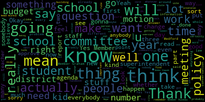

[Ruseau]: I had a question about whether the in-class breakfast, how is the milk transported to the classes and how long does it sit in the classes and come back and over and over multiple times a day?
[Ruseau]: How do you track that the milk isn't the same milk going to the class for four or five days in a row?
[Ruseau]: And is it actually kept cold while it's sitting in the class for an hour or two?
[Ruseau]: I just had a question about, thank you.
[Ruseau]: I had a question about whether the in-class breakfast, how is the milk transported to the classes and how long does it sit in the classes and come back and over and over multiple times a day?
[Ruseau]: How do you track that the milk isn't the same milk going to the class for four or five days in a row?
[Ruseau]: And is it actually kept cold while it's sitting in the class for an hour or two?
[Ruseau]: Yes, I just wanted to provide some feedback.
[Ruseau]: I received text messages from a number of parents that went to the McGlynn open house, and they were beyond excited.
[Ruseau]: And they just could not believe how wonderful the event was.
[Ruseau]: I didn't get to go, so I can't really give more feedback than what I received.
[Ruseau]: But they were universally very excited.
[Ruseau]: So thank you very much.
[Ruseau]: professional development days do we have a year?
[Ruseau]: considering using the majority of professional development on something that is virtually, like the likelihood is incredibly low and will thus delay RTI and all the other trainings that we want to do which will affect our children right away.
[Ruseau]: I just want to make sure we're not going to say, if Alice's training, which is what we're going with,
[Ruseau]: is one and a half days a year of training.
[Ruseau]: We're not going to just wave a magic wand and give it a couple hours a year and think that's enough.
[Ruseau]: So if we have to give up most of our professional development for all of our teachers, for all of the things that we currently do, I think the community really needs to understand and make a choice.
[Ruseau]: Thank you very much.
[Ruseau]: That was a lot of information.
[Ruseau]: I was wondering, because I was confused about the fact that the elementary schools do not have the guidance Councilors, for the middle schools and for the high school, what is the guidance Councilor to student ratios right now?
[Ruseau]: About 300 on average.
[Ruseau]: That's not terrible.
[Ruseau]: OK.
[Ruseau]: I was just looking on the, I don't know which Department of Ed website,
[Ruseau]: showed us in the 420 range, but I think that might have been including students that are in elementary school or something was weird about that.
[Ruseau]: So this number is much nicer.
[Ruseau]: I have one other question, though, about the, so the additional $1,000
[Ruseau]: Is that enough or do you know?
[Ruseau]: Mrs. Metz, here.
[Ruseau]: Hello.
[Ruseau]: Hi.
[Ruseau]: Michael stole my first question.
[Ruseau]: Thank you.
[Ruseau]: It was bound to happen.
[Ruseau]: I knew it was bound to happen.
[Ruseau]: So what is a popular educational initiative or practice of which you're skeptical and why?
[Ruseau]: I'm struggling.
[Ruseau]: Could you all stop taking my questions?
[Ruseau]: No, that's OK.
[Ruseau]: I understand.
[Ruseau]: How does recess fit into a school system under your leadership?
[Ruseau]: Just to follow up on that.
[Ruseau]: Sure.
[Ruseau]: So do you think that recess has any place in the discipline system?
[Ruseau]: Should recess ever be taken away for disciplinary reasons?
[Ruseau]: Teaching colleges, you did mention your work with Desi around, you know, what teaching colleges are really, how they're preparing teachers or often how they're not preparing teachers.
[Ruseau]: How would you systematize supports for new teachers in particular?
[Ruseau]: Because, you know, of all the teachers I've spoken to, their first year is sort of like
[Ruseau]: a very bad memory.
[Ruseau]: Well, they don't sleep.
[Ruseau]: That's true.
[Ruseau]: Right.
[Ruseau]: And it just seems to me like a lot of that is just a lack of supports for them.
[Ruseau]: So how would you systematize some supports for them?
[Ruseau]: Thank you.
[Ruseau]: I really like.
[Ruseau]: I get to go first so that nobody steals my questions.
[Ruseau]: What was my number four question, sorry.
[Ruseau]: I wasn't prepared for you to point to me.
[Ruseau]: I'll just go with the question, my number two question.
[Ruseau]: What is a popular educational initiative or practice of which you're skeptical and why?
[Ruseau]: Hello.
[Ruseau]: Teaching colleges often don't prepare teachers for the challenges of a classroom right out of the gate.
[Ruseau]: What would you do to systematize supports for new teachers to ensure their success?
[Ruseau]: Hello again.
[Ruseau]: How does recess fit into a school system under your leadership?
[Ruseau]: Hello again.
[Ruseau]: Well, with all these schools, I'm sure, I'm hoping you can have an answer to this question.
[Ruseau]: What is a popular educational initiative or practice of which you're skeptical and why?
[Ruseau]: Well, actually, one that's popular, but for which that doesn't make it necessarily a good idea.
[Ruseau]: And I'm sure that answering this is uncomfortable.
[Ruseau]: Thank you.
[Ruseau]: How does recess fit into a school system under your leadership?
[Ruseau]: And do you think that recess should ever be used, should ever be removed as part of disciplinary action?
[Ruseau]: Should you ever take away recess?
[Ruseau]: No, but when you get a chance, I have a question from Sebastian and from Justin.
[Ruseau]: Oh, certainly.
[Ruseau]: Yeah, I know.
[Ruseau]: That sounds pretty cool.
[Ruseau]: So let's see here.
[Ruseau]: Do you believe that civic engagement should be a part of the education process?
[Ruseau]: And if so, what programs or policies would you continue or begin to foster civic engagement?
[Ruseau]: And if not, why?
[Ruseau]: This is a lot better, I know, sorry.
[Ruseau]: I didn't write the question, so.
[Ruseau]: Thank you.
[Ruseau]: Good evening.
[Ruseau]: Hi.
[Ruseau]: I have a short question.
[Ruseau]: Sure.
[Ruseau]: Not necessarily a short answer.
[Ruseau]: What is a popular educational initiative or practice of which you are skeptical and why?
[Ruseau]: Sometimes I feel like the more I learn, the less happy I am.
[Ruseau]: How does recess fit into a school system under your leadership?
[Ruseau]: Thank you.
[Ruseau]: I pledge allegiance to the flag of the United States of America and to the republic for which it stands, one nation under God, indivisible, with liberty and justice for all.
[Ruseau]: Your mic may be on, it may not be.
[Ruseau]: So I didn't go and add a lot more data because I felt given the task it was very difficult to try to
[Ruseau]: It's coming through okay?
[Ruseau]: Can you explain how geozones are different than just drawing lines now?
[Ruseau]: So it's really fancy gerrymandering.
[Ruseau]: I'm sorry?
[Ruseau]: It's sort of like gerrymandering.
[Ruseau]: It's not trying to be like, this neighborhood goes here, it could be like... No, no.
[Ruseau]: improving community engagement and buy-in from all sectors of the community.
[Ruseau]: I feel like parents are sort of a de facto, I think those are our constituents, but they just paid our taxes and the rest of the community didn't, we'd all be in trouble.
[Ruseau]: And so finding a way for the rest of the community to, not that nobody else in the community cares about our schools, but we're making sure that the rest of the community that doesn't have kids right now
[Ruseau]: is as close to as interested in the students as parents are.
[Ruseau]: Maybe not as interested, that would be a lot of work.
[Ruseau]: So for me that, and that's not a short term thing to fix, but it seems to me that it should be a very high priority, always, forever.
[Ruseau]: Getting us on that road.
[Ruseau]: Thank you very much for that.
[Ruseau]: I want to start at the end a bit.
[Ruseau]: Is there any national conversation around hate rallies that students are leaving school for?
[Ruseau]: Because this is completely new to me and sounds a bit like backing into a decision that was made.
[Ruseau]: Like, I've not heard of any of these hate rallies coming up anywhere in our country.
[Ruseau]: Do you think they would make the news?
[Ruseau]: If you call in sick on a Friday, does Medford Public Schools have a policy that tells you what you can and cannot do on Saturday and Sunday?
[Ruseau]: No I'm talking about anybody who works for our district.
[Ruseau]: I know for my own job if I call in because I need a mental health day or
[Ruseau]: I'm just, you know, for whatever reason I decide not to go to work, my employer has no rules about what I'm allowed to do on the weekend after that Friday.
[Ruseau]: So I just wanted to be clear.
[Ruseau]: I think there was some confusion with some people I've talked to.
[Ruseau]: I actually have no issue with whether this is an excused or unexcused.
[Ruseau]: I believe the administration should make that decision.
[Ruseau]: I do believe it should be the policy of the Medford Public Schools that we do not take and then provide punitive measures that extend outside of the school hours.
[Ruseau]: to our students.
[Ruseau]: There is not some huge problem based on our absences that we have reported to DESE.
[Ruseau]: We are perfectly fine.
[Ruseau]: We are in the regular range of nine and a half.
[Ruseau]: And we do not have a problem of kids skipping school who are then wanting to go, like the band kids are all going to school.
[Ruseau]: And so are the football kids.
[Ruseau]: And the natural, when I was an elementary school parent, there was this huge emphasis on natural consequences.
[Ruseau]: The natural consequence, if you don't go to work, you don't get paid or you use your sick time.
[Ruseau]: The natural consequence, if you don't go to school and it's unexcused, if the teacher doesn't let you make up the test, then you don't get a grade.
[Ruseau]: But it's an unnatural consequence to then penalize those students that participate in extracurriculars, whether it's football or band, to then take away those things from all of their teammates.
[Ruseau]: To me, it is actually abusive to have the pressure that these students were put on
[Ruseau]: on Friday morning and told, you're going to ruin this band performance for all of Medford.
[Ruseau]: Now, I don't think that the person who put that message out did anything wrong.
[Ruseau]: The wrong thing was that they actually would be penalized for that.
[Ruseau]: And if I may, I have a letter from a parent that couldn't make it.
[Ruseau]: May I read it?
[Ruseau]: Certainly.
[Ruseau]: So this is from Jen Lewis.
[Ruseau]: And unfortunately, I don't have her address right here, but I'll get that.
[Ruseau]: Dear School Committee, I am deeply disappointed at MPS's decision to maintain last Friday as an unexcused absence.
[Ruseau]: My daughter, Laura Lewis, 10th grade MHS, is a Color Guard member, and while she cares deeply about climate change and would have liked to go to the march on Friday, she chose to attend school since to get an unexcused absence would have kept her from being part of the annual home show this weekend.
[Ruseau]: As some of you may be aware, it is their largest event of the year, and the kids were strongly admonished not to let the ban down.
[Ruseau]: MPS could easily have paved the way for more students to attend by keeping them from having to choose between speaking out with hundreds of thousands of people around the world versus abandoning your team when you have all worked hard for a big event since June.
[Ruseau]: Many of our surrounding districts chose to allow students to protest at this event without punitive measures, and MPS could have done the same.
[Ruseau]: Instead, knowing the effect it would have on students who were part of weekend activities,
[Ruseau]: You chose to allow a state data point to take precedence over encouraging civic participation and free thought among our student body.
[Ruseau]: Climate change continues to worsen because our government refuses to take action to change it.
[Ruseau]: Maintaining the status quo, not rocking the boat, has gotten us where we are.
[Ruseau]: We must speak out, we must protest, and we must encourage and support our children to do the same.
[Ruseau]: Your choice did the exact opposite.
[Ruseau]: Attending a big protest engenders a sense of camaraderie and hope that simply cannot be easily replicated.
[Ruseau]: I am proud of my daughter for the choice she made, ashamed of the school that forced her to do so, and saddened that she missed the opportunity to be there.
[Ruseau]: I implore you in the future to find ways that the school can encourage students in activism and civic engagement not to, not be another barrier supporting the status quo.
[Ruseau]: And that was signed by Jen Lewis.
[Ruseau]: So I mean, I just feel like there was a middle ground here.
[Ruseau]: And the assertion that, I mean, let's be clear.
[Ruseau]: The statement I just heard implies that Cambridge, Boston, Somerville, Arlington, and many other towns did not take into account the student safety.
[Ruseau]: That is a statement that is a direct,
[Ruseau]: can be followed directly from the statement that this was about their safety, which is in the letter that we received.
[Ruseau]: I don't believe that those superintendents and those districts truly don't care about the safety of their students and decided to do something they felt was going to risk their students' safety.
[Ruseau]: But as I said before, I'm not opposed to just leaving
[Ruseau]: This to me is not about whether it's excused or not.
[Ruseau]: It's about whether the punitive measures are appropriate.
[Ruseau]: I'll let somebody else talk for a little bit.
[Ruseau]: I won't make all night.
[Ruseau]: Thank you.
[Ruseau]: This was a conversation I've had several times over the last week, even before the strike, about the idea that this is civil disobedience.
[Ruseau]: It certainly is civil disobedience.
[Ruseau]: But here's my issue with giving children the same consequences
[Ruseau]: that the rest of us in this room would have, they do not have the same rights as us.
[Ruseau]: They don't.
[Ruseau]: The Supreme Court's crystal clear.
[Ruseau]: So why should they suffer the same consequences as us when they take an action such as civil disobedience?
[Ruseau]: I just think that those, I kind of have trouble getting from the, you do civil disobedience, you get the consequences, whatever they are.
[Ruseau]: That's fine, I'm a grown up and I can,
[Ruseau]: make that decision.
[Ruseau]: But when I don't have all the same, if somebody doesn't have all the same rights, I just don't think that is a fair proposition.
[Ruseau]: And that is, I think, everything I wanted to say.
[Ruseau]: Thank you.
[Ruseau]: So on Friday, I had a conference call with Jim McDonald, Jack McCarthy, and Diane Sullivan of the MSBA, Massachusetts School Building Authority.
[Ruseau]: I had sent them a long list of questions, and they felt it was better to actually just have a conference call with me.
[Ruseau]: And it was a very enlightening call, to say the least, and there's a couple of important things I felt the need to share.
[Ruseau]: First of all, our building, all school buildings are inspected and are given a rating from one to four, one being sound, I guess, to four being like, why is anybody in there?
[Ruseau]: And we are rated at a one.
[Ruseau]: So we should not have any delusions that they're gonna come in and say, this place has to be demolished.
[Ruseau]: That's not gonna happen.
[Ruseau]: Another important information, our reimbursement rate for Medford is 52.3%, so we are looking at paying for almost half of whatever we decide to do there.
[Ruseau]: I think that's a really, really important piece of information.
[Ruseau]: We've got 90% for the elementary and middle schools.
[Ruseau]: We're not going to have that kind of thing in the future, no matter what.
[Ruseau]: And then there was something else I asked about that I almost forgot to ask that turned out to be, for me, the most important piece here.
[Ruseau]: Our high school is built for 5,000 students.
[Ruseau]: And the MSBA only has authority on things from K to 12.
[Ruseau]: So any kind of major renovation to the school can only be for the size of our population, 1,400, 1,500 kids.
[Ruseau]: There is no option where they would demolish the building and give us a new building.
[Ruseau]: Well, they would, but it'd be tiny compared to what we have now.
[Ruseau]: We would lose all other programming that is not part of the K-12 that we have housed there.
[Ruseau]: So to me, that is a really important point.
[Ruseau]: We have a lot of other non-K-12 stuff going on there, and all of that stuff would just be completely orphaned if we were to get a grant for a new high school from them, ignoring how we all pay for it.
[Ruseau]: So I thought those were really, really interesting and important points.
[Ruseau]: And the other one I wanted, and just one note for the minutes, I have heard this numerous times lately that there's only five people in DPW or six people in DPW.
[Ruseau]: The mayor has confirmed, I think it's like 50 people actually work there.
[Ruseau]: I think that's an important thing for people to know, that no, there is not some tiny skeleton crew of people.
[Ruseau]: Six people running around the city.
[Ruseau]: And I see that twice in the minutes and wanted to correct that.
[Ruseau]: Thank you.
[Ruseau]: Thank you.
[Ruseau]: Well, number of divinadettos sort of took a bit of a half, just about everything I had to say, but that's all right.
[Ruseau]: Around the accelerated, what percent of the seventh graders go on to take algebra one in eighth grade?
[Ruseau]: There's not a big drop off.
[Ruseau]: No.
[Ruseau]: OK.
[Ruseau]: That's helpful.
[Ruseau]: So I'm looking at the wrong notes.
[Ruseau]: Sorry.
[Ruseau]: Do we know.
[Ruseau]: Have we looked at the kids that are testing into the accelerated math to determine what elementary schools they went to.
[Ruseau]: I would certainly like that piece of information.
[Ruseau]: I don't know if we need it.
[Ruseau]: Thank you.
[Ruseau]: I know that's not that simple in school brains.
[Ruseau]: I get that.
[Ruseau]: So I have a lot of reservations around the accelerated math.
[Ruseau]: I mean, I think you and I have spoken about this whole idea that these kids are really being taught how to just get things done quickly and not have a deep understanding.
[Ruseau]: And this is probably too hard of a question, but are these kids really sticking with math is really my issue and point.
[Ruseau]: Are these kids in accelerated math
[Ruseau]: just as likely as the kids who are not in accelerated math to take calculus?
[Ruseau]: I mean, these are questions that I feel like you probably have a better sense of than I do.
[Ruseau]: Yes.
[Ruseau]: I didn't pay you for that, just so we're clear.
[Ruseau]: My concern is around the well-documented drop-off in girls and math.
[Ruseau]: And aside from what schools these kids are coming from, and I realize 72 is not a big number.
[Ruseau]: So you can only draw so many conclusions from that.
[Ruseau]: But understanding the demographics of those 72 students, and also the trajectory.
[Ruseau]: I mean, are all the girls taking middle school accelerated math, and then they get to high school, and all the girls are not in the math courses that they would
[Ruseau]: that we would hope them to remain in.
[Ruseau]: I mean, I'm not making that up that girls are not interested in math after middle school as a general statement.
[Ruseau]: There are plenty of girls, I'm sure, that are.
[Ruseau]: But it's just depressing.
[Ruseau]: Something's happening.
[Ruseau]: And it isn't that girls are suddenly not mathematically inclined when they get to high school.
[Ruseau]: And I just think if there's anything we're doing that is feeding into that, we should really take a hard look at that.
[Ruseau]: Thank you.
[Ruseau]: Thank you for this.
[Ruseau]: This report was actually
[Ruseau]: I shouldn't be surprised, but it was excellent.
[Ruseau]: I really appreciated that where there were deficits in the individual screeners, you're all, you're filling and covering for all of those.
[Ruseau]: That made me so very happy.
[Ruseau]: One question I had was, I see that the map product is available in Spanish, and I just realized I have no idea how we handle
[Ruseau]: have in the past or how we are planning to handle students who are not, English isn't their primary language.
[Ruseau]: Thank you.
[Ruseau]: Whenever we have a teacher that is not certified in the particular discipline, that's reported to DESE, correct?
[Ruseau]: That shows up on the report card and all that stuff?
[Ruseau]: course.
[Ruseau]: Thank you.
[Ruseau]: And then this is, you know, this is really down into the weeds, but, um, apparently at the McGlynn today there was no French toast sticks available.
[Ruseau]: They, they were served at all the other schools and they were ran out or whatever.
[Ruseau]: Um, and that's not really why I wanted to talk about.
[Ruseau]: Um, but, um,
[Ruseau]: I've heard from a couple of parents whose kids are allergic to dairy and they went to school today and they were very excited because it's French toast sticks day and they could eat the lunch.
[Ruseau]: And then they got there and they were replaced with mozzarella sticks because they were out.
[Ruseau]: And none of that actually particularly bothers me.
[Ruseau]: What bothers me is that are we really not providing everyday alternatives to fairly common allergies at lunch?
[Ruseau]: I would completely agree.
[Ruseau]: My question was really around like.
[Ruseau]: This is lunch.
[Ruseau]: And I guess my question is like, if you are allergic to dairy, does that mean only certain days of the week you can eat lunch?
[Ruseau]: Or can you eat lunch every day?
[Ruseau]: No.
[Ruseau]: And I don't know, because I'm not allergic to dairy.
[Ruseau]: I wasn't with the kids, so obviously I don't know that.
[Ruseau]: OK.
[Ruseau]: Thank you.
[Ruseau]: Oh, sorry.
[Ruseau]: It's been a while.
[Ruseau]: Do any of these assessments have specific computer technology requirements?
[Ruseau]: And are those technology requirements consistent with what we already have, or?
[Ruseau]: So nobody's going to demand that we have 5,000 new iPads.
[Ruseau]: Nope.
[Ruseau]: Excellent.
[Ruseau]: Thank you.
[Ruseau]: Thank you.
[Ruseau]: I don't know how to ask this delicately.
[Ruseau]: Do the employees of Compass receive wages and benefits even remotely similar to our custodial staff?
[Ruseau]: So in our RFP,
[Ruseau]: We have nothing in there that says they should make minimum wage.
[Ruseau]: I mean, obviously, they make minimum wage.
[Ruseau]: But they can have no health care benefits and make minimum wage.
[Ruseau]: And that's perfectly allowed in the RFP.
[Ruseau]: It was measured.
[Ruseau]: Thank you.
[Ruseau]: I don't want to beat this dead horse too much, sorry.
[Ruseau]: But, you know, why not?
[Ruseau]: Part of what Ms.
[Ruseau]: Mustone is saying also is like, you know, I mean, I don't know this company, and I have no reason to think they're anything but the most trustworthy company, but in a $1.4 million contract, what I'm trying to make sure is that it's not a million dollars for the owner, and then everybody else is like at the food pantry, and we don't.
[Ruseau]: Great.
[Ruseau]: I appreciate it.
[Ruseau]: Present.
[Ruseau]: Yes.
[Ruseau]: I'll second the motion.
[Ruseau]: And I also wanted to add that I look forward to the advisory committee.
[Ruseau]: I've been pretty vocal on this proclamation that as much as the proclamation feels good, the proclamation won't help anybody.
[Ruseau]: with their food insecurity.
[Ruseau]: So it's important that we have actions coming out of this, and I look forward to hopefully being part of this advisory committee to figure out what we can do in our schools, understanding what it would cost, and really making sure that we are closing the gap as needed here.
[Ruseau]: Thank you.
[Ruseau]: Yes.
[Ruseau]: I just would like to quickly point out, though, that when we have our committee of the whole, the only moment we will be talking in executive session is when we are discussing something that is allowed, and we will not also talk about other stuff.
[Ruseau]: That's a really important point.
[Ruseau]: We can't go into executive session to discuss employees that perhaps are under a contract and then also talk about employees that are not under a contract.
[Ruseau]: we have to literally divide our conversation very clearly, so there won't be any like, you come into the room, we're talking, we're gonna go to executive session, and we come out and we've talked about you or what this topic.
[Ruseau]: So it's really important to note that executive session has very strict rules that we
[Ruseau]: have to always kind of enforce with each other, like, no, you can't talk about that.
[Ruseau]: We really do that, because the law is very explicit about what we can and cannot talk about in those meetings.
[Ruseau]: So I do think the committee of the whole, obviously, I would make a motion to approve this.
[Ruseau]: But if we do have executive session portion, which we may have to have, because if there's an effect on employees with a contract, we can't discuss that in the public.
[Ruseau]: it won't be most of the meeting.
[Ruseau]: You definitely want to stick around.
[Ruseau]: Member Ruseau.
[Ruseau]: Thank you for that report.
[Ruseau]: I really do appreciate it.
[Ruseau]: If somebody's identified as needing quarantine, I presume, or self-quarantine, is Medford notified that this is a resident?
[Ruseau]: No.
[Ruseau]: I mean, does the town, wherever the person lives, they get off the plane and they are identified as somebody who does need to be self-quarantined?
[Ruseau]: Maybe I don't understand self-quarantine then.
[Ruseau]: And so, but when somebody is quarantined because they're symptomatic.
[Ruseau]: They don't get to go home.
[Ruseau]: Thank you.
[Ruseau]: This is amazing.
[Ruseau]: I'm looking at this stuff thinking, like, can we get that in our school?
[Ruseau]: I'm sure we need more than one, though, for our school.
[Ruseau]: That's what I was going to imagine.
[Ruseau]: So I would certainly motion to approve this.
[Ruseau]: Member Ruseau.
[Ruseau]: I have three questions, since one of them has already been covered.
[Ruseau]: How many hours did it take to create this report?
[Ruseau]: I mean, a ballpark?
[Ruseau]: Thank you.
[Ruseau]: On page two, one of the positions is just listed as the title being school.
[Ruseau]: About seven or eight up from the bottom.
[Ruseau]: Oh, I see.
[Ruseau]: OK.
[Ruseau]: That makes sense, because they could be anywhere.
[Ruseau]: Correct.
[Ruseau]: And then on the very last page of the new hires,
[Ruseau]: The first column says non-unit ISS.
[Ruseau]: What's the ISS?
[Ruseau]: Thank you.
[Ruseau]: Thank you.
[Ruseau]: I mean, I also have received these and again, it's not my experience with the principals either.
[Ruseau]: I think that, you know, the day of, I've seen enough of what a principal has to do to know that it's a,
[Ruseau]: remarkable job that I wouldn't do for all the money in the world.
[Ruseau]: And, you know, there's fires starting up every day in every building, not literal fires, you know, emergencies and crises that you have to deal with.
[Ruseau]: And I do dislike very much that we have to have the conversation that not prioritizing these incoming kindergarten parents or potential kindergarten parents
[Ruseau]: who are being very actively recruited is going to cost us $12,700 a year for 13 years.
[Ruseau]: None of us are going to have an easier job in any of our buildings if we keep losing more and more kids.
[Ruseau]: And I just hate the idea that we have to say, you know, the message needs to be crystal clear from the administration down to the principals that these people need to be prioritized like, you know,
[Ruseau]: like the governor's at your front door.
[Ruseau]: It's like, because it's so much money.
[Ruseau]: And they're making their choices on their first kid, and they have four kids, all four are gonna go there, and it's just, we can't get them back.
[Ruseau]: It's just so much money.
[Ruseau]: And I know it's, in your day-to-day lives as principals, it's,
[Ruseau]: There's kids here now, and there's real problems you have to deal with, and worrying about a kid that may or may not show up in September seems hard to prioritize, but we are losing so much money to the charter schools, so I just wanna urge everybody to sort of repeat this over and over again, that we have to have an incredibly robust and very, very strict protocol around,
[Ruseau]: kindergarten parent is interested, we need to respond in a very, very like excessive way almost, in my opinion.
[Ruseau]: So.
[Ruseau]: Member Ruseau.
[Ruseau]: I believe we know exactly how many students for each grade level, because while we're not actually cutting a check, we know because we didn't get the check from the state.
[Ruseau]: So we know exactly that information.
[Ruseau]: I believe it's even reported on the DESE website, although I'm not sure it's broken down by grade level.
[Ruseau]: Ms.
[Ruseau]: Patterson may actually know that.
[Ruseau]: Um, we will,
[Ruseau]: what you are on the subcommittee, but we will get together and we will draft a new rule, not a policy, that will tell all of us how we shall request ad hoc reports.
[Ruseau]: Of course, once we have that recommendation, we bring it back here to vote on it, and you can all say that.
[Ruseau]: Hopefully, you'll agree with that rule.
[Ruseau]: And then that will be the rule.
[Ruseau]: The intention of this is that nobody will be here saying,
[Ruseau]: I'd like a report and just start rattling off what you want.
[Ruseau]: And we can get in the subcommittee.
[Ruseau]: We can go into the gory details of what's so horrible about that.
[Ruseau]: Simple reports might actually require 40 hours of labor, just so you can ask a simple question.
[Ruseau]: And that might be OK.
[Ruseau]: I don't think when we approve those reports, we all realize what we're doing to the superintendent's office, and I might not be so willing to approve a report request if I thought, if knew, for instance, that answering your question requires an obscene amount of work.
[Ruseau]: So that's sort of the whole genesis of this, because we have a long list of ad hoc reports.
[Ruseau]: And no idea, because they haven't probably even been started, I'm assuming.
[Ruseau]: But we don't know.
[Ruseau]: Are these reports that are simple, and like somebody clicks a button in some software program, or are these reports that take weeks of staff's effort to answer questions?
[Ruseau]: By the way, our reports right now, they don't even know what the question is they're trying to answer.
[Ruseau]: So I mean, I think it's important we have a simple form.
[Ruseau]: What do you want to know?
[Ruseau]: why do you want to know it so we're not playing gotcha with the administration, digging up lots of data so we can try and find something somebody did wrong or something, and then get an estimate from the administration, what does it really take to do this report so that we can, I'm sort of just telling you what I want to do with this subcommittee, but that's the genesis of this, is that it's just too easy to rattle off a report
[Ruseau]: and think that we have like 40 people sitting around in central administration running off to do our work for us, and that they don't exist, so.
[Ruseau]: I'm glad you're on the subcommittee, because... I'm glad I'm on it, too.
[Ruseau]: And I think these existing reports, for the most part, especially the older ones, I don't think any of us are going to be able to answer those questions, and we can just vote to take them off the list.
[Ruseau]: Or keep them on the list if we can imagine why the report is here.
[Ruseau]: I mean, get a list of out-of-district student enrollment in Medford Public Schools, I'm guessing that is like how many?
[Ruseau]: We aren't going to get a list of the actual students.
[Ruseau]: This will just be to generate a rule that we will then follow as a committee if we approve the rule.
[Ruseau]: Aye.
[Ruseau]: I would like to amend this to fix the
[Ruseau]: After resolve it says an action relative to, it should be an act relative to healthy youth.
[Ruseau]: But I've actually, sorry.
[Ruseau]: And I have actually offered this last year and it was passed as well.
[Ruseau]: The House continues to not actually take it up for a vote even though the Senate passes it.
[Ruseau]: I believe even unanimously in their last vote, or close to unanimously.
[Ruseau]: I'm sure there were a couple of holdouts.
[Ruseau]: So this is not a controversial piece of legislation, unless of course you control what we actually vote on in the legislature.
[Ruseau]: All this would do is require that public schools that do offer sexual health education actually do it.
[Ruseau]: an accurate and correct job.
[Ruseau]: If communities opt to not teach any sex ed at all, they can continue to pretend that life doesn't include this stuff.
[Ruseau]: So I urge us to approve this and send this off to these folks to remind them that we actually do want this to pass.
[Ruseau]: Second.
[Ruseau]: Aye.
[Ruseau]: Present.
[Ruseau]: I'm not really clear what you mean by information.
[Ruseau]: I mean, I've received the Michigan model.
[Ruseau]: It is a binder that would take most of us, if we're fast readers,
[Ruseau]: more than two weeks to read, so I don't know what the request for information is.
[Ruseau]: So two weeks from now, if you get the documents we got in our meeting, is that going to be good enough is really my concern.
[Ruseau]: I also want to point out that this is a vote that is purely for the purposes of providing cover to our staff.
[Ruseau]: We are explicitly forbidden in the law from approving curriculum.
[Ruseau]: It's explicit in the 1993 Ed Reform Act.
[Ruseau]: So I'm willing to vote for this, no matter what it is that we're going to be teaching, because it isn't about the content.
[Ruseau]: It's about the fact that we're not teaching sex ed at all to our middle schoolers right now.
[Ruseau]: And we are so far off of the national standards that I'm just not interested in a conversation about whether or not masturbation, menstruation, whether showing how to put a condom onto a replica penis, those are things that are going to happen.
[Ruseau]: And in my mind, they're going to happen whether we approve this or not.
[Ruseau]: So the law requires opt-out for parents.
[Ruseau]: A form will be sent home, and parents are more than welcome to keep their kids from knowing the facts of life or whatever it is you want to call that.
[Ruseau]: But I don't have the amount of work that is going to be involved with getting this done.
[Ruseau]: Two weeks is just two weeks, but the school year is only 180 days long.
[Ruseau]: We are talking about almost 10% of the time between now and the next time we meet.
[Ruseau]: So I am not comfortable with waiting so that we can all know what the content is.
[Ruseau]: The meeting?
[Ruseau]: Thank you.
[Ruseau]: So on March 3rd, we had a meeting that started at 3.31 PM.
[Ruseau]: I won't read the entire set of minutes.
[Ruseau]: We were discussing two new rules.
[Ruseau]: Is it two?
[Ruseau]: excuse me, the agenda's not here, two new rules for the committee itself.
[Ruseau]: And these are procedural rules and then a new policy.
[Ruseau]: I will just quickly go over each of them.
[Ruseau]: The first was a rule on how to add an item to the agenda of the school committee.
[Ruseau]: It is a very common experience for new members and even for those of us that have been around to wonder how do we get something on the agenda.
[Ruseau]: I could not find any existing rules, so we have composed a specific procedure.
[Ruseau]: It doesn't have a rule number yet because we have to find the current rules to know what to give it.
[Ruseau]: And I won't read the full rule, assuming that you have all read these since you received them in your packets.
[Ruseau]: I do want to make one minor amendment to it on page, it doesn't have page numbers, excuse me, under the why section.
[Ruseau]: The last sentence is, this procedure aims to put an end to that question.
[Ruseau]: Really, it should say, this procedure aims to provide an answer to that question.
[Ruseau]: So I entertain a motion to accept this rule as amended.
[Ruseau]: Sure.
[Ruseau]: The motion that I would like to have is to approve this as a rule of the school committee going forward with the slight change on the second page
[Ruseau]: where it says the why, and the last sentence is to be changed slightly, where it says this procedure, well the entire section Y says, this procedure is needed to ensure transparency.
[Ruseau]: One of the first questions a new member is often, how do I get something on the agenda?
[Ruseau]: This procedure aims, and it should say, to provide an answer to that question.
[Ruseau]: So that's the one amendment that I'd like to include.
[Ruseau]: So since not everybody has this, this just provides a list of steps for members when we want to add something to the agenda, how do we do it, what we would send, who we would send it to, when we would send it, we would use email, why we even need this procedure, and then also outline some important
[Ruseau]: some important situations that have happened but are unusual, such as what if there's an objection to adding something to an agenda?
[Ruseau]: For instance, we can ask for anything we want on the agenda, but if we ask for something that we couldn't legally actually get an answer to, that objection would actually follow a process as well.
[Ruseau]: And I think there's some questions.
[Ruseau]: I would just point out that switching to nine days, because there's a five-day window before the meeting by which you would have to have submitted this, that would mean it would be impossible to put something on the next agenda.
[Ruseau]: The when says that you cannot request something beyond the agenda closer than five school days before that meeting.
[Ruseau]: So if we wanted something on the next agenda, we must have it in by this Friday.
[Ruseau]: Two days before that is this Wednesday for the very next meeting.
[Ruseau]: So that's my concern.
[Ruseau]: We put that big five-day window out there.
[Ruseau]: Because you've got to put the posting, you've got to whatever documentation, whatever the thing is that is going to be on the agenda, it takes time.
[Ruseau]: And right now, we sometimes have members, and I'm guilty as charged, who submit things on Wednesday afternoon for a Monday meeting, or Thursday afternoon for a Monday meeting.
[Ruseau]: And they get on the agenda.
[Ruseau]: And I'm always happy when I shove something in at the last second and it gets on the agenda.
[Ruseau]: But there is no time for planning, there's no time for
[Ruseau]: saying, well, the meeting is now going to be six hours long, as happened last time.
[Ruseau]: So I mean, the five days is already a huge change, in my opinion, to when the last time you can hit your Send button to add something to an agenda.
[Ruseau]: So that's sort of my response to that.
[Ruseau]: I'd also just like to respond to the two day thing.
[Ruseau]: I actually completely agree that two days, like I have plenty of unread email that's more than two days old.
[Ruseau]: However, if I send something that I want on the agenda, I might be asking parents to come or, you know, engaging the community on a topic.
[Ruseau]: I send this email and
[Ruseau]: days just go by, and I don't know if it's going to be on the agenda.
[Ruseau]: That's a real problem, for me at least, when I've had that experience.
[Ruseau]: Two days is already, in my mind, is a long time.
[Ruseau]: Two full work days to simply say, yes, it'll be on the agenda.
[Ruseau]: You can just respond and say, I'm too busy right now.
[Ruseau]: Give me a couple extra days or something.
[Ruseau]: It doesn't have to be.
[Ruseau]: definitive, but getting a response of some sort is really part of the goal of that.
[Ruseau]: So, thank you.
[Ruseau]: If I might respond.
[Ruseau]: Yes.
[Ruseau]: One more time?
[Ruseau]: There we go.
[Ruseau]: For those that weren't in the meeting, I forget that you didn't hear this part of the conversation.
[Ruseau]: But all of these procedures, especially the new ones, I fully expect these are not perfect.
[Ruseau]: And that if three meetings from now we're like, this isn't working,
[Ruseau]: We just send it back to the subcommittee for changes.
[Ruseau]: These are our working rules.
[Ruseau]: If they're not working, then we can change them, because we change them for ourselves.
[Ruseau]: So that's how I look at all of these procedures and policies, that achieving a perfect outcome on the first run is, I think, a heavy lift.
[Ruseau]: And if two days, or five days, or if the whole procedure just doesn't work, any one of us can just
[Ruseau]: speak up at the next meeting and say, this doesn't work and here's why, and send it to subcommittee for changes.
[Ruseau]: But having something written down so members know which ends up, I think is really important.
[Ruseau]: This is not the only way things get on the agenda.
[Ruseau]: The superintendent and the chair are more than, they add things to the agenda all the time that we have nothing to do with.
[Ruseau]: So, I mean, we're all welcome to send an email saying, can you put coronavirus update on the agenda?
[Ruseau]: We also can just not do that because I think it'd be weird if that wasn't on the agenda.
[Ruseau]: So, I mean, the adding emergency things doesn't require us to do that.
[Ruseau]: It's not an emergency for me.
[Ruseau]: If I may.
[Ruseau]: So this is for this particular procedure.
[Ruseau]: is only for members who want to add something to the agenda.
[Ruseau]: There is another issue in this subcommittee that hasn't been scheduled yet, which is looking to redesign our entire agenda, how it works, and all that.
[Ruseau]: So in my mind, that is very much a part of that conversation.
[Ruseau]: The agenda is getting changed and built out, and how do we all know what's on the agenda coming up in two weeks before it gets posted?
[Ruseau]: But that seems very separate, in my mind, to the procedure of,
[Ruseau]: I want to talk about XYZ on April 9th.
[Ruseau]: And so this is what I would do under that circumstance.
[Ruseau]: But emergencies, I mean, this isn't really intended for emergency situations.
[Ruseau]: There's a new ad hoc report request procedure if if members would like another
[Ruseau]: We'd like to table this to our next meeting to read it through and really get your thoughts on it.
[Ruseau]: It is complicated and is a very big divergence from our current procedure for asking for ad hoc reports.
[Ruseau]: So if anybody would like to make a motion to table that particular rule to the next meeting so that we can move along.
[Ruseau]: Second that.
[Ruseau]: And the last is the policy review policy.
[Ruseau]: And I have four edits that I'd like to make.
[Ruseau]: So in the interest of time and the fact that we have people here, I will also request that perhaps we table this to the next meeting.
[Ruseau]: Thank you.
[Ruseau]: Thank you.
[Ruseau]: My questions actually weren't specifically for them.
[Ruseau]: So I just wanted to add, you know, we I'm concerned that we need to make sure that by the time we have our next meeting that anything that requires the school committee to take a vote to implement plans
[Ruseau]: that you prioritize anything where we need to be involved.
[Ruseau]: If we close the schools for two weeks and pay the teachers for two weeks, and then we need to tack on two extra weeks of school, we have to pay the teachers for two weeks of school.
[Ruseau]: That is not budgeted for today.
[Ruseau]: So we're not going to close the schools for two weeks and say, good luck, teachers, and not pay them.
[Ruseau]: That doesn't seem reasonable or rational.
[Ruseau]: So if we're going to run into situations where we have to close a school for two or three or four weeks, and ignoring the issue of the kids getting an education, just the financial impact of that is something that this committee needs to be involved in.
[Ruseau]: So I just want to make sure that we need to front load those concerns so that we don't have to have emergency meetings
[Ruseau]: unnecessarily.
[Ruseau]: So I just want to make sure that those, when you're looking at the plans and there's lots and lots of details, somebody needs to be paying very close attention to, does the school community need to vote on this?
[Ruseau]: And get that to us as soon as possible.
[Ruseau]: And I also was wondering if we've heard anything from our state or federal delegation about perhaps providing some money for this.
[Ruseau]: I mean, I know there was like $8 billion to the CDC.
[Ruseau]: I haven't heard a peep about money for anything else.
[Ruseau]: You know, I know some parents would like us to be doing a full-blown disinfectant of the entire building, all eight of our buildings every day, practically.
[Ruseau]: You know, that would be millions of dollars after a couple of weeks.
[Ruseau]: And I've heard nothing from anybody in any higher levels of government to provide us some money.
[Ruseau]: And I think that that, I'm just wondering if there is anything.
[Ruseau]: Mayor, have you heard anything from anybody?
[Ruseau]: And then the last thing I would like to say is I was listening to NPR or WBUR or whatever it was today, and I screamed in my car.
[Ruseau]: not really, but I wanted to scream into my car, into the radio about everybody is talking about the inconvenience if we close our schools.
[Ruseau]: And I just want to be clear, it's going to be an inconvenience to me because I'm going to have to wear headphones because my kids are going to be obnoxious about how bored they are.
[Ruseau]: But it is not an inconvenience to families who depend on going to work
[Ruseau]: at an hourly rate, and don't get insurance if they don't go, and don't have food if they don't go, and now they can't go because their kids don't have any place to be.
[Ruseau]: This is not about an inconvenience.
[Ruseau]: And when people think about how we're weighing the importance of whether to close the schools or not, for me, in my house, whether the schools are closed is like a yawn.
[Ruseau]: It's not that big a deal for my family.
[Ruseau]: But there are a lot of families in our community where closing the schools will devastate them.
[Ruseau]: for many months or even years financially and so we need to really be following only the guidelines coming out of CDC and the recommendations from the feds and whoever else is giving us those and not ever responding to how many emails we got about why we haven't closed the schools because
[Ruseau]: That should not be driving this, because the impact is so severe for so many people.
[Ruseau]: So I just wanted to hope that we can stop using the word inconvenience.
[Ruseau]: It would be really appreciated.
[Ruseau]: Thank you.
[Ruseau]: Certainly we would pay them during a closure, but because of the 180 day minimums, we may have to have school past our current end date, even after the contractual end date.
[Ruseau]: And if we need them to work more days than we have a contract for, we're going to have to find the money to pay them because they're not going to just show up for free.
[Ruseau]: We wouldn't want them to either.
[Ruseau]: So that was my concern.
[Ruseau]: Thank you.
[Ruseau]: Understanding that the families are getting $1,000 back, I mean, I just think it's fascinating that the insurance costs 10% of the potential.
[Ruseau]: I mean, wow, we should just self-insure and forget about this in the future.
[Ruseau]: I mean, $100 to possibly get $1,000 back, I'll personally take that game.
[Ruseau]: That's really kind of an insane, I mean, the reason we all probably thought it made so much sense is that it was, oh, it's $100.
[Ruseau]: $100 doesn't sound so bad.
[Ruseau]: But I'm just a bit shocked at the
[Ruseau]: cost of the insurance for what it is you can actually get back.
[Ruseau]: And I don't remember the name of the speaker here, but I mean.
[Ruseau]: Oh.
[Ruseau]: And now a parent.
[Ruseau]: Okay.
[Ruseau]: I mean, to his point though, each student is covered for $100,000 worth of evacuation and repatriation services.
[Ruseau]: if we decide to not cancel them, to send them.
[Ruseau]: I'm not suggesting we send them, but $100,000 of their money times, what is it, 28 people.
[Ruseau]: That's some pretty bad math on their side.
[Ruseau]: So, I mean, the thing is that I don't know, is there any other game in town?
[Ruseau]: you know, can we truly threaten them and be like, this is kind of ridiculous.
[Ruseau]: Next year we're not going to use your services anymore if you can't do any better.
[Ruseau]: I mean, I don't think there's any reason we shouldn't say that to them because I mean, if they're not the only game in town, this is not a great, this looks bad.
[Ruseau]: I mean, and it's worth noting that I discussed this particular policy with member
[Ruseau]: I remember Graham earlier today, and I just noticed that the 60 to 31 day window, and a 20 to 15, and a 14, there's no 31 to 20 day window.
[Ruseau]: The policy just doesn't exist if you cancel during that time.
[Ruseau]: It's a pretty bad, poorly written policy.
[Ruseau]: I certainly agree.
[Ruseau]: Yeah.
[Ruseau]: Thank you.
[Ruseau]: I just wanted to not
[Ruseau]: You don't need to stand up here for this, but I just wanted to really point out that this doesn't impact all families equally, and that if we had a no-fee school system where what we considered part of our education was actually covered by the taxpayers, that this whole situation would be a very different situation.
[Ruseau]: We would all be mourning the loss of the experience, and that would be the end of the conversation.
[Ruseau]: Instead, we are in a situation where some families are probably very unhappy to have lost a couple thousand dollars.
[Ruseau]: Other families may well have worked an extra job, given up weekends for a year to find this money.
[Ruseau]: So it is not impacting all families equally.
[Ruseau]: And I think it's important to really call that out.
[Ruseau]: I'm assuming that not everybody that is going
[Ruseau]: has a $300,000 household income.
[Ruseau]: And I'm not saying if you do, this is no big deal either.
[Ruseau]: I just think it's important to note we make a lot of stuff that we consider part of our education fall into families.
[Ruseau]: And when stuff like this happens, it is even more, it's like pouring salt into the wound of some families.
[Ruseau]: So I just want to be clear that I don't, that families that this is really hurting from a financial perspective, that you are not unseen.
[Ruseau]: Member Ruseau?
[Ruseau]: I have a lot of thoughts.
[Ruseau]: One, the Student Opportunity Act provides no opportunity for extensions.
[Ruseau]: It also provides no consequences for failure to submit your form on time either.
[Ruseau]: DESE has a long history of things that if you just don't do it,
[Ruseau]: It's sort of like many of our laws in this state.
[Ruseau]: Do it or nothing happens.
[Ruseau]: So I don't really honestly care whether we submit this on time.
[Ruseau]: From a purely practical perspective, we cannot develop a family engagement plan and figure out how to reach out to our marginalized communities in particular, which we've never been able to successfully do in this city.
[Ruseau]: And I don't just mean the school system.
[Ruseau]: We cannot develop that muscle in 10 days or even in a year.
[Ruseau]: We have to spend money, whether it's creating an office of community and family engagement or whatever it is, and spend a lot of time, money, and people on the ground to develop that.
[Ruseau]: It does not happen because we want it to happen.
[Ruseau]: It happens because we take actions to make it happen.
[Ruseau]: And I honestly don't think that because we're going to get $380,000 or $370,000 less from the Department of Ed next year that we're going to use that, which is the real, you know, the total number is going to be less next year, not more.
[Ruseau]: And figuring out how we're going to spend $138,000 when we're really going to have $307,000 less.
[Ruseau]: It's just a mind game.
[Ruseau]: I mean, I'm not interested in how we're going to spend the $138,000.
[Ruseau]: I'm interested in what we're going to cut to make up the $300-something thousand, which is what I think we should all be talking about.
[Ruseau]: We aren't going to do better family engagement, and we aren't going to close any achievement gaps with $300-something less thousand dollars, which is what's going to happen.
[Ruseau]: So I just feel like this administration, our central administration is, you know, they can only work, there's only 24 hours in a day.
[Ruseau]: And we definitely have to improve family and community engagement, but I don't think 10 days is the time to get it done.
[Ruseau]: I think we do a, you know, I'm terrible with analogies, but you know, one of those, we just give it a,
[Ruseau]: the best try.
[Ruseau]: And clearly, since DESE has set up this short form and said, don't fill it with lots of stuff, they get it, that $30 per student, which is really not what we're getting because we're losing so much more money, isn't enough to do anything.
[Ruseau]: And they don't expect us to do anything.
[Ruseau]: So I'm just not, you know, we should be very concerned about parent and family engagement.
[Ruseau]: But that has nothing to do with Student Opportunity Act in my mind.
[Ruseau]: Whether we submit this or not has nothing to do with getting this money.
[Ruseau]: This is just our new chapter 70 formula.
[Ruseau]: Yeah.
[Ruseau]: This is the amount of the increase that will happen in the formula and it is not related to whether we submit this plan.
[Ruseau]: I just wanted to be clear on that.
[Ruseau]: The Chapter 70 formula is the Chapter 70 formula.
[Ruseau]: It has nothing to do with anything else.
[Ruseau]: Member Ruseau.
[Ruseau]: I apologize, this is new business.
[Ruseau]: Correct.
[Ruseau]: I apologize.
[Ruseau]: I actually have to wait because we didn't approve the ad hoc report procedure tonight.
[Ruseau]: So at the next meeting, I will actually suggest that each of these gets kind of wrapped up into the procedure that we have if we adopt it so we can get this list into something we can actually wrap our hands around.
[Ruseau]: Aye.
[Ruseau]: I gotta update it.
[Ruseau]: I'll message her.
[Ruseau]: Yes.
[Ruseau]: That would be me.
[Ruseau]: Thank you.
[Ruseau]: So I can barely remember it, but on March 3rd, the rules policy and equity subcommittee met.
[Ruseau]: There were three recommendations that were all approved by the subcommittee.
[Ruseau]: We already took up one of those in the last meeting.
[Ruseau]: regular school committee meeting, we tabled two items.
[Ruseau]: I'm going to leave one of those items tabled for now, which is the policy review policy.
[Ruseau]: But the one I'm going to bring up now is the, sorry, too many documents to switch between.
[Ruseau]: It is the, where is it?
[Ruseau]: There it is.
[Ruseau]: The ad hoc report request procedure.
[Ruseau]: It's a pretty technical document, but I'll just read the purpose statement.
[Ruseau]: The purpose of this procedure is to provide member of public school committee members, especially new members, with the knowledge of how to request an ad hoc report.
[Ruseau]: created.
[Ruseau]: Ad hoc reports can require substantial work by the district staff that will create the report.
[Ruseau]: This procedure is in place to ensure that when the school committee agrees to the creation of such a report that we are able to understand the following.
[Ruseau]: One, how much work is required to create the report.
[Ruseau]: Two, the questions and the purpose the report is aiming to answer.
[Ruseau]: Three, any specific information that is required in the report.
[Ruseau]: And four, determine if there is an existing report, ad hoc or periodic, that provides the answers to the questions being asked.
[Ruseau]: It is the responsibility of all school committee members to understand this procedure and members should help each other to ensure compliance.
[Ruseau]: On February 3rd, 2020, the school committee approved the following motion, which has led to the creation of this rule.
[Ruseau]: Given that creation of ad hoc reports at the behest of the school committee can require substantial effort on the part of the office of the superintendent and district staff, and that the school committee often depends on ad hoc reports to assist in deliberations, the rules policy and equity subcommittee shall generate a new rule for the school committee to guide how ad hoc reports
[Ruseau]: requests are generated.
[Ruseau]: I won't read the rest of this, but are there any members who have any specific questions or thoughts?
[Ruseau]: There was a question that came in earlier today, but I answered it based on our earlier conversations about how we would do this.
[Ruseau]: If the answer was already known and decided, I would just reply rather than putting it through the meeting.
[Ruseau]: There was a question about whether or not the New York trip was going to be canceled.
[Ruseau]: Of course, I replied that it had been canceled.
[Ruseau]: But I can't remember the detail on
[Ruseau]: The processing for reimbursements will take, I said, will take quite some time because City Hall has to do it and everything's not really operating normally.
[Ruseau]: Is that correct?
[Ruseau]: And do you think that that will take not until we get back to school kind of thing?
[Ruseau]: This is where there's eight people all on the internet at once.
[Ruseau]: Motion to approve.
[Ruseau]: I'd like to point out a clarification.
[Ruseau]: Member Ruseau?
[Ruseau]: On page eight, it has gender identity.
[Ruseau]: We explicitly talked about that in our subcommittee meeting, and that is not appropriate to wait till eighth grade.
[Ruseau]: It's really appropriate in third and fourth grade, to be honest.
[Ruseau]: So I would not be okay with that amendment.
[Ruseau]: Could I just ask that, because this is now so long ago, even though I'm sure I knew what it was then, if you could just send me an email, Mr. McLaughlin.
[Ruseau]: In general, I agree, but I think that for at least certainly the outstanding reports, well, what I'm trying to say is that I have talked to the superintendent about when a subcommittee doesn't really actually need any administrative
[Ruseau]: people there that we should – that they should get comfortable with that.
[Ruseau]: If we're going to go through the existing outstanding reports, for instance, I mean, the school committee voted to have these reports.
[Ruseau]: We can look at them again and decide whether we really want them or not without anybody from central office.
[Ruseau]: I mean, that might not be the best example, but I think having our meetings anyways and then trying to be a little more cautious and careful about how much time
[Ruseau]: they're going to have to put in is a better option than just not doing them, in my opinion.
[Ruseau]: May I suggest that really the point of having this at the meeting is so we could all physically sign it, which isn't really an option right now.
[Ruseau]: So perhaps we should leave it tabled.
[Ruseau]: I think that we've already discussed the content.
[Ruseau]: So that's just my thought.
[Ruseau]: I believe that was.
[Ruseau]: I offered that with member Graham and member Stone.
[Ruseau]: So I just, I talked to the superintendent and I was just thinking that this didn't feel like the right time for us to all be getting together and traveling to the school and inspecting it.
[Ruseau]: It just felt like that this particular committee really needed to be in the building.
[Ruseau]: And so I had suggested that maybe we move it to the spring
[Ruseau]: Superintendent felt we should start it in the fall.
[Ruseau]: And so that's why I put this out there.
[Ruseau]: So we could just kind of reset in the fall after we've had a chance to get through this.
[Ruseau]: I just would add that, you know, in the fall, you know, the people that we have already identified, we may need to reopen it a little bit because some of those people might not be available, life circumstances for some of, who knows how many of us could have changed dramatically by the fall.
[Ruseau]: So I just think, you know, we may need to do more recruitment in the fall in addition to trying to find a more representative group of people.
[Ruseau]: I mostly was interested in the policy that indicates that the slate of people that we choose for the advisory committee has to come to the school committee for approval.
[Ruseau]: The policy has a set of steps that we're supposed to follow that honestly, until January, I didn't even know existed.
[Ruseau]: And I just thought,
[Ruseau]: There's nothing wrong with the people we've already recruited, but we should be including them in section six of the policy.
[Ruseau]: We're supposed to tell them how long they have to be on this advisory committee, what is the language that the school committee is saying is their charge.
[Ruseau]: I know we actually had talked about in our last regular meeting about having a committee of the whole to sit down and talk about what is their charge.
[Ruseau]: Of course, all of that is out the window because we aren't having that meeting.
[Ruseau]: So that beginning of just meeting will make sure all the I's are dotted and the T's are crossed and that we have officially approved charge of this vision committee.
[Ruseau]: because I feel like I've heard and seen, like I've seen a city council meeting where it was described and I've described it myself numerous times in email and in school committee meetings.
[Ruseau]: And I feel like every time somebody describes it, we all put our own little spin on what it is we think that this committee is going to do.
[Ruseau]: And I think that the explicit language of what they're supposed to do should be approved by the school committee.
[Ruseau]: And then that's the, you know,
[Ruseau]: I think that is the end of the conversation about what it is we have asked them to do.
[Ruseau]: is to review the resolution on the disciplinary practices of suspension pursuant to Governor Baker's March 12, 2020, excuse me, order suspending certain provisions of the open meeting law and the Governor's March 15, 2020, order imposing strict limitations on the number of people that may gather in one place.
[Ruseau]: This meeting of the Medford School Committee will be conducted via remote participation to the greatest extent possible.
[Ruseau]: specific information and the general guidelines from remote participation by members of the public and or parties with a right and or requirement to attend this meeting can be found on the City of Medford website.
[Ruseau]: For this meeting members of the public who wish to listen or watch the meeting may do so by accessing the meeting link and contained herein.
[Ruseau]: No in-person attendance of members
[Ruseau]: of the public will be permitted, but every effort will be made to ensure that the public can adequately access the proceedings in real time via technological means.
[Ruseau]: In the event that we are unable to do so, despite our best efforts, we will post on the city of Medford or Medford Community Media website an audio or video recording transcript or other comprehensive record of proceedings as soon as possible after the meeting.
[Ruseau]: The meeting can be viewed through Medford Community Media on Comcast Channel 22 and Verizon Channel 43 from 6 to 7 PM.
[Ruseau]: Since the meeting will be held remotely, participants can log on.
[Ruseau]: or call in by using the following link or call in number.
[Ruseau]: This is an awfully long introduction.
[Ruseau]: And I will read just one of the Zoom.
[Ruseau]: There's two different Zoom links to get here.
[Ruseau]: HTTPS colon backslash backslash tinyurl.com slash YXZ64CY7.
[Ruseau]: The meeting ID is 970-8865-8077.
[Ruseau]: The passcode is 579751.
[Ruseau]: And to find one of the phone numbers, you only need one, is 1312-626-6799.
[Ruseau]: and then you would enter the meeting ID after that.
[Ruseau]: The meeting ID again is 970-886-58077.
[Ruseau]: Additionally, questions or comments can be submitted during the meeting by emailing
[Ruseau]: My email address PRUSEAU at medford.k12.ma.us.
[Ruseau]: Those submitting questions must include the following information, your first and last name, your Medford Street address, and your question or comment.
[Ruseau]: The agenda for tonight is the purpose.
[Ruseau]: There's only one thing on the agenda.
[Ruseau]: The purpose of the Rules, Policy, and Equity Subcommittee is to review the resolution on the disciplinary practice of suspension.
[Ruseau]: I will read the resolution, which is going to be the shortest thing I've read so far.
[Ruseau]: The resolution was sent to the subcommittee by the full committee.
[Ruseau]: last Thursday, I believe, or I don't remember when our meeting was.
[Ruseau]: Resolution on the Disciplinary Practice of Suspension, whereas Mayor Lungo-Koehn and the Medford City Council have declared racism a public health emergency, whereas Black, Latinx, and disabled students are disproportionately suspended, whereas suspensions harm students that are not suspended.
[Ruseau]: Whereas dropout rates are higher among students that are suspended, whereas out-of-school suspensions increase the likelihood of juvenile arrest, whereas suspended students are more likely to repeat a grade level, whereas students that are suspended are not being educated, whereas school attendance is a critical requirement to receive an education, whereas receiving an education is a requirement of academic achievement,
[Ruseau]: And whereas student achievement is the highest goal of all school committees.
[Ruseau]: Now, therefore be it resolved that the Medford Public Schools, one, ends the use of out-of-school suspensions effective the first day of the school year 2021, two, provides for the continuation of a learning environment for every in-school suspension, ensures that two, three, ensures that in-school suspensions will not occur in isolation without instruction or rehabilitative counseling,
[Ruseau]: Four, select alternative tools for use in disciplines such as restorative justice.
[Ruseau]: And five, incorporates any funding requirements to ensure the implementation of the selected alternatives with fidelity in the next budget cycle.
[Ruseau]: At this time, I will open the floor to anybody who has questions.
[Ruseau]: Any members want to speak?
[Ruseau]: If you all could raise your hands, just so I can figure out who to call on.
[Ruseau]: Either one is fine because there's not 450 people in this meeting.
[Ruseau]: Mr. DeLava.
[Ruseau]: Thank you.
[Ruseau]: Anybody else?
[Ruseau]: Somebody else must want to speak.
[Ruseau]: They all came.
[Ruseau]: Ms.
[Ruseau]: McLaughlin?
[Ruseau]: Member McLaughlin?
[Ruseau]: Yes, I'm sorry.
[Ruseau]: I guess it's fine.
[Ruseau]: Apparently, okay, can I share just one thing?
[Ruseau]: I have a lot of things open on my screen, one second.
[Ruseau]: There it is, I think.
[Ruseau]: Yes, share.
[Ruseau]: All right.
[Ruseau]: Everybody see that okay?
[Ruseau]: So one of the questions I had after listening to Mr. DeLeva was,
[Ruseau]: actually, it might have been Mr. Downs that mentioned that suspensions are, you know, in-school suspensions are treated the same because there's not an education being provided.
[Ruseau]: I think the state is still definitely reporting them separately as distinct things, Mr. Downs.
[Ruseau]: So are you saying nobody is tracking the difference between taking them out of the classroom and sending them to guidance and sending them home for a week?
[Ruseau]: Paul, Mr. Delato.
[Ruseau]: Sorry.
[Ruseau]: Zoom.
[Ruseau]: One second.
[Ruseau]: Stop.
[Ruseau]: Share.
[Ruseau]: There we go.
[Ruseau]: Good.
[Ruseau]: Thank you.
[Ruseau]: I mean, my understanding is they're really, I mean, I understand that the law might say that they're the same thing, but unless somebody is telling me we never send a kid home and that they're always still on the premises, then there is a difference regardless of what the law says.
[Ruseau]: I'm happy to share their screen.
[Ruseau]: I have it right here in front of me.
[Ruseau]: It is definitely not zeros across the board.
[Ruseau]: For in-school?
[Ruseau]: They have student discipline days missed reported.
[Ruseau]: So there's no, I can't know whether or not discipline days missed means, if you're saying we don't have an in-school suspension program, then these are all days that kids were not in the building.
[Ruseau]: And then we're not reported at all when we take them out of class for two periods.
[Ruseau]: Because that's not accurate.
[Ruseau]: I'm looking at Medford.
[Ruseau]: In favor of in-school suspension or better yet, getting to the root of the cause because, my apologies.
[Ruseau]: Correct.
[Ruseau]: Do you know where my phone is?
[Ruseau]: Yes.
[Ruseau]: Yeah, go ahead.
[Ruseau]: That's fine.
[Ruseau]: Thank you.
[Ruseau]: I would, if I may, if we were equitably providing suspensions, I would be more than willing to have a conversation around how we can solve the problems that cause suspensions, but we are not.
[Ruseau]: 62% of suspensions adjusted for race were not white people, and 38% were white people, white students.
[Ruseau]: So that tells me, unless we are comfortable having a conversation around the suggestion that the black kids are worse than the white kids, which I am not comfortable with, and I don't think there's any evidence to suggest that's an accurate view, that we have two problems.
[Ruseau]: We have the problem of how do we address kids that might actually need a suspension?
[Ruseau]: which is what I hear you talking about.
[Ruseau]: But I don't hear you talking about the fact that the primarily white staff notices the black kids doing the same things the white kids are doing, and they're the ones that get suspended.
[Ruseau]: I mean, it's like, it's almost tiring that that needs to be repeated.
[Ruseau]: And I hope that nobody's offended.
[Ruseau]: And I also hope that if you are offended, you understand that you are not understanding the problem.
[Ruseau]: But,
[Ruseau]: You know, this, this problem is not the issue.
[Ruseau]: First of all, your example of a knife.
[Ruseau]: I mean, you know, I grew up in rural New Hampshire and I would have been shocked if any of the kids didn't in high school didn't have a knife in their pocket.
[Ruseau]: That would be weird.
[Ruseau]: And there wasn't a time, you know, long ago, perhaps even in my lifetime, when in some parts of this country, people brought guns to school and that wasn't actually
[Ruseau]: call the police scenario.
[Ruseau]: So, you know, what I think of as like suspendable behavior and what you think of and what everybody thinks of isn't the same.
[Ruseau]: And it isn't the same for every child either.
[Ruseau]: Which child is considered performing a suspendable behavior isn't the same child to child.
[Ruseau]: So, I mean,
[Ruseau]: My biggest concern right now is not whether or not a kid comes to school with a pocket knife.
[Ruseau]: I mean, I'm not talking about a big Bowie knife that is intended to behead a deer.
[Ruseau]: I'm talking about a pocket knife.
[Ruseau]: If that kid's getting suspended, I would say that's already a problem.
[Ruseau]: And I mean, I think if there's intent or any reason to believe that that knife is there for a violent purpose,
[Ruseau]: That's a different conversation.
[Ruseau]: But just the presence of a pocket knife, I mean, I think would be a pretty shocking reason to suspend, in my opinion.
[Ruseau]: And again, everybody has an opinion, and everybody's opinion is different.
[Ruseau]: That's another problem.
[Ruseau]: So I mean, this resolution was intended to solve the problem that has not been solved with all of the good work of all of the good people in the school.
[Ruseau]: And I do believe it's good work.
[Ruseau]: This is not an attack on anybody, but it is still not getting better.
[Ruseau]: And so I think that a new, looking at this in a different light of, okay, we aren't gonna solve the racial disparities in how kids are seen.
[Ruseau]: simply by wishing it away.
[Ruseau]: And, you know, we can all take anti-bias training till we're blue in the face, but unless you grew up under a rock, you're still going to see the black kids as the kids that are threatening.
[Ruseau]: And so it's, I feel like it's my job on the school committee to figure out how to make sure that they're not getting suspended because these out of school suspensions are not just times where they're missing their education.
[Ruseau]: I mean, they're
[Ruseau]: dramatically increased rates of dropping out, which we need to rephrase that all together, but also the opportunities to be involved with the police are dramatically increased when kids are not in school.
[Ruseau]: So I'll let other people talk.
[Ruseau]: Sorry, Ms.
[Ruseau]: McLaughlin.
[Ruseau]: Oh, do I have to unmute you, Stacey?
[Ruseau]: That's my understanding, my intent.
[Ruseau]: Just a quick point.
[Ruseau]: The Department of Ed data that we reported to them indicated that 81% of our out-of-school suspensions, students disciplined with out-of-school suspensions, 81% of those were non-drug, non-violent, non-criminal related offenses.
[Ruseau]: So I would suggest if the feeling is that there's a threat involved, we need to take a hard look at how we're coding this stuff.
[Ruseau]: because the story I'm hearing is that we're really concerned about the safety.
[Ruseau]: Well, the safety of what?
[Ruseau]: Somebody vandalizes the wall?
[Ruseau]: That doesn't seem like a safety offense to me.
[Ruseau]: So I would just ask that we, you know, as a note, realize we need to be really caring about how we report all of this data, because this is why we're here.
[Ruseau]: If the data reported
[Ruseau]: said that, you know, we were doing all these suspensions because people were trying to kill other kids.
[Ruseau]: I wouldn't we wouldn't have this resolution and we wouldn't be having this meeting.
[Ruseau]: But instead, it says 81 percent of the suspensions at the high school, at least, were for non-drug, non-violent, non-criminal related behaviors.
[Ruseau]: That to me is chewing gum, swearing at a teacher, writing on a wall.
[Ruseau]: I mean, I don't know what other other things fall in that category, but the vast majority are for things that
[Ruseau]: don't sound like what you're all concerned about.
[Ruseau]: And that concerns me.
[Ruseau]: The other one thing I did want to quickly mention, and now I forgot it, but I'll come back to it.
[Ruseau]: But I do want to let Ms.
[Ruseau]: Moretti, who's been waiting a long time with her hand up, I apologize, speak.
[Ruseau]: Can you unmute yourself?
[Ruseau]: Great, thank you.
[Ruseau]: Thanks.
[Ruseau]: Superintendent, you would like to speak, I believe.
[Ruseau]: Thank you.
[Ruseau]: Um, I'll have, um, may go next then, uh, member Graham.
[Ruseau]: Where did they go?
[Ruseau]: Did she, he or she lower their hand?
[Ruseau]: Uh, never Graham.
[Ruseau]: I just want to say one quick thing.
[Ruseau]: When I was writing the resolution, I didn't just sit down and pop it out in a half an hour and call it a day.
[Ruseau]: I mean, I did, I would say, many hours of research and read plenty of articles about how just banning it and calling it a day
[Ruseau]: creates full-blown chaos and it's a nightmare for districts.
[Ruseau]: And there are plenty of districts that have done that in California, for instance, where no resources and no planning and no alternatives were even considered.
[Ruseau]: It was just the school boards over there, just like it might've been in the legislature, just said no out-of-school suspensions and chaos ensued.
[Ruseau]: And often that stuff was even reversed so bad.
[Ruseau]: want to be clear that this resolution was not an attempt to just, you know, stick it to you all.
[Ruseau]: That wasn't the goal.
[Ruseau]: The goal was to, as Member Graham pointed out, you know, if we pass this, it is inclusive of the requirement that we provide the resources, which I heard earlier from Mr. Peleba and Ms.
[Ruseau]: Schulman that, you know, there was a program, it wasn't necessarily the best one, but then the resources just went away.
[Ruseau]: So, you know,
[Ruseau]: The committee has to be as committed to making this happen long after, if we pass this, long after this passes.
[Ruseau]: Because we can't just forget at budget time that the restorative justice or whatever other program, that it's not free.
[Ruseau]: Aside from the staff, literally there's a lot of costs.
[Ruseau]: And I went to every single session on restorative justice at school committee conferences,
[Ruseau]: on how to do it right.
[Ruseau]: And most importantly, I was looking at what not to do, because every district seemed to have a story about how they screwed that up.
[Ruseau]: And the theme among all of those districts that the biggest takeaways for how to not do it right was to not put any resources into it, to just think your staff is going to wake up in the morning and know what restorative justice is, or do it in one grade level and just hope it kind of just flows up.
[Ruseau]: So this is not an attempt to just flip a switch, call it a day, and put a check mark next to our names that we cared.
[Ruseau]: So I think Mr. Assistant Superintendent Murphy would like to speak.
[Ruseau]: Thank you, Dave, Mr. Barker.
[Ruseau]: I just would use the words implied disproportionality, I believe you said.
[Ruseau]: Let's be crystal clear.
[Ruseau]: There is no implication here.
[Ruseau]: It is absolutely no question that it is disproportionate.
[Ruseau]: And any argument against that, I would just love to hear.
[Ruseau]: Sure.
[Ruseau]: Thank you.
[Ruseau]: Looking at the amendments on the screen, and then I will call on Ms.
[Ruseau]: Rodriguez.
[Ruseau]: You know, across the nation, I don't really mind that part.
[Ruseau]: It does sound a bit defensive.
[Ruseau]: It's like, let's be clear, it's not just a Medford problem, but I think what just happened to me.
[Ruseau]: I lost that.
[Ruseau]: Yeah.
[Ruseau]: Maryse, was that yours?
[Ruseau]: Oh, OK.
[Ruseau]: Why don't we let Ms.
[Ruseau]: Rodriguez speak now, since she
[Ruseau]: Thank you.
[Ruseau]: Is there another, Mr. Downs?
[Ruseau]: Thank you.
[Ruseau]: I think this is a really, really important point that Mr. Downs just brought up.
[Ruseau]: You know, and I could never for a second defend, you know, suggest that we not defend victims.
[Ruseau]: But I also want to remind everybody that I don't believe there's any spot in the law that says we can just permanently take a student and never educate them because they have become a perpetrator against the victim.
[Ruseau]: They still have to get an education too.
[Ruseau]: We're not talking about adults who can be just sent off to the prison and never seen again.
[Ruseau]: We're talking about a kid who did something wrong to another kid.
[Ruseau]: And looking at the data, there's been no sexual assaults reported.
[Ruseau]: I find that hard to imagine.
[Ruseau]: I'm guessing it's, again, more of we're not reporting it the way it really happens.
[Ruseau]: And I find that really problematic.
[Ruseau]: But when a kid does something to another kid, no matter how egregious, that other kid is coming back to school, whether it's tomorrow, a week from now,
[Ruseau]: the victim doesn't suddenly become whole and happy and like it never happened.
[Ruseau]: So if the approach is to use punitive measures against the perpetrator, and that's the end of the story, we're not helping the victims at all.
[Ruseau]: Because first of all, the perpetrators are likely to be doing it again.
[Ruseau]: So I mean, the short term problem of dealing with an incident can't be the whole plan.
[Ruseau]: How do we make it so that these two kids who are in the same AP bio class are going to be able to be in the same AP bio class for the rest of the semester?
[Ruseau]: Suspending one of them isn't going to make it easy on the other person, the other student, at all.
[Ruseau]: I mean, they might feel better for a minute, like, yay, Johnny got suspended for doing what he did to me.
[Ruseau]: that doesn't make it any more comfortable for the victims.
[Ruseau]: And so I just think that focusing on, and that's the whole point of restorative justice.
[Ruseau]: And that is just in the resolution, it is such as restorative justice.
[Ruseau]: This is not prescriptive as to what the school system will do.
[Ruseau]: I would leave it to the professionals to figure out what the right choice is.
[Ruseau]: Restorative justice is one of several programs that are available and I have not evaluated them.
[Ruseau]: And that's why it's not prescriptive as to what one gets to use.
[Ruseau]: It's just the only, it's the one I've heard of the most.
[Ruseau]: So, but, you know, the whole scenario that we have to be able to take the kid out that did something terrible, we're not talking about murder here.
[Ruseau]: Like, and we're not, according to the statistics that we keep reporting, we're not talking about sexual assaults and rapes.
[Ruseau]: We're talking about, according to this, the vast majority of these are non-violent, non-drug,
[Ruseau]: criminal offenses.
[Ruseau]: So that's not Johnny punched somebody in the face.
[Ruseau]: That's not a rape.
[Ruseau]: The vast majority of these kids who are losing their education and are having increased probability of ending up in prison are kids that are doing things that I'm betting everybody on this call has done all of those things, many of those things.
[Ruseau]: So I just think
[Ruseau]: We need to be careful with false equivalencies and drawing generalities.
[Ruseau]: And I also think that even for those severe things, unless there's some kind of loophole I know of where we can just say, Johnny, you don't ever come back to Medford Public Schools.
[Ruseau]: Good luck.
[Ruseau]: That kid's coming back.
[Ruseau]: And that kid's going to make the victim uncomfortable.
[Ruseau]: So let's worry about that.
[Ruseau]: I'm worried about that.
[Ruseau]: My son's a ninth grader.
[Ruseau]: Is he going to do anything wrong in his whole four years in high school?
[Ruseau]: I'm sure.
[Ruseau]: And I hope that we have a plan more than just punishing him.
[Ruseau]: What about the person that got hurt?
[Ruseau]: So who else wants to talk?
[Ruseau]: Ms.
[Ruseau]: Thank you.
[Ruseau]: Mr. Murphy?
[Ruseau]: Thank you, Mr. Murphy.
[Ruseau]: So I guess my question, and I apologize for not knowing this, but if we pass this, and of course you are suspending as required or allowed under statutory
[Ruseau]: authority, and looking at the current Department of Ed dashboard, which is terrible, if anybody's not looked at it, you're lucky, is it a breach of any privacy rules for you to tell us explicitly what those suspensions were as related to how they were covered by the law?
[Ruseau]: Right.
[Ruseau]: I think if I'm not,
[Ruseau]: speaking for Michael that just spoke, you know, I mean, having this opening, which is there whether we put that in there or not, is fine as long as we can have a, you know, trust but verify that the stuff you put into that category is in fact, we can verify that you truly put the right things in that category.
[Ruseau]: You know, I don't believe that the reporting on the Department of Ed's website is actually, unfortunately, and I don't, I mean, it's such a terrible website that I'm not surprised, but they really should just have a, you know, a section for required by that statute 222 or whatever it was.
[Ruseau]: a whole dropdown that just simply lists that.
[Ruseau]: So those would be the ones that you have to report that way and that you don't have a choice on suspension or something.
[Ruseau]: Unfortunately, they don't do that.
[Ruseau]: So I, you know, I just, you know, it can't be that today the report shows that 81% of the suspensions are for non-violence, non-drug and non-criminal related offenses.
[Ruseau]: And then we do this and two years from now,
[Ruseau]: It turns out that we're at 80% of our suspensions are for violence, as if suddenly the whole population became violent overnight.
[Ruseau]: So I think we're all on the same page there, but.
[Ruseau]: I think we can agree on the last part of that, not on the first part.
[Ruseau]: I mean, if the student has not been imprisoned, they still have a right to an education.
[Ruseau]: I agree with that part of it.
[Ruseau]: Um, I don't know whose hand was up next.
[Ruseau]: I think it was miss member grams.
[Ruseau]: I just wanted to let everybody know we are a little over time, so I will let a couple of, if you could be brief, Member McLaughlin.
[Ruseau]: I will bring that up right at the end, because it's not that it's not relevant.
[Ruseau]: It's, I believe, an entire meeting unto itself.
[Ruseau]: Mr. DeLava?
[Ruseau]: Thank you.
[Ruseau]: Mr. Murphy, did you want to speak real quick?
[Ruseau]: Thank you.
[Ruseau]: Thank you.
[Ruseau]: And in the chat early on, there was a comment from Lisa and Michael about the issue of removing from the academic setting, which is sort of at the root of suspension from the academic, providing an education perspective, in that during our pandemic,
[Ruseau]: What does that look like?
[Ruseau]: I mean, if somebody is excluded from a class, my son, he had changed his name briefly in the Google Meet or Zoom session in the spring.
[Ruseau]: And as a result, the teacher kicked him out, which was fine.
[Ruseau]: But the teacher at the moment didn't know that, in fact, there was no way to add him back.
[Ruseau]: And so he was without that class for a while until we noticed that he wasn't actually participating.
[Ruseau]: And that was not an intentional type of situation that happened there.
[Ruseau]: But the issue of excluding from the academic setting while we're in a remote educational situation, really, I mean, we would need several more hours tonight to go over that.
[Ruseau]: That is an important topic, I think, that hopefully the administration and principals are talking to their staff about.
[Ruseau]: What does that mean to mute students, to remove them from classrooms?
[Ruseau]: These are issues that, from a purely academic perspective, they're the same as suspension.
[Ruseau]: I mean, we probably would, nobody would ever call it that, but that's probably a fairly accurate analogy.
[Ruseau]: And I'm going to bet we won't ever report that kind of stuff.
[Ruseau]: How on earth could we?
[Ruseau]: So I just think it's an important thing to make sure that is being talked about.
[Ruseau]: it's, it's, it's, we're way over time.
[Ruseau]: So I don't know that I can really, Superintendent have, have you all had conversations about this particular topic yet?
[Ruseau]: Sorry to put you on the spot.
[Ruseau]: And when I think about this particular scenario, it reminds me of the impact over intent is an important consideration here.
[Ruseau]: I mean, I've been muted on a meeting and I didn't take it personally, but that doesn't mean somebody else being muted didn't take it personally.
[Ruseau]: And when we're talking about young children,
[Ruseau]: they don't necessarily just take it personally.
[Ruseau]: It might really be a severe impact to them.
[Ruseau]: And certainly, obviously, would impact their ability to participate.
[Ruseau]: So I appreciate that you'll bring that up with your staff.
[Ruseau]: Is there anybody who wants to say anything finally?
[Ruseau]: Oh, we have to.
[Ruseau]: So I don't have really a copy of the amended version.
[Ruseau]: But if the members are comfortable with the amendments we've discussed, we can
[Ruseau]: we can cobble those together in a document, send it in the packet, and then if we get it wrong, we simply can amend it during the meeting.
[Ruseau]: So is there a motion to approve this as amended with the superintendent's changes and the reporting changes that member Gramp offered?
[Ruseau]: And forgive me if there are other amendments that I'm not thinking of.
[Ruseau]: Is there a second?
[Ruseau]: All right.
[Ruseau]: And member McLaughlin, I believe you have to do a roll call because.
[Ruseau]: Yes.
[Ruseau]: Three in the affirmative.
[Ruseau]: So the resolution as amended will be sent to the school committee for our meeting following the next, I believe is the 28th of September.
[Ruseau]: And
[Ruseau]: as with anything that we send up, the school committee is more than welcome to amend it at that time as well.
[Ruseau]: So this does not necessarily make it set in stone.
[Ruseau]: Is there any other comments?
[Ruseau]: Is there a motion?
[Ruseau]: Ms.
[Ruseau]: Graham.
[Ruseau]: Yes.
[Ruseau]: And Member McLaughlin, if you could take a roll call for.
[Ruseau]: OK.
[Ruseau]: Yes.
[Ruseau]: Yes.
[Ruseau]: Thank you very much, everybody, and have a nice evening.
[Ruseau]: And good luck tomorrow.
[Ruseau]: My kids are very excited.
[Ruseau]: Thank you, Mayor.
[Ruseau]: I'm just trying to be 100% clear that our request.
[Ruseau]: If, if that was the allocation that the mayor actually gives us in her budget that that will be the line item in her budget, not a different number with understanding that funds are coming from s or other places.
[Ruseau]: Thank you.
[Ruseau]: And then I have lots of questions, but I have sort of a specific question.
[Ruseau]: about transportation, the budget shows it going up 50,000 or 56,000, which I assume is actually the increase that the contract requires each year.
[Ruseau]: It shows us going up to 18 buses.
[Ruseau]: We're currently at 17.
[Ruseau]: We're gonna be able to cut that down to 16 to give us the two bus buffer to accomplish the transportation for the high school.
[Ruseau]: But I don't see any money related to actually doing that.
[Ruseau]: Where's that money?
[Ruseau]: Thank you.
[Ruseau]: I know member Vanderfoot spoke about a fine arts director.
[Ruseau]: I do hope that next year we can prioritize that.
[Ruseau]: You know, if you look at departments and you organize them how they should be versus how they are in the budget, fine arts took a pretty huge hit last year.
[Ruseau]: And we do need to restore that.
[Ruseau]: I mean, as great as all of our fine arts department staff are,
[Ruseau]: I felt like I got to know the fine arts director at every single program, at every single school.
[Ruseau]: He was not just a paper pusher or any kind of derogatory term you could think of for, not that you all are administrators of that kind, but sometimes people take administrators and they just think somebody who sits and writes emails.
[Ruseau]: And that was not what we had for a finance director.
[Ruseau]: And I want us to return to a time when the finance director
[Ruseau]: can do what that person's supposed to do.
[Ruseau]: But that's for next year.
[Ruseau]: Last year, we had a cover letter, a memo, which I realized we're not gonna really have time to do this year.
[Ruseau]: It's a different year.
[Ruseau]: There's a pandemic still going on.
[Ruseau]: But in that, we had about $9.6 million of identified unmet needs.
[Ruseau]: And
[Ruseau]: you know, as excited as I am for the number, the big number, I just think it's important to recognize that it's not as big as it looks, the increase, because we took such a huge cut last year by going to not adding the, well, we laid a lot of people off.
[Ruseau]: And so, you know, it's sort of like the sale for buying a diamond, you know, but the week before the price went way up.
[Ruseau]: So you're not getting that good of a deal.
[Ruseau]: So it's sort of the reverse of that.
[Ruseau]: You know, my estimate is that biggest number is about a 5.2% increase, not a 9.4% increase.
[Ruseau]: When you consider a three and a half percent increase, have we gotten it last year?
[Ruseau]: And 5.4 or 5.5% is a big increase for Medford.
[Ruseau]: I would just also suggest we think about 5.4 or 5.5% increase in the context of
[Ruseau]: vast sums of money coming from the federal government showered on our city and schools, it doesn't feel very big.
[Ruseau]: And to put it in context, and I know we're not Cambridge with their crazy tax base, but last year in the pandemic, they only gave their school system a 5.5% increase.
[Ruseau]: That was like, they suffered and give them a 5.5% increase.
[Ruseau]: So I think it's important to not get too joyful
[Ruseau]: about a potentially 9.4% increase.
[Ruseau]: It is not reflection of going from a good place to a better place.
[Ruseau]: It's a place where our buildings and ground budget in 2017 was $56 million.
[Ruseau]: In 2018, it was 58.
[Ruseau]: This year, we're going up to 57 million.
[Ruseau]: No, we're going down.
[Ruseau]: So, you know, we cut
[Ruseau]: $400,000 from 2018 to 2019 in buildings and crafts.
[Ruseau]: So I just don't feel like maintenance is still, like, what's the right number for maintaining, like, if I was a company and had to figure out a business plan, what would be the right amount of maintenance for the amount of buildings and structures we have?
[Ruseau]: Because it's certainly, I'm sorry, I said 58, 5.8.
[Ruseau]: We went down to 5.4, but this year we're going to 5.7.
[Ruseau]: So I'm happy that this number is as big as it is, definitely happy.
[Ruseau]: But I just think it's not a reason to have a party because 30 or 40 years now of figuring out how to cut year after year, it's an improvement, but that's not much more than that in my opinion.
[Ruseau]: But the memo that we had last year where we identified 9.6 million of critical needs, or not all of them are critical, six million of them are critical.
[Ruseau]: I believe somewhere in one of our myriad budget meetings, we did ask that this memo be updated, not to be sent to the city council or the mayor's office, but just be updated so that we could say something like, you know, we had on here,
[Ruseau]: cybersecurity training and professional development for $10,000.
[Ruseau]: If it was done, we should check it off and cross it off the list.
[Ruseau]: We have a lot of things on here that did get done through the pandemic because of the money we got.
[Ruseau]: but we also, there's no way we spent nearly $10 million in covering these needs.
[Ruseau]: So I would just ask that we already motioned to have this document updated.
[Ruseau]: I don't need to reiterate that, but I don't wanna come the fall or worst case next budget season being like, what about that 2020-21 document?
[Ruseau]: Where are we?
[Ruseau]: It feels like this is the right time to get this updated so that
[Ruseau]: It's fresh, and also when we go into the next budget cycle, we are not just completely confused about where we are from just what would have been two short years before.
[Ruseau]: Thank you.
[Ruseau]: Mr. Murphy, can I just, can I just jump?
[Ruseau]: This was the letter that we, this was the government memo that we sent to the city council.
[Ruseau]: So this was for the request, which as you pointed out, was the same thing.
[Ruseau]: So this was to them when we adopt the appropriation,
[Ruseau]: at least as I understand the process, we're not sending them something else, we're done, right?
[Ruseau]: Right, but I mean, and I realized this was before your time last year, but the city council got the memo and talked about it and what was in it and what we were saying we weren't, we didn't have the money for.
[Ruseau]: And so that whole conversation where they will be adopting the budget that the mayor sends to them will have already happened before we vote on our appropriation.
[Ruseau]: So it feels like it's a bit of a,
[Ruseau]: that.
[Ruseau]: Um car before the horse problem.
[Ruseau]: We can write a lovely memo to them.
[Ruseau]: But they have gone for the summer and well, they are because the city council needs in the summer, but It's just it's too late.
[Ruseau]: Other than just feel like we wrote a memo and sent it to
[Ruseau]: Yeah, point of something, that's not right.
[Ruseau]: We did just pass a motion, I believe, and the date we specified was August 1st.
[Ruseau]: We don't have the minutes yet, so I can't confirm, but I believe we said August 1st.
[Ruseau]: Aye.
[Ruseau]: This hybrid thing, should we always have these on
[Ruseau]: Okay, thank you.
[Ruseau]: thank you mayor.
[Ruseau]: thank you for the presentation.
[Ruseau]: i'm not far enough forward am i?
[Ruseau]: So a couple of things.
[Ruseau]: First off, if we could have this added to policy CMA, which is our annual reports and presentation schedule, I make a motion to add it to the schedule as an annual presentation.
[Ruseau]: Second.
[Ruseau]: And then I'll just go through those things quickly.
[Ruseau]: Also in that policy that we passed in February of this year, I believe,
[Ruseau]: We do have a reference to a definitions page that we were going to set up.
[Ruseau]: And I realize there's a lot of things going on.
[Ruseau]: I would just urge us to have a single glossary or like a mandatory glossary.
[Ruseau]: The superintendent says nobody gets to create their own because, you know, we have definition pages here.
[Ruseau]: We're going to have a glossary in this document and, you know, definitions drift and change and maintenance is a nightmare when everybody has their own copy of what the definitions are.
[Ruseau]: And I just, not a motion, just I would urge us to create this actual webpage on our website and then put all those in there so that everybody has a consistent agreement as to when we say, what's a 504, the explanation I saw in the presentation looked good.
[Ruseau]: No, okay, see, well, I'm not the expert on that, but somebody else can probably come up with a really great definition
[Ruseau]: But if you ask me, I'll probably give you a pretty hacked version.
[Ruseau]: So that would be nice.
[Ruseau]: And then on an equity initiative, E3, there's the word equal.
[Ruseau]: And it's one of those things where I'm not sure in the sentence what is being said.
[Ruseau]: It says, provide equal access to academic support and enrichment.
[Ruseau]: the two completely different ways of viewing that sentence.
[Ruseau]: An equal access, for instance, would be to provide an enrichment activity with a $500 fee.
[Ruseau]: Anybody who wants to can pay the fee, that's equal.
[Ruseau]: And I don't think that was the goal.
[Ruseau]: Equal access presumably would mean anybody who wants to participate can participate in the enrichment activity, whether or not you can afford it or not.
[Ruseau]: And so I just, I don't know that
[Ruseau]: equal isn't the right word.
[Ruseau]: I just feel like there needs to be a little bit more meat behind that word to make it clear when we say equal access.
[Ruseau]: It's sort of been the big problem for a long time is we offer all these things to anybody who wants them.
[Ruseau]: There's all these opportunities with no consideration as to whether or not they are actually accessible to individual students.
[Ruseau]: I'm preaching to the choir here a bit.
[Ruseau]: When I saw that, I just got a little bit concerned that when we say that, we mean we're gonna offer a whole bunch of activities, maybe they cost money, maybe they don't.
[Ruseau]: And the fact that we offer them is in fact equal, like anybody can participate if you can find the money.
[Ruseau]: And that isn't really what I think the intent of that, being on the equity initiative, to me, I read that very,
[Ruseau]: is a confusing state.
[Ruseau]: And you said you were on E3.
[Ruseau]: I'm just trying to find the specific one.
[Ruseau]: The Equity Initiative E3.
[Ruseau]: And maybe there were more E3s.
[Ruseau]: But if you can just find a way to word it or add an asterisk, I don't know what the right way to do that.
[Ruseau]: But when we look at the outcomes later on, we say anybody who wants to go on the middle school field trip can go.
[Ruseau]: But that's not true.
[Ruseau]: because we charge a pile of money and so not everybody can go.
[Ruseau]: So I like the definition of equal where it's sort of an individual, every individual student has the access and that's gonna look different for every student.
[Ruseau]: So other than that, I thought it was really nice.
[Ruseau]: Thank you.
[Ruseau]: I appreciated the details and I know that it's a much bigger presentation, but we can't be here all night.
[Ruseau]: Thank you.
[Ruseau]: Member Ruseau.
[Ruseau]: Mr. Murphy may be able to answer this, and you actually probably can too.
[Ruseau]: So I've been constantly trying to get a burn report, like how much have we used of the amount?
[Ruseau]: And it's apparently like a nice request, but without this kind of a system, it's really a huge ask.
[Ruseau]: It should be a click of a button.
[Ruseau]: Members some.
[Ruseau]: Thank you.
[Ruseau]: I'm obviously very excited about this entire project.
[Ruseau]: We can use our SOA, but we don't get much from the Student Opportunity Act.
[Ruseau]: It's an understatement.
[Ruseau]: But family engagement is, I think, sort of, it's been a long year.
[Ruseau]: But we have to submit a report every year at what we're doing with our three extra nickels.
[Ruseau]: We can use this completely to satisfy those needs, correct?
[Ruseau]: Thank you very much.
[Ruseau]: Before you leave, you mentioned the person responsible for the statutory stuff around attendance.
[Ruseau]: Thank you.
[Ruseau]: This past year was a very different challenge around attendance.
[Ruseau]: You can be in school one period and not the next, or the next.
[Ruseau]: We had a lot of letters, not a lot, but a number of parents certainly reached out to me about letters that were coming from our district attorney that were quite threatening, frankly.
[Ruseau]: And they are.
[Ruseau]: If I got one at home, I would consider it a very significant threat.
[Ruseau]: And I realized it was because of the fact the systems did not ever anticipate
[Ruseau]: the pandemic and being on Zoom.
[Ruseau]: Do those letters happen automatically out of the state-based connections to our attendance system or do we actually have a hand in getting those letters sent from the district attorney?
[Ruseau]: Yeah, that'd be great, because you're right.
[Ruseau]: The reimagining, which I couldn't be more supportive of,
[Ruseau]: It's kind of like, oh, we're all being positive.
[Ruseau]: And then there's this like, feels like an officer at the door is going to take you away kind of thing.
[Ruseau]: Like what is going, the letter is so stark, not the values we're putting forward.
[Ruseau]: And I would say that if we can have a way to, I'm not saying that the regulatory, the statutory requirements are there for, they are what they are.
[Ruseau]: But if we can find a way to,
[Ruseau]: either soften it or deliver it differently, or we deliver it.
[Ruseau]: me.
[Ruseau]: I'm sorry.
[Ruseau]: So I motion to move the November 1 to November 8.
[Ruseau]: And I don't really feel strongly about whether November 15 can stay there or not, or whether it should move out.
[Ruseau]: Oh, yeah.
[Ruseau]: Motion to approve.
[Ruseau]: Motion to accept.
[Ruseau]: Can I suggest a friendly amendment, maybe?
[Ruseau]: The additional text would be
[Ruseau]: And in light of the fact that the advisory committee has selected their final three names, we will vote on June 14th for the new name, regardless of whether they are able to present to us as anticipated.
[Ruseau]: I will, sure.
[Ruseau]: The very brief thing here is if they're not ready with a presentation, we're voting on the 14th.
[Ruseau]: I would suggest we watch the meetings to see what's really going on.
[Ruseau]: I am watching the meetings.
[Ruseau]: I'm not convinced on the 14th of this month or next month they will finish their slides.
[Ruseau]: So if you don't want to accept my amendment, that's fine.
[Ruseau]: And I can read it again one more time in case you all didn't get it.
[Ruseau]: Sure, and in light of the fact that the advisory committee has selected their final three names, we will vote on June 14th for the new name, regardless of whether they are able to present to us as anticipated.
[Ruseau]: I certainly agree that they're spending a lot of time.
[Ruseau]: over one hour on one slide.
[Ruseau]: They have 30 slides.
[Ruseau]: So we will be here next January, perhaps.
[Ruseau]: I mean, it's not that they're not putting enough time in.
[Ruseau]: This is not questioning that.
[Ruseau]: But if all that has to happen in that meeting is that some members of the advisory committee can make it take an hour per slide, it'll be the next election before we're ready to have the meeting.
[Ruseau]: So I mean, I've watched the meetings, all of them.
[Ruseau]: every minute.
[Ruseau]: And what I see is happening is that most of the members are absolutely positively working their butt off to get great slides.
[Ruseau]: And I also see people who are not doing that, who seem to be discovering that if we can make an hour per slide the standard, that it's not gonna get done.
[Ruseau]: And I don't know what's in their head, but it's an hour.
[Ruseau]: I timed it.
[Ruseau]: I'm happy to send you the links.
[Ruseau]: I timed it, an hour for a slide.
[Ruseau]: There are 30 slides.
[Ruseau]: They're on slide eight, I believe.
[Ruseau]: So.
[Ruseau]: If I may.
[Ruseau]: Thank you.
[Ruseau]: We can't just decide on the 14th to vote.
[Ruseau]: It's not on the agenda to vote.
[Ruseau]: So if you come back and say they'd like another extension, one of our options is not to pick a name that night, because that's not on the agenda.
[Ruseau]: So tonight is our only opportunity to decide that on the 14th, we will vote for a name.
[Ruseau]: If they submit to you and don't give you the presentation and say, I want to be in the agenda, then we're not voting
[Ruseau]: we as a committee have no control over when we actually get to vote.
[Ruseau]: Thank you.
[Ruseau]: Thank you.
[Ruseau]: I'm so happy everybody wants me to do it.
[Ruseau]: I know.
[Ruseau]: I just wanted to say, I've already done some research about our communities and nobody seems to do, just take all the community letters and just stick them into the minutes.
[Ruseau]: And I think that it's, the pandemic's been going on, we have certainly received a number of letters, not that many at all, that we should all feel very uncomfortable to have in the official minutes of the meeting.
[Ruseau]: that the Medford School Committee in perpetuity, things that member of Andrew Kluge, for instance, would not read out loud and should not read out loud, should not be a part of our permanent record.
[Ruseau]: So it sounds like there's already plenty of motions on this.
[Ruseau]: So I'll stop talking.
[Ruseau]: Second, yes.
[Ruseau]: I just wanted to make a motion to send this
[Ruseau]: policy to the rules policy and equity subcommittee for some formatting and all the proper stuff to be added in an update.
[Ruseau]: Second.
[Ruseau]: I mean, this is an advisory committee based on the motions we used to create it initially.
[Ruseau]: So I don't have any problem with a bunch of work being done ahead of time so we can get the advisory committee set up.
[Ruseau]: Hopefully it will not be
[Ruseau]: meeting like our last advisory committee set up, but we still do need to do all of the items in our advisory committee policy.
[Ruseau]: How long is the service?
[Ruseau]: How many members?
[Ruseau]: How will they be selected?
[Ruseau]: That's policy.
[Ruseau]: So I don't have any problem with the administration beginning the work to figure out all of that stuff, but the school committee has the sole authority to constitute an advisory committee
[Ruseau]: And so I would support this if the end goal here is that a recommendation from the administration comes on how that will happen, and then we can have our meeting to do it.
[Ruseau]: I'm sorry.
[Ruseau]: So there won't be like picking members or anything going on.
[Ruseau]: Okay, thank you.
[Ruseau]: Thank you.
[Ruseau]: I think there's a competition at the Statehouse for size of documents.
[Ruseau]: So the Commonwealth of Massachusetts State Senate official citation, be it known that the Massachusetts Senate hereby extends its congratulations to Toni Wray in recognition of your dedication and support of the students, staff, and families of Metro Public Schools.
[Ruseau]: And be it further known that the Massachusetts Senate extends its best wishes for continued success that this citation be
[Ruseau]: duly signed by the President of the Senate and attested to, and a copy thereof transmitted by the Clerk of the Senate.
[Ruseau]: Signed by President of the Senate, Karen Spilka, Clerk of the Senate, Michael Hurley, I should know that, and State Senator, Patricia Jaylin.
[Ruseau]: Member Ruseau?
[Ruseau]: We have several other items on the agenda, including one that if we don't vote on tonight, it means it'll be an entire year, which children will not be eating in our school system.
[Ruseau]: So do we want to take that one up at 1 AM?
[Ruseau]: I am perfectly fine, but if that means we're here when the sun comes up, I'll hold you to it.
[Ruseau]: Thank you.
[Ruseau]: This was an excellent presentation.
[Ruseau]: I have to admit, I was completely shocked that the state of Massachusetts won't pay for 100%.
[Ruseau]: We don't usually get a lot of things that don't cost us anything coming before us.
[Ruseau]: I drive an electric car, and the challenges around charging are very real.
[Ruseau]: I don't have off-street parking.
[Ruseau]: I don't have a home charger.
[Ruseau]: And it is a real problem.
[Ruseau]: We certainly don't want electric car uptake to only be for people who have off-street parking
[Ruseau]: garages.
[Ruseau]: That does not describe most of the residents of Medford, so I'm very excited by this.
[Ruseau]: I do have a question around authority.
[Ruseau]: Do we simply make a vote to say we want one installed at every parking lot that we have authority over, whereas the city, I don't actually know legally what's involved.
[Ruseau]: Thank you.
[Ruseau]: I'd like to make a motion to, well, first of all, it would be helpful to,
[Ruseau]: we get an email or something about whether or not this program expires, if there is an expiration date, what it is, because I think that would affect the urgency with which we want to take advantage of it.
[Ruseau]: If it doesn't expire over the summer or something, then I think a little bit more planning makes sense.
[Ruseau]: But I would certainly make a motion to have at least one electric car charger installed at every single public school building parking area.
[Ruseau]: I mean, we can assess whether that's enough, but, you know,
[Ruseau]: teachers and staff that are considering buying a new vehicle, charging at work is where I always charged.
[Ruseau]: And then when the pandemic hit and I couldn't go to work, it was a real problem, but our teachers are still coming to work.
[Ruseau]: And so I think that taking that out of the equation for them when they decide whether to buy a new vehicle is really critical.
[Ruseau]: So I would make a motion that we install one per building within the confines of the
[Ruseau]: I don't know the law or whatever that's reimbursed.
[Ruseau]: Yes.
[Ruseau]: I would just also, I think it'd be good to also remind that lots of children are watching, especially the Columbus students.
[Ruseau]: I think they're, they're all glued to their TVs, I think.
[Ruseau]: Yes.
[Ruseau]: Missituk.
[Ruseau]: Second.
[Ruseau]: Yes.
[Ruseau]: Mayor, can I make an amendment?
[Ruseau]: to remove the public participation emails from those minutes and then motion to approve them without those.
[Ruseau]: Yes, the motion is to remove.
[Ruseau]: May, sorry.
[Ruseau]: Freedom of Information Act requirements, all emails are the same.
[Ruseau]: The motion was to remove the public participation e-mails from the minutes and approve them without that, which is what we do in all of our other minutes.
[Ruseau]: The names would be in there, yes.
[Ruseau]: Motion to approve.
[Ruseau]: Thank you, Mayor.
[Ruseau]: So the rules, policy and equity subcommittee meeting met on June 9th to review three policies.
[Ruseau]: They are contained in your packet.
[Ruseau]: I won't read the minutes because, well, because I assume you've read the minutes.
[Ruseau]: The first is, so I guess then we, I always forget.
[Ruseau]: Do we just first do a motion on the minutes and then we do the three policies, Mayor?
[Ruseau]: I always get confused.
[Ruseau]: Yeah.
[Ruseau]: So we had three items on our agenda.
[Ruseau]: One was policy ICICA, which is the school year calendar.
[Ruseau]: We had a meeting to discuss updating it to include Eid al-Fitr and Eid al-Adha, and Lunar New Year as excused as no school days.
[Ruseau]: the committee, the subcommittee voted unanimously to recommend that the full committee makes that change.
[Ruseau]: We had an extensive conversation around snow days and one of the interesting things is that the majority of our, well, these three holidays are holidays that are lunar holidays or based on the lunar calendar.
[Ruseau]: So each year there'll be a different number of,
[Ruseau]: of days that actually end up landing on a school day.
[Ruseau]: So I believe a member of the community on the meeting looked out like five years and they were not all actually going to be school days that would be an excused day off.
[Ruseau]: So, but it's possible that at some future date, there will be too many holidays in a particular year.
[Ruseau]: It would be rare, but it could happen.
[Ruseau]: and we've actually amended the policy to include, to cover that particular scenario if it should happen.
[Ruseau]: So that was the first item.
[Ruseau]: The second item was a, I'm sorry, there's too many different papers in front of me.
[Ruseau]: The second item was our public participation policy.
[Ruseau]: Thank you.
[Ruseau]: So the current public participation policy is like
[Ruseau]: I would like to make a comment on this.
[Ruseau]: I think it is a dramatic expansion of the policy.
[Ruseau]: It really makes things much more explicit for the public, for the committee, for the chair.
[Ruseau]: well frankly for for new members but also for people in the public who are newly interested in public participation that they know which ends up because frankly the old policy which was just a few sentences is really not it's not instructional it's it's sort of it's just not instructional um so for the uninitiated and frankly for the initiated frankly
[Ruseau]: on a regular basis, the old policy was not enough to go on.
[Ruseau]: We experienced that in our last meeting last Monday, where there was confusion.
[Ruseau]: And I think that this new policy, which was unanimously recommended by the subcommittee, will in fact clarify a lot of that and that we shouldn't really have those problems going forward.
[Ruseau]: And then the third item that we unanimously approved as well was an entirely new format for our agenda.
[Ruseau]: And I assume that the members have all read this, so I'm not going to read the whole thing, but the highlights are that
[Ruseau]: We have moved things around a bit.
[Ruseau]: We've created a consent agenda so that there's just one vote to cover a bunch of things that we might normally do as separate votes.
[Ruseau]: Really a key goal of the subcommittee's work on this was to chip away at the time we spend in our meeting.
[Ruseau]: And anything we can do to make the meeting shorter without actually affecting the quality or the work that we're doing seemed like a really good idea.
[Ruseau]: then so we've moved the consent agenda to the front we have the report of the subcommittees we've also identified a few things as being informational only at the end of the agenda we for instance are adding an item called next meetings this is not something that the chair will read this will just be printed on the agenda and
[Ruseau]: We looked at many different agenda formats in other communities to create this, but Medford, every community is so different in their format, and as everybody here knows, Medford's school committee meetings are three times longer.
[Ruseau]: on a regular basis than a normal meeting in other communities.
[Ruseau]: My goal is not to get us to an hour and a half, because I think that's like boiling the ocean with a match.
[Ruseau]: It's just too big of a leap.
[Ruseau]: But if we can chip away and bring it down a half an hour, an hour, I think that will be good for everybody.
[Ruseau]: The there's some other.
[Ruseau]: So this new policy on the agenda, though, is this is not a copy of what an agenda will look like.
[Ruseau]: These are instructions, frankly.
[Ruseau]: And so this entire document will be the policy and it helps.
[Ruseau]: One of the things we discussed was that when the mayor became chair, she hadn't chaired the school committee before and we didn't hand her a packet with an instruction set on how to do it.
[Ruseau]: And we're not like the city council.
[Ruseau]: So it seemed really like we had a lot and when we have new members, we also have that problem of new members come in and there's like, well, how does this work?
[Ruseau]: And so this is sort of trying to build that muscle so that the uninitiated, whether it's the mayor, or it's the school committee members, or the public, you know what it is we, what's our process.
[Ruseau]: There's some things in here for the mayor explicitly, for the chair.
[Ruseau]: We've actually added,
[Ruseau]: Instructions, you know, I do need to make an, offer an amendment on page one of the agenda policy.
[Ruseau]: It says each item under sections four, five, six, and seven, the chair will proceed as follows.
[Ruseau]: It's actually sections seven and eight.
[Ruseau]: On the very first page of the policy for the agenda.
[Ruseau]: Yeah, it's this document.
[Ruseau]: No, there's no, it's on the very first page.
[Ruseau]: This is agenda item VI 6.1.3, if you're looking for it.
[Ruseau]: We rearranged things during the meeting and I forgot to update the numbers.
[Ruseau]: This new policy on the agenda also helps us with the fact that we will have people on Zoom and people in the room and it just makes things clear so that we don't end up where we accidentally move along
[Ruseau]: and then somebody was waiting to speak on an item.
[Ruseau]: And then, you know, when we get to the point where we think we're ready to go, we vote and move because it's late.
[Ruseau]: So this will help to prevent the vote and move.
[Ruseau]: And then, you know, 15 minutes later, somebody wants to talk about something that we're already done with.
[Ruseau]: And that happens a lot, frankly, or they just give up because they're like, oh, I missed my chance.
[Ruseau]: So, and what else?
[Ruseau]: The other members of the subcommittee, member McLaughlin and member Graham, are there other highlights of these policies you think are really important?
[Ruseau]: Yes, Member Ruseau.
[Ruseau]: Thank you.
[Ruseau]: And also along those lines of the not starting the item six until 7 p.m., we
[Ruseau]: what you won't see here is that we've specified a start time.
[Ruseau]: So last Monday's meeting, the report of the superintendent included actually 10, there was the superintendent update, there were 10 other reports, and there were no superfluous reports, they all had to happen.
[Ruseau]: So if that was what the superintendent imagined that the agenda needed to look like, well, this sort of gives her the authority to say, we're starting at five tonight, folks,
[Ruseau]: and seven o'clock is the public part, the public participation part, will not begin before seven.
[Ruseau]: If she looks at those 10 items and says, it's gonna take two hours, she can set the agenda for 5 p.m.
[Ruseau]: But if the next week there's one item, I think we have one item on the superintendent's thing here tonight, then she can start at 6.30.
[Ruseau]: It's not setting the start time because that stuff is, the public doesn't come up in like,
[Ruseau]: interview people doing a presentation to us.
[Ruseau]: We're the part, we represent the community when we're getting reports.
[Ruseau]: And so there is no public participation on those items for a reason.
[Ruseau]: That's our job.
[Ruseau]: But once the public participation part starts, we swear that we won't start till seven, even if we all have to like, you know, chit chat for half an hour.
[Ruseau]: And I just think that when I look back at other agendas, sometimes there's 10, sometimes there's one, and it's like setting a specific start time in stone means that we really have to set the start time really late.
[Ruseau]: And then the administrators and principals and other folks are here till midnight and have to be back at 7 a.m.
[Ruseau]: So that was the goal in hopes of that.
[Ruseau]: That was a lot of summary, sorry.
[Ruseau]: Mayor.
[Ruseau]: Thank you.
[Ruseau]: So we already have adopted two floating holidays, um, in December.
[Ruseau]: And I certainly agree that when we communicate out our schedule, which will now be happening in November, so this is actually for the 2022-2023 year, because we've already released the upcoming calendar year.
[Ruseau]: But because we are now going to be announcing our following year calendar far earlier than ever, we also wanna make sure to incorporate
[Ruseau]: a more robust messaging about the fact that, you know, you've always, you know, even if you're not Christian, you've always known in this country, at least January 25th, whether you like it or not, you know it.
[Ruseau]: Like, from childhood, you know it.
[Ruseau]: You mean December 25th?
[Ruseau]: That's what, what did I say?
[Ruseau]: January 25th.
[Ruseau]: Oh, sorry, December 25th.
[Ruseau]: I do know that, okay.
[Ruseau]: But my point is just like, we will have to make sure to message that a little more strongly that, you know, in the years where these end up landing on a day that, you know, you're like in the middle of March, and there's no holidays in March, right?
[Ruseau]: And then suddenly there is one year.
[Ruseau]: Parents are gonna wanna have that information, but I think that's easy to solve.
[Ruseau]: Actually for the next five years.
[Ruseau]: Okay.
[Ruseau]: Member Ruseau.
[Ruseau]: I also want to make sure the committee sees on the second page, just before section three observance list, there is a new paragraph we added.
[Ruseau]: So we didn't sit down and like
[Ruseau]: it's actually a little bit of work to look up every single holiday and the number of years out.
[Ruseau]: I'm sure Susie knows this.
[Ruseau]: But we did add a paragraph here so that in the unlikely event, not impossible though, in the unlikely event that when the calendar is being created, the superintendent is like, oh God, that means we have to go to July 1, which we can't legally even do.
[Ruseau]: that the policy says she'll come to us, and we will make a decision, frankly, as to which holiday to cut, which will be a very unfun conversation, but we have a legally required number of school days, and that's that.
[Ruseau]: So it's not really a conversation I wanna have, but it's many years into the future, and I think that if we were to ask any of the community impacted by the addition of these holidays,
[Ruseau]: If once every 20 years, you had to give up one of your holidays to get your holidays, the other 19 years, I find it hard to believe they would be like, nevermind.
[Ruseau]: We don't want them for the other 19 years.
[Ruseau]: That doesn't make sense as a conversation.
[Ruseau]: So I just wanted to point that out.
[Ruseau]: I also just want to, um, when we,
[Ruseau]: as members, if we approve this, go out into the community, some of us may get emails like more.
[Ruseau]: And I mean, I got them when we added the two in December, actually.
[Ruseau]: And I also like, I wanna pack the camper the day after school gets out and frankly get out of here.
[Ruseau]: So I'm totally in line with the earlier release is a better thing.
[Ruseau]: But I think that,
[Ruseau]: It's a, it's helpful to have the, I had this conversation actually over the summer at rights pawn and a chair six feet away from another member of our community about how Christian centered everything is that we don't know it, it's like it's the air, we don't know it.
[Ruseau]: And, you know, we don't have winter break, we have Christmas.
[Ruseau]: And if anybody wants to argue with me, I suggest you look at the teacher's contract, which explicitly calls it the Christmas break.
[Ruseau]: So we take all kinds of days off all year long for Christian holidays, whether you are Christian or not.
[Ruseau]: And I'm not saying we change any of that.
[Ruseau]: I'm just saying that adding one day for our Chinese community, where Lunar New Year is a huge deal, when we have 10 days for Christmas and
[Ruseau]: We have Good Friday.
[Ruseau]: I mean, we have like so many other days for other members of our community and value that, and I think we should.
[Ruseau]: That it's important to kind of, you know, put it side by side with reality and say, look, we're not giving Ramadan off.
[Ruseau]: Like Ramadan's a lot of days.
[Ruseau]: We're not asking for Ramadan off.
[Ruseau]: but if this was a majority Muslim community, actually that's too many days, I don't think anybody would do that, but that's just my point is you can take that information to that conversation and I think it's really helpful to kind of like be open about what do we really already do for the Christian holidays?
[Ruseau]: So that's just my suggestion.
[Ruseau]: Motion to approve.
[Ruseau]: Thank you, Mayor.
[Ruseau]: So really quickly peruse this.
[Ruseau]: This is the policy that will, I mean, our current policy is like two or three sentences.
[Ruseau]: This breaks, we're going to all have to kind of help each other to change our language a little bit here.
[Ruseau]: We have in our current policy and in our agendas, we call it public participation or community, we like kind of just roam around what we call it.
[Ruseau]: And that caused a lot of confusion and frankly, very upset people last week.
[Ruseau]: And it's fair that they were upset because our language was not clear.
[Ruseau]: So this new policy, if it's approved, we have public comment, public comment is on items on the agenda, that's it.
[Ruseau]: We're not going to call it community participation or public input.
[Ruseau]: We have to kind of hold each other to this to rename it public comment because the words get mixed up and nobody knows which one we're talking about.
[Ruseau]: None of this conceptually is new, though.
[Ruseau]: So public comment is that thing where we just did public comment.
[Ruseau]: We have changed the community presentation or public presentations, I forget what the old name was, if we adopt this, to submitting a presentation.
[Ruseau]: We actually just got rid of a bunch of the words and chose a new one, submitting a presentation.
[Ruseau]: That's the dyslexia presentation we had.
[Ruseau]: I'm sorry, could I?
[Ruseau]: No, sorry, presentations of the public.
[Ruseau]: Forgive me, I've already screwed up.
[Ruseau]: So we have public comment and we have presentations of the public.
[Ruseau]: So that dyslexia, I constantly reference it because it's the last one we had where somebody submits a presentation and then they're on the agenda.
[Ruseau]: Those are called presentations of the public.
[Ruseau]: Other than that, the other big change, I'm just gonna quickly go to the public comment.
[Ruseau]: everything there is actually the same, I believe, from our current thing, current policy or statement.
[Ruseau]: We did add under section two, it's on page one, it says when writing or emailing, please provide this information, this required information
[Ruseau]: We did ask them to actually say the number and name of the item on the agenda in their communication.
[Ruseau]: That should help member van der Klooter, whoever's job it is at that point in time, to know when you've got 30 emails, which ones go with which items on the agenda.
[Ruseau]: And then the other change is that
[Ruseau]: When a member of the public submits a presentation for consideration at our meeting, this hasn't happened that I'm aware of, but I'm a software developer, so I'm always thinking about the what ifs.
[Ruseau]: And it really became evident to me that the current policy provided no opportunity if the superintendent said, no, you can't present that to the school committee.
[Ruseau]: And there are very, very valid legal reasons why some presentations would absolutely not be allowed here if somebody wanted to give a presentation on the performance of a principal.
[Ruseau]: No, we don't want to write a big check to a loss for a lawsuit.
[Ruseau]: So the superintendent needs to have the ability to say no, you cannot give that presentation.
[Ruseau]: then I also added this whole thing where if they disagree with the superintendent, how can they appeal that determination?
[Ruseau]: It's a lot of language, but it's really just lays out the steps that I think are rational and both give the superintendent the ability to protect the district as well as us to frankly override the superintendent if we determine that we just don't agree with the determination that it's not appropriate.
[Ruseau]: You know, an example,
[Ruseau]: Like the legal one I just gave, it'd be hard to imagine us overriding the superintendent and say, yes, let's invite a lawsuit.
[Ruseau]: That doesn't make a lot of sense.
[Ruseau]: But another example might be if somebody submits a presentation about city street potholes, the superintendent will reject it saying, this is not within the authority of the school committee, that doesn't make any sense.
[Ruseau]: If for some reason the majority of us actually wanna hear this presentation, then this will allow that to happen.
[Ruseau]: Hopefully we won't.
[Ruseau]: So that's a substantial change to our current policy.
[Ruseau]: Most of it is actually, I think, how things would happen.
[Ruseau]: It's just laid out in English.
[Ruseau]: That's what I have to say on that.
[Ruseau]: That's not true.
[Ruseau]: So we literally never allow that.
[Ruseau]: But it says it right on the agenda what exactly we mean.
[Ruseau]: It must be an item on the agenda.
[Ruseau]: Well, I mean, if it's an item on the agenda, then that's fine.
[Ruseau]: If it's not an item on the agenda for which we have authority, then it's an open meeting law violations.
[Ruseau]: That's, that's the key part of this.
[Ruseau]: Um,
[Ruseau]: You know, tonight we heard from several members of the community who commented that they came and spoke and we just sat here in silence, which is the law.
[Ruseau]: Oh my God, that's lovely.
[Ruseau]: The air conditioning went out and it's so quiet.
[Ruseau]: We cannot just engage in things that are within our authority that are not on the agenda.
[Ruseau]: That is a violation of, I'll write an open meeting law violation against us if I have to.
[Ruseau]: Like, we cannot just go off the rails and talk about whatever we want.
[Ruseau]: And that's, you know, do I think that, you know, when there's a real emergency, we have the ability to call an emergency meeting.
[Ruseau]: I mean, that's just...
[Ruseau]: Just a statement.
[Ruseau]: I mean, the superintendent could probably put that in her section there.
[Ruseau]: Yeah, or I'm sorry.
[Ruseau]: When we get to the next agenda, sorry, if I may, the next agenda item, we actually have this next meetings on the agenda, but you're right, if it's like, it's not written down yet because of that, but I think the superintendent or the mayor can make a statement like that and nobody cares.
[Ruseau]: We're not voting on it.
[Ruseau]: There's no deliberation.
[Ruseau]: I just want to be clear on what we're voting for.
[Ruseau]: Which page are you on?
[Ruseau]: That's the minutes, we already approved those.
[Ruseau]: We're on to item 6.1.2, which is the actual policy.
[Ruseau]: I know there's so many pages in this packet, I'm sorry.
[Ruseau]: So this is the policy that we're hopefully going to approve.
[Ruseau]: in what way?
[Ruseau]: Oh, we could certainly, if we approve it, we could send it to Howard for comment.
[Ruseau]: That would be a good idea.
[Ruseau]: OK.
[Ruseau]: motion to approve.
[Ruseau]: I have a question.
[Ruseau]: Member Ruseau.
[Ruseau]: Thank you.
[Ruseau]: So our current language, first of all, the language on our agenda is not actually our policy.
[Ruseau]: In the policy website, you go and look, that's not our policy.
[Ruseau]: It's a couple of sentences that are not that helpful.
[Ruseau]: But you actually just said the most important thing about why I think this is important.
[Ruseau]: When somebody says, how do you do community participation, do you answer them that they can submit a presentation to the superintendent?
[Ruseau]: or do you answer them, well, they can speak for three minutes on any item.
[Ruseau]: Those are such different things, but we call them the same thing, and they are not the same.
[Ruseau]: I mean, writing a presentation, sending it to the superintendent by Wednesday is nothing like just coming and speaking about an item on an agenda, but we call them the same thing right now, and the result of that is people ask, how do I participate in the meeting on an item, and, you know,
[Ruseau]: do we, which paragraph do we read to them?
[Ruseau]: Which one do they think is for them?
[Ruseau]: And that happened last Monday.
[Ruseau]: The mayor read both sections, and I think what happened, I mean, I can't be in the mind of the people that were in the audience, is the first sentence was about speaking on the items on the agenda.
[Ruseau]: And then she kept reading, because that's what's on our agenda.
[Ruseau]: And that second thing is not about that at all.
[Ruseau]: It's about doing something for the following meeting.
[Ruseau]: you know, submitting something for our agenda.
[Ruseau]: So it's like, it just means two different things.
[Ruseau]: And all we tried to do here was saying public comment is that first sentence on our current agenda.
[Ruseau]: We're just relabeling that and calling it public comment.
[Ruseau]: And then that second thing which we call community participation also is actually being renamed
[Ruseau]: completely differently to presentations of the public, which is actually a fairly good name, I think.
[Ruseau]: I don't remember who thought of it, somebody in the meeting.
[Ruseau]: And those are presentations of the public.
[Ruseau]: So that there's just not that confusion.
[Ruseau]: Mayor.
[Ruseau]: Did that answer your question?
[Ruseau]: Thank you.
[Ruseau]: I think that the issue of the full street address, I think it's a really good one and definitely ties in with the equity part of the subcommittee that I chair.
[Ruseau]: I mean, I would, the most important part of this change actually was not your full street address.
[Ruseau]: It was that where you reside, because I think it's just really important that we understand that the people we are receiving feedback from are actually members of our community and not just folks that used to live here or whose grandparents live here.
[Ruseau]: And, you know, we are responsible to the community.
[Ruseau]: the residents of Medford, not people who don't live here anymore or who have some other vested interest in some other related to our policies.
[Ruseau]: And I'm sure we've all received some interesting emails of weight.
[Ruseau]: So, but the full Medford part, I mean, I would be happy to take that back and try and find a way to include something about those people that are unhoused and
[Ruseau]: and what can we do to make sure that their feedback can still be included.
[Ruseau]: Thank you.
[Ruseau]: So this, our current policy is also a very, very short policy, which essentially just lists the, you know, item one through nine or 11 or whatever it is.
[Ruseau]: And so I'll just,
[Ruseau]: I gave an overview earlier, but there was a couple other things I wanted to point out.
[Ruseau]: So I did say next meetings, that's informational.
[Ruseau]: Nobody will read it, nobody will have anything to say about it.
[Ruseau]: I'm sorry, the mayor may want to if she feels the need to, but it does say that she doesn't have to, it's on the agenda.
[Ruseau]: And also for reports requested,
[Ruseau]: You know, there's a lot of like language in here and I suspect we will need to amend this once this gets used in September, if we approve it.
[Ruseau]: And it turns out that this, that or the other is clunky, but there are a number of things that are really instructions for the mayor to make sure that we're not missing things or that we, and it's not a reflection of the mayor at all, but like, you know, in number nine reports requested, there'll be a list of our outstanding reports
[Ruseau]: and the chair will simply ask, are there any updates on outstanding reports?
[Ruseau]: And the superintendent will say yay or nay, and then there's instructions here for members that want to remove items that they've put on there.
[Ruseau]: You asked for a report on some reopening thing in June of last year, and here we are, and that report is still there, and it doesn't make any sense, because it was for,
[Ruseau]: September of 2020, and it just stays there until one of us removes it.
[Ruseau]: There's instructions actually for reports, should one of us no longer be on the committee, and somebody's asked for it, so that it doesn't just stay on there in perpetuity.
[Ruseau]: The old business has been renamed to continued business.
[Ruseau]: MASC is very clear, old business is a terrible name for it.
[Ruseau]: I never actually thought old business was a problem,
[Ruseau]: but it's definitely best practice to call it continued business.
[Ruseau]: And there's a key at the very bottom, just before the policy information, which provides the document format information.
[Ruseau]: So italicized text is content that will be filled in by the superintendent or her assistant to create the actual agenda.
[Ruseau]: Content that's in quotes will actually be read by the chair, and information in brackets is intended to be removed and is simply instruction, so it's part of the policy, but if you are first time doing it or unfamiliar, this tells you how this works.
[Ruseau]: I did also say that we need to amend the sentence that says each item under sections five, six, and seven really does need to say sections seven and eight.
[Ruseau]: Mayor?
[Ruseau]: Member Ruseau?
[Ruseau]: We will roll call vote the consent agenda.
[Ruseau]: We don't have to do them separately.
[Ruseau]: Yes, once.
[Ruseau]: Because it includes the finance stuff in there.
[Ruseau]: We'll roll call vote it.
[Ruseau]: Thank you.
[Ruseau]: 6.30 works.
[Ruseau]: So are you, through the chair, are you suggesting that number six would say not to begin before 6.30?
[Ruseau]: Or are you saying the whole meeting?
[Ruseau]: Mayor.
[Ruseau]: It's late, so forgive the filtered disappearing.
[Ruseau]: We need to get real here.
[Ruseau]: School committees are done in an hour and a half to two hours everywhere else in this state, and we are on six and seven hour meetings.
[Ruseau]: I can't believe our employees are not leaving.
[Ruseau]: I really can't.
[Ruseau]: We want to call it community participation.
[Ruseau]: We want everybody in the world to have everything they can say.
[Ruseau]: We can ask endless questions for which we could have just sent an email.
[Ruseau]: 6.30.
[Ruseau]: Last week that means we would have begun the item on this agenda at 9.30.
[Ruseau]: Members, I would agree that not everybody's gonna be happy.
[Ruseau]: We could also do what most other communities that I've looked at are doing.
[Ruseau]: Give a sign-up sheet and we have 20 minutes for public comment and then it's off.
[Ruseau]: The public comment ends after 20 minutes.
[Ruseau]: It doesn't matter if there were 400 people here to talk.
[Ruseau]: That's what they do in other communities so that we don't have staff that finds out what they've signed up for and are like updating their resumes.
[Ruseau]: I mean, I don't want to be blunt, but that's the truth.
[Ruseau]: I mean, you know, I can put up, I can talk all night, as I mentioned earlier to Member Van der Kloot.
[Ruseau]: I'm happy to stay here until the sun comes up, but I also don't have to be at work at 7 a.m., and Mia's looking at me that that's not okay either.
[Ruseau]: But everybody being happy I didn't think was the goal, and this isn't City Council where it's just us.
[Ruseau]: We have a host of people who have to stay and will be at work at 7 a.m.
[Ruseau]: City Council can stay all night if they want.
[Ruseau]: Mayor?
[Ruseau]: Motion to withdraw this.
[Ruseau]: Aye.
[Ruseau]: Mayor.
[Ruseau]: Thank you.
[Ruseau]: According to the Massachusetts Department of Elementary and Secondary Education, 34.2% of our students are categorized as economically disadvantaged.
[Ruseau]: The real number is likely closer to 60%.
[Ruseau]: Massachusetts Law Reform Institute in their latest report estimates that 4,852 of our neighbors are eligible for SNAP benefits, but do not receive them.
[Ruseau]: And nearly 26% of those individuals are food insecure children in our school system.
[Ruseau]: To put this another way, nearly one in four of our school-age students qualify for free or reduced lunch, but do not receive those benefits.
[Ruseau]: That's one in four on top of the 34% that are getting benefits.
[Ruseau]: We cannot stand on the false notion that there are ways to feed these children without impacting our bottom line or that Medford cannot afford to do this.
[Ruseau]: The Medford I know and love is not a community that is willing to pretend children are fed when we know that they are not.
[Ruseau]: This resolution will move us towards meeting our unanimously approved proclamation from just last year.
[Ruseau]: We as a school committee and as a community must meet this challenge with action and not just words, and I ask my colleagues to support this resolution.
[Ruseau]: Mayor?
[Ruseau]: We already have 34.2% of our students that are on free or reduced lunch, so whatever the costs that are already covered with that amount are being covered through the federal, I don't think it's the state, I think it's the federal government, so it is, it's not the full cost, because we already received a substantial amount of the cost.
[Ruseau]: I think the cost is important, and that's part of the original motion that I actually asked for,
[Ruseau]: the administration to tell us what it's going to be.
[Ruseau]: But what it's going to be is if it comes down to it, it's going to be decisions between potholes and feeding kids.
[Ruseau]: And I really can't imagine that that's a conversation I think I want to lose.
[Ruseau]: Point of information.
[Ruseau]: As a person who was hungry my entire childhood, the cost is not relevant.
[Ruseau]: Sorry.
[Ruseau]: What is the acceptable cost, Member Van der Kloot, to feeding kids?
[Ruseau]: Member Ruseau?
[Ruseau]: Wondering if the members might read our SnapGap report.
[Ruseau]: It sounds like some of the questions suggest that we have not read the SnapGap report.
[Ruseau]: I'm not sure if everybody's aware, the last four years, people who were immigrants, even people with green cards, have had the fear of deportation, even when they're here completely legally, the fear of deportation drilled into them by our former administration.
[Ruseau]: one in four, 1,000 kids in our school system should qualify and they are not filling out the forms because appropriately they are terrified of being deported.
[Ruseau]: Not legally, but they are absolutely terrified of it.
[Ruseau]: And to think that we can like make the administration or the principals or the teachers push harder to get forms filled out is not a,
[Ruseau]: rational response to the fear that they live with.
[Ruseau]: So I think that getting the forms filled out is absolutely important.
[Ruseau]: And it actually is a very important piece of information for DESE and for a whole host of other things that the Food Security Task Force has talked about.
[Ruseau]: We use that data for a lot of other things.
[Ruseau]: We should continue to push to get that data and to get people to fill out these forms.
[Ruseau]: but that is an unrelated activity in my mind to not having hungry kids at school.
[Ruseau]: We all spent a lot of time on that proclamation just over a year ago.
[Ruseau]: Did we think we were gonna have to do anything to get this to happen or did we make it so we felt good?
[Ruseau]: There was no way to make Medford Hunger Free for free.
[Ruseau]: That wasn't one of our choices.
[Ruseau]: I think we all knew that last February, right?
[Ruseau]: So are we gonna spend the money to make Medford free or are we just gonna like,
[Ruseau]: put it in the annals of the school committee's minutes.
[Ruseau]: And 20 years from now, somebody will have a great idea to make Medford Hunger free.
[Ruseau]: We'll do a new resolution.
[Ruseau]: Is there a second?
[Ruseau]: Motion to approve.
[Ruseau]: I don't accept that as a
[Ruseau]: It's been seconded now, it can't be tabled.
[Ruseau]: May I?
[Ruseau]: Member Ruseau?
[Ruseau]: The school meal program is not part of our budget, so it can't be in our budget.
[Ruseau]: It's one of the weird and unfortunate problems about this program is we can't put it.
[Ruseau]: It's not a part of our budget, but we still have authority over it.
[Ruseau]: Thank you.
[Ruseau]: Thank you.
[Ruseau]: I mean, I think we've all received the emails after the last couple of weeks.
[Ruseau]: So obviously it's not an argument about having air conditioning.
[Ruseau]: I just, I'm seeking some clarification on fix it.
[Ruseau]: I mean, because much of the high school does not have air conditioning to be fixed.
[Ruseau]: And I just wanna be clear, are you seeking- Fix the problem.
[Ruseau]: Fix the problem.
[Ruseau]: So you mean installation of air conditioning throughout the high school that doesn't have it?
[Ruseau]: Can I just suggest that that say that specifically because because we have previously talked in I think every year frankly about installing it in parts of the building that do not have it at all and usually John McLaughlin like has this look on his face like
[Ruseau]: does Medford have all that?
[Ruseau]: Do we have that much money for the city to even afford that normally?
[Ruseau]: So I just wanna make sure that the report is something you can get in a reasonable timeframe because I think if I remember correctly from buildings and grounds, insulation in the building that is a concrete structure, I mean, like that's not even been assessed, it's just assumed to be a massive investment beyond
[Ruseau]: imagination, millions and millions and millions and millions of dollars to install air conditioning in a concrete structure like that.
[Ruseau]: So I'm hoping we can, I can understand the scope of your resolution before we vote on it.
[Ruseau]: So that, I mean, I agree in principle without any question.
[Ruseau]: Is there a mask mandate in city hall?
[Ruseau]: Can we have everybody use a mask as required?
[Ruseau]: The mandate wasn't a request, it was a mandate, correct?
[Ruseau]: I'll motion to adjourn this meeting if I do not have masks on everybody in the room.
[Ruseau]: I'm not sure what the point of a mandate is, if it is not actually gonna be followed in the very chamber where we're actually governing.
[Ruseau]: Motion to approve.
[Ruseau]: Motion to approve.
[Ruseau]: Mayor?
[Ruseau]: I don't see on the agenda the Boy Scout part of the... I know there's some Boy Scout thing going on tonight, and I would like to not have them wait until hours from now.
[Ruseau]: Is there any way we can... I don't know where it is on the agenda, so it's hard to take it out of order.
[Ruseau]: Thank you.
[Ruseau]: Thank you.
[Ruseau]: Member Ruseau.
[Ruseau]: Thank you.
[Ruseau]: I just had a quick question about our dashboard.
[Ruseau]: Does the dashboard include Kids' Corner staff and children that are in the Kids' Corner for positive cases?
[Ruseau]: Yes.
[Ruseau]: But I don't, if you don't know, I mean, we can just, I'm not sure.
[Ruseau]: Member Ruseau?
[Ruseau]: I've just got a question about the format here, because I'm assuming a bunch of us have questions.
[Ruseau]: Is the format going to be that we will, sometimes we do the public first, sometimes we do us first, or us at the beginning and the end, and I don't really have a preference, but I just want to know what it is so that we don't just move on and none of us have asked our question.
[Ruseau]: I have lots of questions.
[Ruseau]: First, I'd like to thank Ms.
[Ruseau]: Puccio and Ms.
[Ruseau]: Retromel.
[Ruseau]: I know speaking at the podium isn't really, well, always easy, and I appreciate the details, and I also greatly appreciate getting a copy of one of the statements.
[Ruseau]: I look forward to the other one, because a second time through is always helpful.
[Ruseau]: I do have a couple of sort of
[Ruseau]: technical questions, and I don't know the answers.
[Ruseau]: I'm not asking them to be facetious, but I'm hoping Dr. Cushing can answer them.
[Ruseau]: Because there's certainly questions that I've seen asked on social media, they have been asked tonight, and I'm asking them because I wanted somebody with a definitive answer.
[Ruseau]: So one of the questions that I have is, privacy laws and all that other stuff, I think there's a lot of misunderstanding,
[Ruseau]: Maybe there isn't, I don't know.
[Ruseau]: But my question is really simple.
[Ruseau]: Can a victim be told what the punishment was that was given to somebody who harmed them if we assume that there was a perpetrator, if you will?
[Ruseau]: Can they be told what the punishment was?
[Ruseau]: Thank you and I asked the question, I wasn't really quite sure, because, you know, if anybody's been victimized, knowing.
[Ruseau]: that there was an appropriate response is really important.
[Ruseau]: And for adults, when that happens, there's the news, there's the court filings, there's all that other stuff.
[Ruseau]: And FERPA obviously has nothing to do with anything.
[Ruseau]: And we are accustomed to being able to know that.
[Ruseau]: And actually I think victims of crimes like are given this information purposefully.
[Ruseau]: because they kind of deserve it, but in the under 18 crowd, whether they deserve it or not isn't really relevant because they can't have it, and I just think that's an awful place for us to be, but it is what it is and I just want everybody to understand that because I've just.
[Ruseau]: know, it's just been a lot of online commentary about this.
[Ruseau]: And, you know, this, I've noticed that none of the school committee members have had a statement on what's been going on.
[Ruseau]: And, and somebody asked me why.
[Ruseau]: And I said, because we don't know what's going on.
[Ruseau]: We don't have the rights as a school committee to know anything about this case at all.
[Ruseau]: No more rights than anybody else living in Medford.
[Ruseau]: And so
[Ruseau]: you know, that makes it uncomfortable because people would assume we know lots of things that we do not know.
[Ruseau]: And I think it's important for the community to know that we don't know all this stuff and we're keeping it to ourselves or we're, you know, being coy or anything else.
[Ruseau]: We don't know, we should not be asking, and certainly we should not be told if we were to ask.
[Ruseau]: And, you know, I just think that's really important to be clear
[Ruseau]: I had a lot of other stuff that was from the presentation, actually, not so much there, but I don't know if we wanna do the questions on the presentation now, because mine are really just a small set of those.
[Ruseau]: I'll ask one question then, one more question and we'll move on.
[Ruseau]: I also wanna thank the community members that have stepped up to be substitute teachers.
[Ruseau]: I know a couple of them and I know that it was a huge,
[Ruseau]: I had a lot of conversations with one person who decided to do it.
[Ruseau]: It's a hard thing to, you know, you've not been teaching or you're not in the workforce right now and to volunteer to be a substitute when then the news makes it sounds like being a teacher is going into a war zone every day.
[Ruseau]: It's a huge thing.
[Ruseau]: And I would just encourage anybody else who might be thinking about it.
[Ruseau]: Look, if you try it and you don't like it nobody's gonna be angry, but
[Ruseau]: You might like it and we really, really, really need you to do that.
[Ruseau]: And I also wanna thank our staff.
[Ruseau]: When we talk about the lack of mental health services in the community, our staff are doing these evaluations, determining kids need services and then sending them back to class because guess what?
[Ruseau]: There's no services.
[Ruseau]: So that means that the teachers are dealing with kids that are having unmet needs
[Ruseau]: And that's just the way it's gonna be.
[Ruseau]: There's no magical group of Councilors for us to hire.
[Ruseau]: And it's horrible and it's ugly.
[Ruseau]: And I just really wanna thank the staff that deal with this every day that are trying to help the students to the best of, but I mean, most of these referrals out of the school system are for things that our staff are not trained to do.
[Ruseau]: So, but they still have the students and they're doing their best and I just think it's really important to thank them for that.
[Ruseau]: I'll stop because I have lots of other questions.
[Ruseau]: Member Ruseau.
[Ruseau]: Thank you.
[Ruseau]: Thank you, Member Graham, for asking those questions about the numbers.
[Ruseau]: Do we have any social workers in the high school?
[Ruseau]: School adjustment Councilors are social workers.
[Ruseau]: Thank you.
[Ruseau]: You're welcome.
[Ruseau]: That answers that question.
[Ruseau]: And then all my other questions are really about the presentation and the exclusion.
[Ruseau]: And I'm gonna save those for subcommittee, I think, because there's a lot in here I just don't think really
[Ruseau]: matched up with our conversation over a year ago, but this is probably not the right meeting for that.
[Ruseau]: I do just want to point out around exclusion, you know, and data, because I mean, it matters.
[Ruseau]: I went and looked at the Department of Ed's data just before our meeting tonight, and it says that since 2013, we've actually had zero expulsions in our school system.
[Ruseau]: I would like to believe that's true,
[Ruseau]: I think more likely what's happening is our reporting is abysmal, and I don't put that on any individuals particularly, but I know of specific suspensions that occurred in the elementary level that do not show up in that reporting.
[Ruseau]: So I think it's really important for people to understand that when we talk about exclusion and suspension, we're talking about the stuff that's actually happening, not what's on the website for the Department of Ed, and the differences are shocking.
[Ruseau]: the differences and what's really happening versus what's showing up on that website.
[Ruseau]: And I think some of it's related to the data systems that we have and how they're all connected and how things get coded.
[Ruseau]: But I just, this issue of suspensions is much bigger than if you just go look at our website.
[Ruseau]: So I'll save the rest of my questions for subcommittee.
[Ruseau]: Before I offer, before I motion to table this, I just want to, I've received a couple of communications about concerns about my items on the agenda in context to what's happened in the last week.
[Ruseau]: And I just think it's, and I'm going to actually
[Ruseau]: at a subsequent meeting make a suggestion change to our rules.
[Ruseau]: But I wanted to make it clear to the community that this item number two was actually emailed to the superintendent's office on November 10th for this meeting.
[Ruseau]: It was not in relation to what has gone on in the last week.
[Ruseau]: I try to plan my motions out far in advance and apparently I did not hit the jackpot with the timing on this particular one.
[Ruseau]: So for number two, I would like to make a motion to table this to the next meeting.
[Ruseau]: Number two, I would just like to send to the next meeting.
[Ruseau]: Yeah, the 20th is quite a rather interesting.
[Ruseau]: Let's do the first meeting in January.
[Ruseau]: January 3rd.
[Ruseau]: Thank you, Mayor.
[Ruseau]: This also was submitted on November 16th, not related to the last week.
[Ruseau]: Again, two strikes and I'm out, I guess.
[Ruseau]: But I would like to just motion to send this to subcommittee.
[Ruseau]: Member Ruseau, I think wants to answer that.
[Ruseau]: Thank you.
[Ruseau]: Yes, I have the actual report in front of me.
[Ruseau]: It was only for the McGlynn Middle, although there was a little bit of the McGlynn Elementary included because of the fact that it's one building.
[Ruseau]: And, you know, the report was done by the Center for Trauma Care and School Alliance of Inclusion and Prevention Incorporated, possibly the longest name for a company I think existing.
[Ruseau]: That's one long name.
[Ruseau]: And I remember when we got the report, and I,
[Ruseau]: The biggest takeaway was that things were dandy, which was surprising.
[Ruseau]: And maybe it was just that things were pretty good, considering what everybody thought.
[Ruseau]: And I think that might have been really what was happening is that everybody thought the McGlynn medal was, you know,
[Ruseau]: You know, culturally a disaster.
[Ruseau]: They came in and they they surveyed students, the Yale population, I don't have the full list in front of me, and the staff MTA, and things were much better than I think people had imagined.
[Ruseau]: the gun clip incident was months before when they finally were in doing their work.
[Ruseau]: So of course, things can improve.
[Ruseau]: So we did have one, but it was not for the high school.
[Ruseau]: And I can't remember, was it last year or the year before?
[Ruseau]: That was one of my budget priorities that I have is that we would be doing these on a rolling basis through all of the school communities, you know, like one every other year, but because I think it is hard to keep the pulse as staff and students and families and principals and everybody's changing.
[Ruseau]: And the state and the federal government is telling us to change all these things all the time.
[Ruseau]: And it's school committee members, certainly we can't keep a pulse on this ourselves.
[Ruseau]: But I think in the short term, the focus for me and why I'm also a co-signer on this is that it seems that the high school is definitely where it needs to happen.
[Ruseau]: And I just wanna also comment on the amount.
[Ruseau]: So the amount is completely a mystery because it was paid for by the mayor at the time.
[Ruseau]: So we were not even consulted.
[Ruseau]: The mayor just
[Ruseau]: I presume picked up the phone or the superintendent picked up the phone and made the call so we'd I have no idea what it costs.
[Ruseau]: And so, therefore, there was no basis for the number in here, but we had to put something in here, so this number may well be wildly more than is needed.
[Ruseau]: I emailed the company that did the last one, and they really could not give me a number without consultation.
[Ruseau]: And I said, well, it's not me they should be consulting, it's the superintendent.
[Ruseau]: So we just picked the number that hopefully will be the right number or big enough, so.
[Ruseau]: Thank you.
[Ruseau]: And to kind of build off of that,
[Ruseau]: You know, when I remember Graham and I were talking about this.
[Ruseau]: You know, I think everybody in this room can probably come up with some examples of things we think should get done that would have effects on the culture and the climate.
[Ruseau]: But what seems most important is that somebody who will create this list.
[Ruseau]: will tell us the order to do them, because we can't do them all at once, even in the best of cases and best of years.
[Ruseau]: So I don't want us doing feel-good projects around climate and culture that have no real effect, because we've missed the elephants in the room.
[Ruseau]: And I expect some of those elephants in the room to be uncomfortable.
[Ruseau]: If they're not uncomfortable, then just send out a Google
[Ruseau]: survey and call it a day because that's a waste of money.
[Ruseau]: This, this should be telling us things like is our health curriculum, missing the mark on relationships and you know like there should be some pretty big things that are identified.
[Ruseau]: I don't know what they would be actually, but so it's really important that not just that it's a big list, maybe it isn't a huge list, but it's the order that it needs to happen is really important, I think, so.
[Ruseau]: I'm sorry.
[Ruseau]: Sure, why not?
[Ruseau]: Yes.
[Ruseau]: Thank you.
[Ruseau]: Member Graham?
[Ruseau]: Member Kreatz?
[Ruseau]: Sorry, Member Hays?
[Ruseau]: Member McLaughlin?
[Ruseau]: Member Mustone?
[Ruseau]: Member Ruseau, here.
[Ruseau]: Member Mayor Mungo-Kern?
[Ruseau]: Yes, I apologize.
[Ruseau]: I did not ask if there was a student representative on the Zoom.
[Ruseau]: I don't know if anybody knows.
[Ruseau]: Thank you for the presentation.
[Ruseau]: So I certainly understand my HR is sort of the first thing here is there a plan to keep coming.
[Ruseau]: I mean, HR isn't the whole shebang.
[Ruseau]: I get that it's sort of like a critical step, because it's like how we get our people, or even how we treat our people.
[Ruseau]: There's a lot about that.
[Ruseau]: But is it too soon, having not done this yet for HR, to know what the next step is, or have you been engaged for a next step?
[Ruseau]: Thank you.
[Ruseau]: Member Graham had asked a question that made me remember my other question.
[Ruseau]: Will we get your recommendations even if some of them are not the most solvable?
[Ruseau]: Like, if you come back and say, we can hire all of the
[Ruseau]: We can hire candidates that are of all kinds of diverse backgrounds.
[Ruseau]: They're going to move here from wherever they went to college and they're going to go to the W's and get a 25% pay raise.
[Ruseau]: I want to know, will you tell us if the problem, one of the major problems is that our pay is, I'm just making numbers up, is 10 or 15% too low.
[Ruseau]: You can do all you want.
[Ruseau]: You're never going to have a diversified staff because
[Ruseau]: They're in demand and districts with money to burn or nobody has money to burn other than Cambridge, but other districts who have a higher pay scale are also looking and I don't for a second, of course, have any problems with staff going to find a place where they can get paid more.
[Ruseau]: That is a
[Ruseau]: That's life, and that's what they should do if that's what they want.
[Ruseau]: But I want us to hear it, even if it puts us in an uncomfortable position when it's time to start our next negotiations for a contract.
[Ruseau]: I mean, if you come here and say, your teacher pay is 15% too low, and I'm just making up a number, I want to hear it, because I want to be able to answer to the community who will be like, OK, you know,
[Ruseau]: year two, year three, year four, and you're still have, you know, essentially an all white workforce, what's happening?
[Ruseau]: And the answer is, if part of the answer is we need to override to dramatically increase pay across the board, I'd like to know that instead of just imagining, you know, reading an ed report or comparing us to other towns by myself on the DESI documentation.
[Ruseau]: It'd be nice to have somebody who doesn't really have a stake in this.
[Ruseau]: to say, you can do all you want and you may have some success, but if a big root problem is your pay is not going to cut it, somebody has to tell us that other than me and other than the teachers union.
[Ruseau]: And, you know, like we all have too much in this game.
[Ruseau]: It's not a game, but so will you tell us that even if it's a very uncomfortable truth?
[Ruseau]: That's a long way to ask that question.
[Ruseau]: Thank you so much.
[Ruseau]: Mayor.
[Ruseau]: Member Ruseau.
[Ruseau]: Thank you.
[Ruseau]: Um, I, I really appreciate having the plan for future weeks, which is, seems like a huge turning point that we can plan more than the next day.
[Ruseau]: Thank you.
[Ruseau]: I also think there's another dependency, that's that the state can come through with tests.
[Ruseau]: I still can't buy one at the CVS, can you?
[Ruseau]: But somehow they're gonna distribute millions of them.
[Ruseau]: That's fascinating.
[Ruseau]: But my question was about, in the last, and on Friday's update from the superintendent, it said that you were doing PCRs this week, individual PCRs.
[Ruseau]: Was that just a?
[Ruseau]: I just wanted to share, nothing changed.
[Ruseau]: I hate to just ask such a technical question because there was so much good stuff there, but do we have to approve that grant or is it being a DESE grant we are not required to approve?
[Ruseau]: And so I certainly don't mean to apply.
[Ruseau]: I just mean to like to receive the funds to receive the funds we do, but I.
[Ruseau]: I feel like, you know, like we don't approve like title, whatever funds.
[Ruseau]: So I'm just wondering if being a state grant, if we don't have to approve those funds also, I don't know.
[Ruseau]: But if we do, I just, you know, somebody should throw it on the agenda sometime so we can do that.
[Ruseau]: But okay.
[Ruseau]: Thank you.
[Ruseau]: Thank you.
[Ruseau]: This is very exciting.
[Ruseau]: Actually, this was something I was going to ask about and then this is sitting on my desk right here.
[Ruseau]: So is this being covered through our ARPA funding and all that other stuff?
[Ruseau]: Thank you.
[Ruseau]: The number of meetings, I mean, I'm not particularly in love with any particular number.
[Ruseau]: I do want us to stop having the directors and the principals putting on a dog and pony show because
[Ruseau]: as we have discussed, it puts them in a really awkward position, you know, in that, well, they don't work for us.
[Ruseau]: They work for the superintendent.
[Ruseau]: And we are supposed to articulate the goals that the superintendent is expected to meet.
[Ruseau]: And we're supposed to trust that, well, not trust, but trust and verify that she is meeting those goals.
[Ruseau]: We are not supposed to be saying to each principal what they should be doing.
[Ruseau]: It's, in fact, not appropriate.
[Ruseau]: Thank you.
[Ruseau]: And so, you know, when I think about the things that I want, I mean, I want to know that students participating in sports and band and that there is an equitable spending on that, that we are not spending a fortune on sports buses and nothing on band buses.
[Ruseau]: Those are the kinds of things I want to know.
[Ruseau]: And I just want to be able to see in black and white, yes, it's happening.
[Ruseau]: And a check mark, I'm literally fine.
[Ruseau]: If you can prove that all students, regardless of whether it's sports or band, are getting access to the tax dollars that we're providing equally, because it is not happening now and nobody can convince me otherwise, then
[Ruseau]: I mean, that's like something I feel like we could just wrap up and stop talking about in budgets.
[Ruseau]: Instead, I'm sitting here taking multiple teacher contracts and the payments to coaches, and I'm trying to figure out how many students and I don't have that information.
[Ruseau]: And I'm trying to do all this like magical division in math and creating a spreadsheet that doesn't make any damn sense and cobble together information to try to intuit it.
[Ruseau]: And I understand that the accounting system isn't really helpful here, in that it's all over the place, and some of it's in community schools, and some of it's in student account fees, and some of it's, it's just that it feels like, you know, this is year five for me, and, you know, it's year five of wondering, are we ever gonna let all the kids be treated like they're valued, instead of sports always getting everything?
[Ruseau]: Member Ruseau?
[Ruseau]: Thank you.
[Ruseau]: I just want to thank Member McLaughlin for her point about transparency and the value of the budget meetings that we've had in the past.
[Ruseau]: And something I had meant to mention earlier, and her comment reminded me, when the mayor did her first budget, that was an award-winning budget,
[Ruseau]: know, I don't know for sure that the content is truly identical, but it is accessible.
[Ruseau]: And transparency is a weird word.
[Ruseau]: I mean, it's all there, so it's transparent.
[Ruseau]: But if it's not actually consumable or accessible, then it's sort of a
[Ruseau]: not, I wouldn't really call it the most accessible document.
[Ruseau]: So, I mean, and obviously this isn't, in the middle of a pandemic, this is not the year, but I hope that within a couple of years, we're able to do something magical like happened with the budget that we have at the city.
[Ruseau]: I'm not sure if you've compared the before and after, but it's kind of a shocking transformation.
[Ruseau]: And when I look at our documents,
[Ruseau]: They're rough.
[Ruseau]: I mean, the content's there.
[Ruseau]: It's just not a cohesive, here's our community, here's our school system.
[Ruseau]: And when I think about transparency, I bet people would much rather look at a document similar to the city budget than sit through any number of hours of meetings if they could just go to it and find what they want and learn about it.
[Ruseau]: So I just wanted to thank Member McLaughlin for that.
[Ruseau]: reminding me about that word transparency, because I think it's really important, but not important for this year, obviously.
[Ruseau]: Can you repeat that new be it resolved, since I didn't quite follow?
[Ruseau]: Mayor?
[Ruseau]: Member Russell.
[Ruseau]: Suzy, do you have that exact language?
[Ruseau]: Okay, thank you.
[Ruseau]: Oh, I'm supposed to do the roll call, aren't I?
[Ruseau]: Oh, sorry.
[Ruseau]: I'd like to make a motion to waive the reading of this.
[Ruseau]: It's a rather technical motion and will not really come across well if it's read out loud.
[Ruseau]: Thank you.
[Ruseau]: So this is an update to our policy BDB.
[Ruseau]: Last year, we made some major renovations as an understatement to this policy, and I certainly saw that our renovations last year were a
[Ruseau]: First, very good step.
[Ruseau]: This is a step to offer us the ability to do what City Council does and what all legislative bodies do, and that is that all motions and resolutions put forth by the members
[Ruseau]: get an actual number, so that instead of us talking about that thing we did that month ago and without having a number attached to it, it's challenging to talk about, but more importantly than how hard it is to talk about,
[Ruseau]: it is really difficult to track, to track things that we send a subcommittee to track reports we've asked for, and they just become this big blob of things that hopefully can be taken care of.
[Ruseau]: And so this change would actually add,
[Ruseau]: the numbering system, and the numbering system that is proposed here matches the one that city council uses.
[Ruseau]: I just thought it was important that we, within the city of Medford, have some consistency.
[Ruseau]: So it would be the year, and it's the calendar year, and then a number, and the number is assigned by the superintendent's office as they receive motions and resolutions from members.
[Ruseau]: and it's not really the most complicated thing.
[Ruseau]: You would not know your number, but you would send in a request to get on the agenda, and a superintendent's executive assistant would reply, and instead of saying it's on the agenda, would also tell us what the number is for our own records.
[Ruseau]: And...
[Ruseau]: I included some examples because I personally find examples to be very helpful.
[Ruseau]: It also includes a slight change to the format as it will appear on the agenda, but it is
[Ruseau]: and there's an additional piece of information, two pieces of information.
[Ruseau]: One is the meeting date requested and the submitted date.
[Ruseau]: So you may recall in December, I had two motions related to discipline that appeared at a very inopportune time on the agenda, even though I had submitted them weeks ahead of time.
[Ruseau]: So this just allows for clarification for when the member submitted it.
[Ruseau]: and when the member expected it to be on the agenda.
[Ruseau]: So, with, if there's any questions?
[Ruseau]: Number two.
[Ruseau]: We waived the reading.
[Ruseau]: Yeah.
[Ruseau]: Okay.
[Ruseau]: We waived the reading of it.
[Ruseau]: So there was a, I believe member Graham, were there any answers?
[Ruseau]: I'd like to make a motion to waive the reading of number three.
[Ruseau]: Thank you.
[Ruseau]: This is actually an update to what is further up on our regular agenda.
[Ruseau]: We had actually previously, we've already changed policy BDH around public participation at our last meeting, but we had, I had failed to realize that that language is actually present in another policy.
[Ruseau]: So this just brings it in line with the other policy.
[Ruseau]: So there's really, it's a policy that references another policy that didn't get updated.
[Ruseau]: So.
[Ruseau]: Any questions?
[Ruseau]: Yeah, I know, sorry.
[Ruseau]: Yes, member Ruseau.
[Ruseau]: On January 10th, seven of us voted to do exactly that.
[Ruseau]: Correct.
[Ruseau]: Yeah.
[Ruseau]: Point of information, excuse me.
[Ruseau]: Point of information.
[Ruseau]: The email address is in the policy.
[Ruseau]: No, that's not it.
[Ruseau]: Policy BEDH, Unarmed Policy Manual.
[Ruseau]: I just think that not passing this means that we have a policy we approved.
[Ruseau]: and we say something completely different on our actual agenda.
[Ruseau]: I mean, I'm not really, if the policy we approved last week, people have a problem with, we can totally revisit it and change it, but we shouldn't have a policy that says this.
[Ruseau]: And then the physical agenda we're sending out this week, and then presumably the next time, if we don't pass this, will be completely wrong.
[Ruseau]: It will say, you can email, and you will have it read out loud.
[Ruseau]: And guess what?
[Ruseau]: It's not going to happen because that's not our policy.
[Ruseau]: It's just what's printed on the agenda right now.
[Ruseau]: So, I mean, I'm a little surprised about this conversation because that was what we changed in the last meeting.
[Ruseau]: This was just record keeping to clear things up so that they were correct with what we already approved.
[Ruseau]: You're gonna have to read that at every meeting.
[Ruseau]: But Mayor, I mean, the goal of this was also to dramatically reduce the amount of this stuff you have to read.
[Ruseau]: So if you wanna add more to read,
[Ruseau]: That's up to you.
[Ruseau]: What are we doing?
[Ruseau]: Number five?
[Ruseau]: Oh, absolutely.
[Ruseau]: I'm not tabling number, the number, the second number three.
[Ruseau]: No.
[Ruseau]: Can you repeat yourself, please?
[Ruseau]: No, I would not like to table number three.
[Ruseau]: I've worked for three and a half years on this document, and we don't have a set of rules.
[Ruseau]: I'm not tabling it.
[Ruseau]: Mayor?
[Ruseau]: Member Ruseau?
[Ruseau]: I'd be fine with setting up a committee of the whole for later this week.
[Ruseau]: But I mean, how many years can a school committee go without a set of rules?
[Ruseau]: Apparently generations, but I mean, come on, time's up.
[Ruseau]: It's kind of crazy.
[Ruseau]: I mean, we have a new member here who has no idea how we operate.
[Ruseau]: No idea.
[Ruseau]: And guess what?
[Ruseau]: Half the members in this room have asked me the same questions over and over and over again in my four years.
[Ruseau]: I couldn't hear you.
[Ruseau]: Members, so point of information.
[Ruseau]: Thank you.
[Ruseau]: I appreciate that we all have busy lives.
[Ruseau]: I sent this to all members over two weeks ago.
[Ruseau]: So, I mean, the policies on our policy manual is not a rules document for members.
[Ruseau]: And I mean,
[Ruseau]: I'm not interested in operating in an essentially lawless environment, which is what we've done for the four years I've been on this committee.
[Ruseau]: Basic questions, none of us could agree right now what those answers are.
[Ruseau]: And it's just, it's embarrassing.
[Ruseau]: It is embarrassing.
[Ruseau]: So, and I'm personally opposed to sending it back to my own subcommittee to talk about with myself and Melanie and member McLaughlin and member Graham.
[Ruseau]: I mean, all of us don't get to actually have a conversation about it there.
[Ruseau]: So Committee of the Whole is absolutely the only place, because, I mean, the mayor has comments, other people have comments, they won't get to be heard at a subcommittee.
[Ruseau]: Thank you.
[Ruseau]: If people can get their calendars out, how's the time to schedule?
[Ruseau]: Mayor, point of information.
[Ruseau]: There isn't one.
[Ruseau]: So that we can get a hard copy.
[Ruseau]: The rules document is not a policy.
[Ruseau]: Like MASC is policies.
[Ruseau]: These are rules.
[Ruseau]: Some of these rules reference policies, but most of them do not.
[Ruseau]: Mayor?
[Ruseau]: Member Ruseau.
[Ruseau]: I mean, you can go to the policy manual and hit the print button.
[Ruseau]: There's hundreds, if not thousands.
[Ruseau]: Are you asking that somebody
[Ruseau]: is dedicated to copying, pasting out of a online repository and creating a document that you can then review, because it will be hundreds, if not thousands of pages long, because it is policies on every aspect of public schools.
[Ruseau]: There is no rules manual.
[Ruseau]: There's no comparison to.
[Ruseau]: That is the main reason that I spent this time, because it's embarrassing that we don't have one.
[Ruseau]: It's 350 pages.
[Ruseau]: Mayor, we were going to schedule this now.
[Ruseau]: For this week?
[Ruseau]: So Thursday?
[Ruseau]: And we're all here.
[Ruseau]: If we do emails and texts, I mean, it's gonna drag it out for days to get this done.
[Ruseau]: Oh, she's not able to come, sorry, yes.
[Ruseau]: Okay.
[Ruseau]: Tuesday the 1st.
[Ruseau]: Can we make sure it's not an hour?
[Ruseau]: I mean, if people are going to want to go line by line, I don't think an hour is a rational number.
[Ruseau]: And if we do small sections at a time, it'll be 2023 before we've even gotten through the document.
[Ruseau]: May I?
[Ruseau]: Thank you.
[Ruseau]: This is a motion to repeal this policy, which does not exist in the policy manual anymore, and it smells a bit like something that might have existed before open meeting law, frankly.
[Ruseau]: This whole members may, it's, oh, I didn't put the full language, I apologize, but it says the four members shall constitute a quorum, oh, but a smaller number may meet and adjourn from day to day.
[Ruseau]: No, actually, three members, if they're a part of a subcommittee, is a quorum.
[Ruseau]: It just doesn't make any sense, and it's not in the policy manual.
[Ruseau]: So I don't know.
[Ruseau]: Thank you.
[Ruseau]: Three members who are not part of a subcommittee actually cannot adjourn.
[Ruseau]: Adjourn requires that there was, in fact, a meeting.
[Ruseau]: This language doesn't exist at MASC anymore, and I suspect it is from the days before meeting law when, well, things were.
[Ruseau]: very different.
[Ruseau]: But there's no way for three members who are not part of a subcommittee to get together from time to time and adjourn because you can't have met.
[Ruseau]: There's no internal consistency to the policy or sentence.
[Ruseau]: I just noticed it when I was looking for the word quorum.
[Ruseau]: So it's non-existent policy anywhere else.
[Ruseau]: And I just think it makes sense that we do the hard work of cleaning up our policies that are outdated.
[Ruseau]: Yes, that is correct.
[Ruseau]: And in fact, specifying four members is actually problematic as well, because if there was an absence on the, if there was a vacancy on the school committee, for instance, then in fact, well, if there were six, then I guess four is still the number.
[Ruseau]: But anyways, the open meeting law supersedes all of this stuff and goes into graphic detail.
[Ruseau]: So that's correct.
[Ruseau]: Is there a motion to approve?
[Ruseau]: Thank you, mayor.
[Ruseau]: I was reading this policy and
[Ruseau]: It does not look like it's been updated in a long time and was quite concerning.
[Ruseau]: So just, you know, references to towns and we're not a town and a bunch of other little things that comparing it to the current policy and our policy service, it needed to be updated, so.
[Ruseau]: Mayor.
[Ruseau]: Member McLaughlin is correct that the procedure policy, which are good definitions for which word to use and when, does say that everything is in here is part of what is expected, but I'll just say policy says that the superintendent would take this information back and make a determination of effort, and then we would vote
[Ruseau]: If after hearing that, whether to fulfill the request, the procedure policy also does say that the superintendent has the freedom to just fill it, fulfill the request if it turns out that, you know, you go back and it's a half an hour of work and you're like, well, it'll take more time to put it on the agenda and come back in two weeks and get us to approve it.
[Ruseau]: So that is what it says.
[Ruseau]: So, I mean, there's nothing wrong with this as written other than
[Ruseau]: If the superintendent goes back and says, this is going to take a person, you know, a week of work, then that shouldn't happen.
[Ruseau]: We should vote once we know that.
[Ruseau]: Which I mean, obviously this sounds rather important.
[Ruseau]: So I certainly suggest we would vote for it.
[Ruseau]: But if it's, if it turns out that this is just a huge labor cost.
[Ruseau]: Member McLaughlin?
[Ruseau]: Member Ruseau?
[Ruseau]: Member Ruseau, yes.
[Ruseau]: Mayor Landau-Kerr?
[Ruseau]: I'd be happy to go over the, you know, the Department of Ed's superintendent review process that we follow.
[Ruseau]: Okay, so the school all school committees are required to perform an annual review of the superintendent which is our sole employee as a school committee, and the state has over the last four years has changed, three times now, the evaluation system, the original system when I first joined was a.
[Ruseau]: shockingly long and tedious system that, frankly, I can't believe it was ever allowed to go.
[Ruseau]: But anyway, so they revamped it considerably in the second year I was in office, which was four years ago, three years ago, whatever it was.
[Ruseau]: And then again, last
[Ruseau]: year or the year before at the end of the year, they may get another major update.
[Ruseau]: So we have changed our form that we use to match the state.
[Ruseau]: They provide a long list of, well, a less awfully long list of categories that we have to evaluate the superintendent.
[Ruseau]: Generally, at the highest level, there's really four measures.
[Ruseau]: There's the instructional leadership,
[Ruseau]: There's five subcategories within that.
[Ruseau]: There's management and operations, and there are five categories within that.
[Ruseau]: There's engagement, which used to be called family engagement, and frankly is, I think, mostly still, that's what it means.
[Ruseau]: There are four categories within that.
[Ruseau]: And then the fourth item is professional culture, which has six items.
[Ruseau]: In the last update, this will be the first time we're doing this part of the evaluation.
[Ruseau]: They also added the superintendent performance goals and while we've had those I think for four years.
[Ruseau]: They were not included in the actual review until about a year and a half ago.
[Ruseau]: Unfortunately, the state also doesn't seem to think it's important to tell us when they make updates.
[Ruseau]: So that was a bit of a surprise this year that there was some updates that caused us to have to kind of run around and what caused me to have to run around and update all of our forms.
[Ruseau]: So that's the high level, what the evaluation system looks like.
[Ruseau]: There are very long documents that the state provides as well as our professional association on
[Ruseau]: But on the evaluation system recommendations on how to proceed there's procedural steps as to when things happen and who does them, etc.
[Ruseau]: Many, they're all recommendations.
[Ruseau]: And because school committees very dramatically in.
[Ruseau]: size as well as, you know, there's regional school committees with a lot of members.
[Ruseau]: There are smaller towns that have, I believe, as small as three school committee members, but I only know of those that have five.
[Ruseau]: So that there's just an enormous amount of variation in what a school committee looks like.
[Ruseau]: So the guidance is rather broad.
[Ruseau]: The other thing that is important to note is that each school committee member provides their own evaluation to
[Ruseau]: a third party, which, you know, sometimes it's the secretary for the school committee, if there's a, I'm the secretary for the school committee, but in like, for instance, in Cambridge, the school committee has an actual administrative assistant, I forget their exact title, who's an employee of the school committee in addition to the superintendent and does not work for the superintendent.
[Ruseau]: So in that case, the individual members send their evaluations to their executive assistant.
[Ruseau]: Most school committees appear to choose a member of the school committee to serve in the role of taking evaluations because individual members do not evaluate the school committee.
[Ruseau]: We actually sit and do it, but that's not the evaluation.
[Ruseau]: The evaluation, just like all other work products that come out of the school committee, are based on a four vote majority or it didn't happen.
[Ruseau]: So we each do our own personal evaluations and we put them in a pile and somebody, and in this case it's for Medford, it's the secretary of the school committee, compiles them, averages the numbers, takes the language feedback and actually tries to make it not sound too much like Melanie wrote it or Paul wrote it or try to make it sound like it's the voice of the school committee as well as to remove any duplication.
[Ruseau]: Sometimes
[Ruseau]: you know, all the members will say the exact same statement.
[Ruseau]: Well, nobody wants to see seven of the same statements written into a review.
[Ruseau]: So because the review is the review of the school committee, not the individual members.
[Ruseau]: Sure.
[Ruseau]: So,
[Ruseau]: The being that is from DESE, they of course have more than one scoring system within a single review, because why not?
[Ruseau]: So in the first top section, which is superintendent performance goals, which is on a scale of one to five, there is one is did not meet, two is some progress, three is significant progress, four is met and five is exceeded.
[Ruseau]: And
[Ruseau]: There's some wiggle room as to how many performance goals Superintendent can have.
[Ruseau]: I think there's a minimum of three.
[Ruseau]: I think, I can't remember the full description.
[Ruseau]: Superintendent had four.
[Ruseau]: The first one was elementary literacy, which is assessing early literacy skills and implementing interventions in literacy to improve outcomes by deepening teacher and principal knowledge of early literacy skills.
[Ruseau]: This is considered the student learning goal.
[Ruseau]: There's three categories.
[Ruseau]: And the two focus indicators for this goal
[Ruseau]: were elementary literacy and elementary mathematics, and the score, the average score was 3.69, which is
[Ruseau]: 3.69, right?
[Ruseau]: You know, that's what it is out of five.
[Ruseau]: And Mayor, I'm not sure if we, do we want to read all of the, you've seen how many comments there are.
[Ruseau]: I don't think there's so many that we couldn't read them, but I also don't want to just make the meeting longer than it needs to be.
[Ruseau]: Okay, well, why don't I read them at least for the superintendent performance goals, and then we'll see where we are in time and move into the... Member McLaughlin.
[Ruseau]: Yeah, I mean, I certainly think... I mean, the opportunity for the school community to provide their feedback was what we've just completed.
[Ruseau]: So, I mean, I...
[Ruseau]: We don't have, in my mind, we don't have anywhere near enough time for us to each be providing our feedback on each of the 20 something items here.
[Ruseau]: That was, I mean, and we received lots of feedback, which was integrated into the document.
[Ruseau]: So we have one hour.
[Ruseau]: We're not gonna get even into the performance standards if we each speak on our feedback on each of these.
[Ruseau]: I think that's why.
[Ruseau]: we're supposed to put it into the form and submit it ahead of time.
[Ruseau]: Thank you.
[Ruseau]: So the first one, which was the elementary literacy, the comments from the committee were as follows, multiple families continue to express concerns regarding interventions and literacy, especially related to dyslexia.
[Ruseau]: They feel disenfranchised by principals and teachers.
[Ruseau]: They also feel they are, there are not enough reading specialists nor enough certified specialists.
[Ruseau]: to meet any of their children, to meet many of their children's needs.
[Ruseau]: Multiple families have shared concerns at the administrative level regarding this matter, but continue to feel concerns have not been adequately addressed.
[Ruseau]: Additionally, we have under Dr. Edwards' instance leadership, the district has implemented continuing in-depth professional development and literacy for teachers K-2, assessments, NWEA map,
[Ruseau]: and programs at Cree and K-2 to improve and enhance our students' literacy skills and our district's literacy outcomes, all while still dealing with ongoing impacts of the COVID pandemic.
[Ruseau]: This has been a tremendous endeavor for teachers, principals, and administrators.
[Ruseau]: At this time, data regarding the impact of these initiatives on learning outcomes and how teachers are using assessment results to inform their teaching has not yet been presented.
[Ruseau]: I'm wondering if we also do we want to hear from the superintendent as we go I don't know how the superintendent feels about that, but it's just real I just realized we're doing a lot of talking, I'm especially doing a lot of talking you are not hearing from the superintendent at all, which I just keep.
[Ruseau]: Oh, I'll finish the performance goals.
[Ruseau]: Okay.
[Ruseau]: Second performance goal is the professional practice goal.
[Ruseau]: And that is to develop skills in strategy development, data analysis and instructional leadership by completing the fourth extension year of the new superintendent induction program.
[Ruseau]: There were two focus indicators the new
[Ruseau]: There was one, it's just a crap, sorry.
[Ruseau]: New Superintendent Induction Program is the focus indicator.
[Ruseau]: And the score for that was 3.96, and the comments on that.
[Ruseau]: I'm glad to see the induction program is complete.
[Ruseau]: More information about data analysis and how this is being used for strategic development and instructional leadership would be welcomed.
[Ruseau]: Dr. Edouard-Vincent demonstrates a substantial commitment to continued professional development
[Ruseau]: and continued improvement in her role as superintendent.
[Ruseau]: I hope to hear more about her learning in the induction program, about how the learning in the induction program has impacted her understanding of her role and actions she has taken in the areas of strategy development, data analysis and instructional leadership as a result.
[Ruseau]: Would somebody like to take the district wide focus on instruction and assessment?
[Ruseau]: Whatever I was saying.
[Ruseau]: Thank you.
[Ruseau]: Whether or not there's less PD or not, it's not the size of the pile, it's what's in the pile that matters.
[Ruseau]: We have the same conversation around the testing we do of students.
[Ruseau]: We want to get rid of testing that's duplicative or not serving to do anything other than take up more days of
[Ruseau]: taking away instruction to sit and do testing.
[Ruseau]: For me, it's the same idea.
[Ruseau]: And we did put into our policy last year on annual reports and presentations that we would get an annual report that includes, I think, all the items that Member Graham just said, whether it was mandatory or optional.
[Ruseau]: spending data, like what did it actually cost, and whether it was in-house or external provider, and participation rates.
[Ruseau]: So, I mean, I feel like when we hear that there is not enough professional development, and then we see the list,
[Ruseau]: It's these two things do not, they just don't make sense together.
[Ruseau]: And what I think is going on is the teachers are saying that the professional development they get isn't what they need or want.
[Ruseau]: And so I may have just beat this to the death, so I'll stop talking.
[Ruseau]: Sorry.
[Ruseau]: Yes, Member Ruseau?
[Ruseau]: Sorry, the updated version that I sent later in the day had more comments, and I see that you don't have them right there.
[Ruseau]: Let me just, want me to just read the rest of the comments for that item?
[Ruseau]: Sure.
[Ruseau]: Because I know you don't have them in front of you.
[Ruseau]: Dr. Ed Robinson is actively engaged in both the school community and the wider Medford community.
[Ruseau]: She attends many school
[Ruseau]: sports and cultural events, as well as many city-sponsored events, often during after-school hours and on weekends.
[Ruseau]: This involvement in student and community activities is valuable in helping families and students and their families feel supported and welcomed by MPS and MPS administration.
[Ruseau]: This year saw the hiring of re-engagement specialists, a position newly created on June 20, 2021.
[Ruseau]: These initiatives to foster relationships with MPS students and families who have less engaged with the schools, increased opportunities for two way communication with students and families has needed communication that is focused on district learning initiatives, as well as community building students and families need more consistent
[Ruseau]: opportunities to provide feedback, ideas, and concerns both in person and through surveys.
[Ruseau]: I also hope to see the superintendent's Friday update email, which has been a consistent and important method of communication with the community, evolved both in format and content.
[Ruseau]: I did send all the members during this meeting the update, which I realized I only had sent to Suzy, so my apologies.
[Ruseau]: superintendent review, but it's a review of the school system, because we don't get to review principals and assistant superintendents.
[Ruseau]: So, I mean, I think that your personal communications that are going on on Friday are in fact, excellent.
[Ruseau]: And, you know, I remember early on in the pandemic, I think, when I provided some feedback on the formatting, and you took it and you improved it.
[Ruseau]: And that I think is
[Ruseau]: not in my mind this is not what this relatively low score is about it's that you know you're one person um and frankly I think your communication that's going out on Fridays is great and it couldn't be better everything could be better but um but you are not all of the other people that should be communicating out and that's where I feel like I see weaknesses in um
[Ruseau]: consistency, which is a huge, you know, is one of your principle, I forget the word I'm looking for, but consistency is critical and important.
[Ruseau]: And at this point in time, it seems like to the large extent, principles and other people who are communicating out to families are on their own.
[Ruseau]: And I recognize that there's not a public relations or marketing office to
[Ruseau]: draft templates for everybody to use and find out what all the various communications that go out in a year are and make sure that they're consistent and using the right language and translated ahead of time, frankly.
[Ruseau]: I mean, a lot of the communications the district sends out are not unique.
[Ruseau]: Like every year they're the same communications with tweaking dates and places and names.
[Ruseau]: And yet, is there a giant folder in somebody's computer or office that everybody's pulling from?
[Ruseau]: My sense is the answer is no.
[Ruseau]: And so for me, that's why this score is, I mean, obviously this is not just my score, it's everybody's scores average together, but having a consistency all the way from the top to the bottom,
[Ruseau]: is creates cohesiveness.
[Ruseau]: It ensures that we are all using the right language.
[Ruseau]: And that's for me why I think that this area has an enormous area for improvement.
[Ruseau]: Let me go look at your review.
[Ruseau]: I'm sorry if I missed them.
[Ruseau]: I did miss a number of days earlier.
[Ruseau]: No, that's OK.
[Ruseau]: Thank you.
[Ruseau]: I'd like to make a motion to amend
[Ruseau]: 4.6 conflict management, the feedback to include the feedback that the mayor just provided and asked that the mayor just send me the language that she just said, or previously says she had in her review.
[Ruseau]: It did not come across to me, I did go and look, but I don't doubt that she wrote it, so.
[Ruseau]: Go ahead members.
[Ruseau]: I'm not sure that I don't have other feedback to include.
[Ruseau]: So I'm not sure what's being suggested by others.
[Ruseau]: Member McDonnell.
[Ruseau]: Member Rossell.
[Ruseau]: Yes.
[Ruseau]: Mayor Landau.
[Ruseau]: What the superintendent said, I don't think is incorrect.
[Ruseau]: I think it's, however, the adult view of the situation.
[Ruseau]: That's how I'll put it.
[Ruseau]: I don't think it's the student view of the situation.
[Ruseau]: So, I don't have any, I can't be more specific than that, other than to say that, you know,
[Ruseau]: that it just, this just feels like this is an adult assessment.
[Ruseau]: The number is not an adult, is not an assessment of how the adults in the building perhaps feel about the places, but students and certainly some staff, I think, do not feel that we are particularly culturally proficient.
[Ruseau]: We are incredibly diverse, which gives us a great opportunity to become culturally proficient.
[Ruseau]: You know, if it was like,
[Ruseau]: a, you know, someplace in New Hampshire where everybody's white and everybody's, you know, Christian or Protestant or whatever.
[Ruseau]: Everybody's, you know, effectively the same to a large extent.
[Ruseau]: it's harder, I think, to become culturally proficient.
[Ruseau]: There's just no opportunities to exercise that muscle.
[Ruseau]: But Medford has, frankly, has the opportunity that many communities could dream of to really become culturally proficient.
[Ruseau]: I don't think we're there.
[Ruseau]: And I don't so much feel like it's a reflection of the superintendent, because I think we've heard very clearly that the superintendent,
[Ruseau]: is, you know, is a rock star in this arena.
[Ruseau]: But the superintendent is not all the employees and
[Ruseau]: the superintendent, we evaluate the superintendent and really re-evaluate the school system in this process.
[Ruseau]: So I certainly would agree it's not a reflection on the superintendent on her specific cultural proficiencies, but making that come down and be part of all of the schools and all of the staff and not just be a
[Ruseau]: I mean, I'm just saying, don't be a two hour PD.
[Ruseau]: I have no idea how that even works out, but I'm just, that's my feedback, because I know you wanted feedback and it's a hard one for me to really kind of come up with on the spot.
[Ruseau]: I just... Member Huston said something that also reminded me that, you know,
[Ruseau]: When we're doing this review, the hardest part for us is that we are not walking the halls and sitting in every classroom in the district.
[Ruseau]: And a lot of these questions, frankly, are things, especially the old version of the evaluation.
[Ruseau]: It was as if we were everywhere all the time and could know everything.
[Ruseau]: It was bizarre.
[Ruseau]: This one's better, but it still has a lot of that, that we are expected to just mind meld with the entire staff of the district and all families.
[Ruseau]: So, what something number of us don't said though, I'm sorry that Dr Edouard-Vincent said about you know that communications about becoming principals and assistant superintendent Lucy, and I'm just like,
[Ruseau]: blind CCing us on things that, you know, aren't for us, we're not the target audience, but blind CCing us throughout the year on things that you're like, you know, this was in the evaluation and let's blind CC the school committee.
[Ruseau]: So they see that it's happening because when we come back a year from now, a lot of us will look at the last review, our last comments, and we will be like, I don't feel like I know anything more about this than I did last year.
[Ruseau]: That doesn't mean it didn't happen.
[Ruseau]: And the time to try and convince us that this stuff happened is not when we sit down to do our review.
[Ruseau]: So that's just a suggestion I had.
[Ruseau]: And I see my case.
[Ruseau]: I think the mayor.
[Ruseau]: Member Graham.
[Ruseau]: Member Hays.
[Ruseau]: Member Betz.
[Ruseau]: Member McLaughlin.
[Ruseau]: Member Bissette.
[Ruseau]: Member Rossell.
[Ruseau]: Yes.
[Ruseau]: Mayor Lococo.
[Ruseau]: The school committee meeting calendar.
[Ruseau]: Thank you.
[Ruseau]: Member Graham?
[Ruseau]: Member Hays?
[Ruseau]: Yes.
[Ruseau]: Yes.
[Ruseau]: Yes.
[Ruseau]: Yes.
[Ruseau]: Yes.
[Ruseau]: Motion to adjourn.
[Ruseau]: Yes.
[Ruseau]: Yes.
[Ruseau]: Yes.
[Ruseau]: Yes.
[Ruseau]: Member Ruseau.
[Ruseau]: Just not for this particular one, but I do believe we'll have to take
[Ruseau]: roll calls for everything with a member online.
[Ruseau]: Member Graham.
[Ruseau]: Member Hays.
[Ruseau]: Yes.
[Ruseau]: Member Kreatz.
[Ruseau]: Thanks.
[Ruseau]: Member Mustone.
[Ruseau]: Yes.
[Ruseau]: Member Mustone, yes.
[Ruseau]: No questions?
[Ruseau]: Member Ruseau?
[Ruseau]: I would just like to thank you for the effort to find all this money.
[Ruseau]: Free money, from our perspective, is the best kind.
[Ruseau]: So thank you.
[Ruseau]: And do you have any sense yet on how many teachers will be interested?
[Ruseau]: Do you think that you will have to deal with too many people applying?
[Ruseau]: And the result.
[Ruseau]: Thank you.
[Ruseau]: I was just looking at last year's numbers, at least according to the DESE report, and we had 39, 37.
[Ruseau]: So that's a good increase.
[Ruseau]: I know that we had a drop.
[Ruseau]: I haven't gone back and looked further.
[Ruseau]: So is there, I mean, I haven't looked through this report since it's just right here.
[Ruseau]: Is there a particular area where we're seeing a lot of, I mean, that's what, nearly 200 students?
[Ruseau]: Mayor.
[Ruseau]: Just on that point, I believe we were at our charter cap.
[Ruseau]: So being steady makes sense because we can't exceed the charter cap.
[Ruseau]: although I thought the charter cap might be a few students over 395 actually, so that would be surprising and lovely if we were under the cap.
[Ruseau]: Obviously, the smaller the number, the better for us, but that would explain why we have been steady.
[Ruseau]: I can't quickly find the charter numbers, because it's the DESE website.
[Ruseau]: Enough said on that, thank you.
[Ruseau]: Mayor, one last thing.
[Ruseau]: Thank you.
[Ruseau]: This is a new format of this report and I just want to say bravo because it's very nicely done.
[Ruseau]: It's
[Ruseau]: Please make sure she receives our thank you, because this is excellent.
[Ruseau]: Thank you.
[Ruseau]: Sorry.
[Ruseau]: Member Ruseau.
[Ruseau]: Since you're bringing up the reading, you know, and in
[Ruseau]: The samples that we have here, I'm looking at them and I'm wondering, considering the state of reading in the United States, it doesn't surprise me that a student took two hours or more to do this if they are frankly a typical second grade reader or third grade reader, frankly.
[Ruseau]: So does this test understand that a vast number of students aren't able to really read at grade level?
[Ruseau]: Or is there an expectation that the students can?
[Ruseau]: I'm just really confused by scoring.
[Ruseau]: It's about what they know.
[Ruseau]: It's not a reading test.
[Ruseau]: It's about what they know.
[Ruseau]: Well, how do you answer what you know if the student has to read something for which they're not capable of reading?
[Ruseau]: They're gonna get the answer wrong if they ever get through the question.
[Ruseau]: I'm just confused how this can understand that.
[Ruseau]: Just one, forgive me if I've already said this, but the reports that the teachers have are student specific.
[Ruseau]: So that's right.
[Ruseau]: Member Graham?
[Ruseau]: Member Hays?
[Ruseau]: Okay.
[Ruseau]: Yes.
[Ruseau]: Member McLaughlin?
[Ruseau]: Yes.
[Ruseau]: Member Mustone?
[Ruseau]: Member Ruseau, yes.
[Ruseau]: Mayor Lungo-Koehn.
[Ruseau]: So on the motion as amended to include disability in the sentence that includes race, gender, or bullying, it will now say race, gender, disability, or bullying.
[Ruseau]: Member Graham?
[Ruseau]: Member Hays?
[Ruseau]: Member Kreatz?
[Ruseau]: Member McLaughlin?
[Ruseau]: Yes.
[Ruseau]: Member Musko.
[Ruseau]: Member Ruseau.
[Ruseau]: Yes, Mayor Longo.
[Ruseau]: They are.
[Ruseau]: We already did that.
[Ruseau]: I already did that.
[Ruseau]: I just realized that in the announcements, the rules and policy subcommittee meeting is this Wednesday at 4pm.
[Ruseau]: We'll be picking up the wellness policy related to recess, often called the recess policy.
[Ruseau]: So I just wanted to include that for anybody watching.
[Ruseau]: And the notice was posted today.
[Ruseau]: So thank you.
[Ruseau]: Thank you.
[Ruseau]: This is something I may have asked in the past, so forgive me.
[Ruseau]: And I know that we're not Cambridge, for instance, but there seems to be in some districts that each building has a really a data person.
[Ruseau]: And when I, I know we don't have that, but when I think about, and this is nothing to do with the caliber of teachers or anything like that, but a lot of teachers, my guess, unless they're the math teachers, statistics may not have been their strong suit.
[Ruseau]: Maybe it was.
[Ruseau]: In the absence of having a literally a warm body always there to help them understand the statistics.
[Ruseau]: How are we supporting them.
[Ruseau]: I mean, are we able to support them is really the question.
[Ruseau]: Is there going to be an ask in some way maybe in the budget to figure out how to support that because when I'm listening to this stuff.
[Ruseau]: Like I was, I was a math guy.
[Ruseau]: And, you know, I have to admit I haven't done statistics for, I don't know, 20 something years.
[Ruseau]: If I got all these reports.
[Ruseau]: It would not fit into my day and would not fit into my planning period to figure it all out.
[Ruseau]: So how are we supporting the teachers that are not the math, I'm sure the math teachers are just fine.
[Ruseau]: maybe some of the science teachers, but what about everybody else?
[Ruseau]: Thank you.
[Ruseau]: Thank you.
[Ruseau]: I've heard from a parent about
[Ruseau]: in math, and I realize Faiz is not here.
[Ruseau]: Oh, that's right.
[Ruseau]: Just, you know, math, I will say, more than many other subjects, you know, requires that you did the last thing before you can do the next thing.
[Ruseau]: And when I think about learning loss or gaps, you know, if you're, let's, I'm just picking this randomly, because I cannot honestly remember the details, but if you're in Algebra II, and
[Ruseau]: the map that this test is given and a concept that is a definite Algebra 1 concept is a student doesn't know it.
[Ruseau]: They're still sitting there in Algebra 2, and that is not on the syllabus, if you will.
[Ruseau]: This is not going to be taught this year.
[Ruseau]: Will NWEA map highlight the fact that there's a gap, and then how
[Ruseau]: What is our expectation of teachers who like they have framework for algebra two.
[Ruseau]: There's not an extra month somewhere they can carve out to teach something that the kids.
[Ruseau]: Some of the kids didn't learn in the previous year.
[Ruseau]: I'm sure this is a normal thing for teachers.
[Ruseau]: It's always been a normal thing for teachers.
[Ruseau]: But I think that because of the pandemic, this may not be just like occasionally you'll have a student in Algebra 2 who somehow managed to not know a concept of Algebra 1.
[Ruseau]: But in fact, you may have a third of your students who don't know a concept.
[Ruseau]: How do teachers manage that?
[Ruseau]: And does this testing
[Ruseau]: help them figure it out real fast so that the teacher can sideline what they were planning to do and get back and teach that.
[Ruseau]: I think it's really helpful to hear that because, you know, there are plenty of parents who think more testing.
[Ruseau]: And sometimes I'm that parent.
[Ruseau]: But at the same time, we're not in a regular school year, we probably won't be for
[Ruseau]: 10 years, I don't know.
[Ruseau]: So it's, you know, knowing that there, this can help us find these gaps with precision.
[Ruseau]: You know, nobody wants to just teach the whole school year over.
[Ruseau]: The students don't want it.
[Ruseau]: We probably can't legally even do it.
[Ruseau]: And, but figuring out what, you know, little Johnny was on Zoom and for that month, there was something else going on in the house and little Johnny wasn't paying attention.
[Ruseau]: you know, there's no way for the teacher of the next year to have any clue that that happened.
[Ruseau]: So thank you.
[Ruseau]: Mayor.
[Ruseau]: Thank you.
[Ruseau]: feel like I'm going to just ask a couple questions for which you probably don't have the answers.
[Ruseau]: But, you know, we talked about MCAS scores, which for the thousandth time, I'm not a fan of, we do know that we were referring to the students of Massachusetts, and we mean virtually all of them.
[Ruseau]: What I don't know is the NWEA database for which they decide to decide that those are the nationals.
[Ruseau]: Are they using, I'm assuming we're not getting some of like, they're not getting, showing us a like district numbers.
[Ruseau]: And I realized like district at Bessie changes it every year.
[Ruseau]: And I doubt very much the communities that are in the like districts for us truly changed every year.
[Ruseau]: But what I have no idea is, you know, does, who's buying NWEA and feeding their database, is it historically low performing urban schools or is it.
[Ruseau]: You know the wealthy Western Winchester's that are buying it, who's buying it, who's this data source because I think that sort of was maybe what member Graham was trying to get at was the national norm mean RIT in kindergarten for ELA is 136.65.
[Ruseau]: But if we were all to just get together for a year and sit in a room and do some research projects, would we all think that it should be 230?
[Ruseau]: I mean, I certainly understand the need to like understand how we compare to the state or to national averages and all that stuff and it's it's not that it's not meaningful, but.
[Ruseau]: Unlike with the MCAS, where we know when we see the score that we're referring to an individual student or a district against a known cohort comparison, I'm really unsure.
[Ruseau]: Is NWEA in 80% of the schools or 2% of the schools?
[Ruseau]: Those kinds of things would matter dramatically.
[Ruseau]: If you told me they were in 80% of the schools in the country, all my questions that I'm asking would just vanish.
[Ruseau]: If they're in 2%, that
[Ruseau]: would make me think that the national norm means nothing.
[Ruseau]: And so I'm asking this question realizing you might have to perhaps come back and get an answer later, but it seems really, really important to me to understand whether I can trust that these nationally normed things mean anything.
[Ruseau]: I'm glad we're above them pretty much everywhere, by the way, that's great news, but who are the them?
[Ruseau]: Thank you.
[Ruseau]: Thank you.
[Ruseau]: The appendix is not everything you had, obviously.
[Ruseau]: And you made that very clear.
[Ruseau]: I also understand, based on some of the slides, that you had to do work to make them to hide student.
[Ruseau]: We don't have the right to see individual student anything.
[Ruseau]: But when I look at, for instance, I'm just the one on my screen, grade level district mean score in ELA.
[Ruseau]: You know, I would, if it's not a week of work, I don't know how good the software is at spitting out endless reports, but, you know, I'd like to see that by a few different things, like by school.
[Ruseau]: I would like to see it.
[Ruseau]: Okay.
[Ruseau]: Well, look at that.
[Ruseau]: I like it when the answer's right there.
[Ruseau]: Thank you.
[Ruseau]: We have to end on time, whether I just cut somebody off in the middle of a sentence and click the exit button because the cable folks have told us that this channel they're using to display this meeting has to switch over to.
[Ruseau]: I'm assuming a city council meeting I can't remember what it was.
[Ruseau]: But I think we can manage.
[Ruseau]: people keep joining, but I guess I'll get us going.
[Ruseau]: Good afternoon, everyone.
[Ruseau]: Thank you for being here.
[Ruseau]: Can you hear me all okay?
[Ruseau]: Yes, you all hear me okay.
[Ruseau]: Excellent.
[Ruseau]: So I'm gonna call to order once I find something to write on.
[Ruseau]: So anyway, so this is the Medford School Committee Subcommittee on Rules and Policy for November 16th.
[Ruseau]: 4 p.m., and I'll just call the roll.
[Ruseau]: Member Graham?
[Ruseau]: And Member Berceau?
[Ruseau]: Here.
[Ruseau]: Three present.
[Ruseau]: Thank you all for coming.
[Ruseau]: It's an exciting topic.
[Ruseau]: I'm not going to share, well, I'll just go through the things that were, why we're meeting.
[Ruseau]: I guess I should read the rest of the posting.
[Ruseau]: It's been a while, sorry.
[Ruseau]: Please be advised that on Wednesday, November 16th from 4 to 5.30, there will be a rules and policy subcommittee meeting held for remote participation via Zoom.
[Ruseau]: The meeting can be viewed through Medford Community Media on Comcast channel 15 and Verizon channel 45 at 4 p.m.
[Ruseau]: Since the meeting will be held remotely, participants can log in or call by using the following link or call in number.
[Ruseau]: The Zoom link is HTTPS
[Ruseau]: And if you wish to call in, you call 1301-715-8592.
[Ruseau]: The meeting ID is 95409931345.
[Ruseau]: Additionally, if you wish to submit any comments or have questions during the meeting that you don't want to speak about, you can email them to me.
[Ruseau]: Hopefully, I guess I should open my email in case that happens.
[Ruseau]: My email address is PRUSDAU at medford.k12.ma.us.
[Ruseau]: Please include your first and last name, your Medford Street address, or if you're an employee, indicate that, your question and or comment.
[Ruseau]: So our agenda for tonight is
[Ruseau]: From a May 16th meeting, school committee approved that the rules and policy subcommittee will review the wellness policy, which is policy ID ADF for K-8 students, be sent to the rules and policy subcommittee for revision, and that it be revised as necessary to ensure unrestricted free play recess is available to all K-8 children daily as part of their social and emotional wellbeing.
[Ruseau]: The curtailing of unrestricted free play
[Ruseau]: Recess shall be tracked.
[Ruseau]: This information shall be returned to the school committee twice each year and be disambiguated by grade, school grade, gender, race, disability, and socioeconomic status.
[Ruseau]: The subcommittee shall invite at least one teacher and administrator from grades K to five and also from six to eight, as well as the director of student services or her designee to ensure their voices are considered.
[Ruseau]: The current policy and recommended revised policy will be returned to the
[Ruseau]: the full school committee no later than the first meeting in November, which has gone by.
[Ruseau]: So I spoke to, I can't remember, since this is rescheduled, forgive me for not remembering what I was supposed to do.
[Ruseau]: In today's meeting, the goal was to hear from folks that have opinions on recess, whether that is
[Ruseau]: the importance of recess, free what they mean by recess, because not everybody agrees on the definition of recess, and also on the impacts of withholding recess as a form of discipline.
[Ruseau]: And I promised I would not do all the talking.
[Ruseau]: So unless there's any other members that want to say anything before we open the floor.
[Ruseau]: Thank you, Dr. Edward Benson, my wonderful superintendent.
[Ruseau]: I just want to throw a couple of little pieces of information out there.
[Ruseau]: I don't know if everybody here already knows this stuff.
[Ruseau]: In Massachusetts, recess is not considered time on learning.
[Ruseau]: So that puts us at a disadvantage to some other states where they have started to finally do this and recognize that recess is not just a time to hang out and do nothing, that it's really for our younger kids, an actual educational part of their education.
[Ruseau]: And we have recess at the elementary and middle schools, and I believe kindergarten has two recesses, is that correct?
[Ruseau]: Yes, great, thank you.
[Ruseau]: And maybe Assistant Superintendent Galussi could just, since I have to admit some ignorance here, tell us what recess looks like at the elementary school.
[Ruseau]: Like, when does it happen?
[Ruseau]: How long is it?
[Ruseau]: Thank you.
[Ruseau]: That might be something someday to address.
[Ruseau]: If we could just hear from middle school principals, since, again, I will admit ignorance on how that all works there.
[Ruseau]: I greatly appreciate you reminding me as a parent that I don't know what happens to us.
[Ruseau]: I appreciate the definition because I certainly said free play and had a rather vague conception of what that meant.
[Ruseau]: Thank you.
[Ruseau]: That's very helpful.
[Ruseau]: And we tried to visit this topic in 2019, and then there was a little pandemic in the way.
[Ruseau]: And in preparations in 2019 for this work, I was watching these videos, I think it's Australia, where there was this wonderful series, which I won't make you all sit through here, where the principal sort of dropped all the rules, frankly.
[Ruseau]: I mean, it was really, I'll...
[Ruseau]: have it included in the minutes, the link to it, but it was really remarkable to see that the fears of teachers, the fears of parents, that they just didn't, that they weren't accurate fear, like they were real, the fears are real, but the
[Ruseau]: result wasn't anything like what anybody thought.
[Ruseau]: And, you know, did any kid ever break an arm?
[Ruseau]: Yes.
[Ruseau]: But I can tell you right now that a friend of mine, their kid broke their arm twice at the mistook.
[Ruseau]: And, you know, that did not look like the Australian elementary school.
[Ruseau]: So, you know, injuries will happen.
[Ruseau]: But as Miss Bellaquin said, the data does not suggest that there's any increase in injuries by
[Ruseau]: just letting the kids do it themselves.
[Ruseau]: Oh, I'm sorry, Member McLaughlin, let me just say this real quick.
[Ruseau]: I did review our wellness policy, which is what we're supposed to do during this subcommittee.
[Ruseau]: And I reviewed the wellness policy
[Ruseau]: three or four surrounding communities.
[Ruseau]: And our wellness policy does not use the word recess in any way.
[Ruseau]: It's just not there.
[Ruseau]: And all of the other districts I looked at, and I didn't go through 351 districts, but all of them, really, there was a theme.
[Ruseau]: And that was,
[Ruseau]: recess will not be taken away as discipline.
[Ruseau]: And that's the main thrust of all of those policies that have clearly been updated in response to the research and evidence around this stuff.
[Ruseau]: But when I, and the next meeting we'll talk about actual policy from Medford, but Member McLaughlin, sorry to delay.
[Ruseau]: Thank you very much.
[Ruseau]: And we will talk about, I can't remember which school district, but there's a childcare weather watch, essentially,
[Ruseau]: a graph, a table that decides for everyone whether or not kids are going out or not.
[Ruseau]: And hopefully we can include that in our policy when we get to that part.
[Ruseau]: Emily.
[Ruseau]: Thank you and we have lots of hands going up I've got a list so member McLaughlin.
[Ruseau]: Thank you.
[Ruseau]: Ms.
[Ruseau]: Sherwood-Hudson.
[Ruseau]: Thank you.
[Ruseau]: Before I go on to the next question, I will say, well, we certainly have not micromanaged because we haven't ever said a single word in policy as a school committee about recess in this district ever.
[Ruseau]: It's not written down one word.
[Ruseau]: So I'm not interested in going from one extreme to the other.
[Ruseau]: as one member, I'm not interested in like slingshotting the entire, all of you all who have to manage these schools.
[Ruseau]: It's not at all the goal.
[Ruseau]: So I don't want you to be fearful that we're going to be providing you with a schedule of what kids should be doing every minute of their recess.
[Ruseau]: First of all, we don't technically have such authority, I don't think, but I don't think that's what we want.
[Ruseau]: So, member McLaughlin.
[Ruseau]: Thank you.
[Ruseau]: Before I go to Member McLaughlin, I will, you know, the, I don't remember if it's in the first 15 minutes of every school committee training, the one that all of us have to take away first, get elected, but that is,
[Ruseau]: beaten over our heads that when we will be the people that naturally families will reach out to, because we live in the community and they may know us, and that our response should be to say, go to the teacher, then go to the principal, then the assistant superintendent, then the superintendent.
[Ruseau]: And then when that's all not working, well, then come on back and visit us.
[Ruseau]: It's really hard for us as members to do that because what we are hearing is a tiny slice of something super important for the family.
[Ruseau]: with no context and with no ability to really get the context.
[Ruseau]: And all of us on the school committee are here because we wanted to do this work and we wanted to help people and make schools better.
[Ruseau]: And so it's like, go back and see these 12 people before you, you know, and I'll see you in six months.
[Ruseau]: Like that's just a very unsatisfying answer as a school committee member, but it is something we
[Ruseau]: I believe all of us on the school committee do try to do because, well, first of all, because we are trained that way, but also because we just often don't know enough to do much about it or to do the right thing.
[Ruseau]: Thank you.
[Ruseau]: I did have a question about the windblock analogy for recess.
[Ruseau]: And I guess I'll just say it.
[Ruseau]: Who gets to decide what the kid needs?
[Ruseau]: Because it feels like if it's not the kid, then it's the opposite of child-directed.
[Ruseau]: And I mean, if a child is during recess not able to play with
[Ruseau]: other kids in a way that is working, however that is defined.
[Ruseau]: And, you know, the natural responses of the other kids is not doing the educating that frankly probably happens a lot of the time.
[Ruseau]: You know, I can see how the adults coming in to try and like help things get better if that's necessary, makes sense.
[Ruseau]: But wind blocks, I guess it feels a bit like,
[Ruseau]: Who gets to decide that?
[Ruseau]: I mean, are kids really going like, I'm not gonna do recess today.
[Ruseau]: I'm gonna go and do something that's not considered recess because an adult thought you needed more support in some other way.
[Ruseau]: I don't really follow how it, my understanding of wind block is very much that the adults are saying, you know, my kid isn't getting this math concept and it's the wind block.
[Ruseau]: So we're gonna go over the math concept during wind block.
[Ruseau]: Thank you.
[Ruseau]: We are at 513.
[Ruseau]: Oh, Dr. Edward-Vinson.
[Ruseau]: Thank you.
[Ruseau]: Um, thank you.
[Ruseau]: And, um, you know, we'll at the next meeting, we will talk about language, but I will tell you that when I looked at the recess policies and other districts, um, everybody will be happy to know that they were very, very
[Ruseau]: brief.
[Ruseau]: Even when they were very concise, you know, about what can or can't happen, they were very brief.
[Ruseau]: And I think that that speaks to the fact that the policy is not implementation.
[Ruseau]: So, you know, the concern certainly that, you know, the Roberts does not have the space that other schools have, or that the McGlynn
[Ruseau]: is in a tough spot altogether.
[Ruseau]: Those are implementation concerns, as long as the policy does not get so fine that it makes it impossible to implement in those two particular settings.
[Ruseau]: I will certainly make sure, hopefully we will not go anywhere near
[Ruseau]: you know, really, really detailed stuff.
[Ruseau]: But, you know, I just have a short list of what's to include or discuss in the next meeting.
[Ruseau]: Consistency of when is recess happening or not happening, I heard, as something to consider.
[Ruseau]: And there are, there was a federally funded grant that created a fabulous chart that
[Ruseau]: Saves.
[Ruseau]: It's sort of like the real feel thing, but it's it's a little more complicated.
[Ruseau]: And, you know, it tells you whether or not you're having recess or not.
[Ruseau]: There's the definition of recess which There's the I think it'd be important to include a definition of what is not recess.
[Ruseau]: plopping the kids down in the classroom or any other setting and putting a movie on isn't recess, whether or not it's that time of day.
[Ruseau]: And so a definition of what is not recess, I said consistency already.
[Ruseau]: And then we have to find a way to discuss when recess is, well, and honestly, all the other policies are very clear that recess will not be taken away for discipline.
[Ruseau]: And so we will, I think we'll have to dig into that more, more at the next meeting as to what that looks like, because whether we need to support professional development for teachers so that there's classroom management.
[Ruseau]: One of the things that in articles I've read very clear is If we can't take away recess, then we can't punish the kids or have any consequences at all.
[Ruseau]: And
[Ruseau]: I know that many of you all here are like, well, that doesn't make sense.
[Ruseau]: There's lots of other ways to have consequences.
[Ruseau]: But I think it's not fair to not recognize that there might be teachers that don't have necessarily all the skills to know that there are other options and how to do that.
[Ruseau]: So I don't think teachers like
[Ruseau]: look forward to taking away recess.
[Ruseau]: That's, that's not a thing.
[Ruseau]: But if they honestly believe that's their only tool, then we need to make sure they understand and have the support to have other tools.
[Ruseau]: So, and then, you know, we do want to talk about data, because, you know, if it while adding lots of more data entry and
[Ruseau]: you know, forms to fill out, that all sounds terrible, but if it's once every six weeks a teacher is taking away recess, it's not too much to ask that a form be filled out.
[Ruseau]: If it's three kids or six kids a day, well, that's a different problem.
[Ruseau]: And I'd still support an excessively long form to fill out, like what's going on in that classroom.
[Ruseau]: So,
[Ruseau]: I think we should talk about data, what is not recess, what is recess, consistency, about when it happens.
[Ruseau]: Am I missing anything for the next meeting?
[Ruseau]: Thank you.
[Ruseau]: Yes, so as for which next meeting, so I will, there's always so many meetings, but I will schedule another rules and policy subcommittee meeting.
[Ruseau]: I don't have the date, so I have to reach out to see who is available and when, but where we will
[Ruseau]: look at some of the other policies in surrounding districts, which is not an overwhelming effort since they're short, as I mentioned.
[Ruseau]: And then we will draft some language to insert into our wellness policy, as well as update a few other things that are outdated from the template system.
[Ruseau]: Anybody have any.
[Ruseau]: Correct.
[Ruseau]: Yes.
[Ruseau]: Thank you for that.
[Ruseau]: I always forget.
[Ruseau]: Not everybody knows the whole process.
[Ruseau]: And so does anybody have any final words they want to add?
[Ruseau]: I don't see any hands.
[Ruseau]: All right, well, I'm thrilled to say that we are nine minutes early.
[Ruseau]: Oh, I need to take a... Thank you.
[Ruseau]: Motion to adjourn.
[Ruseau]: All right, member Graham.
[Ruseau]: Member McLaughlin.
[Ruseau]: Member Ruseau, yes.
[Ruseau]: Thank you everyone for coming.
[Ruseau]: Thanks everyone.
[Ruseau]: Great conversation and this meeting is adjourned.
[Ruseau]: Roll call.
[Ruseau]: Member Graham?
[Ruseau]: Member Hays?
[Ruseau]: Member Kreatz?
[Ruseau]: Member McLaughlin?
[Ruseau]: Member Mustone, absent.
[Ruseau]: Member Rossell, yes.
[Ruseau]: Mayor Longo, correct?
[Ruseau]: Russo.
[Ruseau]: Thank you.
[Ruseau]: That's an excellent, I really liked that idea.
[Ruseau]: I was in communication with the station manager
[Ruseau]: It's today's Tuesday, Monday, this weekend, this weekend.
[Ruseau]: And he said that the mayor had approved spending to do some work to redo all of this stuff, the technology part of the chambers.
[Ruseau]: So I think that that's an excellent idea.
[Ruseau]: And if that's gonna be happening, then why not just include that spot
[Ruseau]: as being fully wired in, why not?
[Ruseau]: Thank you.
[Ruseau]: Thank you, yes.
[Ruseau]: The Rules Policy Subcommittee met on November 16th, and we began work on the wellness policy update that we had approved in 2019, just before the pandemic, and took up again in May of this year to have our wellness policy updated, the entire policy updated.
[Ruseau]: We have some updates that need to happen from
[Ruseau]: changing regulations, and then also to include a really include recess in the policy which is presently not in the policy at all.
[Ruseau]: The meeting was about an hour and 15 minutes long, and was I thought an excellent conversation we had all of the administrators all the principles.
[Ruseau]: on the meeting and the feedback, the conversation was deep and broad, and we had members of the community that came and also spoke with a lot of expertise, and I was beyond thrilled with the conversation that happened.
[Ruseau]: We had very good, we came up with four different
[Ruseau]: Things to just to discuss at the next meeting so we're going to have another meeting in January, where we will be looking specifically at policy language we really just spent this last meeting discuss just hearing from the public and hearing from the administration and the staff about recess.
[Ruseau]: So at the next meeting we will have in January the date is not yet set, we will be looking at policy language.
[Ruseau]: Thankfully, there are almost every district around us has policy language on recess.
[Ruseau]: And it's a unusually brief, which is nice.
[Ruseau]: So we will move forward with that at the next rules meeting in January.
[Ruseau]: There will be another rules meeting before that on a different topic.
[Ruseau]: Thank you.
[Ruseau]: Member Ruseau?
[Ruseau]: Thank you.
[Ruseau]: This is a lot to digest.
[Ruseau]: And so my first question is, well, we just heard that the things that are being measured change every year.
[Ruseau]: So my question around is this data available online?
[Ruseau]: It is, it is.
[Ruseau]: Great, thank you.
[Ruseau]: Because I mean, some of these things, two out of four sounds like a 50%, but if the average for the state is one out of four, then two out of four looks good.
[Ruseau]: If the average for the state is three out of four,
[Ruseau]: Thank you.
[Ruseau]: The post-graduation outcomes.
[Ruseau]: We had talked about that, I don't know, a few years ago.
[Ruseau]: Everything's before the pandemic, it seems.
[Ruseau]: But about how hard it was, it was in response to a series, I don't know if it was,
[Ruseau]: some podcast series around how first-generation kids, especially kids of color, okay, Siri thinks I wanna talk to Siri, who would go to college and then the dropout rate was through the roof as a freshman in college because they were not prepared, they had no understanding of what college was like.
[Ruseau]: And when we talked about that here about,
[Ruseau]: you know, how do we figure out what are we doing, what we need to do to make sure that when they leave and go to college, because we have a big sort of like almost a celebration every year about who's going where, but, you know, celebrating a kid going off to Bentley and then, you know, three months in they quit, even though they were a straight A student at Medford High, you know, there's a story there.
[Ruseau]: And, you know, how do we make sure we're preparing them?
[Ruseau]: And I realized like, we can't be responsible for the kids for the rest of their lives.
[Ruseau]: So there's limits, but the ability to understand what happens to kids once they've left was something that was sort of like, not possible.
[Ruseau]: What I'm seeing in this measurement is that you have to do that.
[Ruseau]: For students with disabilities.
[Ruseau]: So that's right.
[Ruseau]: Yes.
[Ruseau]: How do you
[Ruseau]: And how heavy of a lift is that for your staff?
[Ruseau]: So that's sort of where I see is the gap is that there are staff
[Ruseau]: They're not teachers are not guidance Councilors like this is their job.
[Ruseau]: So this is part of their job.
[Ruseau]: And, you know, for instance, to find a way to have all the kids be getting these calls and letters, even if it was every year every five years so we could get some sense.
[Ruseau]: There's no staff to do it because there's nobody whose job it is.
[Ruseau]: Okay.
[Ruseau]: Yeah, thank you.
[Ruseau]: Okay.
[Ruseau]: And my last question is, you know, when I first came on the school committee in 2018.
[Ruseau]: DESE had just done this whole thing.
[Ruseau]: Maybe it was the federal government, I forget who, around dropout rates was the biggest thing.
[Ruseau]: It was DESE.
[Ruseau]: And so then suddenly dropout rates was everything in our report card.
[Ruseau]: And just like that, voila, dropout rates dropped to the floor across the state.
[Ruseau]: And of course, it's questionable whether that was accurate.
[Ruseau]: Whenever I see dropouts, I have to ask the question, are there, for this one, not necessarily for the rest of the student population, are there very strict protocols for determining whether a student is considered dropped out?
[Ruseau]: And I ask that because, look, students' families move and they don't feel inspired to respond to MPS, because now they live in Colorado, or they go back to another country or move to a country.
[Ruseau]: There's just all these ways in which a student drops off our radar.
[Ruseau]: many times they're not dropping out, but we don't know which way it is for a lot of students.
[Ruseau]: And I'm just wondering for this particular measurement, are there very strict things where we don't get to make a judgment call or do we get to make a judgment call?
[Ruseau]: Like, oh, I knew that kid, John, and I know that his family left and they didn't fill any forms out, but I know they moved to New Hampshire.
[Ruseau]: So, but I mean, I'm assuming somewhere in school brain, somebody has to code a student as being dropped out.
[Ruseau]: Okay, but if you don't have any reasons, John disappeared.
[Ruseau]: I mean, you may, if John literally disappears, you may call DCF or something.
[Ruseau]: Right, there's a different process.
[Ruseau]: you know, students talking to their teachers, oh, we're moving to Colorado.
[Ruseau]: And then they moved to Colorado.
[Ruseau]: So that's how we can... When they land somewhere else, they reach out to us.
[Ruseau]: Okay, so do you feel pretty confident that our determination of a student dropping out is pretty robust?
[Ruseau]: I'm not allowed to use that word as a politician, sorry.
[Ruseau]: Okay, good, that's good to hear.
[Ruseau]: I just worry that once we start measuring something, suddenly everybody, the measurement changes once you start looking at it.
[Ruseau]: I forget that physics law, but all right.
[Ruseau]: Thank you, this is really great information and I look forward to it.
[Ruseau]: I can't wait to look online.
[Ruseau]: Yeah, I'll send you the link tomorrow.
[Ruseau]: Mayor.
[Ruseau]: May I make a motion to suspend rule number 46 requiring a second reading of this?
[Ruseau]: Yes, please.
[Ruseau]: Aye.
[Ruseau]: Aye.
[Ruseau]: Aye.
[Ruseau]: Aye.
[Ruseau]: Aye.
[Ruseau]: Aye.
[Ruseau]: Aye.
[Ruseau]: Aye.
[Ruseau]: Aye.
[Ruseau]: Aye.
[Ruseau]: Aye.
[Ruseau]: Aye.
[Ruseau]: Aye.
[Ruseau]: Aye.
[Ruseau]: Aye.
[Ruseau]: Thank you, Mayor.
[Ruseau]: I think the report request is self explanatory.
[Ruseau]: This is in response to multiple podcasts through from American public media that has really gone deep into
[Ruseau]: the state of reading in American public schools and the lack of science that drives the majority of the reading curricula that is used in virtually all schools, even though the
[Ruseau]: I think it's MRIs that were able to show back in the early late 60s that in fact students do not learn to read the way that they're being taught and that the way they're being taught to read is in fact detrimental and harmful to
[Ruseau]: the average and the weaker of the readers.
[Ruseau]: So I just want to get an understanding and lay of the land and what is going on in Medford in these specific areas.
[Ruseau]: And then obviously based on the results, we would probably have to have more conversations.
[Ruseau]: But I felt like this is a good starting point since I can't just walk around in schools and sit through teachers classes.
[Ruseau]: Thank you.
[Ruseau]: Mayor?
[Ruseau]: I would like to offer an amendment to add a number six to this.
[Ruseau]: The, we received a discipline report earlier this year, Dr Cushing I believe, and what I'd like is to receive that report again with an explanation as to whether or not that report reflects actuals.
[Ruseau]: What I mean by that is, if 50 kids get a detention and 30 show up is the discipline report showing us the 30 that showed up, or the 50 that should have been there.
[Ruseau]: You know, I'm assuming that every kid who gets a detention, for instance, doesn't show, especially on Saturdays.
[Ruseau]: And so I would just like to, you know, the report we received in January was challenging to comprehend.
[Ruseau]: There was a lot of duplicative stuff going on, but I'd like to include that report as number six and an explanation of what it even means, if that's acceptable.
[Ruseau]: Motion to table to the next meeting.
[Ruseau]: Aye.
[Ruseau]: Thank you.
[Ruseau]: I, this is a question I don't know if our attorney can answer the question or the superintendent knows the answer but I do not believe we can legally tell anybody what the consequences of a disciplinary action were, even if we are not talking about a student by name.
[Ruseau]: Nobody in Medford knows who the student is.
[Ruseau]: I'm assuming somebody knows who the student is.
[Ruseau]: I also assume somebody knows who the victim was.
[Ruseau]: So, you know, it'd be like talking about, well, the president, we won't mention his name, is in trouble and this is the consequence.
[Ruseau]: So the school committee also does not receive any notification and cannot have access to information about the consequences.
[Ruseau]: And
[Ruseau]: That's just a fact, whether or not the superintendent can tell the community that expulsion will happen.
[Ruseau]: I don't know the answer to that question but I do know that we cannot receive notification that a student will be expelled.
[Ruseau]: I can read the law as well.
[Ruseau]: If there was a murder, I think it's fairly safe to say that most of us would conclude an expulsion was on its way.
[Ruseau]: You know, but, but we will not receive that notification, ever.
[Ruseau]: And so I just think it's important when asking these questions to, to be clear who you're asking, because you won't get the answer from the seven school committee members, what the answer is, ever.
[Ruseau]: We do not write the law, you all get to change the law by going to your state reps, we write resolutions all the time.
[Ruseau]: We are always calling our state reps and state senators and saying, we don't like this law.
[Ruseau]: We want this law change.
[Ruseau]: We have one on the thing tonight, exactly that I have the floor, so you can wait Mr. beacon.
[Ruseau]: Okay.
[Ruseau]: Thank you.
[Ruseau]: I've heard people say they want to change the law.
[Ruseau]: There are so many laws I want to change.
[Ruseau]: And I think many of us have very specific laws in common with all of you that we want to change.
[Ruseau]: But we don't write those laws.
[Ruseau]: We call our state reps most many of us know our state reps and state senators, and we give them our opinion very often.
[Ruseau]: Okay, but we don't like the laws.
[Ruseau]: So, you have a choice, we can break the laws, which I know that some people are quite comfortable with.
[Ruseau]: And therefore, if we break the laws, if we break the laws, then the people that we broke the laws, you know if we just sit up here and we somehow know the information about somebody who's accused of something, and we disclose it.
[Ruseau]: Well, that make make us all feel good until we have to write the check as a city for violating the law, so we are not.
[Ruseau]: None of us are afraid.
[Ruseau]: We are also not going to get that information to share it with you because we're not going to get it.
[Ruseau]: Okay.
[Ruseau]: Mr. Beacon is going to tell me how I'm wrong now.
[Ruseau]: Thank you.
[Ruseau]: I appreciate that an attorney, I'm assuming who is a member of the bar doesn't think that the law matters.
[Ruseau]: The law actually, if I could speak, the law does not actually include the school committee and discipline.
[Ruseau]: The principals have all authority on suspensions.
[Ruseau]: In fact, students can't even appeal it to the superintendent unless it's more than 10 days.
[Ruseau]: So, you know, if you wanna come and ask us to do stuff we can't do, and that makes you feel good, then you should do that.
[Ruseau]: But if you want something to happen, then we do have to pay attention to the law.
[Ruseau]: You know, my daughter was also in that school texting me and I was very upset too.
[Ruseau]: I'm not just like some rando.
[Ruseau]: Okay, I know how you felt.
[Ruseau]: I know how you felt.
[Ruseau]: My daughter was texting.
[Ruseau]: Point of order.
[Ruseau]: Member Graham.
[Ruseau]: Yes.
[Ruseau]: Yes.
[Ruseau]: Yes.
[Ruseau]: Yes.
[Ruseau]: Yes.
[Ruseau]: Yes.
[Ruseau]: Yes.
[Ruseau]: Yes.
[Ruseau]: Yes.
[Ruseau]: Yes.
[Ruseau]: Yes.
[Ruseau]: Yes.
[Ruseau]: Yes.
[Ruseau]: Yes.
[Ruseau]: Yes.
[Ruseau]: Yes.
[Ruseau]: Yes.
[Ruseau]: Yes.
[Ruseau]: Yes.
[Ruseau]: Yes.
[Ruseau]: Yes.
[Ruseau]: Yes.
[Ruseau]: Yes.
[Ruseau]: Yes.
[Ruseau]: Yes.
[Ruseau]: Yes.
[Ruseau]: Yes.
[Ruseau]: Yes.
[Ruseau]: Yes.
[Ruseau]: Thank you.
[Ruseau]: I really appreciate it.
[Ruseau]: I was very happy with the answers as my confidence in you is boundless.
[Ruseau]: So I wasn't surprised by many of these.
[Ruseau]: There's one word that I'm sure you know what word it is.
[Ruseau]: I'm going to talk about opportunity.
[Ruseau]: Our contract and the amount of professional development time this district has,
[Ruseau]: is essentially the legal minimum in my understanding.
[Ruseau]: Other districts, they have 189 days that they pay their staff and we do 183 or 184, 183, I think.
[Ruseau]: And if you think about six days of professional development for your staff year after year after year, it is unreasonable to conclude that those six days of professional development do not make a dramatic difference in your staff's
[Ruseau]: professional development.
[Ruseau]: So, I'm not asking you how to solve that because that's a financial problem and something we'll have to discuss perhaps the next contract to try and get maybe one more day of professional development, which would be a 25% increase, which would is a real substantial change.
[Ruseau]: When I see the word opportunity.
[Ruseau]: I read that to mean the staff may decide to participate in the professional development or not.
[Ruseau]: And that is correct.
[Ruseau]: Correct.
[Ruseau]: Great, thank you.
[Ruseau]: So, I mean,
[Ruseau]: I feel like this is really a question for next year, which is I believe when we start the next contract.
[Ruseau]: Actually, no, we got a plus one so we have a little bit more time but I do think as a district and as a city we need to talk about funding.
[Ruseau]: Well, we always have to talk about funding but
[Ruseau]: You know if we can get one more professional development day which is, I believe, around $100,000 if I remember some big number to pay the staff for one more day.
[Ruseau]: I may be misremembering that but it's it's not.
[Ruseau]: It's not $10,000.
[Ruseau]: So, you know, we.
[Ruseau]: in five minutes flat and certainly you and your role as a leader could come up with a year of professional development if the staff did nothing but do that.
[Ruseau]: So, I think we should have a real hard conversation about how to expand that available time because when I look at other districts that are doing 189 days, I mean, I'm assuming they're doing something interesting with their professional development and it just feels like we are
[Ruseau]: missing a lot of opportunity.
[Ruseau]: Again, there's opportunity to really move our staff forward.
[Ruseau]: I'm not expecting staff to do this on their own free time in the summer.
[Ruseau]: This is part of their job that they should be paid for.
[Ruseau]: But if we're not gonna pay them, we certainly can't demand them to sit on professional development.
[Ruseau]: So I hope when we get, it's probably 2024 when we should really be talking about that.
[Ruseau]: a good sense of like, do we want to go for one more day?
[Ruseau]: Do we want to go for two or three?
[Ruseau]: I mean, I'm assuming you would agree that we could fill up two or three more days of professional development a year in a heartbeat.
[Ruseau]: We always could.
[Ruseau]: Okay, great.
[Ruseau]: Thank you.
[Ruseau]: Thank you for the report.
[Ruseau]: Thank you, Mayor.
[Ruseau]: I was contacted by
[Ruseau]: I'm slightly embarrassed, I can't remember who contacted me.
[Ruseau]: Somebody I didn't know yet on Facebook about the coalition, the Feed Kids Coalition, which is working to press on the state legislature to make free school meals permanent as Maine just did a few weeks ago.
[Ruseau]: And the importance of it is not just really about
[Ruseau]: free school meals which is sort of the obvious part, the, the challenges we face as a district, when we do our budget.
[Ruseau]: Prior to the state doing their budget means we have a choice to include the money.
[Ruseau]: And then perhaps that money turns out to have not been needed, because the state decides in the last minute to include in their budget, or we don't include it, and then the state doesn't
[Ruseau]: decide to make it free and then we're stuck where we are not providing free meals to our kids.
[Ruseau]: It's just an awful position for all school committees to be in because I don't think any school committee's budget is done at the right time to deal with the uncertainty that the state budget has.
[Ruseau]: Last year, the state did extend the free school meal in the budget.
[Ruseau]: But again, they did it, I think their budget wasn't even done before June.
[Ruseau]: 30th I think it was actually after that.
[Ruseau]: So we had already as a body decided that we all we have a policy that we will provide free school meals but then we did not include it in our budget.
[Ruseau]: So we got, frankly, very lucky that we have a policy that we were not going to fund, and then the state came through.
[Ruseau]: So this coalition is just trying to press on our state legislators to make it permanent, take this uncertainty out of the entire process for school committees and for students and families, of course.
[Ruseau]: So I wanna thank everybody for hopefully supporting it.
[Ruseau]: I have to respectfully disagree.
[Ruseau]: I think brand new school committee members are wholly incapable of engaging in this conversation with the amount of new knowledge that they have.
[Ruseau]: And while I can't remember the specifics, my understanding of goal setting that I feel like I went to a session on this at the conference at one point was that they should not be to like the day of the elect or when people are sworn in because
[Ruseau]: They're just, it's sort of like your first budget.
[Ruseau]: We all remember our first budget being like, is this for real?
[Ruseau]: And no offense meant to anybody, but the process is completely illogical.
[Ruseau]: And I just don't know that right out of the gate, a new member is going to be able to set goals.
[Ruseau]: And we have a relatively new member who might be able to provide some her own thoughts on that, if she's willing.
[Ruseau]: Yeah.
[Ruseau]: I just had a thought that regardless of when we and them.
[Ruseau]: We will be.
[Ruseau]: We haven't discussed when we we've certainly set when they would end and we have talked about maybe January February we set new ones but
[Ruseau]: when is the planned time to actually meet to evaluate ourselves?
[Ruseau]: Because I think when, if you have new school committee members, one, two, three, whatever, and they're sitting down and they want, they want, they're going to want to talk about the new goals.
[Ruseau]: And are they capable of evaluating the current school committee and meeting the goals that we wrote today?
[Ruseau]: Which, I mean, I realized that sort of is,
[Ruseau]: you know, other than the mid, if we do one year at a time, the midterm one, like between elections, we obviously will be able to do that because we're evaluating ourselves.
[Ruseau]: But I'm just thinking like, you know, if we had one or more new members, what is the timeframe we're expecting the new committee to actually evaluate these goals?
[Ruseau]: Is it first meeting of the body January?
[Ruseau]: Are we going to be like in,
[Ruseau]: June, evaluating a previous year's goals, having set new ones.
[Ruseau]: That's my question, concern.
[Ruseau]: I don't have thoughts on the right way to do it, but it's a concern.
[Ruseau]: There never seems to be enough time.
[Ruseau]: All right.
[Ruseau]: Thank you, everyone.
[Ruseau]: This is the Medford School Committee Subcommittee on Rules and Policy.
[Ruseau]: for March 2nd, 2023 from 430 to 6pm.
[Ruseau]: We will be discussing, well, let me read the whole notice.
[Ruseau]: Please be advised that on Thursday, March 2nd, 2023 from 430 to 6pm, there will be a rules and policies subcommittee meeting held for remote participation via Zoom.
[Ruseau]: The meeting can be viewed through Medford Community Media on Comcast channel 15 and Verizon channel 45 at 430pm.
[Ruseau]: Since the meeting will be held remotely, participants can log in or call by using the following link or call in number.
[Ruseau]: The Zoom link is https://nps02155-org.zoom.us/.j98476751202.
[Ruseau]: Meeting ID if you'd like to call in is 984-765-1202 and you could call the number 301-715-8592.
[Ruseau]: Additionally, questions or comments can be submitted during the meeting by emailing me
[Ruseau]: PR US EA you at Medford k 12 ma us, please include your first and last name, your metric street address and your question or comment.
[Ruseau]: The agenda for today is as approved by the full school committee on January 24 2022.
[Ruseau]: The Rules and Policies Subcommittee will review the Bullying Prevention and Intervention Plan for recommended updates.
[Ruseau]: This meeting is a continuation of our meeting held on December 6th.
[Ruseau]: I will take the roll.
[Ruseau]: And member Ruseau here, two present, we have a quorum.
[Ruseau]: So for those that were not on the last meeting, we went and discussed at a high level the current bullying prevention and intervention plan, which is on our website.
[Ruseau]: We quickly realized that the content of the plan itself is not actually
[Ruseau]: A big problem.
[Ruseau]: The actual document is 38 pages and is a pretty big problem.
[Ruseau]: There's duplication and there's sections of it that read sort of like minutes.
[Ruseau]: It's a very odd document.
[Ruseau]: Seems like a stream of consciousness that ended up being published as the policy.
[Ruseau]: So I reached out to the attorney general's office to ask if there was a way we could work on this Google document
[Ruseau]: in any fashion other than going through it in the meeting line by line.
[Ruseau]: Because it's 38 pages, that is a painful proposition.
[Ruseau]: And the answer from them was pretty direct.
[Ruseau]: I will read from you just a couple sentences.
[Ruseau]: The open meeting law does not carve out an exemption to the definition of deliberation for discussions that do not result in a decision or a vote.
[Ruseau]: Any communication among a quorum of a public body on matters that are pending or will come before it and within the public body's jurisdiction is considered deliberation.
[Ruseau]: Additionally, it says later on, public body members should not work on a shared document except for during a properly noticed meeting that is open to the public.
[Ruseau]: non-substantive edits like proofreading for typos would be okay, but reworking a policy that would be considered deliberations.
[Ruseau]: And then the person that responded, Assistant Attorney General Benedin, says, we are aware of the inefficiencies that can result from this limitation.
[Ruseau]: It's close to an apology for what the law says, I think, is we're going to get.
[Ruseau]: I'm going to, if this makes sense to Member Graham, I'm going to share the current policy and then we're going to go page by page through it, which hopefully there'll be sections we can move quickly through.
[Ruseau]: And I just want to note that you are present.
[Ruseau]: Hello.
[Ruseau]: So we're going to go through this.
[Ruseau]: I just read the Attorney General's response, which said that I can't share a document with anybody, unfortunately.
[Ruseau]: And we're going to have to go through this in this posted meeting.
[Ruseau]: So this is the current document that's on our website.
[Ruseau]: And you can tell that it
[Ruseau]: has the approval date from 2010, which I'm guessing is when the law was passed.
[Ruseau]: As I said in the last meeting, unfortunately, the name of the actual policy is written into the law.
[Ruseau]: Typically, school committees are not writing implementation plans.
[Ruseau]: That is pretty explicitly not what we're supposed to be doing.
[Ruseau]: But in this case, the law is very, very clear that that's what this document is called.
[Ruseau]: I, let's see.
[Ruseau]: So I'm not gonna go through the table of contents, because that will update automatically.
[Ruseau]: So this is the current document.
[Ruseau]: I've gone through and started to do some suggested modifications.
[Ruseau]: Let me increase this.
[Ruseau]: Is this tiny for everybody or is it okay?
[Ruseau]: I'm good.
[Ruseau]: Okay, thank you.
[Ruseau]: I never know the answer to that.
[Ruseau]: So some of this document is written in a way that very much feels like the law just passed and we're going to tell you about the law.
[Ruseau]: It's now been 13 years and so some of the language doesn't seem to make a lot of sense.
[Ruseau]: There's also an awful lot of change management kind of language in here.
[Ruseau]: They know this talks
[Ruseau]: if we looked at that before I said to cut that, the new state anti-bullying law, I mean, it's not new, saying that we must have this.
[Ruseau]: It was revised in October, 2011.
[Ruseau]: The following guidelines were revised in 2014, and most recently in November of 2020.
[Ruseau]: So when I look at this document, I think about what's the purpose of this document.
[Ruseau]: And what do we want this document to do?
[Ruseau]: One of the most important things for any kind of policy is that it's actually something the people that should know it can read.
[Ruseau]: 38 pages is problematic in that regard.
[Ruseau]: And so does anybody who needs to read the current policy need to know the full history of it?
[Ruseau]: I think the answer is probably no.
[Ruseau]: So I recommended that we cut this and
[Ruseau]: I will just keep going and if the members feel like, or if anybody feels like, no, this really is something we need to keep in there, please just raise your hands or speak up because I might miss your hand.
[Ruseau]: So I'm not going to read every line.
[Ruseau]: This one here, there's this is a is violations policy for any student to engage in bullying or cyber bullying at a location activity function or program that is not school related.
[Ruseau]: or through the use of technology or electronic device that is not owned, leased, or used by the school district.
[Ruseau]: If the bullying creates a hostile environment at school, or the victim infringes on the rights of the victim at school, or materially or substantially disrupts the education process or just orderly operation of the schools as determined by the school.
[Ruseau]: I'm not suggesting we cut this.
[Ruseau]: I actually think this is probably part of what the law was aimed at.
[Ruseau]: my question, you know, we write the policy and then the district has to implement it.
[Ruseau]: When I read this, I get really like, you know, I think there was a case at the Supreme Court just within the last couple of years about a student who had said something on TikTok or Instagram or something.
[Ruseau]: And then the district punished her and it was completely outside of school.
[Ruseau]: I think it was in the summer even.
[Ruseau]: And so my question, just how on earth are we monitoring stuff that's happening outside of school and making this determination?
[Ruseau]: And I realized my comments are really tiny.
[Ruseau]: So let me zoom and hopefully you can see that, but how do we determine this?
[Ruseau]: It feels a bit like we're just sending me the arbiters of behavior of students 24 seven and it,
[Ruseau]: I don't think the intent is a problem.
[Ruseau]: I just think, how on earth does this get implemented?
[Ruseau]: Member McLaughlin.
[Ruseau]: Thank you.
[Ruseau]: I would like to hear from
[Ruseau]: the folks that would have to deal with it, which I presume is the principals, like, I mean, we won't get into the edge case of a student who's a rising ninth grader.
[Ruseau]: So there's no, you know, the principal at the high school does not have any relationship.
[Ruseau]: The principal at the middle school is, I don't know when their responsibility ends, but I assume the last day of school of June.
[Ruseau]: That edge case I think is complicated, but you know,
[Ruseau]: you know, July 18th, you're maybe taking a vacation and there's a report, whether it's through the new reporting system we have, do you all believe that it is your responsibility and expectation that you will swing into action to do whatever you do if it happened during a school day in a regular normal week of the school year?
[Ruseau]: Thank you.
[Ruseau]: Member McLaughlin, is your hand up again or you just had to put it down?
[Ruseau]: Thank you.
[Ruseau]: Yeah, I agree.
[Ruseau]: We definitely, that's a great idea to get Howard in here or I can send him questions after of the things that we identify because I think that that's really important.
[Ruseau]: Member Graham.
[Ruseau]: Yes, I agree we plenty we can do.
[Ruseau]: I'm actually literally going to put notes of ask Howard, when we think that there is a situation like that rather than saying Howard here's 38 pages and pretending that that won't cost us anything.
[Ruseau]: Yeah, remember McLaughlin.
[Ruseau]: Yeah, before the meeting, I had reached out to a couple of friends about when KP Law reviews ordinances, the document that is being reviewed by the council has the strikes and the edits and the public watching the meeting can literally follow along with how the ordinance is going to change.
[Ruseau]: And that's fabulous.
[Ruseau]: Unfortunately, Google,
[Ruseau]: isn't Word.
[Ruseau]: Word, I think, gives you all those features, and I noticed that even KP Lab was not using Google, they were using Word.
[Ruseau]: But saving versions of our S as we go will definitely solve that, and not clicking the checkbox so everything disappears.
[Ruseau]: Were there any
[Ruseau]: administrators that wanted to comment on this issue of, A, how does it actually happen now in the two different scenarios?
[Ruseau]: The one, let's just be simplistic and say the middle of the summer, but also the transition between middle and high school, for instance.
[Ruseau]: Like how does that kind of thing happen now or does it happen now?
[Ruseau]: Or is your understanding of your responsibilities under the law
[Ruseau]: Thank you.
[Ruseau]: That's helpful.
[Ruseau]: Great, thank you, I appreciate that.
[Ruseau]: We should just keep moving since we have 36 more pages.
[Ruseau]: I put a note in here when I first read this about not tolerating retaliation, I kind of feel like maybe I don't need to say that.
[Ruseau]: I would just get rid of my own comment unless somebody feels that this needs to be more verbose, but not tolerating retaliation against a person that does mean anybody, so students, staff,
[Ruseau]: anybody within our jurisdiction.
[Ruseau]: So I don't know that we need to make that more complicated.
[Ruseau]: And I appreciate, Dr. Cushing, that you found that there's a boilerplate.
[Ruseau]: A lot of times what happens is the law is passed and then our professional association will typically draft
[Ruseau]: for substantial things, they will draft boilerplate.
[Ruseau]: Sometimes DESE does it themselves, and this may have come from DESE, but they will draft a boilerplate since they know every district has to adopt it.
[Ruseau]: And, you know, as I spend more time in the policy manual looking at other districts, it's shocking how many districts have
[Ruseau]: exactly the same language for policy.
[Ruseau]: It's not shocking, it makes sense.
[Ruseau]: So it's not that somebody sat around in Medford and wrote this document.
[Ruseau]: I don't think that that happened.
[Ruseau]: Dr. Cushing?
[Ruseau]: Thank you.
[Ruseau]: Yes, I remember that.
[Ruseau]: So going through this, this is something I thought we should add, is a definition of cyberbullying.
[Ruseau]: And while electronic communication sort of covers everything, given the past
[Ruseau]: several months, I felt it was important to explicitly call out video, which I think has become a very harmful way of bullying, a seemingly passive way of bullying.
[Ruseau]: But I look forward to the day when we can say that the policy is students taking videos of a kid getting beat up and sharing it with their
[Ruseau]: 1200 classmates, that that's bullying, that that's a disciplinary action, a very substantial one.
[Ruseau]: Because when I hear about students who have been beat up, and then I hear about students who perhaps attempted suicide, was it because they got beat up or was it because 1,400 other people in their school got to watch it?
[Ruseau]: I'm not that person, I don't know, but it seems reasonable to conclude that it is the video sharing.
[Ruseau]: It is the humiliation, widespread humiliation and video that's forever.
[Ruseau]: I mean, getting beat up is never good.
[Ruseau]: That's a problem.
[Ruseau]: By having a video of it for the rest of your life, for your kids, your grandkids, your great grandkids, I mean, this stuff's never going away.
[Ruseau]: That's probably the bigger harm.
[Ruseau]: Um, the long-term harm.
[Ruseau]: So I think, um, finding a way for us to get explicit on this particular topic is important to me.
[Ruseau]: Remember Graham.
[Ruseau]: Great.
[Ruseau]: That's right.
[Ruseau]: I missed that.
[Ruseau]: That one's such an obvious one too.
[Ruseau]: Yes, thank you.
[Ruseau]: Member McLaughlin.
[Ruseau]: Member Graham, and then maybe we can move on.
[Ruseau]: Yeah, I mean, if you want to...
[Ruseau]: And this goes for anybody, really.
[Ruseau]: If you have something you think we should be inserting, please don't hesitate to bring some draft language.
[Ruseau]: We can pop it on the screen and think about where it fits.
[Ruseau]: And we are running fast on our time.
[Ruseau]: But Dr. Everett-Vinson, if you have another thing to quickly say.
[Ruseau]: Great, thank you.
[Ruseau]: So I just want to get back to the language here so we can move along at least to the sections where we cut them out, because that will make us feel like we've done something by chopping whole sections out.
[Ruseau]: But I certainly don't want to stifle conversation.
[Ruseau]: This word here, intelligence, I don't even get it.
[Ruseau]: Like, does anybody read this sentence and have any idea what on earth this is meant by this?
[Ruseau]: I just can't make it make sense.
[Ruseau]: Okay.
[Ruseau]: Does anybody mind if we get rid of it?
[Ruseau]: It's just weird.
[Ruseau]: Evidence is fine.
[Ruseau]: How about information or evidence?
[Ruseau]: I like information, too.
[Ruseau]: I don't know why that's not there.
[Ruseau]: How about there?
[Ruseau]: And now you know what the right comment is in a list.
[Ruseau]: All right.
[Ruseau]: So definitely the social media edition.
[Ruseau]: This paragraph here.
[Ruseau]: Yeah, right?
[Ruseau]: Where's that?
[Ruseau]: Oh, yeah.
[Ruseau]: Do we still have fax machines, Dr. Edouard-Vincent?
[Ruseau]: We do?
[Ruseau]: All right.
[Ruseau]: Well, I guess we'll leave them for now.
[Ruseau]: I do.
[Ruseau]: Okay.
[Ruseau]: Sorry.
[Ruseau]: Every time something requires one, I'm at a complete panic.
[Ruseau]: Like, where do you even get one of these?
[Ruseau]: Yeah, that makes a lot of sense, so.
[Ruseau]: Yeah, definitely.
[Ruseau]: So this thing here, I just feel like there was something I've heard that is far more up to date.
[Ruseau]: But that's just why I added that comment.
[Ruseau]: I feel like there's another word people are using these days to describe this, but it's not important right this second.
[Ruseau]: The who to report to, yeah, again, like this paragraph is huge and it's so important and it could just be a simple one page workflow, a flowchart that anybody could understand versus this incredibly dense, I guess it's more than one paragraph.
[Ruseau]: But my question was, do we expand this teacher or principal for who to report to, to include other people?
[Ruseau]: Two lines up.
[Ruseau]: I will say, I don't know if we have one now, but I'm on the ECAT, the health education curriculum, whatever that long thing is.
[Ruseau]: And we've made that front and center as something that we have to have bullying prevention as well as bystander training.
[Ruseau]: So I don't know what we have now, but we will definitely have one.
[Ruseau]: I believe Michigan model has some, but I don't think we were happy with it.
[Ruseau]: Yeah.
[Ruseau]: We'll be reporting out.
[Ruseau]: Yeah, the heat cat covers, frankly, I was unaware, even though I'm, I mean, I volunteered to be on it.
[Ruseau]: I did not understand that the heat cat covered.
[Ruseau]: I mean, it just covers so much.
[Ruseau]: It's really impressive.
[Ruseau]: Great.
[Ruseau]: And remember, Graeme, is your hand still up because you wanted to talk again?
[Ruseau]: All right, one second.
[Ruseau]: Great.
[Ruseau]: Thanks.
[Ruseau]: Absolutely makes sense.
[Ruseau]: Yes.
[Ruseau]: Thank you for that.
[Ruseau]: I think that's really important.
[Ruseau]: You know, and I think when I think about timelines, I think of, I think of having an understanding as the person who's waiting
[Ruseau]: an expectation of when you would reach out and say, did something, you know, get lost or forgotten rather than, you know, on this date and time, it should have been resolved and it isn't, so I should then call the superintendent.
[Ruseau]: But, you know, the parent, for instance, might have no idea that when there's a bullying report,
[Ruseau]: that it might take a couple of days or more.
[Ruseau]: So when is the parent supposed to say like, okay, it's been too long?
[Ruseau]: Because I think if the parent doesn't know it's been too long, then they're gonna add to your burden by communicating early over and over again.
[Ruseau]: And that I think is why setting expectations is so important is, you know, it's like, okay, you know, like you get a colonoscopy and it's going to be two days before you get your results.
[Ruseau]: So you don't call your doctor four times the first day and four times the next day, because you've been told it's going to be a couple of days, but it's been two months.
[Ruseau]: That's a problem.
[Ruseau]: But that would only happen if nobody told you the expectation.
[Ruseau]: So I think that when I think about a timeline, I think of the expectations that people will have.
[Ruseau]: Member McLaughlin.
[Ruseau]: I believe there is something in here about how the law does have something.
[Ruseau]: I won't dig into it right now.
[Ruseau]: But yes, obviously, whatever we set for timelines has to fit within the law.
[Ruseau]: And I think Howard will be helpful in that.
[Ruseau]: Thank you for that.
[Ruseau]: That's a really excellent point.
[Ruseau]: Member Graham.
[Ruseau]: Excellent.
[Ruseau]: Yeah, that's really great point.
[Ruseau]: Mr. DeLava.
[Ruseau]: Great, thank you.
[Ruseau]: Yes, I think that that's, we could put all that on the workflow, the flowchart, I mean, excuse me.
[Ruseau]: Yeah, definitely.
[Ruseau]: Just wanted to copy a couple of these links, because this last link that Member McLaughlin sent is, will save me the trouble of looking that up, because that is the DESE page on that.
[Ruseau]: Member McLaughlin.
[Ruseau]: Great.
[Ruseau]: Thank you.
[Ruseau]: So looking at some more of this document, I suggest we convert over to the caregivers, which in Massachusetts, for those that don't know, caregivers is a legal, specific legal term.
[Ruseau]: It is preferred, and what I like about it is it may not even include guardianship, people who are
[Ruseau]: the legal responsible person, which is my understanding.
[Ruseau]: So I think getting consistent, we've been doing that on forms as we've been redoing them throughout the district.
[Ruseau]: And so that there's like a 50 or 100 places in here where that's mentioned.
[Ruseau]: Member McLaughlin, did you wanna speak up again or is your hands still up?
[Ruseau]: Okay, great.
[Ruseau]: And so going down, students and parents,
[Ruseau]: Our caregivers will receive notice of the relevant student-related section of the plan annually, and faculty and staff at each school shall be trained annually on the plan applicable to the school.
[Ruseau]: My question was, does this actually happen?
[Ruseau]: I know we don't have a lot of professional development time in our schedule, so this looks very much like boilerplate, and my question to
[Ruseau]: once I can look at the DESE page, it's probably in the checklist actually.
[Ruseau]: Yeah, it's required.
[Ruseau]: Thank you.
[Ruseau]: So my question about whether it's happening, I guess we don't really need an answer, but it must be, it needs to be happening in the future.
[Ruseau]: So I was just surprised by the heaviness
[Ruseau]: Not, not that I don't think it's right, I do.
[Ruseau]: It's just with three full professional development days a year.
[Ruseau]: Anyways.
[Ruseau]: Going down, okay, there's a bunch of links that are broken.
[Ruseau]: And some of these things don't seem to exist anymore.
[Ruseau]: So I will take it upon myself, if that's okay with everybody, to hunt for equivalents or to look at other district policies and see if they have replaced them with something else.
[Ruseau]: So, I mean,
[Ruseau]: These things do link to places, but they're just not places that are there anymore.
[Ruseau]: Member Graham.
[Ruseau]: I think that sounds fabulous.
[Ruseau]: I will I put a can it be deleted because I'm going to have to go take a quick peek at the language of the law.
[Ruseau]: Yeah, unfortunately, you know, it may in fact be required.
[Ruseau]: But I'll find that out.
[Ruseau]: Thank you.
[Ruseau]: Yes.
[Ruseau]: So Ms.
[Ruseau]: Bowen did mention that these trainings are actually mandated and the principals provide them to all staff at the beginning of each school year.
[Ruseau]: So I'm really happy that that's, I'm just going to click a little checkbox there.
[Ruseau]: That makes me happy.
[Ruseau]: Thank you.
[Ruseau]: Not the being happiest goal of our meetings.
[Ruseau]: Before we move on to this next section, remember Graham had said that page 19, if that's okay, and 26, get down there.
[Ruseau]: I know I didn't make all that yellow, it's just yellow.
[Ruseau]: So wait a minute, definition of bullying.
[Ruseau]: Okay, so there's this whole other section, which is a definition of bullying again.
[Ruseau]: And it's a different format, look at that.
[Ruseau]: If a member would like to take a look at the two definitions, let me go down to section page 26 for Kix.
[Ruseau]: 26, at least this one, not exactly the same format, but this one at least looks more like a definition section.
[Ruseau]: So would a member be,
[Ruseau]: take on the challenge of looking at the three different sections where there's definitions, deciding which one looks the best, and recommending which one we take.
[Ruseau]: I'm certainly fine with doing it, not a big task.
[Ruseau]: But rather than us going through, because it's also really hard to jump back and forth here and try and figure that out in a
[Ruseau]: Great.
[Ruseau]: I'll take that on.
[Ruseau]: I agree just at a glance that this is definitely a better look.
[Ruseau]: You need to compare to the content of the other definitions.
[Ruseau]: Yeah.
[Ruseau]: So just unclear so going through and checking off for instance that we're going to cut this, just so when we come back we're not looking at the always being edited document, and we're sort of starting with the where we are so far, because we have the original policy we can do the comparison.
[Ruseau]: and draft something for the full committee prior to approval.
[Ruseau]: We have the version history.
[Ruseau]: Google will keep the version history so we don't have to save it as.
[Ruseau]: I just don't want my Google Drive to be filled with 43 versions of the same document.
[Ruseau]: Have we discussed?
[Ruseau]: Dr. Robinson?
[Ruseau]: He can't meet us.
[Ruseau]: Three to five.
[Ruseau]: I could certainly do five, but that's already kind of late to start.
[Ruseau]: Sorry to anybody on the call on the meeting who really wants to be here if you can't make it.
[Ruseau]: But if we all have to be here, we'll meet in 2042.
[Ruseau]: So we're going to choose the 21st.
[Ruseau]: And I'm going to recommend the 430 again.
[Ruseau]: and I'll work on that.
[Ruseau]: So the to-dos, if I have them all correctly, is that member McLaughlin is going to take a pass at a upgrade to the flowchart, correct?
[Ruseau]: Yes, yep.
[Ruseau]: And member Graham is going to take a pass at the, what was the section?
[Ruseau]: Am I in the wrong document?
[Ruseau]: Obligation, there was something else.
[Ruseau]: Remember Graham, I thought you said.
[Ruseau]: And somehow Google does not know my own name.
[Ruseau]: Yeah, I have some notes in there to ask Howard and I'll, I'll write those up.
[Ruseau]: And, oh yeah, so we're going to see whether these sections are
[Ruseau]: legally required, God, I hope not.
[Ruseau]: Sorry.
[Ruseau]: Oh, who was going to do the definition consolidation?
[Ruseau]: I can do that.
[Ruseau]: Okay.
[Ruseau]: I did say I was gonna do that.
[Ruseau]: Yeah, let me do that.
[Ruseau]: I'll take it, because it's the easiest thing I'm gonna have to do, and I'd like to have something I can say I did and finish.
[Ruseau]: Great.
[Ruseau]: And so then we have our next meeting for March 21st, 4.30, 6 p.m.
[Ruseau]: It has to be posted.
[Ruseau]: I think that was everything that we had.
[Ruseau]: And when I'm going through the comments that I added and that we've added since, if there's anything additional that
[Ruseau]: we should have been discussing just now.
[Ruseau]: I will save it for the next meeting.
[Ruseau]: Any final words from anyone?
[Ruseau]: Motion to adjourn.
[Ruseau]: Thank you everybody for being here.
[Ruseau]: I appreciate it.
[Ruseau]: I know this is hard work.
[Ruseau]: We have a second.
[Ruseau]: Member Graham?
[Ruseau]: Yes.
[Ruseau]: Member McLaughlin?
[Ruseau]: Member Oso?
[Ruseau]: Yes.
[Ruseau]: I would like to welcome everyone to the member school committees rules and policy subcommittee meeting for today, Tuesday, April 25 2023 from 430 to six.
[Ruseau]: The agenda for today is we will be discussing, as approved by the committee on January 24th, 2022, the Rules and Policy Subcommittee will review the Bullying Prevention and Intervention Plan for recommended updates.
[Ruseau]: This meeting is continued from our previous meetings, which were held on December 6th, 2022, March 2nd, 2023, and March 28th, 2023.
[Ruseau]: If you would like to send me any comments or questions rather than raising your hand and just participating in the meeting, you can do that by sending me an email at pruseau at medford.k12.ma.us.
[Ruseau]: Please include your first and last name, your Medford Street address, if you are not a staff member, if you are a staff member, just say that, and your question or comment.
[Ruseau]: You can watch this meeting on Medford Community Media, Comcast Channel 15, or Verizon Channel 45.
[Ruseau]: You could also log in on our Zoom meeting, which is https://mps02155-org.zoom.us, backslash J, backslash 974-999-49349.
[Ruseau]: You could also call in on a phone by calling 1-929-205-6099.
[Ruseau]: And the meeting ID is 974-9994-9349.
[Ruseau]: You can also find our agenda and all this information on our website, mps02155.org.
[Ruseau]: I'm going to call the roll.
[Ruseau]: fourth meeting.
[Ruseau]: I actually thought this is our third, but it's our fourth meeting on this topic.
[Ruseau]: I'd like to welcome everyone here, the superintendent, assistant superintendent, the director of
[Ruseau]: Special Director of, what's your title, Jov?
[Ruseau]: I'm sorry.
[Ruseau]: Student Services.
[Ruseau]: Thank you.
[Ruseau]: That's the word.
[Ruseau]: I knew it.
[Ruseau]: I was having a moment there.
[Ruseau]: And the principal, assistant principals, I'd like to thank you all for coming tonight and for our attorney, Mr. Greenspan, for making it.
[Ruseau]: So we are going to, in our last meeting, we
[Ruseau]: Discussed having a lot of questions for Mr. Greenspan, and he was kind enough to provide some answers and go through the current policy, the current
[Ruseau]: bullying prevention and intervention plan, it's a mouthful, and provide his feedback.
[Ruseau]: So unless anybody has anything they wanna say, I think it makes sense to share his feedback, bring up the document, share his feedback and go through those items one at a time.
[Ruseau]: And then if anybody has questions about what he had to say, we can then discuss those.
[Ruseau]: Does that sound fine to everyone?
[Ruseau]: Excellent.
[Ruseau]: So for those that might be joining us for the first time, we are reviewing this extensive document to try and find a way to make it more usable,
[Ruseau]: and to bring it up to date, as well as identify any areas where we want to actually make policy change.
[Ruseau]: This is a copy of the document that Mr. Green's been sent back to me.
[Ruseau]: And so I will just start at the top.
[Ruseau]: He does indicate that by law, we must biannually
[Ruseau]: That's twice every two years.
[Ruseau]: Every two years for regulations, we have to go through this document and.
[Ruseau]: review it, revise it, or simply approve it as it is.
[Ruseau]: I will say that I'm not sure that, well, it says November 2022, I do remember doing that, but I think we just rubber stamped what was already here.
[Ruseau]: So that's just a comment that we need to really get on this and make sure that it's on a schedule and that we are doing this as required.
[Ruseau]: Scrolling down, some of the comments are really,
[Ruseau]: pretty straightforward, remove the word new, it's not new.
[Ruseau]: Anybody can just jump in since I will not necessarily be able to see you if you raise hands.
[Ruseau]: So just jump in if I say something that you do wanna talk about, I'm gonna just keep going on things where I can't imagine, well, where I don't think that anybody will have something to say.
[Ruseau]: This one here, I do believe we actually had numerous conversations in previous meetings, but,
[Ruseau]: Right now the policy is for any student, and it should say student or member of the school staff, which I think is great because we had wondered about whether we could just incorporate that.
[Ruseau]: So I have taken these comments, the ones that are similar to this one, for instance, it should say that.
[Ruseau]: So I have a Google Doc that I have added that to, and we will look at that.
[Ruseau]: Again, same thing, this policy is for students or member of the school staff.
[Ruseau]: Okay, so this gets back to, I have to mute my alerts, I'm sorry, I keep getting email notices that are really annoying and distracting.
[Ruseau]: Okay, this gets back to what we, so sort of our principal
[Ruseau]: point when we started going through this document, there's a lot of duplication.
[Ruseau]: So in this case, this simply says that we will create this very document so that this is that document.
[Ruseau]: So we don't need to include language saying we'll create the thing that we're looking at.
[Ruseau]: Yes.
[Ruseau]: Thank you.
[Ruseau]: I have not even noticed it.
[Ruseau]: Here we have, this was one that I sort of a question for
[Ruseau]: The educator or administrative team here and the screen span mentions this a couple of different times that this is mandatory, it is not optional and I want to make sure that.
[Ruseau]: We don't have to get into whether it is happening or not right now, but it needs to be happening.
[Ruseau]: And I also don't have any concept of like, do we really have false accusations happening?
[Ruseau]: Which we talked about extensively.
[Ruseau]: But when one does happen, it's required that there is an educational component to it.
[Ruseau]: It's not just like, hey, you accused somebody of bullying and you completely made it up.
[Ruseau]: We're going to just suspend you or give you detention or whatever.
[Ruseau]: And that's the end.
[Ruseau]: It must include an educational component.
[Ruseau]: So, this is a comment and there's nothing to change in this document, because it does say that will be part.
[Ruseau]: I just wanted to highlight that.
[Ruseau]: So this is one that when we've been going through this in the last three meetings, we've done a fair bit of, well, actually, this is the current one.
[Ruseau]: Forgive me, this is not the new one we've been working up.
[Ruseau]: But the law is that this is only for students.
[Ruseau]: The suggestion is to remove staff members because a student may make an anonymous complaint against a staff member.
[Ruseau]: the school, this says the school can't take disciplinary action, which of course, if an anonymous report comes in about a staff member and the district does an investigation and decides that it's valid, we can't have it in our policy that the district therefore can do nothing about it.
[Ruseau]: That is kind of a, Dr. Edward Benson?
[Ruseau]: Thank you.
[Ruseau]: I do have a question, oh, Mayor McLaughlin.
[Ruseau]: part, because we did add our members of the community, the school community or school staff in another spot.
[Ruseau]: But this is the I'm sorry, which section are we in?
[Ruseau]: Sorry, we're in the never ending section without titles.
[Ruseau]: And then the second sentence is unrelated, it seems.
[Ruseau]: So as member McLaughlin said, like, you know, this should be broken, separated.
[Ruseau]: But what I'm trying to understand is, if there's an anonymous report against a student, we'll skip the staff and all that other stuff for now, against a student, and then our administration or the principal or whoever does an investigation and determines that there's something there, they are still allowed to
[Ruseau]: Correct.
[Ruseau]: Okay, good.
[Ruseau]: Correct.
[Ruseau]: Great.
[Ruseau]: Member Graham.
[Ruseau]: Member McLaughlin.
[Ruseau]: But I do wanna be clear that, and we'll get to this further on, but that the, am I correct, Howard, that the only people who can file bullying complaints are students and staff?
[Ruseau]: So our form that is available for the community, frankly, on our website, parents, caregivers,
[Ruseau]: Anybody in the community can't just fill it out to accuse a student or staff member of bullying.
[Ruseau]: The bullying that is defined by this law, I mean, bullying has a broader meaning and set of situations, but for the purposes of our forms and our process and our authority, it's students and staff.
[Ruseau]: I believe so, yes.
[Ruseau]: And then when I mentioned that to member Graham,
[Ruseau]: in a conversation we had earlier today, you know, the question was like, well, how does a five-year-old file a bullying report?
[Ruseau]: And of course, in my mind, like hopefully the staff member that was around would be doing it, but that sort of seemed like a pretty good example of, I mean, and maybe it's just a matter of like whose name gets listed is the student, even if they're not typing, but.
[Ruseau]: Member Ruseau.
[Ruseau]: Thanks.
[Ruseau]: Thank you.
[Ruseau]: I think the anonymous stuff, in my mind, we've finished that.
[Ruseau]: But I do think we would want to tread very carefully about like, if one of our students goes to a restaurant and bullies the staff, business owners and staff members from a restaurant showing up at Medford public schools to file a bullying report is a nightmare.
[Ruseau]: I wouldn't support that.
[Ruseau]: And not that I don't think it should get addressed, but I mean, it does seem like an expansion that doesn't make sense in my mind.
[Ruseau]: And I mean, I don't know that- Sorry, just a point of information here.
[Ruseau]: Well, the only anonymous reporting can happen by people who actually have access to our anonymous reporting system, which are students and staff.
[Ruseau]: I mean, we're not going to take a piece of paper slipped under somebody's door and call that a report.
[Ruseau]: Sorry.
[Ruseau]: Thank you.
[Ruseau]: I forgot about that.
[Ruseau]: Thank you.
[Ruseau]: Mr. DeLava, did you want to speak?
[Ruseau]: I see your hand.
[Ruseau]: Thank you.
[Ruseau]: I appreciate bringing that back around because I think I got lost in this anonymous part.
[Ruseau]: And
[Ruseau]: So anyway, so I think we can, Dr. Cushing's hand is up still because he needs to talk.
[Ruseau]: I think we can move on from this paragraph.
[Ruseau]: I think one thing that's very evident, there's no structure to this.
[Ruseau]: It's just a long dump.
[Ruseau]: And so we will tease those things apart between anonymous versus filing a bullying report, which is not an anonymous report.
[Ruseau]: And then I guess I will ask the question,
[Ruseau]: and I forgive me for not remembering this, but is anonymous reporting even part of the law?
[Ruseau]: It is, okay.
[Ruseau]: Which I find sort of fascinating.
[Ruseau]: It's like, how can you have a form to fill out if it's anonymous?
[Ruseau]: There's no form if it's anonymous.
[Ruseau]: It's the same as slipping a piece of paper under somebody's door and thinking that that's a report.
[Ruseau]: Not that I don't think we should have anonymous stuff, but I guess we'll have to normalize that and figure out how to bring it together.
[Ruseau]: But we should move on to the next comment.
[Ruseau]: This was another one of those, make sure we're doing it, the educational parts.
[Ruseau]: Actually.
[Ruseau]: make sure this is happening since it is in the plan.
[Ruseau]: This is more than what is required for the regulations.
[Ruseau]: Oh, that the plan gets reviewed?
[Ruseau]: Yes.
[Ruseau]: We have our policy on annual, on reports and presentations.
[Ruseau]: So I think that we might be able to slip that in there as something like, because we have things that are every couple of years or even every three years, and we can have it in there that will receive a presentation with the recommended edits and changes.
[Ruseau]: And that sort of will work backwards from that.
[Ruseau]: Remember, Graham?
[Ruseau]: Right.
[Ruseau]: Got it.
[Ruseau]: Thank you.
[Ruseau]: Um, I didn't quite get that.
[Ruseau]: Thank you.
[Ruseau]: Um, unless anybody has any recommendations differently, I think we should switch back to doing the two years.
[Ruseau]: I mean, we haven't even been keeping up with that.
[Ruseau]: Um,
[Ruseau]: So.
[Ruseau]: I agree.
[Ruseau]: Good idea.
[Ruseau]: I don't think we need to make a motion.
[Ruseau]: All right, that's fine.
[Ruseau]: You're welcome.
[Ruseau]: So this one says, this seems very broad.
[Ruseau]: It might not be possible the way it's written.
[Ruseau]: This is the document that all unacceptable student behavior and treating these incidents with standard school disciplinary procedures.
[Ruseau]: Yeah, I mean, this would be,
[Ruseau]: I mean, every kindergarten teacher would spend their whole day just writing up reports.
[Ruseau]: And they wouldn't actually spend time with their students.
[Ruseau]: So I certainly understand that this is wildly broad as written.
[Ruseau]: But perhaps we actually don't include this and and
[Ruseau]: I mean, we have other policies that say how things should be reported and those can stand on their own.
[Ruseau]: Right.
[Ruseau]: And this has been the policy since 2010.
[Ruseau]: So it's not like we're expanding.
[Ruseau]: In fact, we're sort of contracting by taking the word all out.
[Ruseau]: Member McLaughlin?
[Ruseau]: Yeah, exactly.
[Ruseau]: Thank you.
[Ruseau]: That's right.
[Ruseau]: Yes, we've talked about that on the floor as well.
[Ruseau]: And I think we don't want to put all that into this one bullet.
[Ruseau]: But I think that's a really good point.
[Ruseau]: Thank you.
[Ruseau]: Yes, I just wanted to add that not related to the content of the conversation, but certainly that good policy should not contain other policies.
[Ruseau]: other than a link to them, because if we had a high quality document management system and our policies were all up to date, I think there's a real case to be made for inclusion in other policies, language from other policies.
[Ruseau]: But that would, of course, at the same time when we change that other policy,
[Ruseau]: the system that we don't have would literally tell us, hey, you have to go change policy X, Y, Z, because this language is in there.
[Ruseau]: At this time, it is literally a manual process or anybody who happens to remember, and we definitely cannot handle that at this time.
[Ruseau]: You know, we have this problem with the handbooks, frankly.
[Ruseau]: We update policy, some of that policy gets stuck into the handbooks because it has to be there, but then
[Ruseau]: we update the policies and the handbooks don't get updated.
[Ruseau]: Or somebody updates the handbooks as if they're not actual policy and the policy says something different than the handbook.
[Ruseau]: So I do think trying to make sure we provide a link to whatever other policies are relevant here is super important.
[Ruseau]: And I think we've started to do that in other policies where we say something and we just literally say, see policy, whatever, so that folks can see the whole thing.
[Ruseau]: It's not perfect, of course, but I think considering we also want to change those other policies, I think, because the law changed, we don't want that work to become this work, because in this work, we'll be meeting on this policy for the next five years straight.
[Ruseau]: And we do have to meet every two years on it as it is.
[Ruseau]: So that's my opinion.
[Ruseau]: Dr. Edward-Vincent, I see your hand's up.
[Ruseau]: Thank you.
[Ruseau]: I do think it's definitely possible.
[Ruseau]: Member Graham and Member McLaughlin, if you could just try to limit your comments to another minute so we can move on.
[Ruseau]: Thank you.
[Ruseau]: Member McLaughlin.
[Ruseau]: Thank you, everyone.
[Ruseau]: Next is, this comment is about that we have specifically named the training folks, the company.
[Ruseau]: I don't know if we use those folks, but even if we do, I think it makes more sense to not have it named.
[Ruseau]: And I don't know, do we even need to list this at all, this item?
[Ruseau]: Next up.
[Ruseau]: is we have several pages where there's not a lot.
[Ruseau]: So that's wonderful.
[Ruseau]: This is the statement which we have said multiple times.
[Ruseau]: This is literally a copy of what's above.
[Ruseau]: So that's all the same thing.
[Ruseau]: So that whole section gets chopped out because it is the same section duplicated.
[Ruseau]: Okay, so that this whole couple of pages is just gone because it's the same thing.
[Ruseau]: This,
[Ruseau]: This comment is that the public involvement section can be removed.
[Ruseau]: These are really getting the policy up from the ashes or whatever the right analogy is there.
[Ruseau]: But that is not something that needs to exist now.
[Ruseau]: That was for the day one version of this.
[Ruseau]: So that section can be deleted.
[Ruseau]: Assessing needs, it says outdated.
[Ruseau]: I also wonder
[Ruseau]: if Mr. Green's been, can we just delete this section as well?
[Ruseau]: This feels like the getting it started 2010.
[Ruseau]: Okay, thank you.
[Ruseau]: And then planning and oversight, same thing.
[Ruseau]: I'm not sure why I keep getting that little pop up.
[Ruseau]: There it is, parent and community involvement.
[Ruseau]: This whole section here, the comment is to review and make sure this is still relevant.
[Ruseau]: Thank you.
[Ruseau]: Howard, this one here you said, you know, you asked, does this need to be updated?
[Ruseau]: We had previously met and thought, this doesn't even belong in here.
[Ruseau]: I went to a couple of other districts and they don't have it in here.
[Ruseau]: I did see it, Malden does have it, but I looked at other districts and they don't have it.
[Ruseau]: This feels very much, frankly, is inappropriate for policy considering our specific ban on curriculum.
[Ruseau]: So we had talked about in previous meetings cutting this whole section out.
[Ruseau]: It's also very much inaccurate.
[Ruseau]: Dr. Edward Benson.
[Ruseau]: Great, thank you.
[Ruseau]: And I did notice on the,
[Ruseau]: I think it was the Lexington policy.
[Ruseau]: At the very end of the policy, they had three or four links.
[Ruseau]: And one of them was that.
[Ruseau]: And, you know, that's a separate website.
[Ruseau]: If we create that website, and we can add the link to it.
[Ruseau]: But so this is still all, I'm sorry, these are all still the, I'm sorry, did I go too far?
[Ruseau]: Yep, these are still curriculum.
[Ruseau]: This one here, faculty and staff, actually, I'm just going to keep going with these comments instead of rehashing what we've already talked about, sorry.
[Ruseau]: Here we have, this says this is an old definition, needs to be updated to include school staff, which we don't have to talk about, I can just do that.
[Ruseau]: This one here says retaliation language should be removed and have it stand on its own and not as part of this definition.
[Ruseau]: Howard has not seen the version of the definitions we had started working on.
[Ruseau]: So I think that we agree that the definitions are a bit of a mess here.
[Ruseau]: So this does not make any reference to anything that anybody understands.
[Ruseau]: Also an asterisk, does it have a,
[Ruseau]: home.
[Ruseau]: Anyway, so that that'll be cut.
[Ruseau]: If I go too fast, just tell me to slow down.
[Ruseau]: Okay, this is the unacceptable language conversation we just had.
[Ruseau]: Well, isn't that a conversation I'm having in the school committee already?
[Ruseau]: Oh, I see what you're saying.
[Ruseau]: Sorry.
[Ruseau]: So yeah, that we agreed to do that, but where?
[Ruseau]: Okay, I'll add that we need to add the links to that policy.
[Ruseau]: Member McLaughlin, I mean, our rules require that any policy that's going to get changed or reviewed has to be submitted
[Ruseau]: through the full committee before we can review it.
[Ruseau]: So we can't review another policy here in this meeting.
[Ruseau]: Not right now.
[Ruseau]: But I mean, we can't have another meeting and then do it then either.
[Ruseau]: If you want that to be updated, you have to submit that to the full committee to send it to subcommittee.
[Ruseau]: I'm not sure.
[Ruseau]: Anyway, next meeting, it doesn't matter.
[Ruseau]: We don't have to have this conversation.
[Ruseau]: Thank you.
[Ruseau]: That's it.
[Ruseau]: It's not about all incidents that happen in school.
[Ruseau]: So I think that making sure we stay focused on that part seems important because as Mayor McLaughlin said, like, you know,
[Ruseau]: putting too much on a family to like come to this and see this and be like, oh my God, I need a PhD to figure out what this says, or I'm gonna need two hours to just read the table of contents.
[Ruseau]: That's not a service to anybody.
[Ruseau]: And I do think that that's a very much a, you know, a hard, you know, thing to, a hard needle to thread.
[Ruseau]: Too much and too little are both bad and they're bad
[Ruseau]: in different ways.
[Ruseau]: The current policy is 38 pages long.
[Ruseau]: I'll go out on a limb and bet there were zero people in Medford who've read the whole thing other than us.
[Ruseau]: They might've scanned it, but nobody read it for a reason.
[Ruseau]: But anyways, let's move on to this.
[Ruseau]: Okay, the comment is related to if the incident does not meet
[Ruseau]: Sorry, I have to click away.
[Ruseau]: Does not seem to meet the definition.
[Ruseau]: Continue to treat the incidents with standard school disciplinary or conflict resolution procedures.
[Ruseau]: And Mr. Greenspan says this almost seems like a pre-screening process, and I'm not sure DESE would approve of this based on recent PRS findings.
[Ruseau]: they may want to consider revising this procedure.
[Ruseau]: It also needs to be the same as the school committee policy and student handbook procedures for everything to need to be checked for consistency.
[Ruseau]: So as I am understanding what is being said here is we don't wanna have it in our policy that some individual can just like look at it and decide for themselves that this is not gonna go through the process.
[Ruseau]: Is that correct?
[Ruseau]: Yes.
[Ruseau]: And so things go through the process.
[Ruseau]: The process is complete and incomplete, meaning it's got a start and an end for everything that comes in.
[Ruseau]: And there's not something that sits at the front and decides whether it gets to go into the process.
[Ruseau]: The district would pay for it unless the student has been charged with a felony or expelled, in which case we can require parent-sponsored counseling.
[Ruseau]: Mr. Greenspan says just remove it because this does not apply.
[Ruseau]: The student has, okay, let's see.
[Ruseau]: If a student has an IEP, work with his or her liaison to determine whether the behavior is a manifestation of the student's disability.
[Ruseau]: And this says, this is only required if the student is removed from school for more than 10 days.
[Ruseau]: I would advise to say to notify the liaison who may want to reconvene the team.
[Ruseau]: Sorry, I was just looking for the title of the section we're in because I was confused slightly.
[Ruseau]: Sorry.
[Ruseau]: Great, thank you, unless there's an objection, and I've modified that.
[Ruseau]: Next up, notify the aggressor of his or her rights in the process to appeal your decision.
[Ruseau]: There is no appeal process in the law.
[Ruseau]: If I may, I think number 10 is we have done the investigation.
[Ruseau]: The aggressor has been, we've identified that it was bullying and we hand out a disciplinary action.
[Ruseau]: The student,
[Ruseau]: and or their family does not have the right to just appeal that.
[Ruseau]: I mean, we could go all the way to the US, the federal government civil rights division,
[Ruseau]: But this is, the aggressor is being told that they have been found guilty, for lack of a better word, of bullying.
[Ruseau]: This is not the other stuff.
[Ruseau]: But that's the next two pages down in the notification section, which I feel like that's
[Ruseau]: Remember Graham,
[Ruseau]: I certainly agree with everything has just been said about no appeals process.
[Ruseau]: I think some of this is education and communication, because, you know, the law is clear.
[Ruseau]: There's no such thing as a one time incident that is bullying.
[Ruseau]: that does not exist.
[Ruseau]: It does exist to the parent and it does exist to the student and to anybody with a rational brain, it's obviously a real thing.
[Ruseau]: But the law has the word repeated and without repeated, it is not bullying and not part of this policy.
[Ruseau]: But I don't think that incidents resulting in disciplinary action can't happen still.
[Ruseau]: That can still happen.
[Ruseau]: You just can't fill out a bullying form and think that you're going to get a determination of bullying when it's a one-time thing.
[Ruseau]: I feel like this is a different conversation that we do have to have, or at least the superintendent has to have, because I understand and agree that there's repeated incidents that are continuously determined to not be bullying.
[Ruseau]: That should cause incredible alarms, frankly.
[Ruseau]: But those alarms are not school committee alarms.
[Ruseau]: Those are supervision alarms
[Ruseau]: from the superintendent to the principals.
[Ruseau]: Um, and is there a way to put this into policy so that we can make sure those alarms can go off is totally something I would be up for.
[Ruseau]: Okay, I think it is too for me as well, but Dr. Edward-Vincent?
[Ruseau]: Thank you.
[Ruseau]: Member McLaughlin, could you mute and unmute just to see if there's something going on with your audio?
[Ruseau]: And then just unmute, unmute and then say hello.
[Ruseau]: Can you hear me now?
[Ruseau]: Yeah, we're getting you as a stadium kind of version of you.
[Ruseau]: It is understandable.
[Ruseau]: It's just suddenly weird and it happened while you were speaking.
[Ruseau]: Member McLaughlin.
[Ruseau]: Great, thank you.
[Ruseau]: I'm going to put that into the notes.
[Ruseau]: Next up is disciplinary actions.
[Ruseau]: This should be removed, expulsion or termination.
[Ruseau]: I hate that word, termination.
[Ruseau]: It just sounds like, what else?
[Ruseau]: How is expulsion, what's more than expulsion?
[Ruseau]: Anyways, I'm sorry, that's a strange word there, but Mr. Greenspan says we cannot expel for bullying.
[Ruseau]: So if that's, if we cannot, we cannot.
[Ruseau]: So I don't see any reason to talk about it.
[Ruseau]: Referral to, under remediation actions, referral to special education for repeat offenders who fail to respond to individual behavior plans.
[Ruseau]: This is not standard for special ed referral.
[Ruseau]: I would advise us to say, consider referral to special education if you suspect the student has a disability.
[Ruseau]: I think that sounds good.
[Ruseau]: Anybody?
[Ruseau]: Okay, good.
[Ruseau]: I like it.
[Ruseau]: We are gonna finish this thing and we're gonna end at least one minute early, I promise.
[Ruseau]: Notifications.
[Ruseau]: This is, the comment is, and the other way around.
[Ruseau]: So I can do that, just that we, the who's who in all of this remains confidential in both directions.
[Ruseau]: Administrators may only share information with the permission of the student's family.
[Ruseau]: This is not accurate or moved.
[Ruseau]: We can share information with school staff who have educational interests.
[Ruseau]: That actually makes complete sense.
[Ruseau]: That would be very strange, frankly.
[Ruseau]: I don't know how you could operate a district, each other in meetings, stuff.
[Ruseau]: Documentation.
[Ruseau]: Personal notes can be kept confidential as long as you don't share with or consult them with the presence of parents or students.
[Ruseau]: Mr. Greenspan says this is not correct.
[Ruseau]: We, I will,
[Ruseau]: Somebody, one of us, will get the language for what the current school student records regulations are and replace that.
[Ruseau]: This did also raise an eyebrow to me.
[Ruseau]: The section here, I'm clear what this chart is, which is great because it is very unclear to me too, so delete that.
[Ruseau]: This one says that it's called the PQA now.
[Ruseau]: I went to the website and it was still called PRS.
[Ruseau]: So I don't know if it's more than one thing.
[Ruseau]: It's not, it's the same.
[Ruseau]: PRS, okay, good.
[Ruseau]: That's fine.
[Ruseau]: Oh, I'm sorry.
[Ruseau]: It said that there's no longer PQA.
[Ruseau]: So we will flush out this whole section.
[Ruseau]: And I would appreciate any emails with recommended additional language.
[Ruseau]: Dr. Robinson?
[Ruseau]: Thank you.
[Ruseau]: The next section is a bunch of pages down.
[Ruseau]: Just need to update the definition to match the definition.
[Ruseau]: This is not part of the definition, involves an imbalance of perceived or real physical or social power between target and aggressors.
[Ruseau]: So we will remove that.
[Ruseau]: Retaliation should be separated, which we have separated in our other definitions.
[Ruseau]: Howard, should I remove the four repeat offenders?
[Ruseau]: Or the special education?
[Ruseau]: Oh, okay.
[Ruseau]: Just repeat offenders.
[Ruseau]: Great.
[Ruseau]: And then that's the end.
[Ruseau]: It's 5.56.
[Ruseau]: I feel
[Ruseau]: I lied to several people about how early we were going to end, which is okay.
[Ruseau]: We got to do the work.
[Ruseau]: So this, I will, I have my notes and I have a version of the document which I will share with everybody and which has
[Ruseau]: these notes made real, like remove this section, et cetera.
[Ruseau]: And I will get that version to the members as well as for the purposes of minutes as soon as possible.
[Ruseau]: Thank you, everyone.
[Ruseau]: We're gonna have to have one more meeting to review.
[Ruseau]: Hopefully a document we can send to the full committee.
[Ruseau]: I will do a doodle poll shortly.
[Ruseau]: And if there's no other final words, is there a motion to adjourn?
[Ruseau]: Is that what everyone wants to do?
[Ruseau]: That's correct.
[Ruseau]: I believe we voted.
[Ruseau]: We, I think we decided that in our previous meeting, but that's my understanding.
[Ruseau]: Yes.
[Ruseau]: Motion to adjourn.
[Ruseau]: Remember, on the motion to adjourn, remember Graham?
[Ruseau]: Oh, I know.
[Ruseau]: Okay.
[Ruseau]: I did.
[Ruseau]: Okay, no worries.
[Ruseau]: Now everyone does.
[Ruseau]: Hi, Nicole.
[Ruseau]: OK, then you are not.
[Ruseau]: All right, let me.
[Ruseau]: Give it one more minute.
[Ruseau]: Actually, it's 734 we should get going because Time, time, time.
[Ruseau]: Oops.
[Ruseau]: Right posting.
[Ruseau]: Good evening, everyone.
[Ruseau]: Today is what is today, Wednesday, May 17.
[Ruseau]: This is the rules and policy subcommittee meeting.
[Ruseau]: To discuss the
[Ruseau]: bullying prevention and intervention plan.
[Ruseau]: I will read the full posting.
[Ruseau]: Please be advised that on Wednesday, May 17th, 2023 from 4.30 to 5.30 p.m.
[Ruseau]: there will be a rules and policy subcommittee meeting held through remote participation via Zoom.
[Ruseau]: The meeting can be viewed through Memphir Community Media on Comcast channel 15 and Verizon channel 45 at 4.30 p.m.
[Ruseau]: Since the meeting will be held remotely, participants can log or call in by using the following link or call-in number.
[Ruseau]: Memphir Public Schools invites you to a scheduled Zoom meeting.
[Ruseau]: The meeting link is https://mps02155-org.zoom.us.j99633576663.
[Ruseau]: The meeting ID, if you'd like to call in, you could call
[Ruseau]: 1-312-626-6799.
[Ruseau]: The meeting ID is 996-335-76663.
[Ruseau]: Additionally, if you have any questions or comments that you'd like to submit in writing, you can send them to me during the meeting at pruseau at medford.k12.ma.us.
[Ruseau]: Please include your first and last name, your Medford Street address, or if you're an employee, indicate that, and your question and or comment.
[Ruseau]: I'm going to call the roll.
[Ruseau]: Member Graham.
[Ruseau]: Thank you.
[Ruseau]: Member McLaughlin is not here yet.
[Ruseau]: And member Rousseau is present to present.
[Ruseau]: So in the last meeting, I think everybody here was on the last meeting.
[Ruseau]: Excuse me.
[Ruseau]: In the last meeting, we had decided to pass the document that we had at that point reached, we had gotten to.
[Ruseau]: over to Member Graham to work her magic on it and produce something hopefully more coherent than what we had.
[Ruseau]: And so I believe it probably makes sense to let Member Graham go from here and perhaps share the document.
[Ruseau]: I guess my only comment on it is there's this, the definition as written, how it intersects with bullying, the law.
[Ruseau]: You know, the law is, you know, three, is it three or more or multiple?
[Ruseau]: I'm sorry, I'm forgetting suddenly this part, but three or more incidents
[Ruseau]: And I guess three or four or 10 incidents that are equal power quarrels individually may be conflict, but is this implying that those can't be considered bullying?
[Ruseau]: I guess how they relate to bullying is sort of the part that still kind of confuses me.
[Ruseau]: And I don't know what the answer is.
[Ruseau]: And I'm not, do we as a district have a consistent answer that we all agree we do understand?
[Ruseau]: Because I mean, in like in our real lives, there are people we might have conflict with and we might have conflict with them.
[Ruseau]: But if it's a professional setting, for instance, we may have conflict with them way more than three times regularly.
[Ruseau]: And
[Ruseau]: it's not bullying because that's not what's happening.
[Ruseau]: Just like, you know, we have conflict one time, two times, 15 times, and it'd be nice if we worked it out so we didn't have conflicts, but that might be just the normal way that relationship works versus bullying.
[Ruseau]: And I just don't understand how they intersect with bullying.
[Ruseau]: Senator Graham actually wants to talk about that more.
[Ruseau]: Well, I like it.
[Ruseau]: I think that if we do change the structure
[Ruseau]: of the organization, and some of these things would probably have to be looked at again.
[Ruseau]: But in the current structure, I think it makes sense.
[Ruseau]: And I don't know, on the ground, what that looks like.
[Ruseau]: And if there will be challenges around, well, this is about the investigation.
[Ruseau]: So who's going to be the person that takes the report wouldn't necessarily be different.
[Ruseau]: Um, you know, we wouldn't want to have a middle school person, a student trying to report something and have to go to the high school.
[Ruseau]: That would be terrible.
[Ruseau]: Um, but, and you do say investigator.
[Ruseau]: So it's not that the person who is going to be responsible for receiving the reports would be any different.
[Ruseau]: Right.
[Ruseau]: Thank you, that's really excellent point.
[Ruseau]: Anybody else on this one?
[Ruseau]: I don't know why I'm suddenly decided to try to drive a little bit, but it's clearly running.
[Ruseau]: And the staff are required to formally report the incidents
[Ruseau]: I don't know if we want to add some kind of wording here.
[Ruseau]: I don't know how to put it.
[Ruseau]: So maybe just a note, but, um, you know, You know, when you drive by an accident.
[Ruseau]: The best dial 911.
[Ruseau]: It doesn't matter if there's 20 other people there because they're all standing around thinking somebody else dialed 911
[Ruseau]: And, you know, I imagine scenarios perhaps in a lunchroom where there's multiple staff members and they all see an incident happen and somebody, they each think somebody else is going to do it.
[Ruseau]: And, you know, whether that's based on like, oh, there was an assistant principal there and I'm just a teacher or whatever, like, you know, whatever the stuff that goes on in someone's head as to like, oh, somebody else is obviously going to take care of this report.
[Ruseau]: If there are five adults in the room who work for us, there should be five of them making sure that the report is written.
[Ruseau]: And it doesn't matter where they are structurally in the organization, they are all responsible to make sure that one is done.
[Ruseau]: I mean, if they go up to Mr. Tucci and said, are you going to do a report?
[Ruseau]: And he says, yes.
[Ruseau]: I'm not saying we need five separate forms filled out, but short of an affirmation that somebody will be doing it and they know who it is, they are on the hook to make sure that it gets done, whether that's by them or not.
[Ruseau]: So I just really worry about that, similar to the car accident where everybody stands around and waits for the ambulance and never get called.
[Ruseau]: And, you know, the days of everybody keeping a little journal that they are jotting notes in are over.
[Ruseau]: These are going to be notes that are probably largely going to be electronic
[Ruseau]: And the average person, certainly the average employee's ability to maintain top-notch security on their own electronic content is not encouraging.
[Ruseau]: Not a dig at our staff, most people are really actually quite bad at it.
[Ruseau]: So the notion of confidential notes concerns me greatly.
[Ruseau]: Also, what are you gonna do with them?
[Ruseau]: Write a memoir someday about something you can't write about?
[Ruseau]: Why you would want to keep them is also concerning.
[Ruseau]: If it's important enough to be written down, put it in the official notes.
[Ruseau]: Thank you, Dr. Robinson.
[Ruseau]: I mean, you know,
[Ruseau]: If there's a valid reason to be keeping your own personal notes, the word indefinitely particular is the part that would bother me the most.
[Ruseau]: I mean, we have a whole thing about making sure this stuff is destroyed.
[Ruseau]: And so even if we, if there is a valid reason that
[Ruseau]: we find or can figure out better, which, by the way, we should include something in here to explain that, I think, for the next school committee in 10 years trying to figure out what this means.
[Ruseau]: But indefinitely is just scary.
[Ruseau]: I mean, our kids already, their whole lives are going to be
[Ruseau]: many of our kids' lives are going to be derailed by the digital content created in their teen years.
[Ruseau]: And I just don't think we should have a policy to not making it worse or enshrining it in policy.
[Ruseau]: So yeah, thank you.
[Ruseau]: I agree, we should put them elsewhere.
[Ruseau]: I think we can actually add just an item near the end of the document with a sort of an appendix of forms and just literally describe the form and a sentence with a link to wherever it would be on the website.
[Ruseau]: I think that even actually the investigation forms, I think, actually should be available to the public, because a parent might want to know what is it that's going to happen.
[Ruseau]: And while reading this will tell you that, seeing the forms can actually be kind of helpful too.
[Ruseau]: and grasp that.
[Ruseau]: And then up in the definitions, I just saw that you had, I had created a document that I shared with you with definitions.
[Ruseau]: I wanted to note that we have aggressor and perpetrator.
[Ruseau]: We, I think, had agreed that we liked aggressor, but perpetrator is the language in several sections of the law.
[Ruseau]: And so that's why it's also here because in places where the law is actually
[Ruseau]: literally typed, you know, the language in the law is in here in some places, and the law says perpetrator so we're going to keep that, but I think that's a good question is, can we just use aggressor instead.
[Ruseau]: Thank you, Dr Vincent.
[Ruseau]: Yes, I think that's definitely in here.
[Ruseau]: I mean, I see that Memogram has actually highlighted the requirements that DESE has.
[Ruseau]: And I think that earlier on there is this, you know, if the incident is coming in and it's not coming in on a form, like get the form, get the form going is definitely the goal.
[Ruseau]: And I mean, it's even if DESE didn't require it, that makes a lot of sense process-wise to have, you know, even if the starting points are a little bit,
[Ruseau]: different as quickly as possible, getting everybody into the same exact process, I think is ideal for staff.
[Ruseau]: I mean, we'll have to manage all this, so.
[Ruseau]: So I think last meeting, I might have said this was gonna be our last meeting.
[Ruseau]: I think we have to have one more.
[Ruseau]: I also think we need, so the notes that our Graham has made
[Ruseau]: I think are all things for which she could get an answer and then just make, yeah.
[Ruseau]: And so what I think makes sense is that, remember Graham, I'm giving you work, so hopefully you're okay with this.
[Ruseau]: makes these updates to the document that we've just discussed, and then sends that to the administration to comb through it in detail, because looking at it on screen isn't the same.
[Ruseau]: And then if you could send me your thoughts in an email, this is okay, this change here or there, and I will review your thoughts
[Ruseau]: And then if I think your thoughts are tweaks and tiny and can be changed on the floor, that we just go to the school committee meeting and we make those changes there.
[Ruseau]: If I think that your comments, questions, changes are things that require the kind of dialogue that happens to subcommittee, I will instead just have another subcommittee meeting.
[Ruseau]: And I just want to make sure that we don't default to let's just have another subcommittee, because if you read it and you're like, you know, there's two or three words that are spelling errors or something like that.
[Ruseau]: Having a meeting for that doesn't make a lot of sense to me.
[Ruseau]: And, but I also want to give the opportunity for you to go and read it and be like, this isn't going to work for us.
[Ruseau]: If this isn't going to work for us, or you have a reason why you think this whole section is not going to work.
[Ruseau]: the floor of the regular meetings isn't the right setting for that.
[Ruseau]: So, does that sound okay, Dr. Robinson, to you?
[Ruseau]: I mean, trying to make that, shrinking that down in the meetings was not working.
[Ruseau]: It was just too much.
[Ruseau]: So I think, so the, I'll, let me,
[Ruseau]: literally write the motion down so that I can send it to Markey.
[Ruseau]: So the motion I'm gonna make is that member Graham will make updates based on feedback from this, from the May 17 subcommittee meeting, and then send the document to the superintendent
[Ruseau]: for review.
[Ruseau]: The superintendent will provide her feedback to the chair of the subcommittee.
[Ruseau]: Given our quickly ending school year, do you think a week is sufficient time, Dr. Edmondson, just to give me your feedback?
[Ruseau]: How about next Friday?
[Ruseau]: May.
[Ruseau]: So by May 26.
[Ruseau]: Yes, thank you.
[Ruseau]: And at that time, chair will decide if the feedback from the superintendent requires another subcommittee meeting or
[Ruseau]: Thank you.
[Ruseau]: First reading.
[Ruseau]: I'm actually going to say for
[Ruseau]: minor changes and then first reading because there's little I mean we will not have seen the final actual document here so.
[Ruseau]: And then, and first reading of the new policy.
[Ruseau]: So i'm going to read that one more time so that.
[Ruseau]: Everybody knows what we're voting on, even though it's just two of us.
[Ruseau]: And Barbara McLaughlin does send her regrets that she was not able to be here today.
[Ruseau]: She was dealing with a child.
[Ruseau]: She was being a parent, which interferes sometimes with our other responsibilities, as we all know.
[Ruseau]: So member Graham will make updates based on feedback from the May 17th subcommittee meeting, and then send the document to the superintendent for review.
[Ruseau]: Member Graham, when would you send that so that I can?
[Ruseau]: Tomorrow.
[Ruseau]: By May 18th.
[Ruseau]: The superintendent will provide her feedback to the chair of the subcommittee by May 26th.
[Ruseau]: At that time, the chair will decide if the feedback from the superintendent requires another subcommittee meeting or if the new policy can be sent to the full committee on June 5th for minor changes and then first reading, the first reading of the new policy.
[Ruseau]: This, I'm just gonna make it a little longer since I'm typing.
[Ruseau]: Okay, I'll take the vote roll on that.
[Ruseau]: Member Graham?
[Ruseau]: And Member Ruseau?
[Ruseau]: Yes.
[Ruseau]: Thank you, everyone.
[Ruseau]: I think we got a lot done here.
[Ruseau]: I really appreciate, Member Graham, your hard work on this.
[Ruseau]: And all of you all, I mean, this is meeting four or five, I forget, but a lot of meetings and for good stuff.
[Ruseau]: So is there a motion to adjourn?
[Ruseau]: And I'll second that.
[Ruseau]: Member Graham?
[Ruseau]: Members, so yes to the affirmative.
[Ruseau]: This meeting is adjourned.
[Ruseau]: Have a great night, everyone.
[Ruseau]: Thank you.
[Ruseau]: Motion to approve.
[Ruseau]: Yes, are we talking about people who have actually applied, or we're just gonna randomly pick people that you want, Mayor?
[Ruseau]: Okay, I just wanna clarify, you keep using the word alternate, though.
[Ruseau]: These are not alternates, so I don't know what you think the non-voting members are.
[Ruseau]: They must come to every meeting
[Ruseau]: They are required for a quorum.
[Ruseau]: Actually, I'm not sure about that, but they must come to every meeting.
[Ruseau]: Thank you.
[Ruseau]: But they are not alternates.
[Ruseau]: They don't get to vote if voting members stop showing up or if we have to find a new voting member, they don't get the seats.
[Ruseau]: Mayor, I find it offensive that as a politician, you're using the politician in the four-letter word, sensitive.
[Ruseau]: It's really obnoxious.
[Ruseau]: I just wanna be very open with that.
[Ruseau]: You're a politician there, you're talking about politicians in the negative sense that the public frequently does.
[Ruseau]: It's not helpful when politicians ourselves talk about each other in that sense.
[Ruseau]: Okay, you're not concerned about the number of politicians, you're concerned about politicians in the negative sense of the word.
[Ruseau]: So I just need to get that out there, because your tone is extremely offensive.
[Ruseau]: These are required by law to be approved each year by the school committee.
[Ruseau]: Yes.
[Ruseau]: Thank you for doing this tonight.
[Ruseau]: Yes.
[Ruseau]: Member Branley.
[Ruseau]: Member Graham.
[Ruseau]: Member Intoppa.
[Ruseau]: Present.
[Ruseau]: Member Olapade.
[Ruseau]: Present.
[Ruseau]: Member Reinfeld.
[Ruseau]: Member Ruseau, present.
[Ruseau]: Mayor Leclerc.
[Ruseau]: Member Branley.
[Ruseau]: Yes.
[Ruseau]: Member Graham.
[Ruseau]: Member Intoppa.
[Ruseau]: Yes.
[Ruseau]: Member Olapade.
[Ruseau]: Yes.
[Ruseau]: Member Reinfeld.
[Ruseau]: Member Ruseau.
[Ruseau]: Yes.
[Ruseau]: Member Branley.
[Ruseau]: Yes.
[Ruseau]: Member Graham.
[Ruseau]: Yes.
[Ruseau]: Member Intoppa.
[Ruseau]: Yes.
[Ruseau]: Member Olapade.
[Ruseau]: Yes.
[Ruseau]: Member Reinfeld.
[Ruseau]: Yes.
[Ruseau]: Member Ruseau.
[Ruseau]: Yes.
[Ruseau]: Member Bramley?
[Ruseau]: Member Graham?
[Ruseau]: Yes.
[Ruseau]: Member Intoppa?
[Ruseau]: Yes.
[Ruseau]: Member Olapade?
[Ruseau]: Yes.
[Ruseau]: Member Reinfeld?
[Ruseau]: Yes.
[Ruseau]: Member Ruseau?
[Ruseau]: Yes.
[Ruseau]: I'm looking around like, come on, Mayor Lunker-Kern.
[Ruseau]: Member Bramley?
[Ruseau]: Member Graham?
[Ruseau]: Member Intoppa?
[Ruseau]: Yes.
[Ruseau]: Member Olapade?
[Ruseau]: Yes.
[Ruseau]: Member Reinfeld?
[Ruseau]: Member Rossell?
[Ruseau]: Yes.
[Ruseau]: Mayor Longo?
[Ruseau]: Member Branley.
[Ruseau]: Member Graham.
[Ruseau]: Yes.
[Ruseau]: Member Intoppa.
[Ruseau]: Yes.
[Ruseau]: Member Lapate.
[Ruseau]: Yes.
[Ruseau]: Member Reinfeld.
[Ruseau]: Yes.
[Ruseau]: Member Rossell.
[Ruseau]: Yes.
[Ruseau]: Mayor Longo.
[Ruseau]: There we go.
[Ruseau]: Mayor.
[Ruseau]: I was going to make a motion to spend the rules and take item 2024-24 out of order.
[Ruseau]: Remember Branley.
[Ruseau]: Remember Graham.
[Ruseau]: Remember and Papa.
[Ruseau]: Member Olapade?
[Ruseau]: Yes.
[Ruseau]: Member Reinfeld?
[Ruseau]: Yes.
[Ruseau]: Member Ruseau?
[Ruseau]: Yes.
[Ruseau]: Mayor Longo?
[Ruseau]: I'd like to speak on it.
[Ruseau]: Thank you.
[Ruseau]: The resolution does speak for itself pretty clearly, I think.
[Ruseau]: And I think it's, you know, Medford has done things differently than lots of other communities.
[Ruseau]: In fact, doing things that are, oh, that sun is right in my eyes.
[Ruseau]: And done a lot of things that are frankly not even, that are explicitly laid out in the law, in mass general law, that should be done differently.
[Ruseau]: And there's sort of a mountain of things in that category.
[Ruseau]: The.
[Ruseau]: Unlike Somerville, where they have transferred the buildings over to the city, in which case the school committee has no authority over school buildings, also doesn't have to pay for any utilities.
[Ruseau]: And during COVID, the school committee could not open their buildings because they had no authority.
[Ruseau]: The city had all authority.
[Ruseau]: But in Medford and the vast majority of communities in Massachusetts, the school committee has explicit and total control over our buildings.
[Ruseau]: I know that that is not then how Medford is operated, but we should be doing no capital improvements to our buildings, we should be doing no emergency repairs to our buildings, unless the school committee has authorized them.
[Ruseau]: And so that's a part of the resolution that's not actually stated clearly.
[Ruseau]: Well, I guess it is in the beginning.
[Ruseau]: Um, and I just want to make it clear that this committee, um, the majority of the folks that ran for office, um, included in their platforms that we would stop, uh, using fossil fuels.
[Ruseau]: And, um, I just, uh, that's what this resolution is about.
[Ruseau]: And so, um, I'd make a motion to approve unless somebody else wants to talk on it.
[Ruseau]: I certainly am very interested in this presentation.
[Ruseau]: I read it, and I have a lot of questions.
[Ruseau]: This resolution provides an out.
[Ruseau]: There are going to be situations for which we must continue to use fossil fuels.
[Ruseau]: For instance, I think sometimes when it comes to the backup options,
[Ruseau]: having an electric primary system and a backup system that's fossil fuels right now might be the most
[Ruseau]: appropriate thing.
[Ruseau]: But when I hear that the city's hiring an OPM to do a project that the school committee has not even authorized, I can't help but feel like there's a big problem here.
[Ruseau]: So I'm not interested.
[Ruseau]: If at the end of that presentation, we need to have a meeting to discuss approving that project to use fossil fuels, that's fine.
[Ruseau]: And that would become the new policy of the school committee.
[Ruseau]: Putting it ahead of this, to me, feels a bit like
[Ruseau]: we're gonna go ahead, hire an OPM and start doing some work.
[Ruseau]: And then after the fact, the school committee said, you can't do that going forward.
[Ruseau]: Well, that's not okay.
[Ruseau]: I mean, the law is explicit that we have this authority and nobody should be touching our buildings without our approval.
[Ruseau]: So I'm incredibly interested in this presentation and look forward to it and definitely want to know a whole heck of a lot more about
[Ruseau]: the options and the site challenges I understand that we have with geothermal in that area.
[Ruseau]: But if in 10 years, the federal government says, under no circumstance could public buildings use fossil fuels anymore, did we just blow however many millions of dollars and have to rip it all out?
[Ruseau]: We don't know what the future holds, other than the fact that from the climate, we sort of have a pretty ugly picture.
[Ruseau]: But we don't know what higher levels of government are going to do
[Ruseau]: when they finally come to grips and finally start taking very strong action to stop the use of fossil fuels.
[Ruseau]: And public buildings are usually the first thing they go for because that's the stuff they have control over.
[Ruseau]: So I respect very much director Hunt and her work and especially the work around the library and the police station.
[Ruseau]: I look forward to working with her and lots of other folks on the new high school.
[Ruseau]: But I think we need to draw a line in the sand someday.
[Ruseau]: And I don't know when anybody else would like to draw the line, but I feel like it should have been done 50 years ago.
[Ruseau]: So maybe now's a good time to draw the line in the sand on this.
[Ruseau]: Again, this resolution allows for us to decide, okay, we're gonna stick another fossil fuel thing in our buildings and just pretend that the climate is not completely falling apart.
[Ruseau]: That's an option, but we need to make that vote when we make that decision.
[Ruseau]: And today, we aren't even being asked about these things.
[Ruseau]: Thank you.
[Ruseau]: Everything you said except for one thing I agree with, you do not speak for the committee without us voting.
[Ruseau]: And I really take offense to the idea that the chair who by definition the chair is the servant of the body is not the head of the body.
[Ruseau]: That is the definition of a chair.
[Ruseau]: And we did not ask you to do this.
[Ruseau]: So I appreciate that as the mayor with the purse strings,
[Ruseau]: that there's a lot you can do and there's a lot only you can do, but we didn't ask you to do this.
[Ruseau]: And so you didn't, as the school come forward as a representative of the school committee to get this work done, you came forward as a chair, as the mayor, you don't have that authority.
[Ruseau]: So, I mean, that's very upsetting to think that you can speak for us if we have not voted, because you cannot.
[Ruseau]: Remember all the potty?
[Ruseau]: Yes.
[Ruseau]: Member Reinfeld.
[Ruseau]: Member Ruseau, yes.
[Ruseau]: Mayor Longo, correct.
[Ruseau]: Order of business?
[Ruseau]: Member Branley.
[Ruseau]: Yes.
[Ruseau]: Member Graham.
[Ruseau]: Yes.
[Ruseau]: Member Intoppa.
[Ruseau]: Yes.
[Ruseau]: member right bill.
[Ruseau]: Yes.
[Ruseau]: Remember all the body.
[Ruseau]: Yes.
[Ruseau]: Remember I'm filled.
[Ruseau]: Yes.
[Ruseau]: Member Ruseau yes Maryland.
[Ruseau]: Thank you.
[Ruseau]: I like the presentation I especially like the additions to it that were spoken because there was things sort of missing I thought from the presentation that you answered about the backup gas boiler backup is probably the wrong word since it will actually need to be in use anyways.
[Ruseau]: This is my seventh year in school committee so I'm just going to be blunt.
[Ruseau]: If a future superintendent doesn't like the electric bill.
[Ruseau]: Can they turn off that system and just go to the gas system to save some money, because that's, that's an, that's a Medford mo.
[Ruseau]: we're gonna cut this budget this year.
[Ruseau]: And if we stop using electric at the Andrews and just use the gas backup system and it costs way less money, that is a decision that won't come to the school committee.
[Ruseau]: It'll just be somebody in facilities or in the superintendent's office, no offense to the superintendent, but when the pandemic began, or maybe it was just before the pandemic, Director Hunt evaluated the high school about what it would be, how we could save money by installing
[Ruseau]: more efficient equipment to heat or cool the place.
[Ruseau]: It turns out there's no such thing as more efficient because all of the equipment was turned off or dead.
[Ruseau]: So you can't do better than zero.
[Ruseau]: And so I'm just deeply concerned as this is a system that could support just in perpetuity if somebody decided the electric bill was too high.
[Ruseau]: I assumed I just, you know, just thinking about like how we're going to figure out how to make sure that that does not happen.
[Ruseau]: It's not for you all.
[Ruseau]: I'm super excited by the solar on the Andrew stuff.
[Ruseau]: That's very exciting.
[Ruseau]: I had a question about what is construction manager at risk process.
[Ruseau]: Great, thank you.
[Ruseau]: That's nice to hear that it's not the
[Ruseau]: waterfall approach or whatever it was called where you have to just wait and wait and then you get the low bid and it's the lowest bid by a long shot and everybody's like uh-oh like what did we get a bid for?
[Ruseau]: I'm not sure my colleagues will have other questions but I'll come back to my question because I gotta find it.
[Ruseau]: Thank you.
[Ruseau]: So I think you're answering my question about R22, which was that when we're done with this, there will be no more R22 in use at these two buildings.
[Ruseau]: That's correct.
[Ruseau]: Wonderful.
[Ruseau]: Best thing I've heard all night.
[Ruseau]: That's not true.
[Ruseau]: Our stuff was good, but there's also more great stuff.
[Ruseau]: And I'm going to scroll up here.
[Ruseau]: So I just renovated my kitchen, and I had to spend a fortune on power upgrade.
[Ruseau]: which on scale probably is less than the $350,000 that we were talking about for a whole school.
[Ruseau]: This is obviously a problem in probably every municipal building and school building in the country.
[Ruseau]: Is there anything going on of interest around how this is funded?
[Ruseau]: Because to think that every school building in the country will be able to pop
[Ruseau]: a $350,000, right, a $350,000 check for electrical upgrades, that just doesn't seem like a scalable or, you know, we have Prop 2.5 in this state.
[Ruseau]: I mean, there's no way every school building is ever going to be electric if everyone has to upgrade their, the do national grids bidding.
[Ruseau]: I mean, we all look at our bills and
[Ruseau]: It's like we pay this much for electricity and this much for the delivery.
[Ruseau]: I don't know what's included in delivery if it doesn't include actually the infrastructure.
[Ruseau]: So is this just the way it is right now?
[Ruseau]: Is there anybody looking at how to change that?
[Ruseau]: Is this sort of like when I upgraded my panel at home, like 8,500 bucks just to install my new kitchen stove?
[Ruseau]: Is that what we're talking about?
[Ruseau]: When I did this upgrade at home, which nobody cares about my home projects, but one of the things I'm worried about is, in 20 years, is this going to be enough power in 20 years?
[Ruseau]: And so when we talk about these buildings and we spend $350,000 to upgrade the power, is that really enough power no matter what happens?
[Ruseau]: Or are we going to potentially have to do this yet again?
[Ruseau]: Because I'm sure that the power that's there now was big and powerful and a lot when the building was built, and far more than a building 50 years older.
[Ruseau]: So is this just like we're on a treadmill of dumping tons of money to have more power come to buildings?
[Ruseau]: Or does this feel like this would be an amount of power that nobody can imagine using at all kind of thing?
[Ruseau]: All right, thank you.
[Ruseau]: A little flip in your kitchen.
[Ruseau]: All right, thank you.
[Ruseau]: Thank you.
[Ruseau]: Sorry.
[Ruseau]: Member Branley.
[Ruseau]: Member Graham.
[Ruseau]: Member Intoppa.
[Ruseau]: Member Olapade.
[Ruseau]: Yes.
[Ruseau]: Member Reinfeld.
[Ruseau]: Member Soyes.
[Ruseau]: Mayor Landau-Kirk.
[Ruseau]: Thank you very much.
[Ruseau]: I appreciate this.
[Ruseau]: the rate card format very much.
[Ruseau]: Where did the 10% come from?
[Ruseau]: I just threw those numbers into a couple of different intra-inflation calculators or compounding at 2.5% like we can do for increases in our property taxes here.
[Ruseau]: And I come up to a number of much bigger than 440.
[Ruseau]: As an example, the elementary school gyms in FY16 for
[Ruseau]: The four category I actually don't have a category differences, the 400 would actually be $520 and you know we're not swimming in cash so.
[Ruseau]: Did you just pick the 10%.
[Ruseau]: That was my next question, but you answered it.
[Ruseau]: Yep.
[Ruseau]: Member Branley?
[Ruseau]: Member Graham?
[Ruseau]: Member Intoppa?
[Ruseau]: Member Olapade?
[Ruseau]: Yes.
[Ruseau]: Member Reinfeld?
[Ruseau]: Yes.
[Ruseau]: Member Ruseau?
[Ruseau]: Yes.
[Ruseau]: Mayor Langouker?
[Ruseau]: Thank you.
[Ruseau]: Mayor?
[Ruseau]: I would like to nominate Member Olapade as an alternate.
[Ruseau]: Member Bramley?
[Ruseau]: Yes.
[Ruseau]: Member Graham?
[Ruseau]: Yes.
[Ruseau]: Member Intoppa?
[Ruseau]: Member Olapade?
[Ruseau]: Yes.
[Ruseau]: Member Reinfeld?
[Ruseau]: Member Ruseau, yes.
[Ruseau]: Mayor Lungo-Koehn?
[Ruseau]: Member Bramley?
[Ruseau]: Member Graham?
[Ruseau]: Member Intoppa?
[Ruseau]: Yes.
[Ruseau]: Member Olapade?
[Ruseau]: Yes.
[Ruseau]: Member Reinfeld?
[Ruseau]: Member Rossell?
[Ruseau]: Yes.
[Ruseau]: Mayor Langenberger?
[Ruseau]: Thank you.
[Ruseau]: Member Branley?
[Ruseau]: Member Graham?
[Ruseau]: Member Intoppa?
[Ruseau]: Yes.
[Ruseau]: Member Olapade?
[Ruseau]: Yes.
[Ruseau]: Member Reinfeld?
[Ruseau]: Member Rossell?
[Ruseau]: Yes.
[Ruseau]: Mayor Longo?
[Ruseau]: Yeah, thank you.
[Ruseau]: I do think it's important to figure out how we invite people is is a challenge.
[Ruseau]: And then scheduling becomes a challenge.
[Ruseau]: So more people we add to the list.
[Ruseau]: Like in the past, we've said we really wanted to hear from principals on something.
[Ruseau]: then we needed to make sure principals could be there.
[Ruseau]: It is open so everybody can come, but I think figuring out how to tailor the people that I'm gonna try to reach out to so that it's not going to be November before we can hold the meeting, it's a battle.
[Ruseau]: And some groups of people will be people that I will have, none of us will have any way to actually contact them.
[Ruseau]: I'm really hopeful somebody will be able to tell us how we can get ahold of former students.
[Ruseau]: Maybe Joan's shaking her head.
[Ruseau]: I don't know if that means she has some way to do that.
[Ruseau]: She does good, it makes me feel better.
[Ruseau]: But yeah, so I hope to hear from lots of different people who have a relationship to the Curtis Tufts past and present, because we do have a very important question to answer here and the timeline is not on our side, unfortunately.
[Ruseau]: So, I mean, I'm not a fan of rushing anything, but yeah.
[Ruseau]: would have a choice here, so thank you.
[Ruseau]: I'd make a motion to approve, although I don't know.
[Ruseau]: So I have motion to approve that.
[Ruseau]: Second.
[Ruseau]: Member Branley.
[Ruseau]: Member Graham.
[Ruseau]: Member Intoppa.
[Ruseau]: Yes.
[Ruseau]: Yes.
[Ruseau]: Member Reinfeld.
[Ruseau]: Yes.
[Ruseau]: Member Ruseau, yes.
[Ruseau]: Mayor Lungo-Koehn.
[Ruseau]: Member Branley?
[Ruseau]: Member Graham?
[Ruseau]: Member Intoppa?
[Ruseau]: Yes.
[Ruseau]: Member Olapade?
[Ruseau]: Yes.
[Ruseau]: Member Reinfeld?
[Ruseau]: Member Ruseau?
[Ruseau]: Yes.
[Ruseau]: Mayor Langenfeld?
[Ruseau]: Motion to take the paper from the table.
[Ruseau]: Remember Branley.
[Ruseau]: Yes.
[Ruseau]: Remember Graham.
[Ruseau]: Remember and Tapa.
[Ruseau]: Yes.
[Ruseau]: Remember all the potting.
[Ruseau]: Yes.
[Ruseau]: Remember, I felt, yes.
[Ruseau]: Remember, so yes Marilyn go.
[Ruseau]: Certainly I did try to think about that in the wording because, uh, we don't want to have like 15 emergency meetings a year just to approve the purchase of something I did not include, um.
[Ruseau]: You know, if we replace any of our equipment that way so I mean, this is really aimed at big equipment.
[Ruseau]: This, I mean, I don't know.
[Ruseau]: Miss Smith is not here anymore.
[Ruseau]: Lucky her.
[Ruseau]: this equipment that is not actually functional at this point.
[Ruseau]: I mean, I don't think she ordered it and it was there a week later.
[Ruseau]: And a lot of this HVAC equipment, I mean, we heard, what was that, 32 weeks or something crazy for the lead time.
[Ruseau]: So I don't envision this as something that is going to actually gum up the works at all.
[Ruseau]: It's more of a FYI.
[Ruseau]: Again, it's only FYI if it needs to be a fossil fuel-based equipment.
[Ruseau]: If it's not, then spend all the money,
[Ruseau]: I can.
[Ruseau]: Sure, and if I may, I certainly, first of all, I mean, the kind of equipment that we're talking about is not normally purchased stuff.
[Ruseau]: I mean, we're not, fossil fuel stuff is stuff that has to be installed, and like, it's a big effort.
[Ruseau]: But there was another, earlier in our consent agenda, we had a couple items that actually shouldn't have been in the consent agenda because of the policy.
[Ruseau]: So I went, for the next meeting, I was gonna actually make a
[Ruseau]: policy change to our consent agenda to include things like field trips and donations so that we can include those.
[Ruseau]: I'm happy to include this as well because why not?
[Ruseau]: So sure.
[Ruseau]: Second.
[Ruseau]: Roll a potty's excitement.
[Ruseau]: Second.
[Ruseau]: I love it.
[Ruseau]: It's very not everybody on the audience can see it, but it's enjoyable.
[Ruseau]: Anyways, remember, we're hungry.
[Ruseau]: Remember Bramley?
[Ruseau]: I'm very hungry, too.
[Ruseau]: Member Graham?
[Ruseau]: Yes.
[Ruseau]: Member Intoppa?
[Ruseau]: Yes.
[Ruseau]: Roll a potty?
[Ruseau]: Yes.
[Ruseau]: Member Reinfeld?
[Ruseau]: Member Rossell?
[Ruseau]: Yes.
[Ruseau]: Mayor Lungo?
[Ruseau]: The gang's all here.
[Ruseau]: And I think Chad is the only other person.
[Ruseau]: We'll be back.
[Ruseau]: We are in fact limited by our city.
[Ruseau]: We are.
[Ruseau]: If everybody in the room was like, Federal Rec should be here.
[Ruseau]: Motion to approve.
[Ruseau]: Motion to suspend Rule 46 requiring a second reading of 2024-26.
[Ruseau]: Mayor, sorry.
[Ruseau]: That motion to, do we then have to actually motion to approve the policy?
[Ruseau]: Because we're not having the second reading.
[Ruseau]: I think we have to then
[Ruseau]: Motion to approve.
[Ruseau]: Yes.
[Ruseau]: Second.
[Ruseau]: You want me to speak on that, Mayor?
[Ruseau]: Sure.
[Ruseau]: So we have our consent agenda and in the policy that explains what's allowed to be in there, it has, well, I don't have the full set.
[Ruseau]: There's a list, a laundry list of things we allow to be in a consent agenda.
[Ruseau]: And as we have discussed, well, I mean, last week, we actually accidentally had them in the consent agenda, but this just simply adds the approvals of capital purchases.
[Ruseau]: So in our last meeting, we talked about how we wanna be approving them,
[Ruseau]: And then I got a question from an administrator about, so how do you do that?
[Ruseau]: Do we have to come here and do a whole song and dance every time we wanna buy a new skylight to replace something leaking?
[Ruseau]: And I don't think the intent of this committee is that we have a song and dance every time we have to replace the skylight.
[Ruseau]: any of these approvals that are capital purchases, so we're not actually funding them, but the city is, but the assumption is the administration has already talked to the city and the city said, yes, we'll pay for it.
[Ruseau]: And we can just sever anything we actually need to discuss for real.
[Ruseau]: But it just seemed like, you know, we already had one tonight.
[Ruseau]: And I think actually last week after we had talked about this, there was another one as well.
[Ruseau]: So it's just like, when we don't really think we need to talk about it, a consent agenda sounds great.
[Ruseau]: So that's about it.
[Ruseau]: May I make the song and dance again?
[Ruseau]: Motion to suspend the second reading, rule 49.
[Ruseau]: Aye.
[Ruseau]: Motion to approve the updated BEDB policy.
[Ruseau]: Member Branley.
[Ruseau]: Member Graham.
[Ruseau]: Member Olapade.
[Ruseau]: Present.
[Ruseau]: Member Reinfeld.
[Ruseau]: Member Sohir, Mayor Lungo-Koehn.
[Ruseau]: I just would like to note that both of the student reps are actually here.
[Ruseau]: Thank you.
[Ruseau]: Thank you for the best presentation I think I've had in seven years.
[Ruseau]: The worst one at the same time, of course, but I understood it in a way that I feel like I've not understood our finances before.
[Ruseau]: That's just one of my goals.
[Ruseau]: I wish it was a presentation about wonderful things and it was just as clear, but that's not what we got tonight.
[Ruseau]: In last year at this time, I was on a little bit of a rant about how every single year on page eight, you have this correction to all of our fake spending.
[Ruseau]: So in every budget that I've been through, we would say that homeless transportation was 100,000, even though it was 500, 600,000 the year before, because we had to get to the number.
[Ruseau]: So we would put a number in the budget that was completely a lie and everybody knew it.
[Ruseau]: And last year I ranted because we had the, what did we spend in the previous year?
[Ruseau]: What were we actually budgeting?
[Ruseau]: And they were, it was like no other thing I've ever seen.
[Ruseau]: Like to see us spending 1.1 million and then budgeting 250,000, it was really kind of like, and I was ranting, I'm like, here we are, next year we're gonna be in the same exact spot.
[Ruseau]: So you made me a bit of a, I'm glad to be wrong for the first time on that.
[Ruseau]: Unfortunately, that does mean that
[Ruseau]: the budget is reflecting actual expenses, which everybody can agree is what we would want.
[Ruseau]: It's just, that means that we can't, this budget does not represent a fantasy so that we can get to the number in the city.
[Ruseau]: And I greatly appreciate that as hard as that has made this.
[Ruseau]: And we still have the custodial contract to settle, which would be 2021 through 2024, and additional for the next coming year.
[Ruseau]: Right.
[Ruseau]: And I think there's a couple of things I just want to say about budgeting that
[Ruseau]: I'm going to go back to the
[Ruseau]: option to have a penny of additional spending outside of an identified revenue source.
[Ruseau]: But there's this other thing, when we're talking about this undistributed salaries, because we're in the middle of negotiations, if we set aside $600,000 for what may be the cost to settle a contract, and then we don't have it settled before the end of the fiscal year, all that money just flows right back to the city, and then the following year,
[Ruseau]: the smart accounting would be whatever you think you need for this year, plus the 600,000, because you're going to still need that.
[Ruseau]: And we've had years where we would have $1.5 million set aside for contracts.
[Ruseau]: We wouldn't finish the contracts.
[Ruseau]: We would send it back to the city.
[Ruseau]: And the following year, we budgeted $250,000.
[Ruseau]: There's no world where that math makes sense.
[Ruseau]: That problem, some of that problem can be solved by the school committee getting contracts done on time, which we are working very hard on.
[Ruseau]: But it creates this very lopsided thing when you look at our budgeted allocations.
[Ruseau]: So the budget goes up $1.5 million.
[Ruseau]: We didn't even spend it.
[Ruseau]: It went back to the city.
[Ruseau]: And then the next year we got, whatever the increase was, it doesn't tell you the story because that was money for three years ago contracts.
[Ruseau]: So when we look at that graph that shows percentage increases year over year, it is a,
[Ruseau]: It's not that it's not important, but it does not mean really what it says it means.
[Ruseau]: And even if we were to do one of actual expenses year over year, well, in this year, if we paid three years of contracts, that's this year's expense.
[Ruseau]: So it looks like we spent way more, but it's really settling contracts from years ago.
[Ruseau]: So all those numbers are very, very funny, frankly.
[Ruseau]: I wish we could keep it open for as many years as we have outstanding contracts.
[Ruseau]: I'm gonna just go through my list.
[Ruseau]: Thank you for my colleagues who've answered some of the, have asked some of the questions already.
[Ruseau]: In the enrollment trends, how many of the
[Ruseau]: I'm slightly confused on the kindergarten situation.
[Ruseau]: So this year we had to add some kindergarten classes because we had some like literally August and September, like, I don't wanna say onslaught, that sounds terrible, but like an awful lot more registrants than we expected.
[Ruseau]: And so we added those kindergarten teachers.
[Ruseau]: Now we are not expecting that number to go down in the fall.
[Ruseau]: Are we not including those kindergarten teachers in this budget?
[Ruseau]: And then we're just gonna over the summer as a registration makes it too much for the current in for the kept kindergarten teachers, we're just going to go hire new kindergarten teachers.
[Ruseau]: That's the plan.
[Ruseau]: I was just slightly confused on how that was working.
[Ruseau]: On page 13, we have four literacy coaches.
[Ruseau]: We are not continuing.
[Ruseau]: They were actually vacant.
[Ruseau]: My question is, so do we have any literacy coaches at all?
[Ruseau]: Unfortunately, no.
[Ruseau]: We have zero literacy coaches as we have focused on literacy for five straight years.
[Ruseau]: Oh, I see the assistant superintendent saying we actually have one.
[Ruseau]: We have one.
[Ruseau]: Thank you very much.
[Ruseau]: Correct.
[Ruseau]: Thank you.
[Ruseau]: On page 14, member Olapade had brought up, I think he was bringing up like, you know,
[Ruseau]: Special Education Services, and I'm the Medford representative, I'm the chair of the Shore Educational Collaboratives Board of Directors, and you know, and actually it's like, it feels like it's actually just the Chelsea special ed department, because it's like,
[Ruseau]: I don't know, two-thirds or maybe even three-quarters of all of the SHORE students are actually from Chelsea.
[Ruseau]: And of course, SHORE is in Chelsea, so that's probably not a coincidence.
[Ruseau]: But when we're in our SHORE meetings, we have talked about how districts come to SHORE seeking assistance.
[Ruseau]: And there are a number of types of specialists, for instance, that are truly unicorns.
[Ruseau]: I believe there's some for the blind that are like,
[Ruseau]: you know, there's like two in the state or something.
[Ruseau]: And so when we think about in-district services versus out-of-district services, cost is always an issue, but sometimes cost is not the issue at all.
[Ruseau]: And I know Shore just hired somebody and I forget her title, but she does something that like all the districts around are very excited because they need those services for a student.
[Ruseau]: So like, it would make no sense to hire this person full-time.
[Ruseau]: to serve one student.
[Ruseau]: And there are very few of them.
[Ruseau]: So we will be getting that service from SHORE, and they will employ that person.
[Ruseau]: So it's very complicated.
[Ruseau]: I believe Chelsea also has space constraints for their special ed students.
[Ruseau]: So there's a lot of reasons to do things in district, a lot of reasons to do things out of district, and certainly the least restrictive environment is important.
[Ruseau]: But a least restrictive environment for which you can't actually provide the services
[Ruseau]: Well, that's, I don't know what to say about that.
[Ruseau]: But if you literally cannot hire a person to do the services that are necessary for a student to progress, then, you know, that's sort of a tough spot to be in, so.
[Ruseau]: I mean, they are meant for public school students, although I know that some, I believe most of those district placements are also students of the district that form.
[Ruseau]: Thank you.
[Ruseau]: Page 15.
[Ruseau]: Wait.
[Ruseau]: You know, this issue of the two new positions for HR or payroll, you know, in my seven years, I have asked for more reports than is probably reasonable.
[Ruseau]: Okay, it's definitely reasonable.
[Ruseau]: And I'll go out on a limb and say 90% of those reports are not things that we can get.
[Ruseau]: They're questions like,
[Ruseau]: How much are we spending on overtime?
[Ruseau]: And Medford, both in the city and in the schools, does not have a modern information system for their finances.
[Ruseau]: So Munis, which is just one company, but it's the one most people have, is very expensive.
[Ruseau]: A year ago, I believe it was a year ago.
[Ruseau]: Maybe it was two.
[Ruseau]: We had a presentation.
[Ruseau]: It was going to be $1.7 million to implement in Medford public schools alone.
[Ruseau]: And that would be a capital expense and a massive training effort for a number of staff and like a 18 month project.
[Ruseau]: So we don't have that.
[Ruseau]: So a lot of times we ask questions so that we can talk about efficiencies or the direction of the district or lots of other questions for which you need payroll or HR information for which the answer is you just can't have it.
[Ruseau]: Because we're not gonna have like a staff member and especially in a lightly staffed department
[Ruseau]: spend weeks and weeks pouring over data to type up a spreadsheet for you.
[Ruseau]: I mean, you can do that if you have tons of staff, but then you probably would just have mutants if you have that kind of money.
[Ruseau]: So I'm very grateful for this because every time we have an increase for teachers or anybody, any other of our union partners and we settle it, and then two and a half months later, they haven't gotten their retro pay.
[Ruseau]: I mean, the new members haven't had this experience yet, but we get lots of emails as if you all are just like on vacation.
[Ruseau]: And in reality, when you have to give retro pay for three years for somebody who got a diploma in the middle of that and then increased in their step and then increased in their longevity, it is a painful manual process.
[Ruseau]: And I believe Munis actually makes a lot of that stuff very easy.
[Ruseau]: And adding these two people for $150,000 is, I'd rather take these people and get Munis, but I don't see us coming up with an additional $1.7 million anytime soon.
[Ruseau]: I wanna get questions answered that we as a school committee really need.
[Ruseau]: One of the reports that I've harped on now for six years, I think, is a hires and terminations report, which my understanding from when I go to the shore, all the other members of the board are from different districts in the area, no other Medford folks.
[Ruseau]: So I get to hear how things operate everywhere, which is fascinating and wonderful and really upsetting at the same time.
[Ruseau]: They all get a hires and terminations report.
[Ruseau]: Some of them monthly, some of them quarterly.
[Ruseau]: Shore gets it every single meeting.
[Ruseau]: And it says, who, what are the open positions?
[Ruseau]: Who left the district and why?
[Ruseau]: You know, not like gory details, but like designed, you know, medical or retired.
[Ruseau]: Who do we hire?
[Ruseau]: A really important report for school committees.
[Ruseau]: For Medford to do that, it is not a report that you can do because our payroll system is separate from our HR system.
[Ruseau]: Somebody would have to literally sit down and spend countless hours just to give us this report.
[Ruseau]: And countless may not be the right number.
[Ruseau]: If you go on our website, there's a staff directory.
[Ruseau]: Do a search for somebody hired in the last few months.
[Ruseau]: They're not there.
[Ruseau]: Do a search for somebody who left last year.
[Ruseau]: They're still there.
[Ruseau]: Why?
[Ruseau]: Because that and every other district is fed by the HR system.
[Ruseau]: or the payroll, whatever, or Munis.
[Ruseau]: In Medford, somebody has to have it on their to-do list in the HR or the payroll group to go in, run a report, probably make it look pretty, send it over to Lisa at, you know, and the web design team who will then like have some students work.
[Ruseau]: I mean, it's like weeks of work for something that should just be automatic.
[Ruseau]: So I very much support these positions, even though I understand, you know,
[Ruseau]: that there's a cost and there's an opportunity there that we're, there's a loss because we're including these.
[Ruseau]: HR also does all of the certification, teacher certification stuff.
[Ruseau]: We used to have a deputy superintendent that did that, which from a financial perspective is probably not the most fiscally responsible person to be doing that.
[Ruseau]: But now we have HR doing all that and it's like,
[Ruseau]: We're not talking about an HR department, like, you know, 12 people.
[Ruseau]: I tried to look it up and my vague memory is that payroll alone in Malden Public Schools, which isn't that much bigger than us, was four staffers.
[Ruseau]: And so to say we're lean is really an understatement.
[Ruseau]: And when we can't get the job done and, you know, I'm not gonna put words in your mouth, Jerry, but let's be honest, when there's not enough staff to get the work done, it doesn't get done
[Ruseau]: in a timely manner, which I'll save that comment for later.
[Ruseau]: So I definitely support that addition.
[Ruseau]: And I actually believe this is the third year in a row where we've been like, let's add them then because we hear the problems.
[Ruseau]: Somerville's technology budget is $5.4 million.
[Ruseau]: So we're talking about going from 30 to 100,000.
[Ruseau]: So Somerville has 500 more kids than us.
[Ruseau]: So it's really staggering, frankly, to think of a school district with, what is that, 10-fold, more than 10-fold, 45-fold what we have for a small fraction more.
[Ruseau]: It's not really anything to discuss.
[Ruseau]: We know we need to bring that number up, but we don't need to bring that number up $100,000 a year, because by the time we have a reasonable budget, Somerville's technology budget will be a billion dollars.
[Ruseau]: I mean, we'll never get there.
[Ruseau]: So that's an investment I really think we have to make.
[Ruseau]: put it on the list.
[Ruseau]: I mean, that's the problem when there's not enough money, it's put it on the list and then you sort the list.
[Ruseau]: And then these are the things that will never make the list, never make the actual funding.
[Ruseau]: Thank you.
[Ruseau]: I certainly agree.
[Ruseau]: It's mission critical.
[Ruseau]: This is my seventh year.
[Ruseau]: I still can't use the internet when I go to Medford High.
[Ruseau]: And I've sort of wore myself hoarse trying to actually get that to happen.
[Ruseau]: you know, I have a computer science degree and I feel like anybody says that's not possible, like, I just can't.
[Ruseau]: It's like, it's possible.
[Ruseau]: I mean, so is it possible for free?
[Ruseau]: The answer is obviously no.
[Ruseau]: So, you know, I did look at the number of nurses and changing gears a little here.
[Ruseau]: Somerville has
[Ruseau]: actually about 800 more students than us.
[Ruseau]: This is a year ago.
[Ruseau]: They do have 17 nurses, and we're going to be down to 11.
[Ruseau]: I do think I am concerned about that.
[Ruseau]: The guidance Councilor ratios or whatever it was, the National Association of Guidance Councilors, we were better than that number.
[Ruseau]: But I always wonder about how those numbers are created.
[Ruseau]: Are they like serving the whole country, finding the average and saying, hey, that's the right number?
[Ruseau]: Because you have states where there's 10,000 kids per guidance Councilor or something, like not maybe 10,000, so many thousands of kids for one guidance Councilor.
[Ruseau]: And same for nurses, frankly.
[Ruseau]: So that's sort of like, that's interesting information, but is that the right,
[Ruseau]: number is sort of I think the question I think other people have sort of said as well is like, what is the right number, you know, and you know when when I talked to like, just people in the community about the budget and how
[Ruseau]: how it's the most insane system ever invented was public school budgeting, because we have to have our budget done before the state tells us even how much you're gonna get.
[Ruseau]: Can you imagine setting your budget before knowing what you actually have for income?
[Ruseau]: And the feds, they're always a year and a half late or whatever.
[Ruseau]: But we also have the, I don't think there's any other scenario where students can just show up
[Ruseau]: This is my big thing about calling charter schools public schools.
[Ruseau]: If that's true, then anybody can just show up and enroll their kids, and that's not true.
[Ruseau]: But tomorrow morning, 15 kids could show up, and we will educate them.
[Ruseau]: Maybe not tomorrow morning, maybe the day after.
[Ruseau]: And it doesn't matter what our budget was.
[Ruseau]: And one of those students could require significant medical care.
[Ruseau]: And it doesn't matter if that's $50,000 a month or even more.
[Ruseau]: And I believe the number I heard was the highest was there was a student was running us $400,000 a year.
[Ruseau]: Like, that's, I mean, we still should be doing it.
[Ruseau]: That's what we have to do.
[Ruseau]: However, when that student shows up in January and we set our budget in May of the previous year and we didn't have enough money then.
[Ruseau]: we still have to figure it out.
[Ruseau]: And so it's, I'm not, this has nothing to do with the students at all here.
[Ruseau]: But my point is just that unlike any other endeavor where you can be like, well, we just won't do it this year.
[Ruseau]: It's like, oh, there's a road and it has a pothole and you're like, everybody's complaining.
[Ruseau]: You're like, we don't have any money.
[Ruseau]: You wait for the next year and then you do it.
[Ruseau]: And that's literally not an option for schools.
[Ruseau]: We will always do it.
[Ruseau]: And if those students that show up mean that we have to increase the number of classrooms here or there, and it makes it so that we don't have enough resource, then we will actually cut somewhere else, because negative isn't an option.
[Ruseau]: Because as you pointed out, you don't want to be Brockton.
[Ruseau]: And I don't know if everybody knows what's going on in Brockton, but they had a $22 million deficit in the current year.
[Ruseau]: To be clear, that means that unless their city just rides in with a check, people are losing their jobs mid-teaching a class.
[Ruseau]: Like, goodbye tomorrow you don't have a job and we'll figure out what to do with the students stick them in study halls, I mean I don't know what's really going on in their schools, but you don't cut $22 million in the middle of a school year without it being a bloodbath frankly that that's that's probably what it is.
[Ruseau]: And so, I greatly appreciate that you have sort of set the bar there is that we will not be.
[Ruseau]: this, like Brockton, and I don't know anything about their system and their school committee and their city and how they came to their budget and how they lost all that money.
[Ruseau]: It's nothing to say negatively about them, but we can't be them.
[Ruseau]: And there's lots of other districts that have gone through this much smaller scale, but I'm glad we won't be
[Ruseau]: in that situation.
[Ruseau]: So I just wanted to, there's one other thing I've heard a number of times, and I was just laid off in December after 26 years from my employment, which I hadn't really disclosed publicly, but, and it's not been easy.
[Ruseau]: I've never been laid off.
[Ruseau]: And frankly, I kind of thought I was in this job till I was retiring because big company and I liked the work and it was always work.
[Ruseau]: And,
[Ruseau]: there's this amusing thing that happens in layoffs in private companies.
[Ruseau]: And I sort of hear it happening here is what are we gonna do with the work?
[Ruseau]: What are we gonna do with the work?
[Ruseau]: And it's fascinating.
[Ruseau]: Like I had a great boss and I think a lot of people were like, well, we got to transfer the work from this person to that person who's already working completely maxed out.
[Ruseau]: But we don't ever just come to terms with the fact that maybe the work won't get done.
[Ruseau]: And obviously, students in your class, as a teacher, that's not really the scenario.
[Ruseau]: But when I talk about, like, if we have to cut $2.7 million, I mean, I don't know where it's coming from.
[Ruseau]: But if it doesn't come from classrooms, then maybe there's nobody cleaning the classrooms anymore.
[Ruseau]: Like, that would be a worst case scenario.
[Ruseau]: But like, the idea that the work will always just get done is ludicrous.
[Ruseau]: It's ludicrous.
[Ruseau]: It's just not, you know, I look at these administrators and secretaries and other people who are doing work and whether there's too many of them for the amount of work and all that stuff is an important consideration for the administration.
[Ruseau]: And if, you know, this is public money, we have to be good stewards, but they were doing something and, you know, all those administrators, their work, will it actually get done or will we simply put it on their plate?
[Ruseau]: And then that plate will just grow like,
[Ruseau]: some of those folks already were doing more than one job.
[Ruseau]: And in particular, I've been on the HECAT, the Health Education Curriculum.
[Ruseau]: whatever the AT stands for, for the last year or two, I can't remember how long we've been doing that.
[Ruseau]: And we finished the analysis and I feel like we're ready to start talking about picking one and implementing one.
[Ruseau]: And the person running that is one of the people who is no longer gonna be at least in that role.
[Ruseau]: I mean, I understand with the way movement happens that they may still work here, but they won't be working here in that role.
[Ruseau]: So that work certainly doesn't belong in that.
[Ruseau]: If you're running the health curriculum and now you're running math, which makes no sense, you aren't gonna be doing the health curriculum too.
[Ruseau]: And even if we did say, hey, you gotta keep doing that, they gotta do math.
[Ruseau]: So we just spent all this time, we've heard from the community, the health curriculum here is not where we want it.
[Ruseau]: And now I feel like, is it just,
[Ruseau]: hope and a prayer until maybe someday we have enough money to actually implement a health curriculum that our students will have some clue what's going on before they're adults.
[Ruseau]: I'm just deeply worried about that because we did just invest so much time and I just don't see how it happens without the staff.
[Ruseau]: I seem like I'm talking and not asking a lot of questions, but I do think it's important just to
[Ruseau]: And I know that we have regulatory requirements.
[Ruseau]: So we do have to say, oh, the work is going over here.
[Ruseau]: But we also have to just be a little more honest about it actually isn't gonna get done though, because there's just so much time in a day, and it's just not gonna get done.
[Ruseau]: And I do wish we were more able, without getting the regulators on our back,
[Ruseau]: to say, here's the pile of work, we put it over there, and let's identify all the work that will not get done.
[Ruseau]: Because then that's kind of a story to tell the community when we say, we need more money with an override or something.
[Ruseau]: And they're like, you have now half the administrators, and you're getting it all done.
[Ruseau]: Why would you need more money?
[Ruseau]: That's insane.
[Ruseau]: If you can get it done with half the people, why would we give you twice as much money?
[Ruseau]: And we just tell that story.
[Ruseau]: Instead of saying, no, there will be nobody doing this work.
[Ruseau]: And here it is on the pile of things that we might do if the city was to have an override and it was to pass.
[Ruseau]: But we don't do that.
[Ruseau]: And I think that's a missed opportunity to be honest and transparent.
[Ruseau]: We talk about transparency sort of
[Ruseau]: endlessly, everybody has their own definition of transparency that, by the way, this is the most transparent presentation I've ever seen, but transparency does mean different things to different people.
[Ruseau]: And so I think of transparency, especially around this job consolidation, as we're not doing the work.
[Ruseau]: Instead of saying, this administrator is picking up two other administrators' jobs, and they're gonna get it done.
[Ruseau]: I'm just not able to buy that.
[Ruseau]: And so this presentation to me represents a disaster.
[Ruseau]: I think the $2.7 additional million in cuts represents a catastrophe, although I didn't use the dictionary to know the exact differences.
[Ruseau]: if we have to make the additional 2.7 million in cuts.
[Ruseau]: I'm saying it out loud because, again, for transparency purposes, there are limits.
[Ruseau]: We can't have too many kids in a classroom.
[Ruseau]: We have a teacher's contract, maximum size classroom.
[Ruseau]: We're not gonna be in one of these districts with 40 kids sitting on heaters around the building.
[Ruseau]: That's never gonna be met, at least with our current teacher's contract, and hopefully just never.
[Ruseau]: So if we're not doing that, and we can't, you know, we have minimum manning for the custodial, which is reasonable, at some point we have to start looking at programs.
[Ruseau]: And nobody wants to say it out loud, but if anybody thinks we're getting rid of math or science or English or history, y'all need your heads examined.
[Ruseau]: That's not happening.
[Ruseau]: What's happening is the arts, the sports, those are going, and those are not 2.7 million probably altogether.
[Ruseau]: So we need more money, and I hope to never have to vote on another $2.7 million cut.
[Ruseau]: No, it is three minutes, but if people could just give their name and address where I can try to keep up rather than watching the whole of the meeting again.
[Ruseau]: Thank you.
[Ruseau]: I don't know if everybody in line is all the people that wanna talk, but I do, the three minutes is not meant to cut anybody off, but nobody wants to be speaking at midnight, so if we can try.
[Ruseau]: I wish we had a timer like you see in the State House, and I really, just not to scream at you when your time's up, but so you know, because I'm the talker, I go on and on.
[Ruseau]: No, that's fine.
[Ruseau]: I just, you know, it's hard three minutes.
[Ruseau]: Mayor?
[Ruseau]: Thank you.
[Ruseau]: In my seven years, I have heard that our administration is bloated 7,000 times probably.
[Ruseau]: We have one superintendent and two assistant superintendents.
[Ruseau]: There's not another 30 people hiding in the corners anywhere.
[Ruseau]: And while sometimes there are districts that do have different levels of these folks, they are almost always staffed by adding countless other people at lower levels.
[Ruseau]: You know, in many other school districts, every building has a
[Ruseau]: grade level administrator, a grade level and disciplined level administrator, so a fifth grade science administrator.
[Ruseau]: We have none of those people in this district, none.
[Ruseau]: And so, I mean, everything that the speaker had to say, agree with almost everything, but the myth that we have this gigantic bloated administration, it's just a myth.
[Ruseau]: We have one superintendent, we have to have a superintendent.
[Ruseau]: We do have a director of people services, which is a legally mandated position for special ed and a few other things that she does.
[Ruseau]: And then we have an administrator for all of academics for the whole district.
[Ruseau]: And look around, nobody has one person responsible for academics K to 12, other than Medford.
[Ruseau]: And then we have another administrator who is essentially doing
[Ruseau]: operations, innovation, and I forget all of his titles, but so we are not bloated.
[Ruseau]: And in fact, I can't really fathom how we could have less administration and this school committee and all the school committees that I've been on in the past so far, like we throw countless things at these folks to do far greater than they could actually
[Ruseau]: get done, they do try.
[Ruseau]: And so I just think it's important to point out that there is not this gigantic bloated administration, we have one administrative assistant covering all of them, even though there's, you know, positions that I think there's supposed to be three.
[Ruseau]: there's one and they're covering all of those administrators and they're covering the school committee.
[Ruseau]: And we of course also have a lot of asks.
[Ruseau]: So I think it's just important to set the record straight on that because they're working like all the time and I can't imagine how we could have less.
[Ruseau]: Thank you.
[Ruseau]: Thank you.
[Ruseau]: Mayor?
[Ruseau]: I would certainly welcome that in the handbook, but the law is actually not very unclear on this matter.
[Ruseau]: I would not want school committee members to have the open door policy.
[Ruseau]: The group here right now is great.
[Ruseau]: We wanna go on and look at some school committees around the state where you're like, that person should not be showing up in students' classrooms.
[Ruseau]: That's why it's the law, is that when everybody's great and we'd be fine to have them in our class, we're all fine with it.
[Ruseau]: But really a key part of the First Amendment is it's the same for everybody.
[Ruseau]: So when somebody's on the school committee who's disruptive to teachers' classrooms, if that is just allowed, then guess what?
[Ruseau]: They're gonna show up in your classroom, they're gonna disagree with the way you're teaching a subject or the content you're teaching.
[Ruseau]: I think that that is not, when we think about inviting school committee members into the class, we think of the good things that are gonna happen.
[Ruseau]: And I do agree completely that there are lots of good things that will happen, but it is,
[Ruseau]: You know, at this moment in time I don't have a full time job.
[Ruseau]: How many hours a day do you want me sitting through your classes.
[Ruseau]: I don't think most teachers want to have me sitting in their classes for, you know, maybe I'm just curious how you teach or, you know, anything you can think of.
[Ruseau]: the superintendent must invite us, and most superintendents, I think, delegate that to lower other people within the district to be allowed that, but an explicit invitation like we did get last week, or was it this week for the, I don't even know, it's Monday, last week for the social studies presentations at the high school, we did get an explicit invitation, a couple of us were able to go,
[Ruseau]: And that was great, but I think that having us just show up when I have spot in my calendar, walking around the school.
[Ruseau]: I think that is not what educators want.
[Ruseau]: And I also don't really think that's what students want like who is this this guy just roaming around.
[Ruseau]: but I completely understand the intent, and I think if we can codify some way to make it more of an open door, like here's our intent, and then here's the process school committee members must follow, which would definitely have to include permission, because when we show up at a building, we are no different than anybody else in the entire public of the world, frankly, and have no more rights to be in that building, even if our own kids are in that building.
[Ruseau]: If you are not there to see your kids,
[Ruseau]: You do not have a right to be in that building.
[Ruseau]: And I don't think that we can put it in the handbook.
[Ruseau]: I don't think we can draft a policy that overrides that.
[Ruseau]: I think we could perhaps come to something that would lay the path for how we could do it the right way.
[Ruseau]: and make that really open and obvious that like, you wanna go, here's what you gotta do.
[Ruseau]: Email this person, get an actual invite.
[Ruseau]: But I just think that's an important thing for us to talk about.
[Ruseau]: And we can talk about it at the Student Advisory Council, because I do think it's important for us to get into the class.
[Ruseau]: Thank you.
[Ruseau]: Yes, thank you.
[Ruseau]: And you know,
[Ruseau]: I don't believe it was last year, I believe it was the year before.
[Ruseau]: There's this sort of question in Massachusetts law about, well, it's settled for city councils.
[Ruseau]: If the city council just refuses to pass the budget, I believe it's 45 days later, whatever the budget was that the city administration presented.
[Ruseau]: Sorry, how many?
[Ruseau]: just becomes the budget without the vote of the city council after a certain number of days.
[Ruseau]: And, well, that's the city council.
[Ruseau]: And I have asked our professional association, which has every school committee member in the state, and frankly, people who have probably been on school committees as long as I've been alive.
[Ruseau]: And, you know, our previous finance director was an attorney and like, you know, we,
[Ruseau]: It does appear to be an outstanding question if we just refuse to pass the budget, what happens?
[Ruseau]: One option, one opinion is that on July 1st, without a budget, the district stops operating.
[Ruseau]: Of course, school's not in session.
[Ruseau]: And we have funds that are like, you know, not leftover, set aside funds for like special ed.
[Ruseau]: There's a few places where we're allowed to save money for special eds.
[Ruseau]: One, I believe there's a transportation one.
[Ruseau]: But anyways, like we could technically operate off of those funds.
[Ruseau]: for some period of time, which of course does assume that we're a week away or a month away from finally agreeing on a budget.
[Ruseau]: But the other opinion is that
[Ruseau]: It just becomes the budget even if we didn't vote for it.
[Ruseau]: It seems like no school committee, and it makes sense when you think about school committees and if you've, y'all haven't been to our associations, but it's a group of people, nobody runs for school committee because it's a good time.
[Ruseau]: We run for school committee because we care about kids.
[Ruseau]: And so for us to decide that we'd rather shut the district down,
[Ruseau]: rather than take a horrible budget that at least is still operating.
[Ruseau]: It does appear that no school committee has ever just said, we're just not going to pass a budget.
[Ruseau]: So, you know, it's it's it's settled for what happens with the city council 45 days or whatever the number of days later it just becomes the budget whether they voted for it or not.
[Ruseau]: But for school committees, that is an outstanding question.
[Ruseau]: And I'd like Medford to not be the first community to ever have to sit, go to a judge and find out what the right answer is by getting us enough money.
[Ruseau]: I'm not necessarily saying I'm, if we have to cut another 2.7 million and after the administration comes back and says, well, this is what that is, you know,
[Ruseau]: Maybe we will be here and refuse to vote for our budget and get to find out for the first time what happens in Massachusetts when a school committee refuses.
[Ruseau]: I mean, 2.7 million more than the horrible stuff we've discussed tonight is a number where I'd be like, fine, we won't have school until this is settled.
[Ruseau]: Because what is school if you've chopped this much?
[Ruseau]: I hope we won't get there.
[Ruseau]: And my understanding of the courts is we'll probably just lose and we'll just say it just becomes the budget is my guess.
[Ruseau]: But it is an outstanding question and one that I think about a lot when I think about what it would mean to vote for a budget that chopped six, seven, whatever the number is, millions of dollars total.
[Ruseau]: So thank you.
[Ruseau]: I don't think be voting to adjourn a meeting, because you need a majority of the folks to adjourn.
[Ruseau]: Sorry, I live on the train tracks.
[Ruseau]: And I think that the end of the meeting, people are tired.
[Ruseau]: And, you know, one of the things that has happened in open meeting law is that failures to properly adjourn a meeting, there's plenty of open meeting law violations around that.
[Ruseau]: like whole town councils, the annual meetings, they have to come back together to vote to end the meetings, really dumb.
[Ruseau]: So I just wanna make sure that the ending of the meeting is fully crystal clear.
[Ruseau]: The only squishy thing here is that the beginning of the meeting, whoever's taking the role does have to have like a voting member, non-voting member on the piece of paper or the document they're doing.
[Ruseau]: so that they can make sure there's a quorum of voting members to begin the meeting.
[Ruseau]: So it's very doable.
[Ruseau]: It's just a little more complicated than I think I'd imagined.
[Ruseau]: So I don't have anything else other than this.
[Ruseau]: If there's stuff people think needs to be added or changed, let me know.
[Ruseau]: I already got it, John.
[Ruseau]: So I changed the chair to actually be the SBC email.
[Ruseau]: Well, I like it.
[Ruseau]: I mean, I think I've read that language before, so.
[Ruseau]: Where am I looking at?
[Ruseau]: I mean, I'm fine with just email.
[Ruseau]: Okay.
[Ruseau]: Yeah.
[Ruseau]: Uh, comments and writing by email to the SBC.
[Ruseau]: Um, okay.
[Ruseau]: I'll replace that with the name of the actual email address once we have one.
[Ruseau]: And, you know, well, Robert's Rules of Order does say that.
[Ruseau]: But one of the most common mistakes about understanding Robert's Rules of Order is that literally all of the rules can just be changed on the fly by the chair.
[Ruseau]: there's a set of rules of which can be completely thrown out the window at the blink of an eye, which, you know, if you haven't thrown them out the window, then we should be following them.
[Ruseau]: But, you know, my personal opinions on this is that for subcommittees and, you know, I don't think we'll have committees at the whole kind of a thing for this particular, for the school building committee, but, you know,
[Ruseau]: I personally prefer first names and just the collegiality that we'll have in a small group.
[Ruseau]: I do think in a large group, when there's no public present and we're not making a big decision, you know, we're working through documents and, you know, I just, I tend to prefer more collegial, you know, collegial is not the right word, but, you know.
[Ruseau]: Informal.
[Ruseau]: Informal, thank you.
[Ruseau]: But then, you know, we are being recorded and broadcast.
[Ruseau]: So I'm very much open to always using, you know, the proper, you know, member, all the party member team, you know, I mean, we don't, there's a lot of benefits to both in my opinion.
[Ruseau]: And it sometimes depends on who the folks are.
[Ruseau]: that you're actually, who is the rest of the committee?
[Ruseau]: So, you know, like if we don't have any kind of significant personality conflicts in the school building committee, I'll just, I don't know how else to describe it.
[Ruseau]: Like everybody gets along with everybody, nobody's interrupting anybody, you know, being less formal seems real easy.
[Ruseau]: If the chair has to wrangle the group,
[Ruseau]: on a regular basis, then that becomes more, it becomes less, you know, Paul, stop talking is much less, you know, doesn't sound great compared to, you know, remember or so your time is up or, and I feel like we don't know that stuff yet.
[Ruseau]: I'm all over the place, but that's just my thoughts.
[Ruseau]: I'm sorry, Tracy, I hate to ask you to repeat that.
[Ruseau]: The train was going by and I disconnected.
[Ruseau]: Sounds great.
[Ruseau]: I did, well, I think it was while Tracy was speaking, I realized there might be two exceptions I just wrote in there.
[Ruseau]: I don't know what you all think on that.
[Ruseau]: That's correct, right.
[Ruseau]: It's a great question.
[Ruseau]: You know, as a non-voting member, I actually,
[Ruseau]: I don't personally feel like I need to make my vote known how I would vote if I had been a voting member.
[Ruseau]: I think the reason I don't feel that way is that when there is, as in the item just above it, when there's debate, I mean, it's pretty uncommon that people are going to be speaking on a topic and nobody knows how they actually were gonna vote.
[Ruseau]: And that's, in my mind, the role of the non-voting members is like, if I'm going to have any influence, it's going to be in what I have to say so that the voting members may choose to vote a different way or vote the way I want.
[Ruseau]: So I don't really feel the need for us to record all the non-voting members' opinions.
[Ruseau]: But obviously, when we go to the full committee, there can be a different opinion.
[Ruseau]: Well, I don't know how long it is.
[Ruseau]: You're missing a lot, but that's because it's ridiculous.
[Ruseau]: I put this one in here, Jenny G. It's actually something we frequently have even in school committee.
[Ruseau]: And to me, it's always new members that are confused by this, but once the voting has begun, there is no motions allowed, no amendments, no conversation of any sort.
[Ruseau]: And you can vote no and then, you know,
[Ruseau]: Then talk about it or make a different motion, but it's just a constant problem even with a small group of seven so I do worry about a large group.
[Ruseau]: Yeah, being like I got one more thing after we started to take the role.
[Ruseau]: Yeah.
[Ruseau]: Yeah, I know.
[Ruseau]: I agree, except I do think it's important to include the most important caveat there is the only members that may actually do that are those that voted for the thing.
[Ruseau]: No, in the winning thing.
[Ruseau]: So if a motion was on the floor and it passes, the only members that may in fact redo this are those that voted for it.
[Ruseau]: If it fails, the only members that may do that are the members that voted for it against it.
[Ruseau]: I do agree with that, yes.
[Ruseau]: And as I say one too many times, these are living documents.
[Ruseau]: We literally can change them on the fly in our meeting with a majority vote.
[Ruseau]: Perfect is not a thing.
[Ruseau]: I'm just going to say that.
[Ruseau]: Yeah.
[Ruseau]: The school committee rules can be bound in a book.
[Ruseau]: Yeah, I mean, you know, I thought about this and, you know, one of the things that I struggle with a bit is, well, first of all, we're sort of onboarding as we go right now.
[Ruseau]: Everybody is a current member.
[Ruseau]: And so, you know, we might be able to just like, I'm sure we have a list of things we could say we should have on that list, but it feels more like it should be just a living document as we like, somebody, as we are doing meetings and we're like, oh, you know, if somebody knew, if somebody was just thinking and paying attention to like, a new person coming in today without this information, they're coming in in a month, I should say, without this information,
[Ruseau]: Yeah, they really need it.
[Ruseau]: So there's the onboarding of like, this is our set of rules that we just approved.
[Ruseau]: This is, you know, this is the chair.
[Ruseau]: This is the superintendent.
[Ruseau]: Here's everybody's names.
[Ruseau]: Here's our email addresses.
[Ruseau]: Those things are basic things for a checklist, which I think we should draft, of course.
[Ruseau]: But then
[Ruseau]: thinking about making sure that they're effective and then they could be coming in in year four of this project for crying out loud.
[Ruseau]: It makes me feel like that needs to be a living document.
[Ruseau]: When we finish all of eligibility and somebody starts two months into the next phase, we may wanna like flush things off that list rather than saying, here's your 7,000 pages to read now that you're a new member.
[Ruseau]: That's just my thoughts.
[Ruseau]: You know, I don't, um, I would rather just refer to it from here and have it be someplace else.
[Ruseau]: Um, you know, cause I mean, you know, who would maintain it?
[Ruseau]: I mean,
[Ruseau]: We certainly can start one now and have a list of, you know, the things that are going to stay the same throughout the entire process.
[Ruseau]: Payroll, you know, like the kind of thing you did if you were joining a company, then you sit at your new desk and you have no idea what ends up, even though you've got your account now.
[Ruseau]: Yeah.
[Ruseau]: I mean, but, but.
[Ruseau]: Oh, I like that.
[Ruseau]: And then we can, you know,
[Ruseau]: meet as needed when we realize, hey, you know, this is no longer what the current list looks like.
[Ruseau]: Can you see my?
[Ruseau]: You never know when I do that.
[Ruseau]: So we have OML.
[Ruseau]: We have Roberts.
[Ruseau]: Well, I'm just going to say that.
[Ruseau]: SPC rules.
[Ruseau]: Yeah.
[Ruseau]: SBA process overview.
[Ruseau]: Issue email address.
[Ruseau]: Add to distribution list.
[Ruseau]: Well, I don't know about a press release every time we add a new member.
[Ruseau]: I mean, hopefully that doesn't happen often, but I do think.
[Ruseau]: And I think that,
[Ruseau]: Thinking about coming from this meeting and going to the full membership, I think my preference is that we actually, this is what we send them.
[Ruseau]: And then that the checklist isn't, they don't approve the checklist.
[Ruseau]: We want their feedback if they have ideas for more things, but it should just be such a living document that just changes on the fly as anybody and everybody thinks, oh, well, what about that?
[Ruseau]: Rather than it being a policy that we have to vote on.
[Ruseau]: So I can certainly also, you know, if we're not gonna vote on this one, I'm not gonna vote obviously, but like, if this is not something we're sending to them for approval, then I can work on this list and making it look like something useful offline.
[Ruseau]: But I don't know if we have anything else to add to this thing.
[Ruseau]: Should we take the chair may limit to two minutes?
[Ruseau]: This is the public comment.
[Ruseau]: We want to keep that.
[Ruseau]: It's not the members thing.
[Ruseau]: It's down below.
[Ruseau]: Okay, thank you.
[Ruseau]: Oh, yes.
[Ruseau]: That's fine.
[Ruseau]: It's like we've got something good here.
[Ruseau]: I will
[Ruseau]: You know, even though I assume that we all will make a vote emotion and vote for this.
[Ruseau]: I will go through real quick and just even after the meeting and just make sure we don't have any typos or anything.
[Ruseau]: Yeah.
[Ruseau]: One more time, sorry.
[Ruseau]: Stoneham.
[Ruseau]: Arlington.
[Ruseau]: It's very interesting as I looked around, I have very little time left.
[Ruseau]: Winchester.
[Ruseau]: I think it looked better before.
[Ruseau]: I don't know.
[Ruseau]: I mean, there was.
[Ruseau]: Mohawk, did they do one?
[Ruseau]: That's not it though.
[Ruseau]: There it is.
[Ruseau]: Yeah, my subcommittee on that will be reviewing that, I forget, is it next week maybe, the week after?
[Ruseau]: Because they did do that and, I don't know, I have too many meetings, I can't find it.
[Ruseau]: It's not tomorrow, I hope, no.
[Ruseau]: I think that's a good point.
[Ruseau]: I think that's a good point.
[Ruseau]: I think that's a good point.
[Ruseau]: I do wish they were a little stricter once you weren't a school committee member, but that's.
[Ruseau]: Yeah.
[Ruseau]: I mean, the actual act of deciding, I mean, of selecting an additional member is not going to be in here.
[Ruseau]: And I think it's also not going to be, there's not going to be one path.
[Ruseau]: I don't know if Jenny spoke about it in our last meeting.
[Ruseau]: Right.
[Ruseau]: So, you know, like if we lose,
[Ruseau]: you know, some kind of specific kind of engineer, and we have another specific, that same kind of engineer in the queue of people who applied, then, you know, the chair will probably want to replace them with that person.
[Ruseau]: So it's hard to formulate, be formulaic about that stuff.
[Ruseau]: Yeah, so.
[Ruseau]: I mean, obviously that, you know, when the chair's asking somebody if they want to take a seat, you know, the meeting schedule will be important so that they can stay with the meetings.
[Ruseau]: But yeah.
[Ruseau]: So I'm not a voting member, but I'll just, I mean, actually there's two school committee members here.
[Ruseau]: I don't have to tell you all how to make a motion.
[Ruseau]: Hello, everybody.
[Ruseau]: This is the ad hoc subcommittee handbook evaluation.
[Ruseau]: for May 8th, 2024 at three o'clock.
[Ruseau]: And we will be having this meeting through Zoom.
[Ruseau]: The meeting can be viewed live on the Medford Public Schools YouTube channel, as well as through Medford Community Media on your local cable channel nine.
[Ruseau]: 8, 22, or Verizon 43, 45, and 47, the meeting will be recorded.
[Ruseau]: Since the meeting will be held remotely, participants can log or call in using the following information.
[Ruseau]: Interestingly, it says Zoom link, I don't have the actual URL.
[Ruseau]: Let me see if I can.
[Ruseau]: Yeah, why don't you, if you could read that out for me, since I don't have it.
[Ruseau]: Thank you.
[Ruseau]: Any questions or comments can be submitted to me, pruseau, P-R-U-S-E-A-U, at medford.k12.ma.us.
[Ruseau]: And of course, if you have any questions,
[Ruseau]: you can raise your hand, it's presently just us.
[Ruseau]: So to submit any questions, you will need your first and last name, your Medford Street address, or if you're an employee, please indicate that, and your question or comment.
[Ruseau]: The agenda for today is as approved by the committee on February 4th, 2024, item number 2024-8,
[Ruseau]: Be it resolved that the Medford School Committee will establish an ad hoc subcommittee to establish a process and norms around annual handbook review for the resolution passed unanimously on 11-20-22.
[Ruseau]: 2024, which was item 2023-26.
[Ruseau]: And if anybody hasn't lost yet, I'm impressed.
[Ruseau]: That one said, be it resolved that the subcommittee will establish at the February 5th school committee meeting, we're a little late, and we'll work to complete the process as close to the original deadline of April 1st, 2024 as reasonably possible.
[Ruseau]: So I'm going to take the role.
[Ruseau]: Member Intoppa?
[Ruseau]: Present.
[Ruseau]: Member Reinfeld?
[Ruseau]: Russo present three present we have a quorum so um you know um our charge is to draft well a document in other words a policy about how we would like to proceed with our handbook reviews each year and um
[Ruseau]: I did search other school systems and not surprisingly slash not surprisingly, actually, I couldn't find anything.
[Ruseau]: It's very interesting.
[Ruseau]: So the law does require us to approve them each year.
[Ruseau]: And my guess is some years we do it in Medford, some years we don't.
[Ruseau]: I'm betting that a lot of school systems are in the same boat, but hopefully we can lay that down and that.
[Ruseau]: So I have a draft.
[Ruseau]: that I have been writing today that I will share.
[Ruseau]: Sure.
[Ruseau]: So I do that's thank you because
[Ruseau]: while there's nobody watching right this moment, there might be somebody in YouTube and certainly people might watch this later.
[Ruseau]: So the way the intent is that school councils will draft a recommended update to the handbook and then those will come to the school committee for approval, presumably in the spring for the following school year.
[Ruseau]: I think that historically in Medford there, I remember one time approving handbooks or maybe two times in my seven years.
[Ruseau]: And it was sort of like, here are the handbooks, you have to approve them.
[Ruseau]: Okay.
[Ruseau]: And they were at that time, they were all very different handbooks.
[Ruseau]: And obviously middle schools and high schools and elementary schools have different handbooks, but for all four elementary schools to have different handbooks was kind of,
[Ruseau]: It wasn't just that they were formatted differently with different fonts and colors.
[Ruseau]: There were actually some policy and content differences that could not be correct.
[Ruseau]: The School Committee has a policy, and in some of the books, it was the policy.
[Ruseau]: In others, it was
[Ruseau]: something drafted long ago or by a principal or a superintendent.
[Ruseau]: So the need to clean that up has been an ongoing process.
[Ruseau]: Now, I will say that we are in much better place now than then.
[Ruseau]: The elementary school handbooks, for the most part, are the same.
[Ruseau]: Content-wise, I believe they're pretty much the same.
[Ruseau]: I think one of them is still formatted very differently, but honestly, that is not a hill to die on.
[Ruseau]: um i have a guess as to which one that is but we don't need to talk about that but i have it in front of me as well um but you know again i i do honestly feel like format and you know like some schools have they're named after a person others are named after a river you know like to have your handbooks look different i i could get behind that um but the content
[Ruseau]: needs to comply with policy, law, regulations, et cetera.
[Ruseau]: And that's sort of the point of this meeting is to get a process in place.
[Ruseau]: So when we review things, first of all, we know that all of the handbooks we've approved are, in fact,
[Ruseau]: complying with that stuff.
[Ruseau]: You know, there's always more interesting things like, you know, how does each school handle a drop off in the morning and pick up and, you know, every school's got a different physical structure.
[Ruseau]: So those would be different, but
[Ruseau]: it's sort of the baseline stuff that we need to make sure we have and that we are doing the approval that we're supposed to do.
[Ruseau]: That's the number one most important thing is that we are supposed to by law put our signature on these things.
[Ruseau]: And so we're gonna lay that out tonight, how we get there.
[Ruseau]: So can you see this okay?
[Ruseau]: So I am drafting a different policy which we're not here to discuss tonight and it just happened to have it was a schedule timeline kind of a policy which I'm not going to tell you about because of open meeting law, but I realized that it was sort of useful here.
[Ruseau]: And so there's.
[Ruseau]: three phases in my mind.
[Ruseau]: Obviously, this is a dialogue between us.
[Ruseau]: There's the initiation of the update process.
[Ruseau]: These are dates that I just walked back in my mind when I thought would make sense.
[Ruseau]: I do expect the administration to have opinions on this, and we can change the dates, obviously, during the regular meeting.
[Ruseau]: So in my mind, sometime time between August 1 and September 30.
[Ruseau]: The process will begin, and this is to begin the handbook update for the following school year, so I have that the superintendent will create a digital versions of each hand school handbook.
[Ruseau]: I know using the word digital here is kind of annoying, but I just wanna make sure we are clear.
[Ruseau]: We are not talking about printing huge binders of paper that we're expecting to get anywhere.
[Ruseau]: And so this is just a copy of the current, this is the current handbook that will be in use this particular school year that this is happening.
[Ruseau]: So I'm going to use dates.
[Ruseau]: I'm just gonna say during school year,
[Ruseau]: 2024, which began in 2023, this would be the current handbook we're using right now.
[Ruseau]: So then the superintendent's office, and this is one thing where I'm not clear if maybe it's somebody else in her office or whatever, but that these copies, which I'm calling drafts, will be updated.
[Ruseau]: Somebody in the office will go through them, looking at school committee policy that has changed within the last year,
[Ruseau]: any district policy and for the uninitiated.
[Ruseau]: So school committees have a lot of authority over policy.
[Ruseau]: The way the law is written is that if we do not actually say what our policy is, then the superintendent is the policymaker.
[Ruseau]: Just anything the superintendent says,
[Ruseau]: goes as policy, I mean, obviously within the law.
[Ruseau]: So that's why I've separated them out here because there are plenty of things for which we may have a policy on, or we may make a statement about what we expect and want, but then there's lots of things we don't.
[Ruseau]: Now, whether we should or not is unrelated to this conversation.
[Ruseau]: So then district policy is,
[Ruseau]: I didn't want to put superintendent because sometimes it actually ends up being the principal, or it could be at a departmental level of like a science policy.
[Ruseau]: I mean, so I just put district.
[Ruseau]: I do think the word district, it might be a better word, but I don't know what it is.
[Ruseau]: But anyways, any of the changes that have to happen because of changing policies, laws, regulations, legal rulings,
[Ruseau]: those need to just be put into the drafts by the central office.
[Ruseau]: We don't want seven or eight schools running around trying to find out what legal rulings there were this year, what school committee policies changed.
[Ruseau]: I mean, that's just silly.
[Ruseau]: And that would be school councils doing that.
[Ruseau]: Those are just volunteers from the school.
[Ruseau]: I don't think that's the right way to go.
[Ruseau]: I mean, there's teachers too.
[Ruseau]: So a draft,
[Ruseau]: that incorporates all of that stuff will be created by the central office, a memorandum detailing each of those changes.
[Ruseau]: Now, I do not mean, I don't think anybody here expects to include in the memorandum corrections to spelling and punctuation, but each substantive change, there should be an explanation for what it is.
[Ruseau]: And then a copy of the handbooks originally, which are the current operating handbooks, the draft one, the memorandum explaining the changes, and a copy of this policy.
[Ruseau]: will be sent to each school principal.
[Ruseau]: So the Roberts will get their version of their handbook with the required things and each of the schools will too.
[Ruseau]: You know, each of the handbooks do not necessarily contain, you know, the high school handbook may contain things that the elementary one does not and vice versa.
[Ruseau]: So this is the initiation of the process.
[Ruseau]: I suspect administration will have some tweaks to this and you know,
[Ruseau]: The point is it starts within some reasonable timeframe.
[Ruseau]: And the most important things in my personal opinion are this memorandum of changes so that we are not being asked at the end of this to read a whole manual from a school and just guess what changed from the previous year.
[Ruseau]: It's an impossible task.
[Ruseau]: So next, those things go over to the principal.
[Ruseau]: The school councils and I'm not outlining how school councils get created and all that other business that's all the schools have them already.
[Ruseau]: They're expected to draft what I'm calling the recommended.
[Ruseau]: Handbook, so they'll go through it.
[Ruseau]: They'll have the document that includes all of the changes that had to happen.
[Ruseau]: And these are not changes that the school council is expected to.
[Ruseau]: I mean, they'll have opinions on I mean, everybody has opinions, but these are not changes.
[Ruseau]: They're going to if the superintendent makes an update because school committee changed the policy.
[Ruseau]: The school council doesn't undo it.
[Ruseau]: It's, this is just, they can make all of the other changes that they want.
[Ruseau]: And there are many changes school councils recommend.
[Ruseau]: So they will go through the handbook.
[Ruseau]: They will not be confused about why this language suddenly changed because it will be in the memorandum explaining it.
[Ruseau]: And they will generate what's called, John, go ahead.
[Ruseau]: Well, not feedback, the school council is responsible for providing it.
[Ruseau]: I mean, they may provide us, there's also this school council changes memorandum.
[Ruseau]: So if they make a change,
[Ruseau]: You know, a substantive change.
[Ruseau]: I'm really struggling with examples.
[Ruseau]: Make a substantive change.
[Ruseau]: Not again, not regarding the laws and policies and regulation stuff.
[Ruseau]: They make a change to the handbook and.
[Ruseau]: Sure.
[Ruseau]: Thank you.
[Ruseau]: And if it's not controversial, they're just gonna say, we've changed this and the principal and everybody thinks this is gonna work better.
[Ruseau]: And that's one sentence and everybody's happy.
[Ruseau]: If there's anything more challenging, then I can certainly see dialogue going on there.
[Ruseau]: But the goal here is also that the school councils don't have to come and stand before us as a school committee for hours on one night.
[Ruseau]: That's not expected of them.
[Ruseau]: It's also not reasonable.
[Ruseau]: Correct.
[Ruseau]: I mean, they can have a concern, but the policy change isn't going to happen in time for this.
[Ruseau]: Yeah, I mean, the school councils, I think, are constantly in that mode all year long.
[Ruseau]: And so I've not been on a school council, but I imagine that things are piling up.
[Ruseau]: And then when it's time to start this work, they've got their pile of things that they need to work through.
[Ruseau]: And it's between them and, well, the principal is part of the school council, I believe.
[Ruseau]: The listing is in the law, but I forgot it.
[Ruseau]: Yeah, but so this is, you know, this is in every way divorced from school committee so far.
[Ruseau]: So they'll create a memorandum as well that just explains their changes, not the required changes.
[Ruseau]: And then they will send that recommended handbook
[Ruseau]: and the memorandum to the superintendent for review and submission to us.
[Ruseau]: I didn't put it in here that the superintendent may have opinions on it, but my thoughts on that are this.
[Ruseau]: The superintendent and central administration staff are not 16, 25, 40 people.
[Ruseau]: If a school council and a principal have all approved this,
[Ruseau]: I can't foresee the central administration sitting down to review and decide whether they agree on everything.
[Ruseau]: It's a universe of endless availability of time and resources that doesn't exist in most places, I'm sure.
[Ruseau]: So anyway, so I just want it to be like, superintendent gets it.
[Ruseau]: The review is if the superintendent really even wants to review it, and getting it to us.
[Ruseau]: Next up is our review.
[Ruseau]: So I put a pretty big timeframe here, but I did wanna make sure it happens before we're in May.
[Ruseau]: So for school committee members and you both are, this is your first term, but May has many names in school committee council, school committee circles, because that is when we get 750 invitations to every performance at every grade, at every school,
[Ruseau]: and every art show and every presentation from the social studies and the humanities and every single award ceremony.
[Ruseau]: And May is both joyful and absolutely impossible for school committee members.
[Ruseau]: So in my mind, thinking about all the other responsibilities we have, I want this thing to be out of the way before May hits because May, I like May,
[Ruseau]: if we're able to just focus on the students and the successes of that school year.
[Ruseau]: If we also have to fit in countless other meetings, which we do, but let's limit it if we can.
[Ruseau]: So anyway, so that's the purpose of the timeline.
[Ruseau]: So I put that the item on the agenda would be review and approval of school year, and then obviously the number of handbooks.
[Ruseau]: It'll be put on a regular school committee meeting.
[Ruseau]: digital copies of the handbook prior to changes, the recommended handbook, the mandatory changes memorandum, and the school council's changes memorandum will be in our packets.
[Ruseau]: School committee will take action such as approval amendments or postpone approval to a subsequent meeting or subcommittee meeting.
[Ruseau]: So, you know, I can envision that like
[Ruseau]: early on, you know, the first year, maybe even first two years, we may be like, this takes a lot more time.
[Ruseau]: But ideally, after we've done this, maybe even only one year, we'll be like, we'll all know to flip to the memorandum, we'll read the memorandum, we'll be like, oh, okay, well, that all makes sense, both of the memorandums.
[Ruseau]: And then we won't be going line by line through, you know, dense handbooks from multiple schools.
[Ruseau]: I mean, obviously people are free to do what they want with their time.
[Ruseau]: But I think that obviously the first time you ever review a handbook, it's probably a good idea to read the whole thing.
[Ruseau]: But considering most of the content doesn't change, it's not a very efficient use of anybody's time to read it again from scratch.
[Ruseau]: So, but in the event that, you know, like title,
[Ruseau]: Title IX, is that the one that's got major changes that just happened?
[Ruseau]: There will be lots of changes that will come into our handbooks.
[Ruseau]: We may, and how that language gets transmitted from the law, I think that's regulation, but how it gets transmitted from the regulation into language that the superintendent is putting into the manual.
[Ruseau]: we may have a real interesting set of conversations that need to be happening.
[Ruseau]: So that may be like, we send that to a committee of the whole or a subcommittee just to discuss that specific piece, like how this really works in Medford or what we think.
[Ruseau]: I mean, a lot of times we will have no choice.
[Ruseau]: And I know that during the previous,
[Ruseau]: presidential administration, there were changes and we did not like them, but we also didn't have a decision.
[Ruseau]: There was no decision making for us to do.
[Ruseau]: So I just wanted to make sure we had it out that at the end of this meeting, we will do one of these things to make sure we eventually do approve them.
[Ruseau]: Yeah, we only can approve the whole handbook.
[Ruseau]: We can amend it.
[Ruseau]: So is there a better wording for that, you think?
[Ruseau]: We can approve one at a time.
[Ruseau]: We can just say they're all good and go.
[Ruseau]: I don't mind that except in a lot of other districts, all the elementary schools have one handbook.
[Ruseau]: I think there's a lot of value to that.
[Ruseau]: As you know, both all of us as well as the future school committee members will be like, what did they mean?
[Ruseau]: Did we, how do we do that?
[Ruseau]: It's like, that's the whole purpose of this meeting so we can stop that conversation.
[Ruseau]: What does... I think that the school council's approval of the handbook is procedural.
[Ruseau]: There's no, that doesn't make it the handbook.
[Ruseau]: So I don't think sending it back is a thing.
[Ruseau]: We just can change what we want within the, you know, excluding the legal stuff.
[Ruseau]: But
[Ruseau]: you know, being collaborative, I would certainly much rather us be like, let's invite them over to discuss this in a subcommittee, rather than just whole cloth, like tearing out something that they took pains to create.
[Ruseau]: You know, that's not really ever something we want, unless, you know, in the weird situation where as a council creates something, and as a committee, we just, a majority of us disagree.
[Ruseau]: And,
[Ruseau]: you know, we could make such a change.
[Ruseau]: I don't know that we've done that before, but again, we've also not approved in a meaningful way before, so.
[Ruseau]: Yeah, I mean, right.
[Ruseau]: I think that
[Ruseau]: The, so if we assume for instance that there's nothing, when the superintendent in the first section is making updates, let's say that the superintendent does not feel that there's any conflict in that particular school's manual and that there's no update required.
[Ruseau]: You know, the thing about school councils is they are volunteers and they are, and with anything where there's a volunteer
[Ruseau]: where you rely on volunteers, there's gonna be people who, the people who volunteer are interested.
[Ruseau]: And why people are interested varies very greatly.
[Ruseau]: There may be people, there could be a whole pile of people who are volunteering for school councils right now because they disagree with how we did discipline policies.
[Ruseau]: And so when they draft language around that, they may interpret our policies in ways that as a majority of the school committee does not.
[Ruseau]: see that that is how we did it.
[Ruseau]: So that's the thing about language.
[Ruseau]: No matter how hard we try to be as precise and clear as we can be, there's honest interpretation involved.
[Ruseau]: And then there's, of course, always not good faith interpretation involved.
[Ruseau]: And so
[Ruseau]: In my mind, if there's something going on in a handbook that is not a good faith interpretation of what we have in policy, well, then we would use our authority to make the change to the handbook.
[Ruseau]: But I mean, my hope is that that's just not a regular occurrence or something we really need to worry about.
[Ruseau]: I mean, I am grateful to these school councils that there's all this extra work that they're doing.
[Ruseau]: And, you know, it's some of our staff.
[Ruseau]: So, but there's always going to be
[Ruseau]: an opportunity for disagreement between the school council and the school committee.
[Ruseau]: And even though the law lays out this whole process, it is our approval that is required.
[Ruseau]: So in my mind, at least I'm pretty sure that's the case, it is really up to us what they say.
[Ruseau]: I think nobody writing the law was gonna say school committee sit down and write a school manuals every year.
[Ruseau]: So that's...
[Ruseau]: I think that's the root of that.
[Ruseau]: But again, a superintendent could also read the changes and be like, that doesn't really comply with the intent of the policy.
[Ruseau]: OK.
[Ruseau]: because I think that that's, in a district where we had endless resources and that might be a thing, but none of us believe that that's coming anytime soon.
[Ruseau]: I would certainly, I would be happy if the superintendent's office had the capacity to read all of these things and really confirm that they comply with all of our policies, but it's a huge, huge undertaking.
[Ruseau]: So I think that,
[Ruseau]: Getting us through this the first time is the part that's going to be hard because it's going to be more work for every single group involved.
[Ruseau]: But I think that once we're through it once, it should be dramatically easier.
[Ruseau]: Aside from the fact that there'll be examples of what the memorandums should look like.
[Ruseau]: People will perhaps number their sections of their handbooks so they can refer to them.
[Ruseau]: There'll be page numbers everywhere.
[Ruseau]: Some of those things just happen naturally when you have to start writing about another document in a document.
[Ruseau]: And that won't be easy the first time.
[Ruseau]: But again, like anything, like all policy, we go through this, we do it for a year, and we're like, oh, that just stunk.
[Ruseau]: What were we thinking?
[Ruseau]: Let's change it.
[Ruseau]: definitely happy to change it, happy to throw it all away if it turns out it was just not a good idea.
[Ruseau]: But the most important thing to me is that we can approve these handbooks and approve them knowing what we're approving.
[Ruseau]: That's sort of the unfair thing.
[Ruseau]: Like a Friday we get 400 pages of handbooks.
[Ruseau]: I'm a slow reader, but I think for fast readers to get through it by Monday is a challenge.
[Ruseau]: And I would love this.
[Ruseau]: We could just use track changes, but I don't want us to get into the specifics of the technology.
[Ruseau]: And then it also requires that school councils are all using Google.
[Ruseau]: And then they don't necessarily have Google accounts with the district.
[Ruseau]: And it just goes wild from there.
[Ruseau]: I like that, a new phase three, superintendent, I'm just gonna put that as- I think it's just, what is the superintendent review?
[Ruseau]: But that's a heck of a job for the first time through.
[Ruseau]: Yeah, well, that's right.
[Ruseau]: How does that, just making it number four instead of a whole other?
[Ruseau]: That makes sense.
[Ruseau]: Yes.
[Ruseau]: Great.
[Ruseau]: It's a really important point and one that has come up many times in my time as well.
[Ruseau]: And it handbooks, the,
[Ruseau]: recess and homework.
[Ruseau]: Yeah.
[Ruseau]: Right.
[Ruseau]: And I think that you just said something reminds me, like we want to make sure also that this policy is
[Ruseau]: you know, if all the hair books were perfect today, we'd want this to still be the policy and we don't have to like keep coming back and changing it.
[Ruseau]: So yeah, and that's why I like that consistency language.
[Ruseau]: But you know, the superintendent can, with this first phase, which I don't honestly know that happens at all right now, but if this first phase isn't happening and it begins to happen,
[Ruseau]: And I don't mean the superintendent herself, but under her direction.
[Ruseau]: But this cleanup of inconsistent language can happen.
[Ruseau]: She's going to create a draft to send to them.
[Ruseau]: And if it's already corrected in there, kind of getting out ahead of it.
[Ruseau]: But that's a process between her and I think the principals and school councils.
[Ruseau]: What else we got?
[Ruseau]: Yeah, absolutely.
[Ruseau]: Yeah, I think that might be a very, that might be a resolution we should work on is that we will draft a,
[Ruseau]: a handbook schema or whatever the right word would be.
[Ruseau]: You know, we do it for our agendas and for other things.
[Ruseau]: We say like, this is the structure we want.
[Ruseau]: And some, you know, some handbooks, you open it up and there'll be like, mass general law quoted.
[Ruseau]: Like, I think most everybody can agree that no,
[Ruseau]: If you want to include it, put it in an appendix, but in fact, maybe just don't put it at all and just say what the law number is, because exactly two people per year are going to read it.
[Ruseau]: Yeah, but it can be at the end.
[Ruseau]: Stability of our handbooks, some of them is,
[Ruseau]: Yes.
[Ruseau]: No, that's true.
[Ruseau]: Yeah, and I think a nice,
[Ruseau]: addendum would be great, but some of them it's very much like, welcome to this school, and then you see language on the Mass General Law website, and you're just like, what does that even say?
[Ruseau]: It's not welcoming.
[Ruseau]: I think that handbooks really do need to be welcoming.
[Ruseau]: And I can't remember who was recently talking to about this, but they're like, you should open the handbook and read the first page and have a really a strong sense already of your expectations as a student.
[Ruseau]: Like it shouldn't be that you have to go 42 pages in, start to kind of grasp what's expected of you because nobody reads the whole thing.
[Ruseau]: But that's a different conversation, I think.
[Ruseau]: either for another policy or just for the councils to have themselves.
[Ruseau]: I believe the high school principal is actually working on a whole new format for that one.
[Ruseau]: So I haven't seen it or anything, but I'd be very interested.
[Ruseau]: Part of this is to prevent some of that from happening too.
[Ruseau]: I think it's helpful when policy respects all of the people in the process as people who have lives and other things to do.
[Ruseau]: And when I got that binder that the rest of us got, it didn't, and frankly, it just didn't feel very respectful.
[Ruseau]: Like, really, we're gonna go through this and know what's different this year from last year.
[Ruseau]: and not to be unfair to anybody, but like the process as it's currently happening is not respectful of anybody's time.
[Ruseau]: So.
[Ruseau]: I'm not saying we couldn't get hard copies.
[Ruseau]: I'm just, but you know, do you want to read four elementary
[Ruseau]: school handbooks when in fact, much of it will be the same.
[Ruseau]: You're a fast reader though, I think.
[Ruseau]: Well, honestly, that is sort of the expectation, that everyone is reading every handbook.
[Ruseau]: And in my mind, once we've done this once, everyone will just need to read the memorandums.
[Ruseau]: yeah you know we've talked about onboarding of new members i'm going to move don't mind my.
[Ruseau]: screen going my video going out, because I need to plug in but um.
[Ruseau]: The onboarding of new members has been a topic.
[Ruseau]: And actually, I have a Google Doc with a very long list of things for new members.
[Ruseau]: I did send some of the things out.
[Ruseau]: But the reality is that there's too much.
[Ruseau]: And so figuring out how to deal with that is a problem.
[Ruseau]: It's too much.
[Ruseau]: It's just, I mean, I would say it's an impossible list of things.
[Ruseau]: And you know, when you go to a school committee conference and when you go to the, the, the, the, the.
[Ruseau]: Charting the course.
[Ruseau]: Charting the course.
[Ruseau]: There is a, I'm pretty sure it's a conversation that happens.
[Ruseau]: I mean, I've been to several of them, but you know, there's this whole concept of becoming an effective school committee member and it's,
[Ruseau]: It can sound a bit snotty or snooty, and it's not meant that way.
[Ruseau]: It's just that the depth and breadth of knowledge you need to bring all year long to every conversation and things that are changing is frankly staggering.
[Ruseau]: What that means is you're adding more each year you're in office.
[Ruseau]: Nobody, I don't believe, and I would doubt anybody who says otherwise, nobody in the history of school committees has been elected and been effective immediately, maybe on an issue, for sure.
[Ruseau]: but not like on the breadth of things that we are required to approve.
[Ruseau]: Our list of presentations on our policy manual is several pages long.
[Ruseau]: We're supposed to receive all of those each year and all of us are supposed to understand and approve them.
[Ruseau]: It takes you a while just to read the list.
[Ruseau]: So I think that,
[Ruseau]: What we decide to include in onboarding, which I know we're slightly off topic, is we might want to have a subcommittee meeting on at some point, a different one.
[Ruseau]: Because how do you bring people up to speed so they are effective as quickly as possible?
[Ruseau]: Because the truth is, is the whole committee benefits when the new members are effective as quickly as possible.
[Ruseau]: We all do, you know.
[Ruseau]: You know, it's not that you won't have to ask the questions for which everybody else in the room already knows the answer to.
[Ruseau]: That's always going to happen.
[Ruseau]: And that's fine.
[Ruseau]: But, you know, there are some basic things, and I don't just mean Robert's Rules and Open Meeting Law, that you kind of have to know.
[Ruseau]: And there's nobody out there teaching them.
[Ruseau]: They don't teach them at Charting the Course, because every district's different.
[Ruseau]: It's a really good question and a hard one to answer in my opinion.
[Ruseau]: All right.
[Ruseau]: Correct.
[Ruseau]: And I mean, our approval, by the way, I mean, I gave us a February, March and April, three months.
[Ruseau]: If we get these handbooks and we get the memorandum, it's, we just do it in one weekend.
[Ruseau]: It's not, we don't need three months.
[Ruseau]: So if they say they need more time in certain sections of this process, we have it to give to them.
[Ruseau]: We'll just cut some of our time down here.
[Ruseau]: I just wanted it, I like going early and having them pat tough.
[Ruseau]: more time.
[Ruseau]: Otherwise, the councils are meeting in March to start talking about the handbook.
[Ruseau]: And then, you know,
[Ruseau]: and then we're approving handbooks the last week of June at best or just not doing it.
[Ruseau]: So I don't know if this October to January school council thing is reasonable at all.
[Ruseau]: Again, I haven't been on a school council.
[Ruseau]: I don't even know when they form and I'm sure they form at different times with each school and whether or not, if everybody's just coming over and staying around for another year,
[Ruseau]: then, you know, oh, it's born, we agreed, and we're just going to keep the same council versus a whole turnover.
[Ruseau]: So, you know, I, this is a, this is a, in my mind, this is a draft policy that if we report out of here positively, then the committee and the administration can respond to and I, I will.
[Ruseau]: If we do approve it tonight to go to the full committee, I will ask the superintendent when I send her this document to send it to principals for their feedback, you know, to come to the committee or to email all of us so we can bring our notes on how we might want to change it at the meeting.
[Ruseau]: and it's a policy so it would be you know first reading and then this is not what we would want to just waive the second reading we want people to have a chance to let it soak in.
[Ruseau]: The only time it is not or designee, we actually would say, we'd have to specify that only the superintendent can do something.
[Ruseau]: And I think that's, you know, part of that is that also the superintendent is the only person we actually can have, we have authority over.
[Ruseau]: So, um, yeah, but no, we, we don't have to say that.
[Ruseau]: Um, it's something that I very much wanted.
[Ruseau]: I, for a while when I was writing policy, I always went or designee.
[Ruseau]: And then I'm like,
[Ruseau]: Oh my God, it's like putting the words Medford in our school committee policy everywhere.
[Ruseau]: I have to remind myself to go take the words Medford out.
[Ruseau]: It's the Medford school committee policy.
[Ruseau]: Obviously we don't mean Belmont.
[Ruseau]: we'll do this.
[Ruseau]: And the length of this thing matters greatly.
[Ruseau]: As someone who reads very, very slowly, I'm very attuned to this becoming too verbose.
[Ruseau]: Verbose enough, but not... I mean, there's also this...
[Ruseau]: other conversation, we're off topic slightly here again, but like just saying the committee is actually sufficient.
[Ruseau]: But whenever we're talking about things like this, where there's a school council, that's when I decide we need to go verbose because, you know, like with the school building committee, you can't say the committee, do you mean us, the school building committee?
[Ruseau]: Do you mean the school committee?
[Ruseau]: No, I see that, that's...
[Ruseau]: But it's hard to find consistency because you'll end up with some policies where you're like, oh, you said school committee everywhere here.
[Ruseau]: Well, but there was a reason.
[Ruseau]: Yeah.
[Ruseau]: Oh, is it?
[Ruseau]: Can you not see it all?
[Ruseau]: Let me.
[Ruseau]: Where do I have three to mandatory?
[Ruseau]: What's wrong with that?
[Ruseau]: Just kidding.
[Ruseau]: Funny, I thought I copied it and I had mandatory here.
[Ruseau]: Where's my I paid for?
[Ruseau]: What's my call it?
[Ruseau]: Thing that should find all my typos.
[Ruseau]: I thought so too, but I don't see it.
[Ruseau]: I must have turned it off by accident.
[Ruseau]: Oops.
[Ruseau]: I'm gonna have to look at that,
[Ruseau]: I do rely on that.
[Ruseau]: Well, I mean, yes, but again- No, I want this done by May 1st.
[Ruseau]: As I wrote it, I was like, how can I connect those things?
[Ruseau]: And I'm hoping is a better way to describe.
[Ruseau]: I like to not use the word digital.
[Ruseau]: OK.
[Ruseau]: And I'd like to assume that it's implied.
[Ruseau]: Oh, we'll leave that.
[Ruseau]: Actually, I'll say there's copies of the handbook.
[Ruseau]: I'm not going to specify the format because some members prefer digital, some prefer papers.
[Ruseau]: I'll leave that out of there.
[Ruseau]: Yeah.
[Ruseau]: How's that sound?
[Ruseau]: I'm going to resist giving it a name, because it's one that we may never see.
[Ruseau]: Yeah, no, it's good.
[Ruseau]: Much better than finding out what I typed later was like, didn't make sense.
[Ruseau]: Yeah.
[Ruseau]: No, we would, so let me stop sharing.
[Ruseau]: Once I can find that, stop share, great.
[Ruseau]: So I had to move to my bedroom where my power cord is.
[Ruseau]: I'm not going to do that horrible thing where people have meetings from their bed.
[Ruseau]: So the, I have too many windows open, sorry.
[Ruseau]: So the motion, the basic motion would be to report out
[Ruseau]: Policy, BC, whatever the policy ID was, I just had it in my face a second ago.
[Ruseau]: That's fine.
[Ruseau]: H-C, C-H-C-A-dash-B, C-H-C-A-dash-B.
[Ruseau]: To report policy.
[Ruseau]: It's not positively, what's the word?
[Ruseau]: Yeah, so to report policy blah out to the full committee for... Adoption?
[Ruseau]: Adoption with subcommittee, with unanimous, well, not with subcommittee recommendation.
[Ruseau]: Let me read it out loud.
[Ruseau]: To report policy CHCA-B out to the full committee for adoption with subcommittee recommendation for approval.
[Ruseau]: What was the other thing that we were just talking about?
[Ruseau]: A copy of the recommended policy will be sent to central administration and school principals, I'll just say principals, so they may provide feedback at the regular school committee.
[Ruseau]: meeting where the policy will be considered.
[Ruseau]: How's that sound?
[Ruseau]: Do you want me to read it one more time or do you all get that?
[Ruseau]: I can read it one more time.
[Ruseau]: I never like people- Second reading, no.
[Ruseau]: So the motion, which one of you all would have to say so moved, to report policy CHCA-B out to the full committee for adoption with subcommittee recommendation for approval.
[Ruseau]: A copy of the recommended policy will be sent to central administration and principals so they may provide feedback at the regular school committee meeting where the policy will be considered.
[Ruseau]: So moved.
[Ruseau]: Okay.
[Ruseau]: So, on the motion Member Intoppa.
[Ruseau]: Yes.
[Ruseau]: Member Reinfeld.
[Ruseau]: So yes, in the affirmative, the draft policy is reported out.
[Ruseau]: Thank you all for this wonderful work.
[Ruseau]: I honestly don't look forward to having to actually do all this work on the first time through.
[Ruseau]: I don't honestly see this, we'll be doing any of this this school year.
[Ruseau]: I really don't.
[Ruseau]: I mean, nobody's gonna be able to draft any memorandums at the timeline we're in right now.
[Ruseau]: You know, what we do this time around, I don't know.
[Ruseau]: I mean, I think we may in fact,
[Ruseau]: you know, if folks get time to read them all, somebody definitely should make an emotion to approve them, but they have to be on the agenda for us to do that, and they aren't.
[Ruseau]: So, you know, it's fairly awkward for me to say out loud in a meeting, especially recorded, that maybe we end up doing the proper thing in approving them this year.
[Ruseau]: Alas, we have also not done that for many years.
[Ruseau]: So it's not like I'm suggesting we break the law and do something that's never been done before.
[Ruseau]: I think that, yeah, we can talk, you know, maybe you and I could talk offline about how we would want to do this, or you could talk to another member and say, like, so how do we get these approved?
[Ruseau]: Do we want to approve them?
[Ruseau]: Correct, that's correct.
[Ruseau]: And, you know, looking around other districts, all they have is that same language, they have to be approved.
[Ruseau]: No comment about when, what happens if they don't, no comment about
[Ruseau]: It's not too late, but it's also not necessary because unless policy specific, I don't know if this is the law, but I'm, this is definitely how everybody operates.
[Ruseau]: Unless a policy says effective immediately, it is intended, implied to begin the next school year, July 1.
[Ruseau]: OK, well, let's take a peek.
[Ruseau]: Oh, you're right.
[Ruseau]: Rule 46, the policy will take effect immediately unless another date is specified.
[Ruseau]: However, I should point out that immediately, we're already past the end date of this implementation on this.
[Ruseau]: So immediately does mean August 1st.
[Ruseau]: We can echo back to April.
[Ruseau]: I mean, I'm just making it up as I go, of course.
[Ruseau]: But since all these dates are now passed, I don't think we could reasonably think that we have to have done this.
[Ruseau]: Yeah.
[Ruseau]: Yeah.
[Ruseau]: I mean, when we passed the policy on out-of-school suspensions, we actually passed it in December, and we specified implementation for September 1 of the following year, because we expected there to be substantial effort to
[Ruseau]: be in compliance.
[Ruseau]: But it's a really important question, is when does something start?
[Ruseau]: And thanks for bringing it up and for reminding me that the policy I wrote, the rule I wrote, actually I had backwards in my head.
[Ruseau]: So unless there's any other discussion, is there anything?
[Ruseau]: I don't think we would do that because it wouldn't be on the agenda.
[Ruseau]: Okay.
[Ruseau]: Yeah, probably.
[Ruseau]: Probably.
[Ruseau]: But we have not received yet the three updated handbooks.
[Ruseau]: Timing me.
[Ruseau]: Okay, good.
[Ruseau]: So then yeah, that seems like a really good time for us to get around to actually approving them.
[Ruseau]: That's outside the scope of our agenda of this meeting.
[Ruseau]: We didn't make any decisions.
[Ruseau]: So is there a motion to adjourn?
[Ruseau]: Yes.
[Ruseau]: Remember, so yes, thank you all for a lovely and productive meeting and have a good evening and this meeting is adjourned.
[Ruseau]: Yes.
[Ruseau]: When we met, we sort of felt like this would be a living document rather than something to get through.
[Ruseau]: As we move through the process, like, you know, when we've got shovels in the ground, some of these things may be irrelevant, but we want to make sure that it's not overwhelming, but actually appropriate for something to do.
[Ruseau]: seats.
[Ruseau]: And so, I don't know if that was actually written somewhere.
[Ruseau]: It is at the bottom right.
[Ruseau]: So we would just modify as we did.
[Ruseau]: So anything that you think should be there, should let Jamie or me or somebody else add it.
[Ruseau]: It has to be a meeting conversation.
[Ruseau]: Right.
[Ruseau]: They were remarkably like- they reached out a whole bunch of other projects they were involved with, and I was looking for rules, so I didn't ask about any of the documents.
[Ruseau]: Yes.
[Ruseau]: The event table, I like that a lot.
[Ruseau]: I do think there are a number of businesses
[Ruseau]: get a lot of foot traffic where we put things up as well, like Colleen's scoops.
[Ruseau]: Yes, there's probably others as well, be very supportive and have a lot of foot traffic.
[Ruseau]: You know, I mean, I'm shocked.
[Ruseau]: My daughter works with colleagues.
[Ruseau]: I'm shocked how many people are in and out of that place.
[Ruseau]: It's wild.
[Ruseau]: So, okay.
[Ruseau]: Thank you for that.
[Ruseau]: One of the things that I
[Ruseau]: worry about is the people who are like coming at us with stuff about the feasibility of reimagining they want to do now is, you know, when we get through that gate, we'll get through it.
[Ruseau]: Yes, we will.
[Ruseau]: We're getting through that gate.
[Ruseau]: It isn't the time to then start engaging the community to start thinking about reimagining because like the race began and catching all those people in their reimaginings and interests
[Ruseau]: even though we can't do anything with them right now, so that on day one of that process, they're all queued up, ready to be hauled, because, well, I mean, it is just a lot of paperwork right now.
[Ruseau]: If we don't hook them and keep up, because frankly, none of them are probably interested in paperwork.
[Ruseau]: On day one, I mean, I know, when I run for office,
[Ruseau]: two full years, I have people contact me and they support me, and then time to start my campaign up and I'm like, who are all those people again?
[Ruseau]: And I just don't want us to, I mean, I don't know if we create a shared document where we just add names of people who have interests, maybe a little note, how did you meet them?
[Ruseau]: What was their interest?
[Ruseau]: So that when we have a reason to meet them,
[Ruseau]: We're not all just like digging through our memories of this long process of reading documents.
[Ruseau]: And I know that my own, like, intent to do that every day falls flat.
[Ruseau]: So I think about that as a committee, something to formalize.
[Ruseau]: No, it's Wednesday.
[Ruseau]: Paul?
[Ruseau]: The very stuff is just part of the ISP.
[Ruseau]: But it seems different because it's a separate program.
[Ruseau]: It's got its own name, and it's in a different location.
[Ruseau]: But it's part of it.
[Ruseau]: So I think that's how we're going to dodge that point.
[Ruseau]: I hope it won't be a problem.
[Ruseau]: So we'll have to feed all of that back into this before it's done.
[Ruseau]: Paul?
[Ruseau]: The other thing about having space for kids from other communities, and I believe this happened with Everett, I don't know if this is before your time, but we have them.
[Ruseau]: Everett is coming.
[Ruseau]: And Everett is like, wow, we're sending, I don't know, 10 kids over to Medford.
[Ruseau]: Maybe we should have our own program.
[Ruseau]: They start their own program, and then suddenly we don't have those 10 kids all at once.
[Ruseau]: Like this year, we no longer have them.
[Ruseau]: It's not a risk-free thing to build capacity for surrounding communities, especially if they have any capability to actually do it themselves.
[Ruseau]: If they don't have a case, if they don't have a vocational school at all, obviously the risks are very different.
[Ruseau]: But when they have something, or it's a program where the upfront costs are not exorbitant, just need a teacher, those I think of as more risky because it's not
[Ruseau]: they just, they would want to keep their money too.
[Ruseau]: So, yeah, there's no easy path, but like, I don't know if plumbing is one of the ones where there's no way to send kids anywhere.
[Ruseau]: Figuring out how to get a plumber to teach would be a problem, but there are opportunities, but they're not all risk-free.
[Ruseau]: to make it today because of the prior commitment to work.
[Ruseau]: So I am going to get us going.
[Ruseau]: So wait, it's 301.
[Ruseau]: All right, good.
[Ruseau]: And I'm trying to figure out, my kids aren't home.
[Ruseau]: So hopefully that will remain the case.
[Ruseau]: Thank you, everyone.
[Ruseau]: This is the May 15, 2024 subcommittee of the Fever Health
[Ruseau]: and special education subcommittee meeting for three o'clock.
[Ruseau]: This meeting is being held via Zoom only.
[Ruseau]: It will be recorded and is being broadcast onto Zoom as we speak.
[Ruseau]: And I do hear that I'm not alone anymore.
[Ruseau]: The YouTube link is in the meeting notice.
[Ruseau]: It is
[Ruseau]: https://mps02155-org.zoom.us slash u slash A-D-D-N-A-W-M capital L-G capital Y. I think they thought that was better than the old way.
[Ruseau]: I don't know if I agree.
[Ruseau]: Anyways, if you have any questions or comments you want to send during the meeting rather than speaking up, you can send those to me directly at PRUSEAU at medford.k12.ma.us.
[Ruseau]: Please include your first and last name, your Medford Street address, your question or comment.
[Ruseau]: The agenda for today, as approved by the committee on April 29th, 2024, item two,
[Ruseau]: Item 2024-22, be it resolved that the Special Education Behavioral Health Subcommittee will meet to discuss whether the Curtis-Tufts School should be co-located with the Medford High School campus to improve educational outcomes for Curtis-Tufts students.
[Ruseau]: Say that three times fast.
[Ruseau]: Be it further resolved that the subcommittee will invite current and former students and staff to provide
[Ruseau]: comments, but it also resolved that the committee will report back to the school committee on whether the credits test program should be co-located no later than June 3rd, 2024, because this information is critical to the progress of the Medford Comprehensive High School Building Committee as it completes the district's educational profile.
[Ruseau]: That's a mouthful.
[Ruseau]: I'm going to take the roll.
[Ruseau]: Member Intapa is absent.
[Ruseau]: Member Olapade?
[Ruseau]: And member Rousseau is present, two present.
[Ruseau]: We have a quorum.
[Ruseau]: We have lots of people popping on.
[Ruseau]: This is lovely.
[Ruseau]: We usually have zero people on subcommittees other than those of us that have to be here.
[Ruseau]: So that's nice.
[Ruseau]: So, you know, I was trying to figure out how to run this meeting.
[Ruseau]: And I will admit it's an unusual subcommittee meeting because there's not like some policy we're updating or, but I thought maybe we could go around and introduce ourselves, those of us that are here so that you can say like why you're here, just for my notes, but also so we can have a sense of how to move the meeting along.
[Ruseau]: And I'll start at the top for me, which is of course different for everyone and that'd be Suzanne.
[Ruseau]: Thank you.
[Ruseau]: Member Olapade, I just want to say who you are in case everybody doesn't already know.
[Ruseau]: Dr. Edouard-Vincent.
[Ruseau]: Thank you, Dr. Cushing.
[Ruseau]: Thank you.
[Ruseau]: There's a little fly running around, so I'm not losing it.
[Ruseau]: I just like can't get it.
[Ruseau]: Next up, I have Jess Ferley, Healy, excuse me.
[Ruseau]: And if you don't wanna introduce yourself or anything, that's perfectly fine too.
[Ruseau]: And actually.
[Ruseau]: Thank you, Jess.
[Ruseau]: And I have Lori, but I believe there's more than one person there, so.
[Ruseau]: I will.
[Ruseau]: She's at Travers Ed right now.
[Ruseau]: Wonderful.
[Ruseau]: It's good to know is in the room, little easier when we're actually in person, but then we all can make it so.
[Ruseau]: So, at the school committee meeting where we had this motion made.
[Ruseau]: really wasn't the point of the topic or the conversation going on, but there was, I forget the person's name, who is not actually able to make it here, is the director of the program over at Somerville.
[Ruseau]: And I believe in Somerville, they used to have a program separated very much like we have.
[Ruseau]: And then when they rebuilt Somerville High, are they actually done?
[Ruseau]: It's been the longest project in history, it seems.
[Ruseau]: But when they rebuilt Somerville High, they added
[Ruseau]: I don't know if it's a wing we haven't actually taken a tour yet for their alternative high school students and apparently it has been beyond wonderful he described.
[Ruseau]: dramatic increases in participation of those students in extracurriculars, you know, sporting and club presidents and things that are very difficult when you're not located with the rest of the student body.
[Ruseau]: And obviously we'll want to take a peek at that if we do make this recommendation so we can have that information for our MSBA project for a re-imagined high school.
[Ruseau]: But that was sort of,
[Ruseau]: It was nice that he came because it was very surprising.
[Ruseau]: I really had no strong sense of this issue, other than the facilities of the Curtis Tufts are challenging.
[Ruseau]: I wrote
[Ruseau]: Four things, three things down, opportunities for students, which I just spoke to, facilities, which, you know, facilities at Curtis Tufts versus Medford High is one thing, but the facilities of the Curtis Tufts at a perhaps glossy, beautiful, new Medford High would be a different juxtaposition.
[Ruseau]: This little fly is gonna make me crazy.
[Ruseau]: So anyways,
[Ruseau]: And, you know, we talked, I had talked, I can't remember with who about, you know, if we did bring the school over.
[Ruseau]: bring them together, maybe we can have a separate entrance, separate start and end times, some kind of partitioning if that actually is appropriate and okay and works.
[Ruseau]: But there were ways to retain, what I have heard is that the students in the Curtis Tufts and at other alternative high schools, the key for them is they're not with the rest of the student body or maybe even some of the staff, that they are in fact not there, that's the point.
[Ruseau]: I think I'm done talking and I would like to hear what anybody else.
[Ruseau]: Oh, Ms.
[Ruseau]: Bowman, would you like to give us a little history lesson?
[Ruseau]: Thank you, that was helpful.
[Ruseau]: I was not
[Ruseau]: on the school committee in 1982.
[Ruseau]: I was 11, but so that's wonderful history.
[Ruseau]: I would just ask, do you have any data on the size of the student population served during that time?
[Ruseau]: And I realized it varies dramatically even within a single year, but did it used to be much bigger or was it just two or three students when it started?
[Ruseau]: Thank you very much.
[Ruseau]: That's great.
[Ruseau]: I mean, mostly I know about the Curtis Tufts when we used to go for the delightful Thanksgiving dinners, which I, no pressure, but I would love it if those started again.
[Ruseau]: It's really very nice.
[Ruseau]: So I'd like to hear from the staff, I think is really an important folks too, who are there every day.
[Ruseau]: I have questions.
[Ruseau]: Member Olapade, anybody else have questions before I go?
[Ruseau]: The buffer wasn't good enough.
[Ruseau]: Really, that's a key element of this conversation, frankly.
[Ruseau]: Can you describe what it was like there that
[Ruseau]: I mean, was it just everybody came through the same main entrance of the schools or how was it laid out?
[Ruseau]: And I'm not asking for an architectural drawing or anything, but help me understand.
[Ruseau]: It was, I mean, honestly, like the number of things to consider, like the fire drill location for these students, honestly, it would never have occurred to me, not that I'm asked to, but clearly there are a million and one little things that have to be considered if this decision is to co-locate.
[Ruseau]: It's not just a matter of a set of classrooms.
[Ruseau]: Thank you.
[Ruseau]: That was a remarkably helpful set of information.
[Ruseau]: I think that, you know, when we're reimagining Medford High School, whether we rebuild or renovate, obviously nobody's surprised to know that I want to rebuild the new building, but, you know, like a separate entrance, that was like my thing.
[Ruseau]: There are really a long list, by the way, if we make this decision, I think it might be helpful for current Curtis Tufts staff.
[Ruseau]: to just open a Google doc and start writing all the things you can think of, which may be important inputs to a design of a structure that, you know, those of us that are not there wouldn't consider because while we're not at the phase now where we're not doing the feasibility study right now and what the building might look like or where it would be or any of that stuff, that's all gonna come and that's gonna happen
[Ruseau]: it's gonna just, once we get through this first phase of eligibility, which is proving that we can do this work, it feels like that's gonna happen just like all at once.
[Ruseau]: And so any headstart you can get on a list of things that you think are important considerations in the design of a space, if that is inside or co-located.
[Ruseau]: We don't know the rules.
[Ruseau]: We don't know if the state would physically a separate building right on the same property.
[Ruseau]: I don't think any of us know the answer to what they think is acceptable.
[Ruseau]: I think about things like food services, you brought up nursing.
[Ruseau]: There are other services for which having that, whether it's a separate wing or whether there's a little bridge, we talked a lot about bridges in one of our meetings.
[Ruseau]: Everybody wants a bridge to their own program now.
[Ruseau]: which why not, right?
[Ruseau]: But yeah, if you can, I'm guessing that like most of us, you will think of something you wish you had said later.
[Ruseau]: So write those things down.
[Ruseau]: You can send them to me or open a Google doc for your staff.
[Ruseau]: Cause I think that'd be great.
[Ruseau]: Go ahead.
[Ruseau]: Great.
[Ruseau]: Thank you.
[Ruseau]: That's a lot to digest.
[Ruseau]: Absolutely.
[Ruseau]: Lori, did you want to speak on anything?
[Ruseau]: Thank you very much.
[Ruseau]: Thank you.
[Ruseau]: All that.
[Ruseau]: Aaron.
[Ruseau]: Thank you.
[Ruseau]: Yeah, that rule of 30.
[Ruseau]: Yeah, that's, I mean, it'd be interesting to, I mean, Aaron was a student not so long ago, but my guess is that 30 years is long gone, but I suspect that reputation is still there.
[Ruseau]: So- So having it in the same location would actually make a big impact on this.
[Ruseau]: That used to be one heart, by the way.
[Ruseau]: Zoom just changed it.
[Ruseau]: That was a flutter.
[Ruseau]: It was awesome.
[Ruseau]: Well, I'm happy you've made that choice, because I think choosing something is different.
[Ruseau]: Thank you.
[Ruseau]: Thank you.
[Ruseau]: Just trying to keep an eye on the time.
[Ruseau]: Anybody else want to add anything?
[Ruseau]: This isn't like the only opportunity you'll ever have, by the way.
[Ruseau]: So, you know, I think that what I'm hearing, and frankly, so far I've heard really nobody arguing against us recommending this, you know,
[Ruseau]: We, you know, the way this would work is that one of those two school committee members make a motion and second it, and then presumably we would vote for making that recommendation that would go to the full school committee.
[Ruseau]: The school committee would make the policy decision that that is the goal.
[Ruseau]: It's not like, you know, this isn't happening in September or anything like that, and that
[Ruseau]: From there, that would become part of our educational profile for the new building.
[Ruseau]: And then of course, we're gonna probably have to really spend, we already spent a lot of time together, the people in this Zoom with me, but we're gonna have to spend even more time together to really, until we have like a site study and that stuff that happens in the next phase where we like, well, where could we put the building?
[Ruseau]: you know, could we renovate, which, whatever, you know, those are the kinds of starting points it feels like, you know, I like the bridges idea all over the place, metaphorically as well, but, you know, depending on where it is, it may not be possible.
[Ruseau]: So I feel like, you know, we're gonna have to really dig in once we get to that point.
[Ruseau]: I don't know that for the eligibility phase, for the educational profile,
[Ruseau]: I don't know how much detail we have to actually go into in that, but we'll meet and discuss that, assuming that it passes tonight and that the full committee supports it.
[Ruseau]: I took copious notes, although there was so much more said, I'm sure.
[Ruseau]: And I will try to write these up and just kind of highlight the, you know,
[Ruseau]: The key points in the event that the full school committee wants to really get into a dialogue about it.
[Ruseau]: And if they if they don't they just want to like, I don't say rubber stamp because that's that's such a negative connotation but if they just want to like yes we agree and move on, then we won't necessarily go through this whole presentation at the school committee meeting.
[Ruseau]: this certainly will not be the last.
[Ruseau]: I feel like this is just the beginning, frankly, of this conversation.
[Ruseau]: And it's not a six-month or a year-long conversation, which I think is good, because I really appreciate it.
[Ruseau]: I try to remember who said this.
[Ruseau]: might've been Lori, forgive me, I forget who said this, but I do strongly believe that every one of these kinds of opportunities, whether it's a new high school, whether it's bringing the Curtis Tufts into the same campus, that there is no reason for us to not be an exemplar to other communities.
[Ruseau]: And even why limit ourselves to Massachusetts?
[Ruseau]: I was just looking at a video from a school in Oklahoma
[Ruseau]: Now, very different kind of a setting and they have a lot more land and all this other stuff.
[Ruseau]: But there's no reason that when we're all done and we're all moved into a nice high school or new high school, that communities around the state and country aren't going, oh, look at this place, we could do this.
[Ruseau]: I mean, sometimes it would be difficult to put into a fun video when we're all done
[Ruseau]: you know, that makes a news story.
[Ruseau]: It's hard to put some of this stuff in particular into that.
[Ruseau]: I mean, you know, are we going to really, is it, you know, is the news, you know, very, very brief stories going to include stuff like we brought our alternative, Joan, correct me, is it alternative high school therapeutic?
[Ruseau]: Therapeutic.
[Ruseau]: Thank you.
[Ruseau]: I got to stop and fix that.
[Ruseau]: I have a note to remember to start calling it that.
[Ruseau]: therapeutic program into the main campus, that stuff's not going to make it.
[Ruseau]: But that doesn't mean we can't have a white paper when we're all done and say something so we can really help people.
[Ruseau]: Because we're reaching out to other school committees and other districts a lot.
[Ruseau]: How did it go?
[Ruseau]: What do you recommend?
[Ruseau]: So they're going to be doing that to us.
[Ruseau]: And I think if we can really show that we did this and we did it really well, you really should consider it.
[Ruseau]: I think that does a service beyond just our students in Medford.
[Ruseau]: And I greatly appreciate it when other places do that for us.
[Ruseau]: And they are very giving, sometimes surprisingly.
[Ruseau]: Oh, can we have five hours to roam your school with you?
[Ruseau]: Yeah, and then you have half their staff and they're like, don't you all have other things to do?
[Ruseau]: But so if nobody has anything else they want to add, if member Olapade would like to make a motion to recommend that the Curtis Tufts, I'm writing it down, the Curtis Tufts be co-localized, I am in love with that by the way, co-localized with the main Medford High School
[Ruseau]: campus, because it is part of Medford High still, you know, I just, does that language sound okay to the folks that understand this stuff in detail?
[Ruseau]: Good, okay, I saw a thumbs up.
[Ruseau]: So if member Olapade would like to make that motion.
[Ruseau]: just typing it, but I wanna have Mr. Don't vote if we don't know what we're saying.
[Ruseau]: Recommendation to co-localize Curtis Tufts with the main Medford High School campus by member Olapade, seconded by member Rousseau.
[Ruseau]: Member Olapade.
[Ruseau]: Yes.
[Ruseau]: member so yes to win the affirmative the motion is approved um and anybody have any final words or we're going to get two whole minutes back all right i appreciate everybody's time today and uh this has been a fabulous meeting especially since i was completely convinced i have no idea what we're going to talk about um so thank you all take care thank you thank you have a good night i've got to adjourn member al-fadi motion to adjourn
[Ruseau]: Hey, it's not good.
[Ruseau]: Member Branley.
[Ruseau]: Member Graham.
[Ruseau]: Member Intoppa.
[Ruseau]: Member Reinfeld.
[Ruseau]: Present.
[Ruseau]: Member Ruseau.
[Ruseau]: Present.
[Ruseau]: Mayor Lungo-Koehn.
[Ruseau]: Mayor.
[Ruseau]: Student rep.
[Ruseau]: You're asking us also, Mayor.
[Ruseau]: It's on the agenda and it's quite long.
[Ruseau]: I'm happy to talk about it too, but if you wanna read it, you're welcome to.
[Ruseau]: Absolutely.
[Ruseau]: So the, sorry, as I have to take the minutes at the same time, give me just a moment.
[Ruseau]: So on
[Ruseau]: When did we actually meet on May 8 to discuss the process for doing school handbooks the school committee is required annually by law to approve school handbooks, and we have.
[Ruseau]: done that some years and not done that some or many years.
[Ruseau]: So we worked up a process we reviewed I reviewed, I took some example policy from other districts, notably Cambridge, and worked up a timeline policy that we, the rest of the committee members.
[Ruseau]: fleshed out the synopsis is that there's three phases of the handbook process that we would like to see implemented.
[Ruseau]: The first phase is the initiation of the handbook update process, which the superintendent's office will manage.
[Ruseau]: And there's quite a long date range of August 1st to September 30th for them to accomplish that.
[Ruseau]: Then those go over to the school council the site camp, school councils excuse me at each of the buildings, and those individual councils one of their required, but one of their tasks as a school council is to draft changes to the handbook, and they get a pretty big.
[Ruseau]: October 1 to January 31 is the expected time when they would do that work.
[Ruseau]: And then finally, this comes back to the school committee for approval sometime between February 1 and April 30.
[Ruseau]: There's a whole, there's a lot of language, but those are the most important things, is that there's dates and there's expectations.
[Ruseau]: And I think that the big improvement here, aside from having dates, the big improvement is that
[Ruseau]: there's these two memorandums that will accompany these changes.
[Ruseau]: So the laws change every year, court cases, et cetera.
[Ruseau]: And so we often have to update our school handbooks because we don't have a choice.
[Ruseau]: But when the school councils, and I've heard this from school councils, they make these changes and they don't have any idea why.
[Ruseau]: So there'll be a memorandum that goes to them explaining exactly why these are changes that you don't really have a choice on.
[Ruseau]: And then if the school council wishes to make further changes to the handbooks, you know, things like school pickup at elementary schools, they would also write that up so that when we get the actual handbooks for approval, we're not reading them like
[Ruseau]: just this gigantic set of documents with no idea what changed from last year.
[Ruseau]: So hopefully that will improve the process and make it so that we actually do the approvals.
[Ruseau]: Because I mean, all the school handbooks stacked together is quite a thing.
[Ruseau]: And having no clue what changed year to year is, is sort of a monumental task.
[Ruseau]: So that's the policy proposal.
[Ruseau]: The
[Ruseau]: We didn't have administration in the meeting, and that was on purpose, because we wanted to just focus on what the school committee wanted.
[Ruseau]: So if the dates do not work for the administration or the school councils, we're certainly happy to hear feedback on that, and adjust those dates.
[Ruseau]: So that is the synopsis.
[Ruseau]: Motion to approve first reading.
[Ruseau]: Certainly.
[Ruseau]: So the last school committee meeting was the last one, I believe.
[Ruseau]: Actually, it's in here.
[Ruseau]: On April 29th, not the last school committee meeting, there was a resolution to have the subcommittee discuss the possibility of co-locating the Curtis Tufts with the Medford High School when we are actually re-imagining slash rebuilding Medford High.
[Ruseau]: And there were a lot of reasons for that, such as some of the more obvious ones is that
[Ruseau]: The Medford High students not at Curtis Tufts would be in a beautiful facility and the Curtis Tufts is if you've seen it is not exactly that.
[Ruseau]: But facilities aside, they were all these opportunities that Curtis Tufts students cannot actually participate in or it's very, very difficult to get across town between classes and club participation is low.
[Ruseau]: At the last meeting there was also the director of the program in Somerville, and they used to have a separate program like Medford does, and they co located when they built a new Somerville High School.
[Ruseau]: And the reviews were amazing.
[Ruseau]: You know, students, their therapeutic learning program are captains of sports teams, participating in all of the clubs.
[Ruseau]: So the quality of educational experience for those students went very much through the roof.
[Ruseau]: So we listened to, you know,
[Ruseau]: I believe it was a survey or just maybe just gathered information from current students, staff were in the meeting of the Curtis Tufts, and the, in my opinion, the unanimous opinion of everyone who participated was that this made sense to make this recommendation.
[Ruseau]: So, this is the recommendation of the subcommittee that we
[Ruseau]: co locate the Curtis Tufts, at some point, probably when we do the high school over with the main campus.
[Ruseau]: Yes, thank you.
[Ruseau]: I just want to comment that I feel like I see Jonah more than some of my own children.
[Ruseau]: Everywhere I go I see Jonah whether it's in a play or at the State House on May 10 or the ninth.
[Ruseau]: sixth, whatever, he seems to always be everywhere, which is sort of what you'd expect from our students who are, and not just Jonah, there are several other students who are also at the Statehouse, and I don't think that's a CCSR project, but you know, they're
[Ruseau]: participation doesn't just start and end with the club times.
[Ruseau]: And I think that's really impressive.
[Ruseau]: I do wonder how anybody manages that much in their schedule, but thank you for all of your efforts.
[Ruseau]: Thank you for the report.
[Ruseau]: The headliner for me was actually the survey, and while there's lots of good stuff in there, but in the survey data, everything went in the right direction, everything.
[Ruseau]: And I think that's really awesome.
[Ruseau]: This is your first principal ship right first, so I think there's, you should be very proud.
[Ruseau]: I mean, one, not even a full school year, and it's, I'm impressed so I just, there's a lot in here that's, we could talk all night about but the survey data I've been waiting with bated breath, and thank you for the great work you've been doing, and I look forward to what you can do in the future.
[Ruseau]: Thank you.
[Ruseau]: Number Branley.
[Ruseau]: Remember Graham.
[Ruseau]: Remember on top.
[Ruseau]: Yes.
[Ruseau]: Remember all about it.
[Ruseau]: Yes.
[Ruseau]: Remember rental.
[Ruseau]: Remember.
[Ruseau]: So yes, Marilyn go.
[Ruseau]: Thank you.
[Ruseau]: I greatly appreciate the presentation.
[Ruseau]: The additional clarity is always welcome.
[Ruseau]: As I said in the last meeting, I am deeply grateful that you have removed some of the
[Ruseau]: removed the veil of solvency that we have lived with in Medford for a generation or more.
[Ruseau]: When we have an expense of $2 million, we have a line item of $200,000 to pay for it, and we pay the $2 million, it is reasonable for the public to conclude that we didn't need that money.
[Ruseau]: But we got that other $1.8 million by scraping it out of this leftover grant for,
[Ruseau]: know, reading or whatever we you know we scraped it up from all of these other places, and so that when you look at our budget, you think we spent $200,000 on an item that actually costs $2 million, and that is the opposite of transparency in any and every sense of the word no matter what you think transparency means.
[Ruseau]: And believe me, everyone in this room has a different definition of transparency.
[Ruseau]: We all do agree probably that if something costs $2 million, we will tell you it costs $2 million, and we'll put a $2 million item in the budget to pay for it.
[Ruseau]: And that has not existed in Medford public schools for as long as I've been here for seven and a half years and my understanding is for long before that.
[Ruseau]: And it's an incredible disservice to the community to continue thinking that something that costs $2 million is only going to cost us $200,000.
[Ruseau]: And that is the, you know, as horrible as this budget is that is.
[Ruseau]: frankly, I can never thank you enough for that, because it is something for my seven and a half years I have been asking for, and it has not been something that I've been able to get.
[Ruseau]: So in light of that, and in light of the fact, you did say one other thing that, you mentioned whether it was a reasonable request, the $79 million, and we can,
[Ruseau]: Your job is your job.
[Ruseau]: But in my opinion, the request is the school committee's request and we sort of decide what's reasonable.
[Ruseau]: And, you know, in light of that, I'm going to make a motion that the Medford school committee budget request in the amount of $79,399,774 for the responsible operations of the Metro public schools.
[Ruseau]: In 2024 2025 be submitted in writing to the member city council and the mayor of Medford within 48 hours of this motion.
[Ruseau]: Certainly, so I'll read the language and then explain it.
[Ruseau]: Zoom keeps coming in and out for me.
[Ruseau]: The Medford School Committee budget request in the amount of $79,399,774 for the responsible operations of the Medford Public Schools in 2024-2025 be submitted in writing to the Medford City Council and the Mayor of Medford within 48 hours of this motion.
[Ruseau]: So that is the number that was calculated and displayed at the last meeting.
[Ruseau]: It is the number that was on one of these slides.
[Ruseau]: And I do have a spreadsheet that I've shared with Dr. Cushing, if he could put it up, which actually explains that.
[Ruseau]: Did you get it?
[Ruseau]: That's because my Zoom is in and out.
[Ruseau]: Sorry, one second.
[Ruseau]: Thank you, member Bramley.
[Ruseau]: Member Ruseau.
[Ruseau]: Thank you.
[Ruseau]: I just want to clarify, ask a question.
[Ruseau]: So as the finance, technically the finance director right now, right?
[Ruseau]: Yes.
[Ruseau]: You made none of these decisions, correct?
[Ruseau]: Pardon?
[Ruseau]: Did you make any of these decisions?
[Ruseau]: Thank you.
[Ruseau]: I think that, you know, all of us here have received many emails.
[Ruseau]: And some of us here have discussed disliking, well, we all dislike the cuts.
[Ruseau]: I think that, you know, if in fact, we do not get more money from the mayor, from the city budget, this is nowhere near enough cuts.
[Ruseau]: And even if we got enough to avoid additional cuts,
[Ruseau]: any additional, if we decide to keep any position, it is a different position that must be cut, well, equivalent amounts of money.
[Ruseau]: So I think it's important to remember that, and that group of people, just to clarify, Mr. McHugh, did not include school committee members, correct?
[Ruseau]: Did not.
[Ruseau]: That's right.
[Ruseau]: I think that's important because, you know, there's,
[Ruseau]: not to be defensive, but as the senior member, which Paulette used to do that, I guess it's on me now.
[Ruseau]: It's really important to note that we're not in the rooms making these decisions, that we hire the superintendent and it is the superintendent's job to present a budget.
[Ruseau]: And we can vehemently disagree and we can vote or not vote for the budget.
[Ruseau]: In the last budget hearing,
[Ruseau]: I made a statement that in Massachusetts, no school committee has refused to pass a budget.
[Ruseau]: So there was no understanding of what happens on July 1 if we refuse.
[Ruseau]: In that intervening two weeks, Uxbridge actually did not pass a school budget.
[Ruseau]: They are sending out layoff notices to all their staff.
[Ruseau]: And the state has said on July 1, they have $0 and will not have a school district.
[Ruseau]: So let's really hope for Uxbridge that somebody passes a special law to find a way around this for them.
[Ruseau]: I do not envy them.
[Ruseau]: But unfortunately, the answer we now have from their disaster they're going through is that if we do not approve any budget on July 1, the Medford Public Schools closes every employee, HR by the way included.
[Ruseau]: So if you have a question about your benefits, too bad.
[Ruseau]: the superintendent, everybody goes home until we figure out how to pass a budget.
[Ruseau]: So we are not in a situation where we can grandstand, and I don't mean that in any way, but sometimes, well, I mean, frankly, all of us grandstand at different times, but we can disagree with this all we want.
[Ruseau]: But if we do not pass a budget by July 1, there will be no public school system.
[Ruseau]: And that's kind of hard to wrap your head around because you're like,
[Ruseau]: It's the law, there has to be one, but the state just clarified in the last two weeks to Uxbridge that no, there actually, you will have zero dollars to spend.
[Ruseau]: Nobody will get a paycheck.
[Ruseau]: There will be no HR person when you have a change in benefits.
[Ruseau]: It's kind of a catastrophic level of anarchy almost that is hard to comprehend, but, you know,
[Ruseau]: And I'm sort of glad it's not us that's going through it.
[Ruseau]: But, you know, we're going to try and get more money.
[Ruseau]: That's what my motion is for, is to do that level service budget, so that we have dramatically fewer layoffs.
[Ruseau]: But at the end of the day, if that number is how we are given, we either pass a budget that we dislike immensely,
[Ruseau]: or there's no map for public schools on July one.
[Ruseau]: Those are the two options.
[Ruseau]: And so I have a spreadsheet I shared with Dr. Cushing if he wouldn't mind sharing it.
[Ruseau]: Correct, level service.
[Ruseau]: Okay.
[Ruseau]: And it also adds,
[Ruseau]: Well, some of these things were things that were savings like for literacy interventionists we don't actually have any right now, even though we had budgeted for them so this adds them back in.
[Ruseau]: And then for professional behavioral specialists as well.
[Ruseau]: Thank you.
[Ruseau]: We've been asking for additional payroll and business staff for years now.
[Ruseau]: And we are the ones that hear that we pass a union, we get a ratified union contract and it can take months before people get their check.
[Ruseau]: And maybe in 1950, that was 100% reasonable.
[Ruseau]: In this day and age, if it's less than a week, something's really, really wrong.
[Ruseau]: You type the numbers into a computer system, it does the calculations, but we don't have that in Medford.
[Ruseau]: And so, considering how manual it is at the moment,
[Ruseau]: We need more staff because so folks should not have to wait weeks or months, get a partial for the retroactive stuff and then another month goes by and they get their longevity from three years ago, and it's like nobody can figure it out if you're especially on the receiving end.
[Ruseau]: Last, I believe it was last year, we had a presentation.
[Ruseau]: I forget who gave it to us, but we had asked for a, what would it cost for Medford public schools to become modernized computer systems, munis is the is pretty much what everybody buys.
[Ruseau]: And it was.
[Ruseau]: 18 months and like 1.7 million I think if my memory is correct to buy the software to train all of the staff to have the consultants helping all of the staff because you know like the payroll will have to happen the day after we have Munis and with all the training in the world you can't just like walk in and just make it happen so we definitely you know and if we had Munis we might
[Ruseau]: We may be able to reasonably have conversations about adding staff, but when I look at other districts, Malden I believe has 20 people in their business office, they're not much bigger than us.
[Ruseau]: Is that right?
[Ruseau]: Six.
[Ruseau]: Six.
[Ruseau]: There's not less work here.
[Ruseau]: There's more work here because we don't have the systems.
[Ruseau]: So I know that choosing between nurses, administrative assistants, administrators, teachers, and the business office is a pretty ugly choice to have to make.
[Ruseau]: But when people are,
[Ruseau]: become employed here, it'd be nice if they could start getting a paycheck within a reasonable number of weeks of actually being an employee.
[Ruseau]: Or when you retire, it'd be nice if you can find out, hey, can I retire now?
[Ruseau]: And we can help you instead of by the time you get an answer, you've already decided, well, I guess I'm not retiring this year.
[Ruseau]: So it is an ugly choice, but it is one we have been pushing for for several years.
[Ruseau]: And I hope we can keep that in the budget because
[Ruseau]: In addition to everything I just described, the school committee has asked for reports that are not possible with the staffing levels we have.
[Ruseau]: Some of them are possible because of the systems and the software can't just push them out.
[Ruseau]: And these reports are not just another report to throw in the recycling bin.
[Ruseau]: They're reports to help us guide the district and understand where we want Medford Public Schools to go.
[Ruseau]: And without that information,
[Ruseau]: You know, it's you're steering without a map and it's just not a good situation.
[Ruseau]: So I appreciate that they're in there.
[Ruseau]: I hope we can keep them in there.
[Ruseau]: But I also just hope we can get the 79 million and stop being all worried.
[Ruseau]: Thank you.
[Ruseau]: Thank you.
[Ruseau]: I'll just be quick because Darren actually said something really important about time.
[Ruseau]: And Jerry, have you already begun projections for next year?
[Ruseau]: for FY26 on, you know, I mean, some of those things you can just stick them in a spreadsheet, find out here's what the teacher contract says, here's what the custodial contract says, here's how much it's going up.
[Ruseau]: Have you started that already?
[Ruseau]: I mean, for FY26, you can see into the future on some things.
[Ruseau]: Open contracts, you can't necessarily, but you can make a guess.
[Ruseau]: Am I correct that we will have a very similar nightmare next year if we do not dramatically increase revenue?
[Ruseau]: Thank you.
[Ruseau]: I think that's important for anybody who might be on the fence about an override, because if we
[Ruseau]: don't, then what we're doing right now is gonna seem like the good old days, because once we've, if we have to go through with these cuts next year, like, all those things are gone already.
[Ruseau]: What else is it we're cutting.
[Ruseau]: And, you know, I said in the last meeting, arts, and I don't mean all of arts this year, obviously, so $1.75 million.
[Ruseau]: But if we are multiple millions of dollars short next year, we're not cutting math, we're not cutting science, we're not cutting English, and we're not cutting history.
[Ruseau]: Can I get all of those?
[Ruseau]: Those aren't really, those are not options.
[Ruseau]: We're not getting rid of elementary schools or middle schools.
[Ruseau]: So when you look at what we will not be in trouble with with the state, if we cut, we all know what programs those are.
[Ruseau]: And there's a lot of people here from those programs.
[Ruseau]: And so we have this nightmare to get through right now, but the moment we finish and pass some budget, we are, it's like.
[Ruseau]: Rinse and repeat.
[Ruseau]: If we do not find dramatically more revenue for the city and the state is not going to come and save us at all.
[Ruseau]: They are really aren't.
[Ruseau]: And I think, you know, I certainly advocate with my, my state senator and state rep, and, you know, there's some improvement, but as I said in the last meeting.
[Ruseau]: The, there's no formula to fix Medford, because our property taxes and everybody wants to say their property taxes are too high because nobody likes taxes, but our property taxes are the seventh lowest in the state.
[Ruseau]: You may not feel it, I may not feel it and I certainly don't look forward to paying more in taxes, but the facts are the facts, so the state will not fix this problem.
[Ruseau]: So if we do want to have a public school system we'd be willing to send our kids to, we have to pay more in property taxes is the only actual option.
[Ruseau]: The only option.
[Ruseau]: Because we don't wanna say to the teachers, oh, you're gonna get 0% for the next three years.
[Ruseau]: Everybody's like, you get 2 1⁄2 every year, that's too much.
[Ruseau]: And then in the same breath, we're gonna give teachers 3% a year.
[Ruseau]: And I'm not saying they don't deserve it.
[Ruseau]: But second grade math says, you get 2 1⁄2% more, you're gonna give out 3% more.
[Ruseau]: Where's this supposed to come from?
[Ruseau]: The answer is, it's supposed to come from increasing property taxes going up more than 2 1⁄2.
[Ruseau]: That's not a school committee problem to solve, although we can scream about it till the end of days.
[Ruseau]: That's a city problem.
[Ruseau]: You know, Mayor and City Council problem and then the voters, and hopefully lots of you all will join in the drive to get people to vote.
[Ruseau]: Next year we're going to have this conversation again, and we're not going to be cutting a coordinator or a non filled theater teacher, if we have to cut many millions of dollars next year.
[Ruseau]: I mean I don't I don't want to say those words out loud, but we all know it is not math it's not science it's not English and it's not history it's arts.
[Ruseau]: That's what it is.
[Ruseau]: So I hope we can get past just tonight and this budget and recognize this is your engagement has got to continue.
[Ruseau]: Because showing up once a year isn't gonna fix it.
[Ruseau]: Thank you.
[Ruseau]: Remember it.
[Ruseau]: The motion was the member school committee budget request in the amount of $79,399,774 for the
[Ruseau]: responsible operations of the member public schools in 2024 2025 be submitted in writing to the member city council and the mayor of Medford within 48 hours of this motion, it was.
[Ruseau]: I made the motion of a second if I remember all the party.
[Ruseau]: Okay.
[Ruseau]: Voting on the bottom involved.
[Ruseau]: Correct.
[Ruseau]: Member Branley.
[Ruseau]: Yes.
[Ruseau]: Yes.
[Ruseau]: Yes.
[Ruseau]: Yes.
[Ruseau]: Yes.
[Ruseau]: Yes.
[Ruseau]: Yes.
[Ruseau]: Yes.
[Ruseau]: Yes.
[Ruseau]: All right, and so that means my audio should be going over the world.
[Ruseau]: Okay, and I'm unmuted and I'm switching over to that so you can see.
[Ruseau]: Are we recording?
[Ruseau]: Yep.
[Ruseau]: Okay, good to go.
[Ruseau]: Not yet.
[Ruseau]: OK.
[Ruseau]: Because they just seem like a group that- Yeah.
[Ruseau]: My experience is that custodians actually run into a lot of things.
[Ruseau]: Yes.
[Ruseau]: custodians are in every room hall every day so.
[Ruseau]: Usually not, which makes the numbers, but also I'm thinking that like so we as a full committee would set out and put our stamp of approval on the capital improvement plan annually.
[Ruseau]: And there's a bunch of input.
[Ruseau]: Before we get to that meeting, we don't need to know about the paint fixes here and there and the water filter replacements.
[Ruseau]: And obviously, when Dr. Cushing goes through all of the training and reporting, he'll be able to give us a report that's a meaningful starting place.
[Ruseau]: As a committee would approve it and that the individual items, you know, we would send that over presumably to the city for a request for the funds.
[Ruseau]: They would give us a certain amount, but they would not get to decide the order of that list like we we've decided this is the order of what we're going to do.
[Ruseau]: And this is the request that we're putting how much we want, and you give us as much as you can.
[Ruseau]: And then we starting at the top of our list go down, but then each of those projects actually seems like would be things that would go into their buildings and grounds committee to monitor and check on progress and like, how is it happening?
[Ruseau]: That's just my thought.
[Ruseau]: Yeah.
[Ruseau]: Yeah, that intersection, what our priorities are, that intersection is a very interesting one, because there
[Ruseau]: there may be projects that are on our plan that the city in whole manages in every imaginable way.
[Ruseau]: And then projects that we are managing in whole and then projects where we're both managing it.
[Ruseau]: So like what it looks like on their plan is an interesting question.
[Ruseau]: Like, I mean, cause
[Ruseau]: do we want their plan to just have like a, you know, if it was a pie, like there's a pie slice and it just says schools, or do we want their pie to have our, you know, like our list may in fact be a hundred items long.
[Ruseau]: Yeah.
[Ruseau]: That's where taking it back is really the point.
[Ruseau]: It's not recommissioned at the end of the process.
[Ruseau]: That's great news.
[Ruseau]: I like that.
[Ruseau]: That makes a lot of sense.
[Ruseau]: I also like you know the if we can do the recommissioning studies pretty much all at once then we don't end up with a scenario where one school is getting
[Ruseau]: Lots of lovely things, while there are things that are more serious at other schools that just haven't been put on the list yet.
[Ruseau]: Right.
[Ruseau]: And, you know, that having all those at once will allow us to prioritize from a district perspective.
[Ruseau]: I never even heard these words.
[Ruseau]: Am I wrong to just, you know, just to check me on this, like that any OPM and anybody we hire to do this is gonna provide us a reasonably functioning, the reports not look terribly different from one to the next.
[Ruseau]: Because some of that stuff will not be stuff that can be waiting for.
[Ruseau]: So I think this timing works well because we will actually sort of know.
[Ruseau]: We'll finish the budget.
[Ruseau]: We will have an idea.
[Ruseau]: I mean, pre-cash will have been certified.
[Ruseau]: Anything going into stabilization fund will have been completed by July 1.
[Ruseau]: So we will really be
[Ruseau]: Do you mind sitting over here?
[Ruseau]: We have a video right there.
[Ruseau]: Oh, I see.
[Ruseau]: Now, because the McGlynn is two schools, is that limit in place if we really just do something like in one of the sides?
[Ruseau]: But then the limit is not 300 for that.
[Ruseau]: It'd be 150.
[Ruseau]: OK, great.
[Ruseau]: Nope, it's been addressed.
[Ruseau]: I would have to look it up.
[Ruseau]: That's a feedback thing.
[Ruseau]: Automatic dimming, I don't know.
[Ruseau]: No, but thank you for asking.
[Ruseau]: I think it just changed last year.
[Ruseau]: We thought they were going to cost $80,000.
[Ruseau]: What were they actually?
[Ruseau]: The one here is pretty cool.
[Ruseau]: There's stuff that is never going to be gone until they demolish this building.
[Ruseau]: Is that stuff still there too?
[Ruseau]: Probably.
[Ruseau]: What was the July 31st date?
[Ruseau]: And I don't need your notes to write this up.
[Ruseau]: Yes, I couldn't.
[Ruseau]: This is where the audio is.
[Ruseau]: Yeah.
[Ruseau]: Well, we do think you're nuts, but that's not really.
[Ruseau]: Yeah.
[Ruseau]: I certainly have enough information to actually draft a policy.
[Ruseau]: Based on.
[Ruseau]: Repeating it all for Jerry.
[Ruseau]: And then I can.
[Ruseau]: Do we want to have another meeting here or should I just like.
[Ruseau]: School handbook policy, like that format feels like that would be good for this as well.
[Ruseau]: You know, date ranges, phases, who's responsible.
[Ruseau]: And, you know, literally a sentence for each phase is sort of like, why are we doing this?
[Ruseau]: And then bullets about the things that will have to happen, so.
[Ruseau]: I'll add that in there, sure.
[Ruseau]: I mean, because I think we, what we thought was, Terri, was that the buildings and ground would sort of like get the projects to, once they are in action, like once they're funded.
[Ruseau]: Yeah.
[Ruseau]: Okay.
[Ruseau]: Rather than here opening.
[Ruseau]: Right.
[Ruseau]: Yep.
[Ruseau]: So one of the things we talked about earlier was they do the bidding too.
[Ruseau]: Well, that's I like easy.
[Ruseau]: Not cheap, but I mean.
[Ruseau]: So one of the things we talked about was we're going to have the school's capital plan.
[Ruseau]: And the Collins Center document has just all, it's separated, but it's still, it's like this big mashed pile of capital for the whole community.
[Ruseau]: And one of the things I'm curious about, if you've seen in other places is like, so we have our capital plan and then the city has a capital plan.
[Ruseau]: And do we like the budget?
[Ruseau]: Like the Medford Public Schools budget will just be school department, a number.
[Ruseau]: Is that kind of what you think happens in other communities where in their capital plan, it says school department and a number, or do they have our plan sort of like
[Ruseau]: blown out into theirs?
[Ruseau]: But the actual spending and all that, your office is essentially who deals with that stuff.
[Ruseau]: So, cause I'm for the, I was going back to the definition.
[Ruseau]: So if it's actually capital, it's not in our budget.
[Ruseau]: I'm glad I don't have to do this stuff daily.
[Ruseau]: Yeah.
[Ruseau]: There's only three of us, so.
[Ruseau]: Present.
[Ruseau]: Member Reinfeld.
[Ruseau]: Present.
[Ruseau]: Member Ruseau, present.
[Ruseau]: Mayor Lungo-Koehn.
[Ruseau]: Member Intoppa absent.
[Ruseau]: Member Olapade.
[Ruseau]: Yes.
[Ruseau]: Member Reinfeld.
[Ruseau]: Yes.
[Ruseau]: Member Rossell.
[Ruseau]: Yes.
[Ruseau]: Mayor Longo.
[Ruseau]: Could we get that presentation sent to us, please?
[Ruseau]: Thank you so much, wonderful.
[Ruseau]: Thank you.
[Ruseau]: I brought my kids to the old playground when they were little and even did skate, not on skates, but it was definitely skating material.
[Ruseau]: And it's really, I did get to tour it and it is, while it is, when I toured it, it's far from done.
[Ruseau]: It is shocking that it's the same,
[Ruseau]: footprint really that's sort of the thing that's hard to really wrap your head around is that the old one felt frankly small and this just feels so big it's like a like a TARDIS or something from Doctor Who it's like how on earth did you get all this in here doesn't feel crowded it's really amazing and I cannot say
[Ruseau]: enough good things about it, and I'm super excited for the stuff that's yet to come.
[Ruseau]: I know that there's a lot of stuff that looks
[Ruseau]: tar color, but that's going to be colorful.
[Ruseau]: And I can't remember, I think it was Ms.
[Ruseau]: Pelequin who explained the way the color differentials will help those with low vision and just the thoughtfulness around things.
[Ruseau]: Because when you first glance at it, you're like, there's all these opportunities for kids to fall.
[Ruseau]: But of course, we want kids to have the opportunity to fall.
[Ruseau]: The old playgrounds make them so safe that they are,
[Ruseau]: can't possibly skin a knee, but also they're boring is thankfully becoming a thing of the past.
[Ruseau]: Cause like I drive through Belmont every day and they have a beautiful playground.
[Ruseau]: It looks like architecturally like gorgeous, but it's all brown and it is all that style of nobody can get hurt in our playgrounds.
[Ruseau]: And I'm sure it costs probably more than our playground.
[Ruseau]: But I'm glad we're not going there and that it's going to be a place the kids can't get enough of.
[Ruseau]: And my kids are way too old to enjoy it.
[Ruseau]: So I'll just go by myself.
[Ruseau]: But thank you so much for all the work.
[Ruseau]: And it's really an enormous number of people involved.
[Ruseau]: And I want to thank the mayor and and the residents for funding it through the CPC because
[Ruseau]: It wasn't the cheapest thing we could have done is an understatement, but I think our kids are really going to benefit from it.
[Ruseau]: And not just the kids at the McGlynn, like my kids didn't go to the McGlynn, but we went there anyways.
[Ruseau]: So I think that the kids of the entire city are gonna drive there.
[Ruseau]: There's parking, especially on a weekend.
[Ruseau]: So thank you.
[Ruseau]: Thank you.
[Ruseau]: I have no questions other than, is there actually a bet whether we can be the fastest at this project in the history of the state?
[Ruseau]: Because I mean, we had documents done before we begun, which has to be unusual.
[Ruseau]: So I'm excited by
[Ruseau]: Vice Chair Graham's ability to keep the gas pedal accelerator, excuse me, pressed to the floor in a way that amazes me.
[Ruseau]: And I feel like nobody's getting run over, which is also kind of impressive.
[Ruseau]: So I wanted to thank you for that because every time I come to a meeting, I can't believe
[Ruseau]: We're done with that document already?
[Ruseau]: We are less, we are, what, 30 days into, we have 172 days, I think?
[Ruseau]: Yeah, so we're doing good, but I'm excited, thank you.
[Ruseau]: For first reading.
[Ruseau]: Yeah, I'll read it.
[Ruseau]: Let's see if I find any typos or anything as I go through.
[Ruseau]: All right, this is,
[Ruseau]: Policy DBC, which is really hard to say.
[Ruseau]: Budget preparation and schedule.
[Ruseau]: Preparation of the annual budget will be scheduled in phases with attention to specific deadlines.
[Ruseau]: This policy aims to increase transparency into how the public school's budget is developed to ensure the school committee is appropriately involved in budget development and to increase public participation and understanding of how their tax dollars are spent educating the children of our great city.
[Ruseau]: Phase one, planning, target dates of October 1 to December 15th.
[Ruseau]: One, enrollment projections, staffing, current and required, recommended policy changes.
[Ruseau]: Three, expenditure projections of the costs of this year's operation at next year's estimated prices, adjusted for enrollment changes and other cost information.
[Ruseau]: Four, revenue projections, including best estimates of federal, state, and grant funds.
[Ruseau]: Five, facilities information, especially projected surpluses and deficits in classroom space and future needs for repairs.
[Ruseau]: Six, cost effectiveness and other special studies of designated programs, activities, and policies.
[Ruseau]: Seven, draft of the basic school allocation rates and factors and other proposed changes.
[Ruseau]: Phase two, budget request formulation.
[Ruseau]: Target dates of December 15th to February 1st.
[Ruseau]: Within the framework outlined in phase one, the budget is formulated as follows.
[Ruseau]: One, issue budget manual for next fiscal year, procedures and forms, including school allocation and factors, and conduct orientation.
[Ruseau]: Two, principals discuss budget needs with school councils and provide feedback to the superintendent.
[Ruseau]: Three, conduct school committee of the whole meetings with public input to discuss priorities and possible initiatives.
[Ruseau]: Four, conduct administrative review of budget requests including discussion with principals.
[Ruseau]: Five, inclusion of net school spending eligible portions of the capital improvement plan.
[Ruseau]: Six, develop the proposed budget for the member public schools.
[Ruseau]: Seven, submit the proposed budget to the school committee for its review.
[Ruseau]: Phase three, school committee review and approval of budget request.
[Ruseau]: Target date of February 1 to February 28.
[Ruseau]: The budget is presented to the school committee for its review and for public testimony one budget presentation by the superintendent to public hearings will be scheduled pursuant to master law chapter 17 section 38, and three school committees budget decision meetings for our final school committee decision and approval for submission to the city council.
[Ruseau]: Phase four, superintendent and school committee received projected municipal allocation.
[Ruseau]: Target date, March 1st.
[Ruseau]: Number one, the municipal leadership will notify the superintendent and the school committee in writing of the projected municipal allocation.
[Ruseau]: Phase five, proposed reconciled budget developed in response to the proposed projected municipal allocation.
[Ruseau]: Excuse me.
[Ruseau]: Target date of March 1 through May 1.
[Ruseau]: The proposed reconciled budget, including all required cuts to meet the projected municipal allocation is presented to the school committee for review and public testimony.
[Ruseau]: One, if the projected municipal allocation is less than the budget request, A, the superintendent will develop a proposed reconciled budget with cuts to meet the projected municipal allocation.
[Ruseau]: B, the proposed reconciled budget reflecting cuts required to meet the proposed reconciled budget
[Ruseau]: Hmm, that should actually say projected municipal allocation, sorry, will be made available to the school committee and the public.
[Ruseau]: C, if the proposed municipal allocation is more than 1% less than the budget request, a public hearing will be scheduled pursuant to Mass General Law Chapter 17, Section 38N.
[Ruseau]: Section six, school committee transmission to city government.
[Ruseau]: Target date, May 15th.
[Ruseau]: One, the school committee budget request and presentation will be forwarded to the mayor and city council.
[Ruseau]: Two, the proposed reconciled budget in response to projected municipal allocation will be forwarded to the mayor and city council.
[Ruseau]: Three, a cover letter written by the school committee will be included with the above name documents.
[Ruseau]: Phase seven, city council review and approval.
[Ruseau]: Target date, May 15th through June 30.
[Ruseau]: Let's hope it's never that late.
[Ruseau]: The city council approves the municipal budget with the final allocation for member public met for public schools, one review and approval by the city council phase eight school committee of review and approval of final budget target date June one through June 30.
[Ruseau]: The school committee finalizes a budget for the upcoming fiscal year.
[Ruseau]: One, the municipal allocation received from the city council.
[Ruseau]: If the municipal allocation is the same as the budget request, the school committee will meet to provide approval for the final budget.
[Ruseau]: Three, if the municipal allocation is less than the budget request, A, the superintendent will provide any updates to the proposed reconciled budget presented in phase five.
[Ruseau]: B, the updated proposed reconciled budget reflecting the recommended cuts will be made available to the school committee and the public.
[Ruseau]: C, if the municipal allocation is more than 1% less than the budget request, a public hearing will be scheduled pursuant to Mass General Law chapter 17, section 38N.
[Ruseau]: D, if a public hearing is required, a regular or special school committee meeting will be scheduled no less than five days
[Ruseau]: five business days after the public hearing to approve the proposed reconciled budget.
[Ruseau]: E, if a public hearing is not required, a regular or special school committee meeting will be scheduled to approve the proposed reconciled budget.
[Ruseau]: And then four, the final budget will be posted to the Medford Public Schools website.
[Ruseau]: There's a few definitions.
[Ruseau]: Okay.
[Ruseau]: Can I just speak on it real quick first?
[Ruseau]: So, most of this is actually stuff we already do, especially the budget preparation stuff and the planning.
[Ruseau]: And, you know, those are sections that are for the administration, so obviously any changes, additions, subtractions that they would like.
[Ruseau]: I obviously I think we would be happy to consider those changes.
[Ruseau]: The dates are were difficult, because the city council passed the budget ordinance that says on March 1, that the mayor's office will tell the school district, or I don't know if it tells city council or the school district, what the.
[Ruseau]: potential allocation will be.
[Ruseau]: So we had to really, the dates on this really had to be planned around that date.
[Ruseau]: I mean, to pretend we don't get a number when we get a number doesn't make any sense.
[Ruseau]: So that's why a lot of this stuff is sort of backed up and that March 1 date is so important in this.
[Ruseau]: And then, you know, one of the things in this current budget cycle that I think
[Ruseau]: I don't know if everybody agrees, but I certainly think many people in the community would want to know is like when we had our presentation of the budget last
[Ruseau]: time or the time before, and we we cut 2.2 million and still had 2.7 million left to figure out how to cut.
[Ruseau]: And I understand why we did that, because, like, it was probably very hard to even wrap our heads around where we would make those cuts, but it's June, and if we still had to make those cuts.
[Ruseau]: that's not a lot of time for the community to respond, for us to respond, for staff to be like, all right, we've just decided we're laying off another 50 people, they got families and mortgages.
[Ruseau]: And so I felt it was really important that when we get an allocation, a projected allocation, that we take it completely seriously, and that we have a document that says, if that's our number, here is how we'll get there.
[Ruseau]: We still don't have that now and I understand why and I, I actually support that, because this gap was so phenomenally large, but in a normal year even if there's a gap, we need to be able to say.
[Ruseau]: This is how we're going to do it now we aren't going to put names and say these people are getting laid off all the way back in February that would or March that would make no sense.
[Ruseau]: But, you know, how are we going to get from what we need to what we think we may get the public should know that we should know that, and not a few weeks before schools out.
[Ruseau]: So that was sort of my.
[Ruseau]: my point in all that and then also telling the city council I mean the city council has traditionally received our budget book that we get.
[Ruseau]: And that's, that's the, that's the recommended budget from the school committee that's not what will actually happen.
[Ruseau]: And I think that if we have the budget request, which is that this is what we would like.
[Ruseau]: If we only get that projected allocation, this is what it will look like.
[Ruseau]: And a letter that says, here's how we did it.
[Ruseau]: And no we don't like it, but I think that they need that for their deliberations because I know the superintendent was in the hot seat.
[Ruseau]: And, you know, it's too big of a.
[Ruseau]: The budget is too big to just drill you for an hour or two even, and think that that's enough, that's that's not.
[Ruseau]: It's just too much for the city council to actually take all that in, and to get to all their questions really.
[Ruseau]: There is this other thing in here of having the budget hearing, possibly up to three times, and that is to say, if we are really going to have to make cuts.
[Ruseau]: that are bigger than I just picked 1% because I looked at the math and thought that's, that's still a lot.
[Ruseau]: If we have to cut 1% or more than the public should be able to have a say, just like with the regular budget hearing, which is why we have to have the budget hearing so that the public can say what they think about it.
[Ruseau]: And so that's the overview of this.
[Ruseau]: And I apologize for it being so long and wordy, but I just felt like I couldn't, this is shorter than it was, but thank you.
[Ruseau]: Mayor?
[Ruseau]: Um, you know, it is
[Ruseau]: Phase one and phase two, frankly, are the superintendent's office, and they could have just been called phase one.
[Ruseau]: So, those dates, you know, between October one and February one.
[Ruseau]: Honestly, I don't, I don't think anybody cares where and how you have to switch that around so you know the December thing really bothered me when I was doing it because I'm like,
[Ruseau]: It's like December 31st, well, like it's the holidays or winter break or whatever you call it.
[Ruseau]: And I know that that wasn't a lot of time.
[Ruseau]: So certainly if you wanna move the dates around or move things in phase one and two around, I think that's fine.
[Ruseau]: Some of this language I did get from Cambridge Public Schools, which frankly, they were the only school system I could find that had anything.
[Ruseau]: Everybody had the same block paragraph that we all inherit from MASC, which essentially says, we'll do a budget.
[Ruseau]: Gee, thanks.
[Ruseau]: So yeah, so definitely that stuff feels very much squishy and whatever you recommend for changes, I'm sure we would be fine with, or I would be fine with, I can't speak for the committee, but that's how those came about.
[Ruseau]: Thank you.
[Ruseau]: You know, in my seven and a half years now, we've done budgets, this will be the third way that we've done them.
[Ruseau]: And when I started, the way we did them, I mean, it was just the way I've been done, I was new, was that every department head, every principal came before the committee.
[Ruseau]: They told us what they wanted, but of course, we're not their boss.
[Ruseau]: The superintendent's their boss.
[Ruseau]: So everything that they were presenting, the superintendent already had, of course, like vetted, or I assumed.
[Ruseau]: I mean, it made no sense that we were being presented with something that the superintendent had already said, yeah, that's fine, as if we were going to somehow,
[Ruseau]: be a decision maker at it.
[Ruseau]: It was informational, but the biggest flaw in that was that, you know, if a department head had like a big spend, they wanted to really do something big with the department and the superintendent after talking down about how much money there was, was like, we can't do it this year, or we never hear about it.
[Ruseau]: So, you know, if we were hearing about those things that we weren't gonna get to do,
[Ruseau]: because we didn't have the resources in those meetings, then that could have been useful and helpful.
[Ruseau]: So that was the first couple of years.
[Ruseau]: And then remember Graham got on and that got turned upside down where it was, here's the list of things we would do if we had the money.
[Ruseau]: And we did that, I think, two years and then we have this pandemic thing that happened.
[Ruseau]: Oh, actually, no, I got my time right a little off.
[Ruseau]: But anyways, we had a laundry list of things we would do if we could.
[Ruseau]: And many of those things were not like
[Ruseau]: know nice to have they were things you're like wait the public schools doesn't do that stuff like how are you operating a public school and not doing that which was sort of the whole point was to have that in black and white um and this year we haven't we sort of done it a different way because we just because we knew how big the the budget gap was so a lot of that stuff kind of fell to the ways to the side as
[Ruseau]: We could have done it, but honestly, what was the point?
[Ruseau]: It sort of felt like this year, like what was the point?
[Ruseau]: So I forgot what my point was in response to your question.
[Ruseau]: What was your question?
[Ruseau]: That, sorry, thank you.
[Ruseau]: So I guess part of the problem with that type of transparency is that the, I mean, it isn't really appropriate to think department heads and principals are gonna come and essentially just ignore what their boss said and say, here's what we think that the priorities for science should be.
[Ruseau]: And if the superintendent doesn't agree, I don't think we should hear about it because that's not transparency.
[Ruseau]: We hire and supervise the superintendent.
[Ruseau]: And if she believes that's not the way to do it right now, or we can't afford it, I think that's not transparent for us, but it's on the other side of a veil that is like etched in stone in the law.
[Ruseau]: And, you know, we can,
[Ruseau]: dig and we can, you know, throw the fishing hook in and try and pull that stuff out.
[Ruseau]: And we will hear from the community and other folks like, you know, science, which is doing great, by the way, but I'm using it as an example.
[Ruseau]: Science has a problem like we did before we bought FOSS.
[Ruseau]: And maybe we can push, but I just think having, it really felt like a dog and pony show where
[Ruseau]: department heads and the principals told us stuff.
[Ruseau]: And every year they seem to sort of have everything they needed.
[Ruseau]: And it was like two months of committee of the halls.
[Ruseau]: It was like on top of school committee, two months of committee of the halls, where at the end you were just like, okay, I know what's going on, but there's no strategic anything involved because it's already been decided by the superintendent, which is appropriate.
[Ruseau]: So,
[Ruseau]: I understand that desire, but I also feel like getting that desire satisfied is in some ways outside of our jurisdiction, if you will, so.
[Ruseau]: Well, the only other issue is we don't get to decide.
[Ruseau]: Correct.
[Ruseau]: So he could bring in
[Ruseau]: I will say though, a few years ago, I was bringing in folks to $200,000 a year, which is what's kept us afloat in tough times.
[Ruseau]: Don't you just remember everybody's name?
[Ruseau]: And on top of that, I feel like
[Ruseau]: I can't remember if it was the Oklahoma school that we saw the video for, some of us saw, but we did go to, I've been to Arlington, I drive by the Watertown High School being built right now, and I drove by Winchester's when they were being built, and all of these schools seem to have something in common, that school is the walls,
[Ruseau]: But there's no integration in nature at all.
[Ruseau]: There's no, I mean, we have probably more than most of those places because we have those corridors.
[Ruseau]: And I just feel like, while intentional spaces for the classroom do seem important, I just feel like students should walk through the doors of a school building and then get completely encapsulated and start to walk out the doors, like nature grants
[Ruseau]: climate is getting hotter, but there's no integration with nature at all.
[Ruseau]: There's no intention that the students are in and out of the building in any way in any of those schools that I described.
[Ruseau]: They're very much in the clinical field.
[Ruseau]: And I don't know if we have any good examples
[Ruseau]: I don't know how that works.
[Ruseau]: share if I can say, are we going to build a place?
[Ruseau]: Sure.
[Ruseau]: I know that.
[Ruseau]: Cultural stuff.
[Ruseau]: I don't know what your conversation is.
[Ruseau]: Well, Peter, we're going to get cows here, you guys.
[Ruseau]: Yeah, I just wanted to thank you for bringing that up.
[Ruseau]: I'm not sure where it's at.
[Ruseau]: I mean, Medford does lack a lot of community spaces, and we're not going to be able to supply enough for everyone.
[Ruseau]: So, you know, it's about, like, how we segregate portions of this building, many different segments of it, even at a time.
[Ruseau]: Because, like, those girls down here, if we find a place to put our troops, we can't do it at home.
[Ruseau]: turn this into, you know, that open campus idea, I don't really know much about it because it's a lot, but the idea of the school community sector or education, community education, for all of these, there's so many more things.
[Ruseau]: Member Bramley.
[Ruseau]: Member Graham.
[Ruseau]: Member Intoppa?
[Ruseau]: Here.
[Ruseau]: Member Olapade?
[Ruseau]: Here.
[Ruseau]: Member Reinfeld?
[Ruseau]: Member Rossell, present.
[Ruseau]: Mayor?
[Ruseau]: Member Bramley?
[Ruseau]: Member Graham?
[Ruseau]: Member Intoppa?
[Ruseau]: Yes.
[Ruseau]: Member Olapade?
[Ruseau]: Yes.
[Ruseau]: Member Reinfeld?
[Ruseau]: Member Ruseau?
[Ruseau]: Yes.
[Ruseau]: Mayor Lungo-Koehn?
[Ruseau]: Member Bradley.
[Ruseau]: Remember, Graham.
[Ruseau]: Remember and tapa absent.
[Ruseau]: Remember all the party.
[Ruseau]: Remember, right.
[Ruseau]: So, yes, member.
[Ruseau]: So yes, Marilyn goker.
[Ruseau]: Thank you.
[Ruseau]: Thank you.
[Ruseau]: Around the invitations to parents, caregivers, I suppose there's no way to confirm receipt, of course, and spam filters and all the other things that get in the way of our actually getting to an email.
[Ruseau]: Assuming that we're not inviting 1,000 people, can we include in the process to investigate
[Ruseau]: any affirmative declines to understand why.
[Ruseau]: Because I think that's something that, you know, understanding why we've offered a service, you acknowledge that we've offered the service, and then you say, no, I think it would be helpful to understand why so that we can perhaps in a future year, it'll always just be useful information in general, because we don't have a lot of opportunities for that kind of information.
[Ruseau]: but really understanding why people would decline it.
[Ruseau]: Cause I'm sure that's going to happen.
[Ruseau]: I mean, maybe they're away on vacation that week or.
[Ruseau]: But there are plenty of reasons for which we can do nothing about and that's fine.
[Ruseau]: But are there reasons like transportation or they have to watch a sibling during the day?
[Ruseau]: Those are the kinds of things I think that could be useful information.
[Ruseau]: And as we think about students that have been identified as needing services, making sure they can get them is super important.
[Ruseau]: So thank you.
[Ruseau]: Paul?
[Ruseau]: Yes, I want to feed everything from this.
[Ruseau]: But when I think about the community involvement, several people have mentioned that we are somewhat limited by our own experiences and knowledge, well, we are completely limited by our own experiences and knowledge.
[Ruseau]: And so,
[Ruseau]: Unlike the community, we're going to go around and look at lots of schools.
[Ruseau]: The whole of Medford is not like this.
[Ruseau]: And so I think it's, well, to be expected, reasonable to think we have an outsized impact on what's possible.
[Ruseau]: Now, I mean, obviously, I'm not serving the community, and I look forward to the professionals that kind of do that, doing that, because, like, I don't envision them
[Ruseau]: providing us with a list of things to do with this building, this room, like, they're going to be providing, in my mind, a set of values, what's important to them, and have feedback from there to create a vision.
[Ruseau]: But to ask the community, will be self-selected, it will absolutely be not representative of the community, that's 100% not an option, to somehow
[Ruseau]: generate a vision, I think it will be great.
[Ruseau]: I just don't see that as something to happen.
[Ruseau]: And that's sort of, in my mind, I mean, I'm on this committee, because I have a search for new things that I need to make sure we don't stop talking about, stop thinking about.
[Ruseau]: And I assume everybody here was on here for people had to
[Ruseau]: but they're not investing in five to seven years of their lives getting it.
[Ruseau]: So I really do care very much about what everyone else is saying, but like me, I went to a one-level school in Borough of New Hampshire.
[Ruseau]: It was a regional school and built in 1970 or so.
[Ruseau]: And to me, that's what high school is.
[Ruseau]: I sure hope we don't do that here, but until we start this,
[Ruseau]: I don't know what you're going to do.
[Ruseau]: It's possible.
[Ruseau]: So I look forward to that opportunity.
[Ruseau]: And then sharing what we're experiencing with those tours.
[Ruseau]: Like, we saw this thing, like, far like a van, these tunnels that are like as big as this, from the ceiling to the first floor, going through the library, provide light, natural light, everywhere the library came.
[Ruseau]: That's kind of weird, to be honest.
[Ruseau]: But also, like, never seen such a thing and thought it was cool to go there.
[Ruseau]: But I'm excited for all of these visits, because I suspect we're going to find in every visit things that we want more.
[Ruseau]: And we're like, let's not do that.
[Ruseau]: Right.
[Ruseau]: I can tell you right now.
[Ruseau]: I think it's one word.
[Ruseau]: Yeah.
[Ruseau]: Luke?
[Ruseau]: Since COVID, yes.
[Ruseau]: Second.
[Ruseau]: Member Brandman.
[Ruseau]: Member Graham.
[Ruseau]: Member Intoppa.
[Ruseau]: Here.
[Ruseau]: Member Olapade.
[Ruseau]: Present.
[Ruseau]: Member Rahm.
[Ruseau]: Member Ruseau present.
[Ruseau]: Mayor Lungo-Koehn.
[Ruseau]: Member Branley.
[Ruseau]: Member Graham.
[Ruseau]: Member Intoppa.
[Ruseau]: Yes.
[Ruseau]: Member Olapade.
[Ruseau]: Yes.
[Ruseau]: Member Ranfro.
[Ruseau]: Yes.
[Ruseau]: Member, so yes, Mayor Lungo-Koehn.
[Ruseau]: For Branley.
[Ruseau]: Member Grant.
[Ruseau]: Yes.
[Ruseau]: Member Intoppa.
[Ruseau]: Member Olapade.
[Ruseau]: Yes.
[Ruseau]: Member Reinfeld.
[Ruseau]: Yes.
[Ruseau]: Member Risseau.
[Ruseau]: Yes.
[Ruseau]: Mayor Lungo-Koehn.
[Ruseau]: Member Branley.
[Ruseau]: Member Grant.
[Ruseau]: Member Intoppa.
[Ruseau]: Yes.
[Ruseau]: Member Olapade.
[Ruseau]: Yes.
[Ruseau]: Member Reinfeld.
[Ruseau]: Yes.
[Ruseau]: Member, so yes, Mayor Langoca.
[Ruseau]: If you don't mind, I'd let Member Olapade go first.
[Ruseau]: Remember yourself.
[Ruseau]: Thank you very much.
[Ruseau]: Um.
[Ruseau]: So I don't really know much about city year other than
[Ruseau]: recipient of services or however you would describe that, I think that's awesome.
[Ruseau]: I'm curious, I did read the entire memo and I'm wondering what the stipend is for 45 hours of labor per week.
[Ruseau]: I'll ask my questions and then I can go back.
[Ruseau]: Somebody has answers.
[Ruseau]: I'll just get them all out once.
[Ruseau]: How do we ensure that they're not doing any work that is currently covered by any of our CBAs with our union partners?
[Ruseau]: We can't take union work and give it to non-union members, and I'm concerned about that.
[Ruseau]: wonder what of the $100,000 is used, what percentage of that is used to pay the employees, which I don't, I don't know if they're considered employees since the word stipend is a very specific legal thing used, which I typically dislike that word stipend when people are gonna be working full time.
[Ruseau]: And then I'm,
[Ruseau]: I mean, I've read a couple of articles, it seems to suggest that City Year folks spend a significant amount of time talking about City Year while they're in the schools, drumming up support for future City Year participants.
[Ruseau]: And I guess I would ask Member Olapade, how did you hear about City Year?
[Ruseau]: If I could ask through the chair.
[Ruseau]: Thank you.
[Ruseau]: Are these fellows considered employees or, and therefore getting, you know, Social Security benefits and all that stuff contributed?
[Ruseau]: Thank you, so they would be paying both sides of Social Security, Medicare out of the 27,300.
[Ruseau]: So that, you know, when we think about most minimum wage workers, they are also getting the employers paying for all of that stuff.
[Ruseau]: Oh, you do pay the employer's share?
[Ruseau]: Oh, so they're, okay, thank you.
[Ruseau]: I was a little confused on that, thank you.
[Ruseau]: And as for what they would do in the school, and I realize these are early days in this conversation, but I've heard people say they could be substitutes, they could help when their paras are out.
[Ruseau]: And those are, well, I don't actually think substitutes are part of any of our CBA, any of our contracts, but I am deeply concerned that we're going to have them fill in for work because we can't find employees to fill jobs
[Ruseau]: that we have posted in our schools.
[Ruseau]: And, you know, that's just not allowed.
[Ruseau]: You can't just have non-union workers taking over union work, regardless of why.
[Ruseau]: So, I mean, and I don't think that's, that's certainly not a question for you, Ms.
[Ruseau]: Roberts, because that's a superintendent issue and perhaps a school committee discussion as well.
[Ruseau]: And so $100,000, a team of six at $27,300, I mean, that's not even covering the cost.
[Ruseau]: So where does the rest of the money come from?
[Ruseau]: Thank you.
[Ruseau]: Member Intoppa was first.
[Ruseau]: Thank you.
[Ruseau]: And I appreciate member and tapas point about.
[Ruseau]: Adding anything an additional new expense at a time when we're.
[Ruseau]: About to have a discussion about our budget and the layoffs that are involved in that.
[Ruseau]: I think that's an exceptionally good point and a little embarrassed.
[Ruseau]: We didn't get to that one already, but, um.
[Ruseau]: The, um.
[Ruseau]: I feel like there's significant critical questions we need answers to aside from the funding.
[Ruseau]: I think knowing that our union partners are okay with this is not unimportant.
[Ruseau]: And the deployment, I feel like a plan should, even a,
[Ruseau]: generic, you know, wireframe plan of what this would look like without, obviously, you won't have the information about which teachers raise their hands.
[Ruseau]: I mean, you know, you're not going to have that happen until after we're already like, yes, we're going.
[Ruseau]: But, you know, after school, that sounds fine, except that they can't be the after school people that are
[Ruseau]: replacing the other adults we would want to have and expanding afterschool for one year so that next year we are going to be in crisis mode because we are going to have fewer people to staff it.
[Ruseau]: I mean, it's one thing to be on a wait list and to be like, I wish I could have gotten afterschool care.
[Ruseau]: And then it's another thing to get it and then
[Ruseau]: 12 months later, be told you had a spot, you don't have a spot anymore because we just can't recruit enough people to fill those spots.
[Ruseau]: And that concerns me about any times we talk about expanding after school is that I feel like after school, the staff spends an enormous amount of time trying to find staff.
[Ruseau]: And
[Ruseau]: that's just a permanent problem of afterschool programs everywhere.
[Ruseau]: So the idea of having more space is delightful, I think, especially if you have a kid and you need it, but I don't know that we want to make a bed of crisis that we're gonna have to all lay in a year from now or a year after when the city year has not continued.
[Ruseau]: And, you know,
[Ruseau]: I do just have some, you know, those are my big concerns and I feel like I would rather have answers before we approve continuing with this.
[Ruseau]: So if we could get those answers at another meeting, I think that would be a better time to motion to approve this.
[Ruseau]: So, I mean, I'd like to motion to table it to our next meeting.
[Ruseau]: Well, I didn't get a second, thankfully.
[Ruseau]: And, you know, the housing point is one that's quite moving, frankly, for me.
[Ruseau]: So, you know, this is not gonna be money that's going to be in our budget.
[Ruseau]: I mean, because our budget is being presented tonight.
[Ruseau]: So, you know, there's an assumption that we're gonna find the money in these revolving accounts, which we have all of the totals in the actual budget presentation.
[Ruseau]: Although those are the end of last fiscal year totals, not the current totals.
[Ruseau]: If Mr. McHugh believes he can find the money and if he can't find the money, if the city can perhaps provide the money out of the quote free cash, you know, that's all, you know, somebody has to write the check and it's not the school budget.
[Ruseau]: We're not cutting anybody else to do this and
[Ruseau]: I mean, as member Branley pointed out, I mean, it's like, this doesn't look good.
[Ruseau]: I remember in top, I believe, I'm sorry, I forget who said it, but, you know, my concerns about union work remain.
[Ruseau]: I'm not particularly pleased with the amount of money that these folks will get paid.
[Ruseau]: I believe they'll be the lowest paid workers in the district and,
[Ruseau]: But I also can't ignore the needs in the afterschool program, which is only a portion of the day.
[Ruseau]: So we've talked about that extensively, but there's the rest of the day, they have to be doing something.
[Ruseau]: So I think that if we can have answers to that at a meeting in July, I would be moved to the point where I could agree to approve this, just because I do think that
[Ruseau]: If you know tonight, then folks can perhaps get into the July one hunt for a place to live rather than the August one, which is the exact same time when all of the college students in Medford are, the Tufts are all looking for housing.
[Ruseau]: So my concerns remain.
[Ruseau]: I would like us to have a meeting to discuss them, but I would be moved to a yes vote on this.
[Ruseau]: Member Bramley.
[Ruseau]: Member Graham.
[Ruseau]: Member Adepapa.
[Ruseau]: Member Olapade.
[Ruseau]: Yes.
[Ruseau]: Member Reinfeld.
[Ruseau]: Members have yes, may I one go current.
[Ruseau]: Yes.
[Ruseau]: Member Graham?
[Ruseau]: Member Ntaka?
[Ruseau]: Member Olapade?
[Ruseau]: Member Anto?
[Ruseau]: Yes.
[Ruseau]: Member Rossell?
[Ruseau]: Yes.
[Ruseau]: Mayor Landau?
[Ruseau]: Second.
[Ruseau]: Member Brammer?
[Ruseau]: Member Graham?
[Ruseau]: Member Intoppa?
[Ruseau]: Yes.
[Ruseau]: Member Olapade?
[Ruseau]: Yes.
[Ruseau]: Member Reinfeld?
[Ruseau]: Yes.
[Ruseau]: Yes, Maryland.
[Ruseau]: Okay.
[Ruseau]: Yes.
[Ruseau]: Yes.
[Ruseau]: Yes.
[Ruseau]: Yes.
[Ruseau]: Yes.
[Ruseau]: Yes.
[Ruseau]: Yes.
[Ruseau]: Yes.
[Ruseau]: Yes.
[Ruseau]: Yes.
[Ruseau]: Yes.
[Ruseau]: Yes.
[Ruseau]: Yes.
[Ruseau]: Yes.
[Ruseau]: Yes.
[Ruseau]: Thank you.
[Ruseau]: As I understand this statute, this will simply mean that you all can start having conversations about doing this work, that absolutely no sharing of resources occurs when we agree to this, that if we want to share any resources, those individual decisions will come to the school committee and the city council, and we will vote whether we agree or not.
[Ruseau]: Is that correct?
[Ruseau]: I'm not understanding.
[Ruseau]: So you're suggesting that this paper allows the superintendent and the city to get together and decide that maintenance will now be a city function, that utilities won't be charged to the schools anymore, we'll just have them charged out of the schools, that we'll move any of the functionalities, information systems, IT department, those that you and who else gets to decide that that is now just a city function?
[Ruseau]: So facilities being the obvious one, and you've mentioned it, and I think everybody assumes that that's what we were talking about.
[Ruseau]: So if we approve this, that means the school committee no longer has oversight of facilities, as is the case in Somerville.
[Ruseau]: During the pandemic, the school committee lived through hell because they did not open, the city did not open the schools because the schools were 100%, facilities-wise, were a part of the city of Somerville, and that is still the case today.
[Ruseau]: If we have any maintenance challenges, the rational thing for the community to do is to bring up the school committee, at which point we will say, sorry, not our job, call City Hall.
[Ruseau]: And I just want that to be clear that that's the situation we'll be in.
[Ruseau]: And if we are unsatisfied with
[Ruseau]: how the city is doing the maintenance in our buildings, which I have no reason to believe that's the case, that would happen.
[Ruseau]: But if that happens, our only option would be to sever, to end this entirely, abruptly, just decide that no longer the city has any responsibility for facilities.
[Ruseau]: Is that how you understand this?
[Ruseau]: Great.
[Ruseau]: And my last question is, so this person will not report to the superintendent or has supervision within the school system, correct?
[Ruseau]: If our director of facilities was reporting to the director of DPW or whoever it would be, director of facilities at the city, that person would be doing their review, the contractor would be a mayor, signs the contract, not the school committee or the superintendent.
[Ruseau]: I'll let me tell you what I wrote down.
[Ruseau]: Motion to approve 2024-30 and require school committee approval for any plan before sharing resources.
[Ruseau]: Member Intoppa?
[Ruseau]: Member Olapade?
[Ruseau]: Member Rutenfeld?
[Ruseau]: Member Ruseau?
[Ruseau]: No.
[Ruseau]: Mayor Lungo-Koehn?
[Ruseau]: Member Bramley.
[Ruseau]: Member Graham.
[Ruseau]: Member Intoppa.
[Ruseau]: Yes.
[Ruseau]: Member Olapade.
[Ruseau]: Yes.
[Ruseau]: Member Reinfeld.
[Ruseau]: Member Ruseau.
[Ruseau]: Yes.
[Ruseau]: Mayor Leopold.
[Ruseau]: Member Bradley.
[Ruseau]: Member Graham.
[Ruseau]: Member Intoppa.
[Ruseau]: Yes.
[Ruseau]: Member Olapade.
[Ruseau]: Yes.
[Ruseau]: Member Reinfeld.
[Ruseau]: Yes.
[Ruseau]: Member Ruseau.
[Ruseau]: Yes.
[Ruseau]: Send it to me.
[Ruseau]: Second.
[Ruseau]: Sure.
[Ruseau]: Member Bramley.
[Ruseau]: Remember Graham?
[Ruseau]: Remember Intoppa?
[Ruseau]: Yes.
[Ruseau]: Remember Olapade?
[Ruseau]: Yes.
[Ruseau]: Remember Reinfeld?
[Ruseau]: Yes.
[Ruseau]: Remember Rousseau, and the mayor is absent?
[Ruseau]: Thank you.
[Ruseau]: I'm going to just quickly go through.
[Ruseau]: I had a lot of questions.
[Ruseau]: I'm trying to keep them brief.
[Ruseau]: I just wanted to comment that in the message from the superintendent on the third paragraph, it does say that we've fully funding programs and positions formally funded with our ETRA grant.
[Ruseau]: And I believe there are still a couple that we did not continue.
[Ruseau]: Is that correct?
[Ruseau]: That's fine.
[Ruseau]: I just wanted to be sure.
[Ruseau]: Thank you.
[Ruseau]: And thankfully I put tabs, which this is a lot easier in person to do this stuff.
[Ruseau]: I wanted to comment on page seven under federal grants.
[Ruseau]: I see this sentence in here, which made me very happy and I just wanted to thank you.
[Ruseau]: It says, when these grants are received during the course of the fiscal year, the actual grant amount received will be presented to the school committee for acceptance.
[Ruseau]: I am very thankful for that.
[Ruseau]: We have not done that in the past and it doesn't change anything financially, but it does keep us more informed about what's coming in, where it's going.
[Ruseau]: There's that.
[Ruseau]: There's that, right?
[Ruseau]: I didn't mean to shush you on that.
[Ruseau]: I came across wrong.
[Ruseau]: Yeah.
[Ruseau]: On page nine, the Bedford Family Network, there's a negative balance of $70,000.
[Ruseau]: Yeah.
[Ruseau]: Quite surprising and wondering
[Ruseau]: Where does the money come from that goes in there?
[Ruseau]: And how are we operating the Family Network?
[Ruseau]: Okay, thank you.
[Ruseau]: On page 11, under the funding summary, the
[Ruseau]: Last sentence of the first paragraph says with this in mind, the superintendent submitted a budget recommendation of 76.6 million.
[Ruseau]: And then it says increasing the base budget by 8.2 million.
[Ruseau]: And I think that is the 8.2 million.
[Ruseau]: I don't know where you get that from 71.2 to go up to 76 and get 8.2.
[Ruseau]: Well, the 76 included the $2.2 million savings plan.
[Ruseau]: Got it.
[Ruseau]: Thank you.
[Ruseau]: That makes sense.
[Ruseau]: Next up.
[Ruseau]: So I'm a little confused by, so we have on page 12 that we had five elementary teachers that were included to be cut in this.
[Ruseau]: And when I go across the actual schools, I come up with, and then it says that we restored three, correct?
[Ruseau]: So that should leave three elementary still cut.
[Ruseau]: But when I go through the rest of the document, I show seven cuts to elementary teachers.
[Ruseau]: I mean, I can tell you exactly where they are, and you can tell me if maybe I'm misunderstanding them.
[Ruseau]: On the McGlynn Elementary classroom teachers, I see two teachers are cut, correct?
[Ruseau]: Okay, well, then that form on it seven minus four is three so minus four three yes i'm I feel like that makes sense now, thank you, I do what I really appreciate this listing of positions and then the little.
[Ruseau]: Like know at the bottom about like minus to reduce by to tease or whatever I think that really.
[Ruseau]: was very helpful.
[Ruseau]: Although this issue of adding things after the budget is approved is always the wonkiest part because like for all, you know, I went through the Medford Public Schools budgets going back into the 80s.
[Ruseau]: This year, last year, this year, earlier this year I went to the library and there were a couple missing but almost all of them were there.
[Ruseau]: And
[Ruseau]: you know, being on the school committee, I know that this is the plan how we're going to spend money and has, in many regards, is not a reality.
[Ruseau]: And, you know, at the highest level, it's a reality.
[Ruseau]: But, you know, all the positions we have in there, and we couldn't find somebody or we didn't actually have the money, like, it doesn't tell the story that
[Ruseau]: most people rationally would think it tells.
[Ruseau]: And so, you know, last year we added kindergarten teachers after the budget was set, because we do that often when kids just show up and register.
[Ruseau]: And I'm just wondering if you have recommendations, not for today, but for, you know, whether there's a policy recommendation you could have, where there's some kind of a
[Ruseau]: a document or something that we can create that will help the future school committees and maybe the community if they're so interested to really know, okay, this was the plan, this is what happened, was short of my memory and
[Ruseau]: you know, the people in the room, it just disappears into history as this unwritten thing.
[Ruseau]: And it's really a problem because sometimes I, you know, many of us have had arguments on online about like, well, that's not what really happened.
[Ruseau]: Well, they're looking at the document we published that says, this is what's going to happen.
[Ruseau]: And we might know that didn't happen.
[Ruseau]: But how do we communicate that?
[Ruseau]: And yeah,
[Ruseau]: Got it.
[Ruseau]: Thank you.
[Ruseau]: Of the 18 positions that are still cut, assuming that number is right, and if it's not exact, were all of those positions actually positions with people in them?
[Ruseau]: But most of them did have people.
[Ruseau]: I can probably figure it out.
[Ruseau]: It's only been so many hours in the budget, but some of them would have blanks in there, which I think implied that they were open, like there was not somebody in them.
[Ruseau]: I'm not going to ask for a report.
[Ruseau]: I asked for too many hesitations.
[Ruseau]: I do want to, and I don't know if this is just something for the payroll folks or HR to fix, but on this, under district-wide instruction and assessment, we have coordinator of world language, coordinator of art, and coordinator of music.
[Ruseau]: When we settled their contract, they are no longer called coordinators, they're called directors.
[Ruseau]: obviously their pay is correct and all that other stuff.
[Ruseau]: But I think that for a newbie reading this, you'd be like, oh, coordinator.
[Ruseau]: And I thought there was a director and just to synchronize those things where appropriate.
[Ruseau]: Those are the only three that I found where the title change would actually be necessary.
[Ruseau]: And I know that one of them were not funding anyways, so.
[Ruseau]: And then, so,
[Ruseau]: I know there was a very long, not long, it wasn't terribly long, there was a memo explaining the kindergarten teacher situation and
[Ruseau]: There's a lot to that conversation, but I just want to repeat something I think is what I'm understanding is, you know, when we have to do layoffs, we have to do them in a certain order according to the contract in that at the Missittook, because the staff was newer, they were the folks who we had to lay off, correct?
[Ruseau]: Now, I'm not necessarily all of them, I'm not suggesting, I mean, the non-professional status staff are by default.
[Ruseau]: Okay.
[Ruseau]: So it's just the point is it's really quite complicated.
[Ruseau]: Okay, I'll let some other people speak.
[Ruseau]: I have a motion to make, but I'll wait on it.
[Ruseau]: Thank you.
[Ruseau]: Thank you.
[Ruseau]: I'd like to make a motion at this time.
[Ruseau]: I'd like to motion that Vice Chair Graham will work with the financial task force on behalf of the school committee to request additional supplemental funding in fiscal year 2025 to increase the substitute pay addition of K teachers to lower class
[Ruseau]: in order to lower class size, increase after-school capacity, and to fund recruitment of permanent substitutes for all schools.
[Ruseau]: And the substitute pay, that's the end quote.
[Ruseau]: And I know that in some communities, or maybe even many or most communities, substitute pay is actually part of a contract.
[Ruseau]: In Medford, it isn't.
[Ruseau]: So I think that that is,
[Ruseau]: both good and bad, if it was in a contract, maybe it would be higher already, but because it's not, we can actually be, if we can secure more funding and we can target it that way, we can increase our substitute pay to whatever we want, well, assuming we can find the money, to really solve what is a crisis, I think, in some places where there's just no substitutes.
[Ruseau]: And, you know, whether it's a pay problem or not,
[Ruseau]: I mean, you know, the way our lives are created and oriented nowadays and the cost to live in Medford and all the other things makes it hard to find people for sure.
[Ruseau]: But when there are some number of people doing this work and they have choices, Medford at one rate and then one town over, you know.
[Ruseau]: 100 yards away for dramatically more money, it's kind of hard for anybody to rationally choose the worst pay.
[Ruseau]: So that's my motion.
[Ruseau]: I'm happy to repeat it.
[Ruseau]: I can, yes.
[Ruseau]: Vice Chair Graham will work with the City Financial Task Force on behalf of the School Committee to request additional supplemental funding in fiscal year 2025 to increase the substitute pay
[Ruseau]: addition of K teachers to lower class size, increase afterschool capacity, and recruitment of permanent substitutes for all schools.
[Ruseau]: And I'm gonna drop it in the chat so any member that wants to, likes to read can do that.
[Ruseau]: Once I figure out how to do this for all.
[Ruseau]: I'm just suggesting that might be the language you could use.
[Ruseau]: Absolutely.
[Ruseau]: Vice Chair Graham will work with the financial task force on behalf of the school committee to request additional supplemental funding in fiscal year 2025 to increase the substitute pay, addition of K teachers to lower class size, increase afterschool capacity, increase funds available to additional funds
[Ruseau]: to increase stipend pay in negotiations with our union partners, and recruitment of permanent substitutes for all schools.
[Ruseau]: How many things can I do at once?
[Ruseau]: Member Granley.
[Ruseau]: Member Granley.
[Ruseau]: Remembering Papa?
[Ruseau]: Yes.
[Ruseau]: Member Olapade?
[Ruseau]: Yes.
[Ruseau]: Member Reinfeld?
[Ruseau]: So yes, Mayor is absent.
[Ruseau]: It was.
[Ruseau]: There's a motion by member of Brandling.
[Ruseau]: I think that was a yes.
[Ruseau]: Memogram?
[Ruseau]: Member Papa?
[Ruseau]: Yes.
[Ruseau]: Member Olapade?
[Ruseau]: Yes.
[Ruseau]: Member Reinfeld?
[Ruseau]: Member Ruseau?
[Ruseau]: Yes.
[Ruseau]: Mayor Lungo-Koehn is absent.
[Ruseau]: Motion to approve the teacher line item in the budget.
[Ruseau]: Member Branley.
[Ruseau]: Abstain.
[Ruseau]: Oh, right, sorry.
[Ruseau]: I shouldn't have even asked.
[Ruseau]: Member Graham.
[Ruseau]: Member Intoppa.
[Ruseau]: John, I missed that.
[Ruseau]: Yes, okay.
[Ruseau]: Member Olapade.
[Ruseau]: Yes.
[Ruseau]: Member Reinfeld.
[Ruseau]: Member Soyes, Mayor Lungo-Koehn is absent.
[Ruseau]: Member Branley.
[Ruseau]: Remember Grant?
[Ruseau]: Remember Intoppa?
[Ruseau]: Remember Olapade?
[Ruseau]: Yes.
[Ruseau]: Remember Ranfell?
[Ruseau]: Remember Rousseau?
[Ruseau]: Yes.
[Ruseau]: Mayor Lungo-Koehn is absent.
[Ruseau]: No, only that you must need a drink of water now.
[Ruseau]: I was looking for any kinds of typos and stuff like we had in the last one and I think we made it through.
[Ruseau]: So yeah, so this was the work of the strategic planning subcommittee.
[Ruseau]: We kind of outlined the important dates and I was tasked with taking those four or five little notes and turning them into a policy and they are lining up with the city's
[Ruseau]: budget ordinance, which is that March 1D isn't actually listed there, but that's why some things have to be done by the 28th of February, but also lines up with our budget policy we just approved a week or two ago.
[Ruseau]: So I'm happy to answer any questions.
[Ruseau]: Well, those lists really are to prioritize.
[Ruseau]: Well, in my mind, each of those lists should be individually prioritized, which is actually the next step.
[Ruseau]: And then if we're asking for funding from the CPC, then even if it's something that could be covered under net school spending, it would be in both lists.
[Ruseau]: items will be could be in multiple lists.
[Ruseau]: Okay yeah I wasn't.
[Ruseau]: Yeah so these items not eligible for Community Preservation Act or net school spending would be any major physical upgrade or something that's more than $150,000 that CPC doesn't cover.
[Ruseau]: So I think that these lists is also a way to communicate to the well aside from to the council but to the community it's like here's the real list
[Ruseau]: of projects that we can't do, which is whether it's because we don't have the capacity financially or infrastructure of staffing or something.
[Ruseau]: Correct.
[Ruseau]: We're going to send it and we're going to, it'll be added, I think it goes to the city clerk.
[Ruseau]: And if the council wants to pretend we didn't send it, they can do that.
[Ruseau]: I mean, obviously they can't just
[Ruseau]: write a check either.
[Ruseau]: It's for their budget process.
[Ruseau]: Number one,
[Ruseau]: We actually have to do it the other way.
[Ruseau]: We have to approve the second reading.
[Ruseau]: As amended by Member Reinfeld.
[Ruseau]: As amended, yes.
[Ruseau]: Member Branley.
[Ruseau]: Member Graham.
[Ruseau]: Member Intoppa.
[Ruseau]: Member Olapade.
[Ruseau]: Yes.
[Ruseau]: Member Reinfeld.
[Ruseau]: Yes.
[Ruseau]: So yes, Mayor, we'll go there.
[Ruseau]: Absolutely.
[Ruseau]: Member Branley.
[Ruseau]: Member Graham.
[Ruseau]: Member Dapa.
[Ruseau]: Member Lopate.
[Ruseau]: Yes.
[Ruseau]: Member Reinfeld?
[Ruseau]: Yes.
[Ruseau]: Member Rossell?
[Ruseau]: Yes, Mayor Wendelkirk, absent.
[Ruseau]: Yes.
[Ruseau]: Yes.
[Ruseau]: Yes.
[Ruseau]: Yes.
[Ruseau]: Yes.
[Ruseau]: Yes.
[Ruseau]: Yes.
[Ruseau]: Yes.
[Ruseau]: Yes.
[Ruseau]: Yes.
[Ruseau]: Member Ruseau, if you could call the roll, please.
[Ruseau]: Certainly.
[Ruseau]: Member Bramley?
[Ruseau]: Present.
[Ruseau]: member Graham.
[Ruseau]: It's absent member and Tapa here.
[Ruseau]: Remember all the potting.
[Ruseau]: Absent member.
[Ruseau]: Member Branley?
[Ruseau]: Yes.
[Ruseau]: Member Graham, absent.
[Ruseau]: Member Intoppa?
[Ruseau]: Member Olapade?
[Ruseau]: Member Reinfeld?
[Ruseau]: Yes.
[Ruseau]: Member Rossell?
[Ruseau]: Yes.
[Ruseau]: Mayor Lungo-Koehn?
[Ruseau]: Member Branley.
[Ruseau]: Yes.
[Ruseau]: Member Graham absent.
[Ruseau]: Member Intoppa.
[Ruseau]: Olapade.
[Ruseau]: Member Reinfeld.
[Ruseau]: Members say yes.
[Ruseau]: Mayor Longo.
[Ruseau]: Certainly.
[Ruseau]: Member Bramley.
[Ruseau]: Member Graham.
[Ruseau]: Member Intoppa.
[Ruseau]: Here.
[Ruseau]: Member Olapade.
[Ruseau]: Member Reinfeld.
[Ruseau]: Member Ruseau present, Mayor Lungo here.
[Ruseau]: Member Braley?
[Ruseau]: Yes.
[Ruseau]: Member Graham?
[Ruseau]: Member Intoppa?
[Ruseau]: Yes.
[Ruseau]: Member Olapade?
[Ruseau]: Yes.
[Ruseau]: Member Reinfeld?
[Ruseau]: Members of the guest, Mayor Lungo-Koehn.
[Ruseau]: No second or a vote.
[Ruseau]: Also motion to sever the capital purchases.
[Ruseau]: Capital Purchases.
[Ruseau]: I just was looking for a report on, I'm assuming this is for the Brooks boiler hot water heater.
[Ruseau]: If we could just delay the vote on the capital purchases until we get to that item in the agenda, if that's okay?
[Ruseau]: Motion to table, yes.
[Ruseau]: I'm sure you know what I'm going to ask, that we get the field trip form.
[Ruseau]: and all that Corey details at a subsequent meeting.
[Ruseau]: This is happening before our next meeting.
[Ruseau]: Just I'm not suggesting we don't let them go, but we do a policy requiring that form to be approved before the field trip.
[Ruseau]: So I'll pretend that
[Ruseau]: about the policy for a minute, I guess, but just, you know, let's not put these forward without including all the proper paperwork.
[Ruseau]: So we don't have that problem.
[Ruseau]: we haven't had time to approve it because this is our first meeting and the field trip is next week how does that work policy-wise just curious i just honestly don't know remember um so i mean if the field trip was planned before the end of the school year for the beginning of the school year then it could be submitted then i would say that we should have a special meeting with a one-item agenda we can be in and out in 10 minutes but we we do have that policy because
[Ruseau]: Well, I don't want to rehash history, but that's why we do require that we approve the form with, you know, the nursing looked at it and the nursing has signed off on it and all the other stuff.
[Ruseau]: And I'm sure that will all happen, but we are also supposed to give the sign off on that.
[Ruseau]: So that's how I would.
[Ruseau]: Now, of course, you know, this could have come up literally a week ago.
[Ruseau]: so i think you know we don't exercise special meetings that often we just save them for like emergencies but i think we should use them more often um for things such as this so we can comply with our own policies there's a motion for approval by member reinfeld seconded by member brandley all those in favor all right all those opposed motion passes enjoy um the field trip to our 23 students
[Ruseau]: Thank you.
[Ruseau]: Were you fully staffed?
[Ruseau]: That's a problem not many people probably have.
[Ruseau]: Right.
[Ruseau]: And when we survey whether people are going to participate, do we ask them why if they say no?
[Ruseau]: It just sounds like something that might be interesting just to make sure there's not something that you could do differently that would increase.
[Ruseau]: The number's growing so much.
[Ruseau]: Can you talk about why?
[Ruseau]: Great.
[Ruseau]: And Title III pays for all of this, you said?
[Ruseau]: Fabulous.
[Ruseau]: Thank you.
[Ruseau]: Thank you.
[Ruseau]: I noticed the comment in the teacher feedback that four days was fun, but the two weeks we did before was great.
[Ruseau]: What is this two weeks we did before?
[Ruseau]: Great.
[Ruseau]: And so Desi's paying for the meals and the time in the school and all that stuff, right?
[Ruseau]: And they're not covering transportation.
[Ruseau]: So I think that, you know...
[Ruseau]: that doesn't mean that we couldn't, I mean, you know, we don't have lots of money laying around, but that doesn't mean we couldn't do it.
[Ruseau]: And so when the invitations go out, I'm assuming there's lots of people who do not accept the invitation.
[Ruseau]: Are we asking them why?
[Ruseau]: And is that useful information for planning in the future?
[Ruseau]: So you're saying Gessie didn't even come out with the grant early enough?
[Ruseau]: Okay.
[Ruseau]: Thank you.
[Ruseau]: I just want to thank all of the staff and teachers that have spent their whole summer doing all this stuff.
[Ruseau]: A lot of this stuff happened in places that weren't the coolest facilities either.
[Ruseau]: So it's one thing to spend your summer working with kids.
[Ruseau]: it's another to do it when it's too damn hot in the buildings.
[Ruseau]: So thank you to all of the, too many people to list, but thank you to all of this wonderful staff and the administration for making it happen too.
[Ruseau]: Could you just send line CC to the school committee when the October 1 report goes to DESE?
[Ruseau]: I mean, it's not gonna look terribly different, but it's good to have, you know, I keep these reports, but I also know that there are so many of these reports that they're not the important reports, so.
[Ruseau]: So I'm putting it on my list for the budget season because options are the ever nightmarish redistricting, which is not a permanent solution.
[Ruseau]: It's sort of like in my mind, it's like a 10 year solution because people who think that they need to go to a specific school will simply buy a house in that district.
[Ruseau]: It will be a painful experience for people who bought a house near a specific school
[Ruseau]: knowing that that's where their kid was gonna go.
[Ruseau]: And then they go to register and they find out that's not where their kid's gonna go.
[Ruseau]: So, I mean, every district that has ever redistricted, it's not a good experience for the process, but it's necessary.
[Ruseau]: In my time on the school committee, we have moved programs all over the city because for one reason only,
[Ruseau]: the Roberts was too full or the Brooks was too full.
[Ruseau]: We were never doing it because it was right for kids.
[Ruseau]: It was always, we were just too full.
[Ruseau]: And so, you know, some kids ended up on buses.
[Ruseau]: The newcomers program has been all over the place.
[Ruseau]: making decisions that are right for the kids should be how we're approaching these things.
[Ruseau]: But that does also mean we're going to have to all experience some pain in redistricting if that's what we decide to do.
[Ruseau]: So I'm adding it to my list, my short list of things for us to consider budgeting for in the upcoming year, because it isn't like we just get a map out and just start drawing.
[Ruseau]: You hire a company, a consultant who is specialized.
[Ruseau]: There are consultants that specialize in exactly this thing.
[Ruseau]: and they figure out things like what happens to busing and like you draw the line here and all there's these three new babies that were born this week on that street.
[Ruseau]: Like they do all that hard work.
[Ruseau]: And I think we're long past the need to do that because we have to do what's right for kids.
[Ruseau]: And if the Roberts is literally, I mean, the scenario of like a bunch of new people just move in,
[Ruseau]: to that district that we're in bad, bad situation in that case.
[Ruseau]: Because if we decide those new kids have to go to another school, well, they might live right beside the Roberts.
[Ruseau]: And meanwhile, people who are really far from the Roberts, right at the edge, they're getting bused to the Roberts.
[Ruseau]: It's not tenable to just avoid this very challenging and politically very unfun experience, because as you said, we're maxed out.
[Ruseau]: And there are other things.
[Ruseau]: I mean, not that I don't think the principals all do great jobs, but we have principals making about the same amount of money.
[Ruseau]: One has 177 more students to manage.
[Ruseau]: and I don't think they should get paid differently.
[Ruseau]: I think we should resolve that problem.
[Ruseau]: So, well, I guess we'll be talking about that more soon because we can't keep going.
[Ruseau]: Thank you.
[Ruseau]: Mayor?
[Ruseau]: I believe that there's some members of the public who want to speak on this.
[Ruseau]: Mayor.
[Ruseau]: Thank you.
[Ruseau]: I appreciate that you tried to get answers.
[Ruseau]: It doesn't sound like B2Q actually wants to give an answer to the question I asked about.
[Ruseau]: After 15 years, my question was pretty straightforward.
[Ruseau]: Is there any reason to believe that when this equipment must be replaced, that the electric replacement equipment in 10 to 15 years will be any cheaper than it is today?
[Ruseau]: There's going to be a day when we're not going to be able to replace this stuff with...
[Ruseau]: with fossil fuel based equipment.
[Ruseau]: And when I look at expenses like the electrical upgrade, the infrastructure upgrade that's gonna be required if we chose the electrical option, well, that number will get bigger and bigger every year.
[Ruseau]: I mean, that's a lot of labor and big equipment.
[Ruseau]: So every year that number will continue to go up.
[Ruseau]: So in 15 years, I don't know, double, triple, whatever it will be today.
[Ruseau]: um on top of inflation so um i mean my estimate you know is that we are looking at just being fine with an additional 185 000 pounds of carbon emissions by choosing the gas option over the electric option
[Ruseau]: I really wanted them to do an analysis, like just pretend electric rates don't change between now and 15 years from now.
[Ruseau]: Pretend the gas rates don't change.
[Ruseau]: Because we can't know those two things.
[Ruseau]: But what would it cost to operate these two pieces of equipment over 15 years?
[Ruseau]: I don't know why that was too hard for them.
[Ruseau]: Based on the response, it sounds like they didn't want to be bothered.
[Ruseau]: Because this sentence here, frankly, is really obnoxious.
[Ruseau]: It says...
[Ruseau]: uh sorry where's that sentence essentially they're saying all that we should care about is cost that that's what they're saying they're assuming that the only thing this committee this community and humanity should care about is how much it costs and if that's the case we should all get some coal going because coal is probably cheaper than everything else um so i i don't
[Ruseau]: find their answer particularly satisfying.
[Ruseau]: And I hope that in the future we can decide that we're not going to accept their answer until they actually give us an answer that answers our questions.
[Ruseau]: It's not inappropriate for this committee to want to know this information as we are about to take a vote to pollute an additional 185,000 pounds of carbon into this atmosphere for one boiler at one school.
[Ruseau]: I just think it's,
[Ruseau]: I think it's absurd that they don't see this as anything other than a cost analysis.
[Ruseau]: I don't know how else to be more ticked off about it than that.
[Ruseau]: I'll let my colleagues ask their questions.
[Ruseau]: What was the subcommittee?
[Ruseau]: Mayor.
[Ruseau]: This just dawned on me when somebody mentioned, I think you mentioned kitchen and electrification.
[Ruseau]: Okay, sorry.
[Ruseau]: Yeah.
[Ruseau]: I mean, we did buy stuff that we have to send back because our electrical infrastructure can't handle it.
[Ruseau]: So you know, we when we decide we want to replace the Brooks's kitchen equipment with induction everything.
[Ruseau]: we will be paying this expense then because we won't be able to do it then.
[Ruseau]: So it's kind of like every project that is around electrification, we will either decide that we're just gonna, well, I guess we can't do it, it's too expensive, but it's like the same big expense in the middle of all of those decisions.
[Ruseau]: And which year we decide, which budget do we decide, when does the city ever really have enough money to do that stuff?
[Ruseau]: That's...
[Ruseau]: Those are big questions, but we're never going to get to our goals around carbon emissions if we just, every time we have the decision, we're like, well, we can't afford it right now.
[Ruseau]: We're never going to afford it.
[Ruseau]: Mayor, we do need to approve the...
[Ruseau]: capital planning, that the capital purchase, I'll make the motion to approve it because they need a boiler.
[Ruseau]: Sure.
[Ruseau]: Thank you.
[Ruseau]: know i'm just reading an article um from this last year about worcester and their um they they got no bids so they decided to purchase at least 13 buses and that's sort of the trial of bringing busing inside i think that the
[Ruseau]: The elephant in the room here is that we want workers to work for $20 or $25 an hour.
[Ruseau]: And for every parent that has ridden on a school bus for a field trip, you know that is utterly insane because you couldn't pay me enough money to ride on a school bus every day.
[Ruseau]: No way.
[Ruseau]: So, you know, if we want to solve the problem, and I don't think solving the problem is expecting Eastern Bus and all the other bus companies to find these magical people to work for, frankly, not very much money for terrible hours.
[Ruseau]: I mean, they're not 40 hour a week jobs.
[Ruseau]: you know, a solution that I'm going to ask you, if you know of districts that have brought all transportation inside, do they really run into these problems or do they have to pay their workers living wages with a pension and healthcare?
[Ruseau]: And I mean, I don't know whether the bus companies do all that stuff.
[Ruseau]: Well, I do know that they don't pay them enough, but do districts that have brought this stuff all in house and have a union and all that other stuff, do they have these problems?
[Ruseau]: Okay.
[Ruseau]: I mean, it's just, I don't know either.
[Ruseau]: Yeah, I certainly don't think we can do that for this upcoming contract.
[Ruseau]: That would be impossible, I think.
[Ruseau]: And I don't know that it's a solution.
[Ruseau]: I mean, you know, the efforts that Eastern Bus and all the other bus companies are going through to find people to work in these jobs.
[Ruseau]: I mean, I heard, I don't even know who I had the conversation with.
[Ruseau]: I don't think it was you, but like during the pandemic, all these workers went to work for Uber and
[Ruseau]: They're not interested in coming back to a job paying less that is, you know, I won't say worse because, I mean, obviously lots of people who drive buses probably enjoy it.
[Ruseau]: I would not be one of them, but they all went someplace where they got paid even more with a lot more flexibility and all the other stuff.
[Ruseau]: So thinking we're going to get them back.
[Ruseau]: if we keep paying them the same.
[Ruseau]: And this is the same conversation we have with afterschool.
[Ruseau]: We really wanna solve the afterschool, and it's 50, it's 60, it's $70 an hour, and you can raise your eyebrows, but do you wanna solve the problem or not?
[Ruseau]: Because we're not making new people, so we gotta get people to quit existing jobs to take these jobs.
[Ruseau]: It's really basic, simple math, it's capitalism.
[Ruseau]: So if we want to solve these kinds of problems,
[Ruseau]: they can be solved, but they are not gonna be cheap.
[Ruseau]: The taxpayers have to decide, do we wanna solve the problem or we just wanna complain about the problem because the two cannot, or just complain about how much it costs because you can't have both.
[Ruseau]: Well, you can, but you don't get a solution.
[Ruseau]: I just want to, you know, the bathroom work is great, but we have all been to many bathrooms outside of schools and somehow the uric acid is not what you smell.
[Ruseau]: So I would like to hope that there's regular maintenance that can keep it from being where the grout has absorbed all the way to the board, the blue board in the back.
[Ruseau]: because that's not actually what happens in most bathrooms in most places you go to.
[Ruseau]: And I've been to bathrooms in other schools like at Shore and they don't have to tap people in to do that kind of work because it's cleaned.
[Ruseau]: daily.
[Ruseau]: Wonderful.
[Ruseau]: I just, Bailey.
[Ruseau]: Apparently, this was news to me because I don't follow this level of detail with food, but the USDA has regulations on the number of calories.
[Ruseau]: And I have a friend who has a son at the high school who's like, you know, a man, an athlete.
[Ruseau]: And
[Ruseau]: the same number of calories have to be given to that person to somebody like me or somebody who doesn't need many calories.
[Ruseau]: And it's really kind of bonkers that like 850 calories, it doesn't matter what on earth you as a human being need is the way it has to go.
[Ruseau]: And I mean, I just...
[Ruseau]: just found this out i found it rather unfortunate but that's those are the usda rules i guess and um i think it's crazy frankly i mean some of these you know i was not an athlete as you probably could have figured out but
[Ruseau]: if I was like 850 calories is a snack for some of these kids and that's supposed to be their lunch.
[Ruseau]: And I just think it's really unfortunate.
[Ruseau]: I just wanted to mention it.
[Ruseau]: Thank you.
[Ruseau]: I want to warn everybody that the rest of the Title IX policies which we'll be receiving in the coming weeks make this look like a paragraph.
[Ruseau]: Some of them are like dozens of pages long, unfortunately.
[Ruseau]: So maybe we'll want to think about how we get through that in a meeting because we do have to at least read it once.
[Ruseau]: But anyways, for this one, this is one of...
[Ruseau]: many policies that we have to, this is when we're updating for Title IX.
[Ruseau]: All of our other Title IX policies don't exist.
[Ruseau]: Let's put the past in the past.
[Ruseau]: They should have existed.
[Ruseau]: But so I don't, I think the policy speaks for itself.
[Ruseau]: And there is a number of cross-references.
[Ruseau]: Almost all of those don't exist in our policy manual right now, but those are the ones that are coming before you in the coming weeks.
[Ruseau]: So that's that.
[Ruseau]: All those in favor?
[Ruseau]: Did you ask if it was at all those in favor?
[Ruseau]: We didn't take a vote.
[Ruseau]: I know.
[Ruseau]: We did.
[Ruseau]: I didn't write it down.
[Ruseau]: Sorry.
[Ruseau]: yes um we this is a relatively new thing for this committee the consent agenda i believe we just created that last year and i believe these are additional two types of approvals or things that we just approve so um i think it was the last meeting our meetings in june where we're like oh shouldn't this just be in consent agenda and i think everybody sort of thought it should so that's why i'm suggesting we amend this is there a motion on the floor
[Ruseau]: I'd like to make a motion to waive the second reading of the amendment to BEDB.
[Ruseau]: I want to thank you for bringing forward budget transfers to us.
[Ruseau]: I appreciate it.
[Ruseau]: And I wish we could figure out where the extra echo is coming from, but thank you.
[Ruseau]: And I'll second that.
[Ruseau]: Member Branley?
[Ruseau]: Member Graham?
[Ruseau]: Did we already motion to approve the Cummings grant or did we already approve that?
[Ruseau]: Member Soyes.
[Ruseau]: Mayor Lungo-Koehn.
[Ruseau]: Dr. Cushing, before you step away, though, are there schools where there's no charge?
[Ruseau]: Um, I would recommend that whatever community standards are developed that first of all, they're written down and then they're passed by our attorney because, um, students do have a first amendment rights, although it's slightly different.
[Ruseau]: Um, and it can't just be a matter of.
[Ruseau]: You don't like it.
[Ruseau]: The principal doesn't like it because that does a pass muster with we are the government.
[Ruseau]: the teachers of the government, we are all the government.
[Ruseau]: And so that is, most people are confused on what the first amendment means, but the government interfering with what can and can't be said well.
[Ruseau]: having varied rules about what can be said based on what the content is is not allowed.
[Ruseau]: So, you know, somebody wants to do a rainbow flag here, that's probably fine, but then you go to certain places in this country and the same rainbow flag might get you, you know, expelled.
[Ruseau]: So it's an example of the need to be very careful here.
[Ruseau]: some things are offensive to some people and they're not to others.
[Ruseau]: And it is not going to be up to the school to decide what's offensive and what's not.
[Ruseau]: So I think that's a danger here I think that is deeply concerning for me.
[Ruseau]: and uh i don't know that we have thought that part out it can't just be that the principal doesn't like it or you take a vote of administrators that those those are not options so having clear explicit guidelines ahead of time not afterwards ahead of time where you can say here are the guidelines
[Ruseau]: And from the guidelines, any rational person could say that's in or out of bounds.
[Ruseau]: That's how you avoid a First Amendment case here.
[Ruseau]: So I'm going to guess that other schools that have the painting thing have already been through this, probably didn't get it done beforehand and then had to deal with the consequences.
[Ruseau]: But we really should find out what other districts are using for guidelines, the exact language and see if...
[Ruseau]: we like any of that, because that does worry.
[Ruseau]: It'll just eat up huge amounts of resources and time and lawsuits, God forbid, but lawsuits cost a lot of money.
[Ruseau]: So I'm very worried about that.
[Ruseau]: I'm also...
[Ruseau]: I'm concerned about, I'm not concerned about the $75 to paint.
[Ruseau]: I'm concerned about the $75 to park.
[Ruseau]: And I know that it was mentioned that we would set some money aside to help kids that couldn't afford it.
[Ruseau]: But as some of you have heard many times,
[Ruseau]: Okay, not all, there's a lot of new members here.
[Ruseau]: So most of you haven't heard a lot of the things I've had to say.
[Ruseau]: But by the time you're in high school, if you don't have the resources, you're not asking for help.
[Ruseau]: That's not how it works.
[Ruseau]: When you spent your childhood being aware that you don't have the resources, you've learned to just stop asking because that's not for you.
[Ruseau]: That's for the kids with the resources.
[Ruseau]: So I'm opposed to charging $75 to park, $75 to paint,
[Ruseau]: I'm still open to that.
[Ruseau]: Thank you.
[Ruseau]: Mayor?
[Ruseau]: I think there's another relevant to the vote.
[Ruseau]: But having funds available for student activities is
[Ruseau]: is a budgetary issue that, you know, right now it's everybody just raise all the money you can, any which way you can, rather than just providing you a reasonable amount of student activity money.
[Ruseau]: And I think that that's an issue we need to address.
[Ruseau]: Hopefully, if the overrides pass, we can put a small amount of money, small budget-wise, not necessarily small if you're a student and you want to use student activity money, but money directly into that rather than just relying exclusively on,
[Ruseau]: using all your free time to raise money, which I mean, all of us were teenagers once, some of us very recently, and you probably could do something else with your time other than raising money for your favorite clubs, like doing the activities in the clubs.
[Ruseau]: So I hope we can get to that point where we're not expecting that of students.
[Ruseau]: Thank you.
[Ruseau]: Mayor?
[Ruseau]: Motion to waive the second reading.
[Ruseau]: Yes.
[Ruseau]: So this, as I mentioned in our last meeting, is one of many policies I'll be putting forward to deal with the Title IX changes.
[Ruseau]: Title IX?
[Ruseau]: Thank you.
[Ruseau]: Title IX changes that came from the Department of Education
[Ruseau]: recently and our professional association provided templates well they provided the language um and so this is one of many they they come together and sort of as a set but rather than making us have to pass um 45 pages of policy in one night um they're broken up so i assume everybody can read but it's on harassment and retaliation
[Ruseau]: I also, you know, I was talking to a friend who lives in Cambridge about this question, and it was interesting because she's a highly engaged voter, an attorney.
[Ruseau]: She had read the actual state packet.
[Ruseau]: There's a little booklet.
[Ruseau]: The booklet that comes out and explains it.
[Ruseau]: And she had read it, and her impression was that it removed the MCAS.
[Ruseau]: And
[Ruseau]: I haven't received mine yet, so I haven't read it yet, so I don't know what the language is exactly, but I think it's such an important thing.
[Ruseau]: We, first of all, in Massachusetts, cannot end.
[Ruseau]: If it's not MCAS, it has to be something else, because the federal government requires that we do this testing.
[Ruseau]: The federal government does not require that it be a graduation requirement.
[Ruseau]: we could not, the state could not end MCAS.
[Ruseau]: I mean, if they did, they just have to institute something new and give it a new name that would be MCAS.
[Ruseau]: So I think anybody who's afraid that we're going to stop being able to compare Medford to other districts, if that's something you want to do and you want this one test, you'll still be able to do that.
[Ruseau]: But it does mean, and you know, it's...
[Ruseau]: it's talked about as it's not a common thing but it does happen where students are excellent students they are engaged they get great grades but they are for whatever reason just incapable of passing this test they cannot get a diploma in this state which is insanity teachers assess their students all the time and if the
[Ruseau]: professionals with masters and PhDs think that this student is, is competent.
[Ruseau]: I don't know why that isn't good enough, rather than a test that was written by, frankly, not educators in, you know, some offices somewhere.
[Ruseau]: And why did Desi move?
[Ruseau]: I don't know where, I don't know where they moved.
[Ruseau]: that they're the wrong people to determine that this person is ready for graduation.
[Ruseau]: And before that, before we had the MCAS requirements for graduation,
[Ruseau]: we were still at the top, Massachusetts as a whole, was still at the top for education.
[Ruseau]: It's not like the MCAS made us number one.
[Ruseau]: We were number one before.
[Ruseau]: So I think the harm that the stress, the pressure, the teach to the test, all that other stuff, it's just negatively impacting education.
[Ruseau]: That's not exactly news.
[Ruseau]: And I'm very supportive of getting rid of the MCAS requirement.
[Ruseau]: Thank you.
[Ruseau]: I need a giant screen, but then nobody will be able to see.
[Ruseau]: It is, okay.
[Ruseau]: Member Branley.
[Ruseau]: No.
[Ruseau]: Member Graham.
[Ruseau]: Member Intapa.
[Ruseau]: Yes.
[Ruseau]: Member Olapade.
[Ruseau]: Yes.
[Ruseau]: Member Reinfeld.
[Ruseau]: Member Rossell, yes.
[Ruseau]: Mayor Lungo-Koehn.
[Ruseau]: Yes.
[Ruseau]: Member Reinfeld.
[Ruseau]: Member Orso, yes.
[Ruseau]: And Mayor Lungo-Koehn has abstained due to conflict of interest.
[Ruseau]: Mayor?
[Ruseau]: I actually submitted two policies and the other one got dropped by accident because somebody thought it was the same policy.
[Ruseau]: So on the next agenda, there will be a different one, which is around use by students and staff.
[Ruseau]: So the amendment is to add to the listing of the products
[Ruseau]: to include, what is it?
[Ruseau]: They wouldn't be prescribed a pouch.
[Ruseau]: And the family yes, I'm a Graham yes, never doubt that yes, never about it, yes, never and so yes, ever so yes, Maryland occurred.
[Ruseau]: Are these percentages on this slide?
[Ruseau]: Thank you.
[Ruseau]: I think I know the answer, but I just want you to confirm the English learners are not the letter name, letter sound inventories is they're not there because of they have a very different.
[Ruseau]: Motion to approve the rate card.
[Ruseau]: Motion to approve.
[Ruseau]: Hello, everyone.
[Ruseau]: I'm Paul Rousseau.
[Ruseau]: I'm on the school committee as well.
[Ruseau]: I've been in office since January of 2018.
[Ruseau]: And I am not going to repeat everything that was just said, but I am looking forward to the opportunity to have a budget where we are not just cutting.
[Ruseau]: We have literally just cut budgets forever, at least for 40 years.
[Ruseau]: And the number goes up, but that doesn't mean it is actually going up because
[Ruseau]: inflation.
[Ruseau]: So I look forward to perhaps having a budget season where we can talk about doing more with more and it's exciting and I look forward to hearing the questions and trying to answer them as best I can.
[Ruseau]: Thank you.
[Ruseau]: And I would just add to Jenny's rosy outlook is that the
[Ruseau]: We have, as Jenny mentioned, in 2020 when the budgets were level funded, we said goodbye to 40 something people.
[Ruseau]: And when people hear level funded, they often think of their own budgets.
[Ruseau]: You're not gonna just buy anything else.
[Ruseau]: But unlike your own budgets, we have contracts with our union partners and those are still legally enforced.
[Ruseau]: So,
[Ruseau]: When we negotiate with our unions, it's a negotiation.
[Ruseau]: We're partners with them, and we often talk about the annual increase, the cost of living increase of 2.5%, 2%, 3%, whatever it is.
[Ruseau]: I think there's a misconception that that is actually how much the increase cost for that.
[Ruseau]: Let's just use the teachers as an example because I brought that contract up.
[Ruseau]: If we give the teachers a two and a half percent increase, give, we negotiate, it's not a gift.
[Ruseau]: They, each of, except for the teachers that have been here the longest, most teachers are moving up a step, meaning they are a year more of service, and they're getting much more than 2.5 or 3%.
[Ruseau]: In fact, I just did the calculations, and in 2023, a Step 10 teacher, so a teacher who had been here for 10 years, that same teacher, one year later, in 2024, would make between 12.9 and 13% more.
[Ruseau]: That is.
[Ruseau]: nothing weird, that's normal in districts across the, in any contract.
[Ruseau]: You have another year of service, you get paid more.
[Ruseau]: So that's the total for that one staff member, 12 or 13%.
[Ruseau]: It's not the 2.5% we negotiated with the union.
[Ruseau]: So Prop 2.5 really is a problem because even if we stuck to 2.5%, nobody could ever get more than 2.5% in our negotiations.
[Ruseau]: well, that's fine, but everybody's, other than the people who've been here the longest who kind of max out, everybody else is getting more than that.
[Ruseau]: And so that's part of the problem.
[Ruseau]: It's not a problem, it's the way it's supposed to work, but it's also a sort of a misconception.
[Ruseau]: And as for what else would be cut, you know, the 2.2 million or whatever the number was that we didn't even,
[Ruseau]: get to discuss in the spring.
[Ruseau]: That's like a whole elementary school of staff.
[Ruseau]: It's not a couple of people.
[Ruseau]: It's not an administrator.
[Ruseau]: It's not a school committee getting no pay.
[Ruseau]: It's not anything anybody here can think of.
[Ruseau]: It is so much.
[Ruseau]: And we never even could get to that conversation because
[Ruseau]: It's doomsday.
[Ruseau]: So how do you sit around and talk about, OK, so which elementary school are we shutting down?
[Ruseau]: Are we getting rid of all of the arts, and all of music, and all of sports, and still not coming to $2.2 million?
[Ruseau]: Because that is a lot of money.
[Ruseau]: So what the cuts would look like, frankly, we don't have an answer that's very good.
[Ruseau]: I mean, a bloodbath sounds very, very melodramatic, but it's not.
[Ruseau]: It's not an exaggeration if we don't pass these, what kind of cuts we're looking at.
[Ruseau]: And I have my own thoughts on where on earth we would make such major cuts.
[Ruseau]: My personal preference is that everybody hurts, not just one group of students or one level.
[Ruseau]: If we have to do this, because Medford votes against it, then I want to make sure the pain is distributed to all kids and families, because it's not fair to just focus on one
[Ruseau]: one group of folks, everybody should have to suffer equally.
[Ruseau]: So that's, it's dark.
[Ruseau]: It's very dark, but that's also reality.
[Ruseau]: I just wanna interrupt and say that that is based on our current pay scales.
[Ruseau]: That's not, we're negotiating with our parents, we're negotiating with our teachers, all of those things are gonna go up as they normally would and should.
[Ruseau]: So I think that is an absolute low ball number based on the data from June.
[Ruseau]: And I expect it to be higher if we have to have that.
[Ruseau]: And I will add Jenny covered a lot of that the.
[Ruseau]: Some of the less sexy stuff is we have one HR person.
[Ruseau]: We have one payroll person for 1,100 employees.
[Ruseau]: To put that in context, Shore Collaborative has two HR people and is a teensy, teensy fraction of the size of Medford Public Schools.
[Ruseau]: And so while those are just two examples of where we need to add staff,
[Ruseau]: These are things when we finalize a contract with our union partners, it takes months often to get them their retro pay.
[Ruseau]: Months.
[Ruseau]: Because it is an exorbitant amount of work for one person to do, who's also doing weekly payroll for 1,100 people.
[Ruseau]: It's, you know, we have like the city, you know, Jenny talked earlier, maybe it was Zach about how, you know, the schools, every penny we get, especially in this spring, it was by telling everybody else in the rest of the city, you can't have any of your requests.
[Ruseau]: You know, we have departments with like the one man standing and just like the city, we have some departments where there's just one person left and,
[Ruseau]: You know, if it takes months to get your retro pay after you finally, you know, everybody's celebrating, we finally got that contract done, it's bad for morale.
[Ruseau]: It seems like an edge case, but these are the kinds of things that drive the culture of the school.
[Ruseau]: I mean, from a staffing perspective, the distrust that we can successfully do anything is
[Ruseau]: definitely, in my opinion, heavily influenced by the fact that we lack enough staff to do to execute on many things that in other organizations would just be so mundane and boring, it would never be a conversation.
[Ruseau]: And if the most simple thing is really, really hard because there's one poor soul responsible for two or three jobs, it just isn't good for the kids.
[Ruseau]: It isn't good for the staff.
[Ruseau]: And there's just many, many examples where what we can do to improve things, I mean, busing, it's a long list.
[Ruseau]: The, I think probably the most important thing is the school day, as Jenny mentioned, and we don't know what that will really cost exactly, because we have to negotiate that, of course.
[Ruseau]: We're gonna ask people to work more time.
[Ruseau]: So like anybody else, if your work day got longer, you'd expect to be paid more, so.
[Ruseau]: Well, Jenny already covered it, so I don't need to repeat it.
[Ruseau]: All right.
[Ruseau]: Thank you.
[Ruseau]: Sorry, so I've been on the school committee for seven years, and while running for office, I heard that Medford had this massive administrative crew of people, vastly more than every other district around us, as is the usual assertion for every claim.
[Ruseau]: And it turns out that, of course, that isn't true.
[Ruseau]: And while we do have two assistant superintendents and a superintendent and a director of finance,
[Ruseau]: What?
[Ruseau]: What other districts often have, if they don't have as many assistant superintendents, is many, many, many more lower-level administrators.
[Ruseau]: In some districts, every single building has, by grade level, a person responsible for curriculum, for math at fifth grade, at this school, a person responsible for science at this grade, at this school.
[Ruseau]: We have none of that.
[Ruseau]: Done.
[Ruseau]: So our administrators are doing the work of, frankly, so many people, it's sort of, again, it's absurd.
[Ruseau]: And the work they're doing is not work that's optional.
[Ruseau]: A lot of times there's enormous amounts of reporting and regulatory stuff that they're involved in.
[Ruseau]: They execute on all the things the school committee asked them to do.
[Ruseau]: And we just do not have a heavy
[Ruseau]: administrative, we don't have a lot of administrators.
[Ruseau]: And administrators, also people have very different ideas on what the word administrator means.
[Ruseau]: We have an administrator's union, which has our directors of curriculum, director of science, director of math.
[Ruseau]: And my entire time I have been on the school committee, we have had people doing double duty, sometimes triple duty.
[Ruseau]: covering three different departments.
[Ruseau]: And, you know, that's just not normal in other school districts that are even remotely better funded.
[Ruseau]: And when you have one person who's responsible for humanities, social studies, and English, and is covering foreign language,
[Ruseau]: First of all, that person usually will have a specialty, which, you know, maybe that's English.
[Ruseau]: So how much are they able to really do in those other disciplines?
[Ruseau]: And, you know, we have great teachers, and often that is the only reason we have continued to have a quality education in Medford at all, is because our teachers are good.
[Ruseau]: So the lack of anybody above,
[Ruseau]: Providing any kind of leadership has often not been the end of the world.
[Ruseau]: But things change.
[Ruseau]: The state changes the guidelines for what is required for social studies curriculum.
[Ruseau]: And these are constantly changing.
[Ruseau]: And when you don't have any leaders to focus on that, because the teachers are busy.
[Ruseau]: They're with the students.
[Ruseau]: If you don't have any of these administrators, then we don't have the ability to get that done.
[Ruseau]: We have been working on the science of reading and that's been an assistant superintendent, a director of humanities and a whole host of other staff and
[Ruseau]: They're not, it's not like a five minute part of their job.
[Ruseau]: It's like a huge, huge effort that's multi-years.
[Ruseau]: So we are not only not administration heavy, I think we are administration light.
[Ruseau]: But again, my inclusion of administration is having enough people in HR and payroll.
[Ruseau]: I think of administration as the people in central office.
[Ruseau]: And I think people have very different ideas of what administration means, but we are definitely, we don't have anywhere near enough.
[Ruseau]: Do we need two more assistant superintendents?
[Ruseau]: No.
[Ruseau]: Do I think we even need another assistant superintendent?
[Ruseau]: No.
[Ruseau]: We need people working under them.
[Ruseau]: that they can delegate to because they are completely swamped with incoming mandates and crises that are normal.
[Ruseau]: They're normal parts of running a school system that can often swallow up anything that they were already in the process of actually doing.
[Ruseau]: So I just wanted to answer that question.
[Ruseau]: Thank you.
[Ruseau]: Yes, I'm itching to answer the question about short staff.
[Ruseau]: Since the schools are short-staffed, are we seeing high rates of burnout, turnover, and could we use these funds to help improve retention in the schools?
[Ruseau]: So we are.
[Ruseau]: We lost our
[Ruseau]: not treasurer, I forget, the controller to Somerville, making 20 grand more to do the same job.
[Ruseau]: The catch here for that is that because we're missing so many positions, people leaving for better pay, or even if they aren't leaving for better pay, they are leaving for dramatically less work.
[Ruseau]: And I don't mean to suggest they don't want to work or that they're lazy.
[Ruseau]: I mean,
[Ruseau]: A lot of these folks that are leaving are working absurd numbers of hours for the pay.
[Ruseau]: And it's absurd numbers of hours regardless of the pay.
[Ruseau]: People want to actually do something other than just work.
[Ruseau]: And so when we lose somebody like a...
[Ruseau]: Controller, she didn't just leave with the knowledge of what it's to technically do the job of the controller.
[Ruseau]: She left with all the other knowledge for all the other stuff she had been doing because there was nobody else to do it.
[Ruseau]: And so that vanishes.
[Ruseau]: We hire a new controller who comes in to be a controller.
[Ruseau]: And then there's just this gigantic gap.
[Ruseau]: And that has happened many times in my time here.
[Ruseau]: And replacing that person with a better salary, which you often have to do to even recruit somebody,
[Ruseau]: It solves the problem of that slot, but you didn't get what you had before, not even close, because that person rarely was doing the job that is their job description.
[Ruseau]: They were doing much more and it's a huge problem.
[Ruseau]: So when we talk about like,
[Ruseau]: improving retention is often a very expensive endeavor.
[Ruseau]: It isn't just about people giving people a raise, which sometimes that is an answer.
[Ruseau]: It is about adding whole other people, more people to do the work.
[Ruseau]: And that's always a dramatically more expensive.
[Ruseau]: If you can give somebody a $20,000 raise, that's a lot cheaper than buying another person for 90,000 or whatever hiring, not buying.
[Ruseau]: So it's, you know,
[Ruseau]: Some of these problems are truly very expensive to solve.
[Ruseau]: But that's just what it costs to, you know, our business office is understaffed.
[Ruseau]: And I've talked about that so much.
[Ruseau]: But as a school committee member, you know, right out of the gate, I had all kinds of questions.
[Ruseau]: that could never be answered and have not been answered in seven years.
[Ruseau]: Why?
[Ruseau]: Because if we had a modern financial system, somebody would go in, they'd write some little report and click print or email me an Excel spreadsheet.
[Ruseau]: Without those systems, it's weeks of somebody going through multiple systems trying to figure out what's that over there, what's that over there.
[Ruseau]: And I'm not exaggerating.
[Ruseau]: Like we have things, there's a monthly report where we're legally supposed to get every month, a hires and terminations report.
[Ruseau]: All the districts around us get it.
[Ruseau]: And I know about it because of the Shore Collaborative where I'm the Medford School Committee representative.
[Ruseau]: Everybody gets it, the Shore gets it.
[Ruseau]: We don't get it.
[Ruseau]: Why?
[Ruseau]: Because we don't have a modern system.
[Ruseau]: Our HR is not connected to our payroll.
[Ruseau]: And is getting that report worth paying somebody for 40 or 80 hours of work every month?
[Ruseau]: No, it's not.
[Ruseau]: So this burnout issue is a really important one, but it's also very expensive to solve.
[Ruseau]: It is not just a matter of looking at how much does a controller make in other districts and say, oh, we're going to pay them that.
[Ruseau]: they're still gonna burn out because they're doing multiple jobs.
[Ruseau]: Sorry to beat that one down, but it's been seven years of complaining about this.
[Ruseau]: Awesome.
[Ruseau]: You're here.
[Ruseau]: I'm with Jenny on the, you know, it's so long overdue.
[Ruseau]: I just want to add that.
[Ruseau]: These are great questions.
[Ruseau]: There are undoubtedly 500 other questions that a group this size has.
[Ruseau]: And I know that I certainly, and I'm quite sure the other elected officials here, would be happy to make ourselves available to sit with you one-on-one to answer your questions and to get into the details.
[Ruseau]: As Zach and Jenny and Matt alluded to, some of these things are sort of outrageously complicated.
[Ruseau]: and not very well suited to this kind of a setting.
[Ruseau]: And really, I will make myself available to anyone that wants to have a conversation about understanding something because a lot of the stuff is really, really hard.
[Ruseau]: Bye.
[Ruseau]: Thank you everyone.
[Ruseau]: I think I found it, Jenny.
[Ruseau]: I'll put it in the chat for you.
[Ruseau]: Sorry, Member Grant.
[Ruseau]: The FY25 for the Brooks water heater, didn't that come in at $267,000?
[Ruseau]: Member Graham?
[Ruseau]: Thank you.
[Ruseau]: Peter, do we know if that included handling
[Ruseau]: I mean, these would be networked.
[Ruseau]: So do we know if that included figuring out how we're going to network at the high school?
[Ruseau]: I would certainly like to be involved in any conversation on that point.
[Ruseau]: Yep, happy to.
[Ruseau]: Yeah, I just don't want to disagree with Peter, but we are definitely, you sort of almost got there where I was going, but we're just cutting future kids, not the kids in front of us now, is what we're doing, as if they don't matter anywhere near as much.
[Ruseau]: And that's really, I do think that treating it as, you know,
[Ruseau]: It's a, what's the word I'm looking at?
[Ruseau]: It's a values proposition here.
[Ruseau]: By not cutting from any of the kids now, everybody, the kids, the community can think everything is dandy.
[Ruseau]: And then we end up in full-on crisis when there's nothing left that can be done, which is where we are in Medford.
[Ruseau]: I don't think, by the way, that
[Ruseau]: You know, it's been a couple of years it's been a couple of decades at least.
[Ruseau]: So, yeah, I'm sort of beating that horse but it is, these are these are decisions that I think very much.
[Ruseau]: We need to make and understand that.
[Ruseau]: do things do cost more over time, even if they don't get more expensive, you know, exponentially, at a minimum, they're gonna get more expensive from inflation and all the other things.
[Ruseau]: So yeah, we've got to stop saying no, and we've got to, if we need a million dollars in maintenance costs a year, and we have to choose between maintaining our facilities or taking services away from kids, we need to take services away from kids.
[Ruseau]: The only other thing I see in the bottom list that I think it would behoove us to have as soon as possible is the electrification assessment.
[Ruseau]: But again, I have no clue how expensive that is.
[Ruseau]: It seems like the kind of thing you do at one elementary school and you can copy and paste.
[Ruseau]: And the middle schools as well.
[Ruseau]: I mean, I don't actually think it makes any sense to consider electrification at the high school at this moment in time.
[Ruseau]: But for the other schools, I think knowing what it would cost so we're not dealing with a break fix scenario and don't have a real understanding of the,
[Ruseau]: the gulf between what an electrification option would be and
[Ruseau]: going with gas or whatever.
[Ruseau]: So not $800.
[Ruseau]: Yeah, it's not.
[Ruseau]: So that's like project management as well or no?
[Ruseau]: Um, member Graham?
[Ruseau]: Yes.
[Ruseau]: I'm looking at the policy, and you may be going right next to this, but we are supposed to create four lists.
[Ruseau]: Obviously, we have one list all done, which is the all projects.
[Ruseau]: We're looking at it.
[Ruseau]: And then, you know, when we pass this, you know, one of the lists is projects that are eligible for Community Preservation Act funding.
[Ruseau]: net school spending, and then things that are not eligible for either.
[Ruseau]: I'm just wondering, who has the expertise to decide whether something is eligible for CPC funding or CPA funding?
[Ruseau]: Yeah, I don't even think, that's not really an opinion, that's fact kind of thing.
[Ruseau]: You know, I think we can.
[Ruseau]: Motion to continue the meeting to a date yet to be determined.
[Ruseau]: All right.
[Ruseau]: To November 19th then.
[Ruseau]: At what time?
[Ruseau]: Do we know that?
[Ruseau]: Five o'clock.
[Ruseau]: Thank you.
[Ruseau]: Some of these fixtures, I mean, we were talking about one part per billion, 15 parts per billion.
[Ruseau]: And, you know, we have a sink at Medford High with 967 parts per billion.
[Ruseau]: The thing is, is that all of the really bad stuff isn't at Medford High.
[Ruseau]: I mean, the worst two are at Medford High.
[Ruseau]: 235 parts per billion at the Andrews, 180 at the McGlynn Middle.
[Ruseau]: I mean, there are 176 fixtures over 15 parts per billion.
[Ruseau]: And I'm obviously very interested in mitigation, but I really hope that how we are here and why we are here doesn't get any kind of sugarcoating.
[Ruseau]: No sugarcoating.
[Ruseau]: I don't care.
[Ruseau]: This is not okay.
[Ruseau]: And I mean, 967 parts per billion, I bet DCF would take a kid out of a house.
[Ruseau]: Seriously.
[Ruseau]: Like that's like, well, I can't do that kind of math at this hour that quickly, but hundreds of times over.
[Ruseau]: the maximum amount before you have to shut down equipment.
[Ruseau]: So I look forward to the results of the investigation.
[Ruseau]: I look forward to all the very graphic detailed reports explaining what was snaked and looked at and where every fixture that does get replaced, I want those fixtures saved.
[Ruseau]: need to know where they came from, how they were purchased, how did we end up with them, if it was a fixture.
[Ruseau]: Obviously if it's not a fixture then we got to find the root cause.
[Ruseau]: But I don't want it to just be we replace the 376 fixtures, it costs a million dollars or whatever it costs, and we throw them all in the dump.
[Ruseau]: There needs to be answers.
[Ruseau]: I mean, for the Medford High stuff, the answer is that's what it was when we built it.
[Ruseau]: But for everything else, I want to know who received funding to sell us a piece of equipment that was not necessarily allowed at that point in time, because I just can't believe that these levels are a result of purchasing the appropriate stuff and putting it in front of children.
[Ruseau]: And I do have a question about whether or not it makes sense for the school committee to draft a policy on required testing.
[Ruseau]: One of the things that's very unclear right now is like, what does it cost to test every fixture in our whole school system?
[Ruseau]: I mean, is it $50,000 a year or is it a vastly bigger number?
[Ruseau]: And without that number, it feels like
[Ruseau]: You know, my gut test everything every single year.
[Ruseau]: But if you tell me it's going to cost a million dollars a year, then my gut starts to feel a little less comfortable with that.
[Ruseau]: So I understand that this testing we weren't paying for, correct?
[Ruseau]: It was a grant.
[Ruseau]: So I mean, if we can get an estimate for what it would actually cost for us to do this on the regular, I would like to know that.
[Ruseau]: Some of how much on the regular would depend very much on the investigation as to how we are here and why we are here.
[Ruseau]: If we find out that this certain fixtures were purchased and they had lead in them and we replaced them, then it makes sense that we don't have to test those fixtures regularly.
[Ruseau]: But those schools are 24 years old.
[Ruseau]: And I'm looking back at the data on the state's website there are a few from 2016 or 2018 but pretty much nothing ever since.
[Ruseau]: And I want to make sure we're never, we don't leave a future school committee.
[Ruseau]: and certainly kids and staff to discover that they've been consuming this stuff for decades.
[Ruseau]: So that's, I don't know if I have a question, but those are my comments.
[Ruseau]: Thank you.
[Ruseau]: Make a motion to waive the reading.
[Ruseau]: Mayor?
[Ruseau]: I'd like to make a motion to waive the second reading of policy GBEB.
[Ruseau]: to go up on that point of transparency.
[Ruseau]: If you look at the last budget we just passed for the schools, you'll see that there appears to be a $3.5 million increase in transportation.
[Ruseau]: If you look at our transportation contract, it's actually, we pay them more per year than our last budget's total transportation.
[Ruseau]: because it shouldn't make any sense.
[Ruseau]: So, in the past, because our budget wasn't big enough, we would not be school committee, but, you know, the finance people and the superintendent would get together and they would just like start erasing numbers and making them smaller to get down to a number.
[Ruseau]: Because by law, every penny we spend in our budget has to be tied directly to where that penny's coming from.
[Ruseau]: There's no wishful thinking in a budget.
[Ruseau]: So it looks like our budget for transportation went up $3.5 million this year.
[Ruseau]: It didn't go up.
[Ruseau]: It went up a little bit, like 80,000, I think.
[Ruseau]: So where is it?
[Ruseau]: The rest of that money, previous years, was just not on the budget.
[Ruseau]: And then you would not hire some people.
[Ruseau]: They take some money from these accounts that aren't really for transportation and pay the bills that way.
[Ruseau]: And you have no idea how much it costs to run this district.
[Ruseau]: And this is the first budget in the time that I've been on the school committee where the transportation line item says what we have to spend for transportation.
[Ruseau]: It's a very simple example because it's such a stark jump.
[Ruseau]: But there were budgets since I've been on the school committee where we have full-time special education
[Ruseau]: permanent teachers, and if you looked in the budget, their salary on the budget says zero dollars, because it wasn't enough money, but we weren't gonna fire them.
[Ruseau]: So we just kept them in the budget with a zero, and then on July 1st, we started paying them, and we didn't pay for other things that we needed to pay for.
[Ruseau]: So the budget has always, in my time, in seven years, this is the first budget that actually makes any sense to anybody reading it.
[Ruseau]: So I think that's a level of transparency that I'm just thrilled by.
[Ruseau]: It's really hard because it does mean that if you decide you're gonna be transparent, next year if transportation is 4.1 million, you can't just suddenly decide it's gonna, well, we'll put three there so we can keep these teachers.
[Ruseau]: Our next question, we discussed this a little bit in the beginning of the panel through the remarks offered by our three panelists.
[Ruseau]: Certainly.
[Ruseau]: Uh, member Branley, I believe member Graham here, member and Tapa absent member Olapade here.
[Ruseau]: Member Reinfeld here.
[Ruseau]: Members, so present Maryland, okay.
[Ruseau]: Thank you.
[Ruseau]: So this is a very long policy.
[Ruseau]: I would never draft a policy of this length.
[Ruseau]: It's so long that we might be the only people to ever read it.
[Ruseau]: But this came from our professional association and came down from a set of lawyers that they contract with regarding Title IX changes.
[Ruseau]: Title IX has sort of been batted back and forth through each of the administrations that we have had
[Ruseau]: White House.
[Ruseau]: So this is the Biden version.
[Ruseau]: Hopefully, we don't have to go through all of this again in the next couple of years.
[Ruseau]: So this is one of many policies that we have been going through related to Title IX.
[Ruseau]: This is the grievance procedure.
[Ruseau]: So anybody who wishes to file a grievance through Title IX would follow this procedure.
[Ruseau]: There is a lot of preamble.
[Ruseau]: And then there are step-by-steps, who has what rights and when.
[Ruseau]: And I will admit that I lack knowledge about prior versions of this.
[Ruseau]: So I can't really speak to what changed.
[Ruseau]: I don't know, Ms.
[Ruseau]: Bowen, if you, I didn't even ask you, but is there any big, giant change that you feel?
[Ruseau]: Or is it just such a wholesale change that you don't?
[Ruseau]: Great.
[Ruseau]: Thank you.
[Ruseau]: So not having the knowledge of the previous one, it sounds like really fleshing out the areas where there was always litigation, because it's like, well, what does that really mean?
[Ruseau]: That's good news.
[Ruseau]: That's good news.
[Ruseau]: If we have an update of this size, it's good to see that.
[Ruseau]: Hello, member of family.
[Ruseau]: So, I mean, I attempted to do an AI summary and I failed because this is too big for the free AIs to ingest.
[Ruseau]: And I wasn't about to pay for a AI subscription just to be able to do it on this one giant policy.
[Ruseau]: So, I mean,
[Ruseau]: we could go through it page by page or section by section and just like this is what this section means.
[Ruseau]: I personally have a strong dislike of the idea of reading it because I did time it if we were to have
[Ruseau]: a Siri or AI read us the policy.
[Ruseau]: It's an hour and 27 minutes just without us stopping or having questions.
[Ruseau]: And that was with a pretty fast voice.
[Ruseau]: So I'm hoping nobody here is desiring that we do that.
[Ruseau]: But the other thing I
[Ruseau]: We'll know in the policy, and this is something new.
[Ruseau]: I've never put this in a policy before.
[Ruseau]: At the very end, there's a statement that I think we might want to put into other policies.
[Ruseau]: It says, updates to contact information of school staff identified within this policy may be made without school committee notification.
[Ruseau]: So I think it's bad form to have in your policies, like the names and phone numbers of individuals.
[Ruseau]: But in this case where it's sort of part of the point of the policy is that that's all there.
[Ruseau]: I thought this was a good workaround.
[Ruseau]: So we are not reviewing this policy every single time a staff member retires or we hire somebody new.
[Ruseau]: But that's sort of the outlier for how the policy language is drafted.
[Ruseau]: So that's the 10-mile diversion.
[Ruseau]: I'll make that motion.
[Ruseau]: Member Branley?
[Ruseau]: Member Graham?
[Ruseau]: Member Intoppa is presently absent still, I think.
[Ruseau]: Yes.
[Ruseau]: Yes.
[Ruseau]: Yes.
[Ruseau]: Yes.
[Ruseau]: Yes.
[Ruseau]: Yes.
[Ruseau]: Yes, it is.
[Ruseau]: So that that language went to the lawyers I forget the law firm that ma SC uses, and they.
[Ruseau]: expanded upon and translated it as much as was actually needed.
[Ruseau]: I didn't read the DESE, I mean, not the DESE, the Department of Ed Language.
[Ruseau]: So if they simply copied it and stuck their name on it, I wouldn't know.
[Ruseau]: But yeah, this is, I did not make changes other than updating the contact information, replacing the district with Medford.
[Ruseau]: And I also, there were a few places of punctuation and,
[Ruseau]: Frankly, there were some typos.
[Ruseau]: But so other than that, I did not change the content.
[Ruseau]: Although, of course, malegal perspective, a comma can matter.
[Ruseau]: I was very cautious.
[Ruseau]: And I use Grammarly.
[Ruseau]: Grammarly has a lot of recommendations to make this thing better.
[Ruseau]: I did not take any of them other than where a comma was necessary or not necessary.
[Ruseau]: It was clearly just a mistake in the drafting of the language.
[Ruseau]: I really didn't like the format.
[Ruseau]: There's so many levels.
[Ruseau]: But again, I felt uncomfortable really making a big change because it did come from lawyers and because Title IX is such a gigantic, complex thing that I don't fully understand.
[Ruseau]: That's where we're at.
[Ruseau]: So would you like me to share the screen?
[Ruseau]: Okay, I think that's a good idea.
[Ruseau]: Just realize you can't see me shaking my head probably because I have this text up.
[Ruseau]: I don't have anything on the preamble.
[Ruseau]: Interesting that.
[Ruseau]: I can search.
[Ruseau]: I'm searching too.
[Ruseau]: Okay, so there's 26 instances of the words sex discrimination.
[Ruseau]: And there's 43 of sexual discrimination.
[Ruseau]: I will say that it is not the only thing in this document that I have similar concerns about.
[Ruseau]: But I don't actually know technically if there are differences between the two.
[Ruseau]: They seem like the same thing to me.
[Ruseau]: So I mean, I'm fine with a fine and replace sex discrimination with sexual discrimination if nobody has any reason to disagree with that.
[Ruseau]: All right.
[Ruseau]: We will completely mess up the formatting to add a few characters anyways.
[Ruseau]: Member Graham, are you looking at the agenda?
[Ruseau]: So I'm on page three to page... Six.
[Ruseau]: Six.
[Ruseau]: Thank you.
[Ruseau]: Yes.
[Ruseau]: Yep.
[Ruseau]: Again, definitions, I don't think they're particularly consistent, but I don't want us to have to engage lawyers.
[Ruseau]: So I could just kind of give like quick go through the steps process real quick?
[Ruseau]: Sure, that would be great.
[Ruseau]: So starts out with who may
[Ruseau]: file reports, and it's anyone, which I think is interesting.
[Ruseau]: It doesn't have to be the victim or whatever the proper term isn't, according to the definitions.
[Ruseau]: How to report the discrimination is in the
[Ruseau]: These are not steps.
[Ruseau]: Sorry.
[Ruseau]: Again, this organization of this document was a challenge.
[Ruseau]: There's internal reporting that's related to employees.
[Ruseau]: Next is the district response to the report, which, of course, the district will respond.
[Ruseau]: There are five
[Ruseau]: things that the district will do promptly and confidentially, contact the complainant, inform the complainant of supportive measures, consider the complainant's wishes.
[Ruseau]: I don't really know what the point of number four is.
[Ruseau]: And then,
[Ruseau]: The complainant will have, it will be explained to the complainant what the process is for filing the complaint.
[Ruseau]: Next we have filing itself.
[Ruseau]: So this is the actual process.
[Ruseau]: Who may file it?
[Ruseau]: A much longer version.
[Ruseau]: This document is very good at repeating itself.
[Ruseau]: So a much longer version of who may file the process again.
[Ruseau]: in longer words, more words.
[Ruseau]: Did it say step one somewhere?
[Ruseau]: It did, I apologize.
[Ruseau]: Step one.
[Ruseau]: So step two is the consideration of supportive measures.
[Ruseau]: So the complainant and the respondent.
[Ruseau]: Step three is written notice of the allegations.
[Ruseau]: For the rest of us.
[Ruseau]: Yeah, there was a section up here about, what was it?
[Ruseau]: Was it up here?
[Ruseau]: Shall I continue?
[Ruseau]: I think the hard thing is, of course, thank you.
[Ruseau]: I think the hard part is, of course, without specific examples, it gets really, this is not easy stuff to draft.
[Ruseau]: Okay, so those are the written notice, what will be included in the notice, there will be a statement for evading retaliation, of course, submitting false information, all the things you'd expect.
[Ruseau]: Step four is the consideration of whether to dismiss the formal complaint.
[Ruseau]: So there are some mandatory, yes.
[Ruseau]: Thank you so much.
[Ruseau]: Even Grammarly didn't notice that.
[Ruseau]: Thank you.
[Ruseau]: So yes, step four is about whether or not the complaint is subject to mandatory discretionary dismissal.
[Ruseau]: So if the district cannot identify the.
[Ruseau]: Respondent.
[Ruseau]: which is often known as the accused in regular language, then of course there's no way to further deal with the complaint.
[Ruseau]: There is may dismiss, these are the may dismiss.
[Ruseau]: So if the person is not involved in their educational programs and is not involved with the district, we may dismiss, not to say we have to,
[Ruseau]: if the complainant voluntarily withdraws.
[Ruseau]: So then there's more stuff about dismissal.
[Ruseau]: So it's really hard to summarize without just reading it, but I'm not reading it.
[Ruseau]: If the dismissal is appealed, the district will do a set of things, notifying all the right people.
[Ruseau]: When the complaint is dismissed, the district will at a minimum offer supportive measures.
[Ruseau]: Respondent will be notified of the allegations and supportive measures will be offered there as well.
[Ruseau]: Why is this underscored?
[Ruseau]: Okay.
[Ruseau]: And then, yeah, so let's see.
[Ruseau]: And there's more just dismissal.
[Ruseau]: A lot of stuff, but- Six is really important there.
[Ruseau]: Okay, so let me read that one since I can't remember it.
[Ruseau]: Dismissal of a formal complaint for purposes of Title IX nominal exclude the district from addressing allegations under any other relevant district policies or procedures, including but not limited to the civil rights grievance procedure,
[Ruseau]: the bullying prevention and intervention plan, that thing, the student code of conduct and or collective bargaining contract, nor will it preclude the district from addressing the allegations pursuant to the grievance process in section two of this procedure.
[Ruseau]: The Title IX coordinator shall have the discretion to make any such referrals and proceed as appropriate in regard to the allegations.
[Ruseau]: So just because a dismissal within this final line has happened, that doesn't mean it's the end, necessarily.
[Ruseau]: Thank you.
[Ruseau]: Next step five is the initial inventory deletion.
[Ruseau]: This is the details on what the district will do.
[Ruseau]: Standard of proof.
[Ruseau]: The burden is on the district.
[Ruseau]: Collection of evidence.
[Ruseau]: Let's see.
[Ruseau]: Presentation of witnesses.
[Ruseau]: We'll have no, there'll be no gag orders.
[Ruseau]: Each party will have one advisor.
[Ruseau]: written notice to seek privacy medical treatment.
[Ruseau]: So the district cannot access medical information in any situation here.
[Ruseau]: Unless of course they can unless they consent to it.
[Ruseau]: the investigator timelines.
[Ruseau]: So speed matters.
[Ruseau]: It always matters to everybody involved in these things.
[Ruseau]: And I think that's one of the changes that did happen that there used to be a 10 day waiting period.
[Ruseau]: Imagine if you're involved in this as the victim or accused or whatever the proper terms here are.
[Ruseau]: And once all the investigations are done, everybody has to sit on their hands for 10 business days.
[Ruseau]: everybody's going to school, everybody's, you know, it didn't make a lot of sense.
[Ruseau]: So I think that was one big change that they made is that that 10 day mandatory waiting period is gone.
[Ruseau]: Let's see.
[Ruseau]: No, I don't.
[Ruseau]: No, we don't.
[Ruseau]: I mean, I think that for minor things, I think everybody would think reasonable is, you know, same day, a day or two, but for major, major things, I can certainly see it taking many days or longer once there's lawyers and, you know, all kinds of other things involved.
[Ruseau]: Then there's, this is the opportunity for parties to access and respond to the evidence.
[Ruseau]: The evidence, there's limitation in here.
[Ruseau]: So we have to redact confidential information not directly related to the allegations.
[Ruseau]: FERPA is very much still in effect here.
[Ruseau]: This is an override FERPA.
[Ruseau]: And for anybody in the public that wants to know, that's the Family Educational Rights and Privacy Act, which is, you'll hear school committee members use it when we respond to you about why we can't actually do things you ask us to do sometimes.
[Ruseau]: And everybody is prohibited from disseminating any of the evidence for any purpose not directly related to the grievance procedures.
[Ruseau]: So don't take it and go to Facebook or anything.
[Ruseau]: It is evidence that you have the right to see, but you do not have the right to disseminate.
[Ruseau]: I think it's a little helpful.
[Ruseau]: I don't know, Ms.
[Ruseau]: Bowen, if you have any thoughts on that.
[Ruseau]: And I just want to jump in here also that this is the scenario given there has to be a victim.
[Ruseau]: So a bunch of students getting in trouble for vaping is not Title IX.
[Ruseau]: Even if we decided we were going to say just the girls are going to get in trouble and not the boys.
[Ruseau]: The victim where who's the victim the district enforcing a policy.
[Ruseau]: We're taking action is we, I suppose we could be the perpetrator.
[Ruseau]: as a district, but I don't think this policy considers that the district is actually a perpetrator in violation.
[Ruseau]: I mean, obviously plenty of Title IX things are about the district refusing to, you know, deal with sports and all the other types of things, but there are victims there.
[Ruseau]: Yeah.
[Ruseau]: Yeah, so let me find what page we're on since I've already.
[Ruseau]: Oh, thank you.
[Ruseau]: Glad somebody's paying attention to that.
[Ruseau]: Okay, so yeah, all right, so let's see.
[Ruseau]: You're welcome.
[Ruseau]: So next up is step seven, completion of the investigative report.
[Ruseau]: Then eight is the parties opportunity to respond to the report.
[Ruseau]: Step nine is directed written questions from the parties.
[Ruseau]: So after the investigative report has been sent to the parties, but prior to reaching a determination regarding responsibility.
[Ruseau]: The decision-maker shall afford both the complainant and the respondent the opportunity to submit to the decision-maker relevant questions of the other party or any witness, provide the party with the other party's and our witnesses' written responses to said questions, and allow for additional limited follow-up questions from each party in writing.
[Ruseau]: Questions that seek disclosure information protected under legally recognized privileges, such as FERPA,
[Ruseau]: will, shall not be permitted unless the person holding the privilege waives their right.
[Ruseau]: So this is, seems pretty standard, not as awful as an actual deposition, but.
[Ruseau]: So,
[Ruseau]: So there is this 10 days to submit directed relevant questions.
[Ruseau]: So again, this is still 10 days.
[Ruseau]: There was that other 10 days on top of that 10 days.
[Ruseau]: It would be hard to feel like things are being taken seriously if we just keep adding two week increments.
[Ruseau]: So let's see.
[Ruseau]: So 10 days to craft your questions, five days to get before your answers are due, another three days, and then another three days.
[Ruseau]: It's really, it's no wonder things take forever, but they have to.
[Ruseau]: I mean, everybody has to do the work and have their rights protected.
[Ruseau]: Let's see.
[Ruseau]: And then step 10 is determination of responsibility.
[Ruseau]: Findings are backed by the decision maker.
[Ruseau]: Who's on this call?
[Ruseau]: Joan is.
[Ruseau]: Oh, did Joan?
[Ruseau]: Did we just lose Joan?
[Ruseau]: I think we did.
[Ruseau]: Oh, no, there you are.
[Ruseau]: Sorry.
[Ruseau]: She's here.
[Ruseau]: She's here.
[Ruseau]: You moved to the top for some reason on my screen.
[Ruseau]: Standard of proof, decision makers' findings,
[Ruseau]: The determination will be written, of course, and sent simultaneously to both parties.
[Ruseau]: There's some more very long time frames here.
[Ruseau]: Section C, remedies.
[Ruseau]: So this is what can be done.
[Ruseau]: So there's the remedies, the elimination of the harassing environment,
[Ruseau]: Next is section D, page will be on 15.
[Ruseau]: Persons doing discipline.
[Ruseau]: So this is about discipline, as you would imagine.
[Ruseau]: However, there is a reference to the two Massachusetts general laws related to behaviors that are attributable to disabilities.
[Ruseau]: We'll go into those, because those stand alone.
[Ruseau]: So then there's the imposition of sanctions.
[Ruseau]: Compliance with the imposition of the sanctions.
[Ruseau]: Okay, so this is sort of important.
[Ruseau]: So, you know, if there was a determination that it had not happened, or that it was not, sorry, not that it had not happened, that it was not considered, am I misreading this?
[Ruseau]: So what does the sentence, this one mean, do you know?
[Ruseau]: Yeah.
[Ruseau]: Does that sound right to you, Jo?
[Ruseau]: Okay.
[Ruseau]: Thank you.
[Ruseau]: Lawyers, do you know how to make it hard?
[Ruseau]: And Ms.
[Ruseau]: Bowen, correct me if I'm wrong, but supportive measures could be quite substantial.
[Ruseau]: Like if we felt the student couldn't be in the building, we would be offering them another option for how to get an education outside of the building.
[Ruseau]: It's not that they just get to come to school and we're like, be nice.
[Ruseau]: That's not what we mean.
[Ruseau]: It could be something as significant as that, correct?
[Ruseau]: All right.
[Ruseau]: Next up we have, did I finish this section?
[Ruseau]: I believe so.
[Ruseau]: Informal process.
[Ruseau]: So there's an option to have an informal process if the
[Ruseau]: So here's the right words to describe the different people here.
[Ruseau]: Oh, one second, Google is, okay.
[Ruseau]: That was crashing on me.
[Ruseau]: So there is an option to have an informal process.
[Ruseau]: Right.
[Ruseau]: Next is section F emergency removal under Title IX.
[Ruseau]: The district may remove a respondent on an emergency basis at any time that the district one undertakes an individualized safety and
[Ruseau]: And risk analysis two determines that an immediate threat to the physical health or safety of any student or other individual arising from the allegations of sexual discrimination justifies removal and that there is no alternative to the respondent's emergency removal to mitigate the threat presented.
[Ruseau]: And three, provides the respondent with notice and the opportunity to challenge the decision immediately following removal.
[Ruseau]: So that's there.
[Ruseau]: Hopefully we never have to use that.
[Ruseau]: Anonymous reporting.
[Ruseau]: So this is that we may take anonymous reports.
[Ruseau]: Let's see, we can do supportive measures.
[Ruseau]: Cannot provide, oh, I'm sorry.
[Ruseau]: Obviously, we can't do supportive measures if we don't know who is supporting, who is reporting.
[Ruseau]: Let's see, that seems, I mean, if we don't know who the reporter is, that's different than confidentially reporting, but there's really not much, there's pretty significant limitations.
[Ruseau]: and what could actually be done.
[Ruseau]: Anybody want to talk about that one at all?
[Ruseau]: All right, so next up is appeals.
[Ruseau]: So there's an entire appeals process, of course.
[Ruseau]: Says who to send the appeal to five days after the determination.
[Ruseau]: The decision maker may not take.
[Ruseau]: Sorry, the decision maker for the appeal cannot take part in the event.
[Ruseau]: Could not have taken part in the investigation.
[Ruseau]: So we do have the original policy as I received it had frankly a lot more decision makers that we have decided to go with.
[Ruseau]: We have some freedom and leeway to do that.
[Ruseau]: And I can see both sides of that, but I'll explain that when I get to that section later.
[Ruseau]: Ms.
[Ruseau]: Bowen, can you answer that?
[Ruseau]: Well, I think what I'm hearing Ms.
[Ruseau]: Bowen saying is that, frankly, all these people are interchangeable.
[Ruseau]: So I mean, if John Bruno was involved, then obviously he's not going to be the investigator or the, I mean, you know,
[Ruseau]: that these are all roles that can just be swapped around to ensure that there's not a conflict.
[Ruseau]: I mean, we'd have to list every person under every section.
[Ruseau]: And then the point is sort of that people know who to call.
[Ruseau]: I think if you were concerned about John Bruno as like you're writing a complaint against him,
[Ruseau]: then obviously you're not going to want him to be the appeals officer.
[Ruseau]: He also wouldn't be a very good investigator.
[Ruseau]: And so these are just sort of like defaults is how I take them.
[Ruseau]: Yeah.
[Ruseau]: So where was I on this?
[Ruseau]: Age 15?
[Ruseau]: So let's see, sorry.
[Ruseau]: Okay, so we had finished that section there.
[Ruseau]: Recordkeeping, so obviously just keep records related to this procedure maintained for a period of seven years.
[Ruseau]: I said days, I was confused, years.
[Ruseau]: Pretty much standard stuff.
[Ruseau]: Employment agencies.
[Ruseau]: This is boilerplate stuff.
[Ruseau]: Where to go.
[Ruseau]: Pay is identification of key personnel.
[Ruseau]: So that's this section down here.
[Ruseau]: And the boilerplate code that I originally had had an investigator at each school.
[Ruseau]: I can sort of see the value in that.
[Ruseau]: On the other hand, if somebody's particularly well-trained in that, then maybe they're a better choice.
[Ruseau]: But the other part of that that I was a little bit like, so McGlynn is,
[Ruseau]: of far away from the Missittook.
[Ruseau]: But that means that Mr. O'Brien is going to be doing Title IX investigations over at the Missittook.
[Ruseau]: But on the other side, I also was kind of like, it seems better to have somebody not at your school doing the investigation.
[Ruseau]: So, you know, if we were to do it where we had really, it would have to be an entire
[Ruseau]: table of like, if you're here, this is who you contact.
[Ruseau]: And I think it gets really messy.
[Ruseau]: So I think, you know, Joan's at the top, so Joan's gonna get the calls.
[Ruseau]: So, and this does not preclude an investigator at another school doing it.
[Ruseau]: Right.
[Ruseau]: Right?
[Ruseau]: So this prominently displayed on the district website.
[Ruseau]: I don't know if there's anybody who has an idea of what the word prominently displayed means in legalese.
[Ruseau]: I will ask, I'll send an email afterwards to ask that, that if it's not already there that, you know, Joan is listed as the title and coordinator maybe in the about or section or somewhere very prominently.
[Ruseau]: I don't think on the actual main page, just like right there makes a lot of sense, because that gets very much.
[Ruseau]: We want to have the non-discrimination statement.
[Ruseau]: We want to have the district educational statement.
[Ruseau]: It just gets very long.
[Ruseau]: But that's just my opinion.
[Ruseau]: So we are at an hour, and we have sort of been through it.
[Ruseau]: It's a lot to digest.
[Ruseau]: And we will have another chance at a regular meeting when we do the second reading, which we will not read also, hopefully.
[Ruseau]: Yeah, I mean,
[Ruseau]: You know, whenever I tell people what it's like to be on the school committee, I do talk about that the federal, the state, and, of course, the local, everybody's got their hands in the pie, and nobody talks to each other or cares, frankly, what the other one thinks.
[Ruseau]: So we do end up with definitions that can not only be not consistent, but can even be contradictory.
[Ruseau]: And we're just left to sit in that stew.
[Ruseau]: Yeah, it's tough, especially when you're writing, you know, we write one policy, like the bullying one, which comes from the state house, and we are very specific definitions of, you know, aggressor is the word they use.
[Ruseau]: And then here, there's the respondent, which is like the most mild-mannered version of that probably anybody could ever come up with.
[Ruseau]: So
[Ruseau]: I think we just have to live with the fact that in some policies, we are calling those folks the respondent and other ones that are the aggressor.
[Ruseau]: And I think the state one actually has two different words.
[Ruseau]: Right.
[Ruseau]: Right.
[Ruseau]: And then, you know, victim isn't even listed in this one as the act in the definition section.
[Ruseau]: Yeah, it's hard and hopefully nobody has to go through any of this, especially if they have to go through it in multiple offices because that would be terrible.
[Ruseau]: Member Branley.
[Ruseau]: Member Graham.
[Ruseau]: Member Ntuk is absent.
[Ruseau]: Member Olapade.
[Ruseau]: Yes.
[Ruseau]: Member Reinfeld.
[Ruseau]: Yes.
[Ruseau]: Member Soyes, Mayor Lungokirn is absent.
[Ruseau]: So, um, I know we accidentally did we have 2nd readings 2 meetings ago and then several of us, we already did the 2nd reading.
[Ruseau]: Why is it on the agenda?
[Ruseau]: The 2nd reading has to actually be on the agenda because that's the opportunity for the public to.
[Ruseau]: It's like the 2nd chance it's not for us.
[Ruseau]: It's for the public to be like.
[Ruseau]: Oh yeah, if you're watching the meeting and you see something discussed and you wanna discuss it, you may not be prepared.
[Ruseau]: So the second reading I think should happen at the next meeting.
[Ruseau]: And I will be submitting a clarifying rule update to make that clear, cause it's not clear.
[Ruseau]: Member Bramley.
[Ruseau]: Member Graham.
[Ruseau]: Member Tapia is absent.
[Ruseau]: Member Olapade.
[Ruseau]: Yes.
[Ruseau]: Member Reinfeld.
[Ruseau]: Yes.
[Ruseau]: Members say yes.
[Ruseau]: Mayor Lando Kern is also absent.
[Ruseau]: Yeah, I just posted the dial location instead of the hyperlink.
[Ruseau]: But I'll do that now.
[Ruseau]: Member Pranley.
[Ruseau]: Moment member Graham.
[Ruseau]: Here.
[Ruseau]: Member Adapa.
[Ruseau]: Here.
[Ruseau]: Member Olapade.
[Ruseau]: Here.
[Ruseau]: Member Reinfeld.
[Ruseau]: Member Rizzo, present.
[Ruseau]: Mayor Lungo-Koehn.
[Ruseau]: And I believe Member Branley is now here.
[Ruseau]: I don't know if she can unmute yet.
[Ruseau]: Member Branley, yes.
[Ruseau]: Motion to sever the minutes for October 28th and approve the rest.
[Ruseau]: Member Bramley?
[Ruseau]: Member Graham?
[Ruseau]: Member Intoppa?
[Ruseau]: Member Lapate?
[Ruseau]: Member Reinfeld?
[Ruseau]: Member Ruseau?
[Ruseau]: Yes.
[Ruseau]: Mayor Lankford?
[Ruseau]: Member Branley?
[Ruseau]: Member Graham?
[Ruseau]: Member Ntuka?
[Ruseau]: Member Olapade?
[Ruseau]: Member Reinfeld?
[Ruseau]: Member Soyes, Mayor Lengelker?
[Ruseau]: Yes, the votes of the meeting are listed as 5-2, which implies 5 in the affirmative, 2 in the negative.
[Ruseau]: It was actually 5 in the affirmative, 0 in the negative, 2 were absent.
[Ruseau]: The minutes have actually already been updated by Lisa and updated in our drive.
[Ruseau]: But I just wanted to note that.
[Ruseau]: And I'll motion to approve them as amended.
[Ruseau]: Ever been like, yes, never Graham.
[Ruseau]: Yes.
[Ruseau]: Yes.
[Ruseau]: Yes.
[Ruseau]: Yes.
[Ruseau]: Yes.
[Ruseau]: Member Branley.
[Ruseau]: Member Graham.
[Ruseau]: Member Intoppa.
[Ruseau]: Yes.
[Ruseau]: Member Olapade.
[Ruseau]: Yes.
[Ruseau]: member right now.
[Ruseau]: So yes, Marilyn go current.
[Ruseau]: Yes, thank you.
[Ruseau]: Are you going to explain the requiring assistance or intervention later?
[Ruseau]: Thank you.
[Ruseau]: I just want to not clarify, because that's a question.
[Ruseau]: I don't know the answer.
[Ruseau]: But the score itself,
[Ruseau]: I mean, Roberts has, for instance, a 41, which is higher than one, two, three, four other schools.
[Ruseau]: So is it affecting the score or merely the determination of whether we need assistance or intervention?
[Ruseau]: Okay, thank you.
[Ruseau]: Yes.
[Ruseau]: Thank you.
[Ruseau]: Does the test cover anything to do with local government at all?
[Ruseau]: And I realize there's immense variability, but I mean, I know within every community, there's a vast misunderstanding of how local government works and what our responsibilities and powers are.
[Ruseau]: And it seems like that would be a great opportunity.
[Ruseau]: It was.
[Ruseau]: Member Bradley.
[Ruseau]: Member Graham.
[Ruseau]: Member Ntuk.
[Ruseau]: Member Olapade.
[Ruseau]: Member Reinfeld?
[Ruseau]: Member Ruseau, yes.
[Ruseau]: Mayor Lungo-Koehn?
[Ruseau]: I'll make a motion to approve the policy.
[Ruseau]: If anybody else wants to speak on it.
[Ruseau]: Member Bramley.
[Ruseau]: Member Graham.
[Ruseau]: Member Intoppa.
[Ruseau]: Yes.
[Ruseau]: Member Olapade.
[Ruseau]: Yes.
[Ruseau]: Member Reinfeld.
[Ruseau]: Member Ruseau, yes.
[Ruseau]: Mayor Lungo-Koehn.
[Ruseau]: Motion to approve.
[Ruseau]: Ever Bramley.
[Ruseau]: I'm a gram.
[Ruseau]: Remember in topic?
[Ruseau]: Remember all the party?
[Ruseau]: Yes.
[Ruseau]: Remember right now?
[Ruseau]: Members say yes.
[Ruseau]: Maryland occurrence.
[Ruseau]: Thank you.
[Ruseau]: I also, just for having a love fest, I love Francis too.
[Ruseau]: I guess my one, one of my concerns, although the appeal question actually is one I had not thought of that member Graham brought up that jumps out at me as something quite important to understand and have a plan for.
[Ruseau]: But the other thing though is, you know, what I don't know is, is Francis
[Ruseau]: up-to-date on all of FERPA and all the educational privacy laws that are irrelevant to the city side.
[Ruseau]: And access to student information and personnel stuff too, but I think that this would sort of
[Ruseau]: put a bow on giving her access to personnel information.
[Ruseau]: I do wonder about access to student information.
[Ruseau]: And I don't know the legal stuff that allows, what the laws are that give, for instance, all of our staff access to student information.
[Ruseau]: But for instance, school committee members do not have access to that.
[Ruseau]: The mayor doesn't have access to that.
[Ruseau]: And nobody in City Hall has access to student information.
[Ruseau]: So how we would consider that aspect of student privacy I think has to be a part of the conversation.
[Ruseau]: And being on the other side of the wall of student information as a school committee member, the answer is you get none.
[Ruseau]: I'm very unaware of how
[Ruseau]: that is managed within the school system already to make sure that only the right people have access to student information.
[Ruseau]: So that is a concern I have as well.
[Ruseau]: So that's all I wanted to say.
[Ruseau]: Thank you.
[Ruseau]: Thank you.
[Ruseau]: I guess I'm not particularly enjoying the
[Ruseau]: on not veiled threat that tomorrow the work stops if we don't pass this, because that's what it is.
[Ruseau]: I would just say we've never authorized this work in the first place.
[Ruseau]: So we put the cart before the horse here.
[Ruseau]: And that wasn't my decision.
[Ruseau]: And so as a committee member, I'm going to second the motion to send it to subcommittee and not support this until we've had a chance to actually discuss it.
[Ruseau]: Thank you.
[Ruseau]: Do you mean, are you trying to suggest that we skip voting on the amendment before we vote on the motion?
[Ruseau]: I mean, there's been an amendment offered.
[Ruseau]: We vote on an amendment.
[Ruseau]: That's how it's supposed to work.
[Ruseau]: Yes.
[Ruseau]: I would certainly second the motion to approve this through December 31st of 2024.
[Ruseau]: And there's no reason we can't just do this with $7,500 annualized through that time.
[Ruseau]: But whatever the, what was the number?
[Ruseau]: Well, I mean, honestly, we should just start with July 1.
[Ruseau]: So, I mean, that's my recommendation is, so $3,750 through the December 31 date.
[Ruseau]: And if that's okay with Member Intoppa to amend that, and then.
[Ruseau]: Sure, so the motion I'm making is to approve 2024-40 through the end of December, through December 31st, 2024, with a compensation of 3,750 for July 1 to December 31.
[Ruseau]: So 7,500, but only for that short time.
[Ruseau]: Yes, that's great, thank you.
[Ruseau]: Member Intoppa?
[Ruseau]: Thank you.
[Ruseau]: I think this is just a different motion, actually.
[Ruseau]: Yeah, sure.
[Ruseau]: Motion for approval by... Can I read it one more time, Mayor, the whole thing?
[Ruseau]: Motion is to approve 2024-40 to temporarily authorize the work of the city DEI director through December 31st, 2024 at $3,750 and for work spanning July.
[Ruseau]: One 2024 through December 31st.
[Ruseau]: There's 2024 and send the proposed resolution to the Diversity, Equity and Inclusion Subcommittee for review and consideration with the recommendations returned to the full committee by December 16th, 2024 meeting.
[Ruseau]: And that was first motioned by a member in Tapa and seconded by me, I think.
[Ruseau]: Member Bramley.
[Ruseau]: Okay.
[Ruseau]: Member Graham.
[Ruseau]: Member Ntabu.
[Ruseau]: Yes.
[Ruseau]: Member Olapade.
[Ruseau]: Member Reinfeld?
[Ruseau]: Member Rosselli?
[Ruseau]: Yes.
[Ruseau]: Mayor Landau?
[Ruseau]: Member Bramley?
[Ruseau]: Yes.
[Ruseau]: Member Graham?
[Ruseau]: Member Intoppa?
[Ruseau]: Member Olapade?
[Ruseau]: Member Reinfeld?
[Ruseau]: Members so yes Marilyn co care.
[Ruseau]: Thank you.
[Ruseau]: Member Ruseau.
[Ruseau]: Thank you.
[Ruseau]: I appreciate the endless work on this.
[Ruseau]: I realize it's your job too, so of course.
[Ruseau]: I obviously think that what's going on in the programs is very important, but
[Ruseau]: Could you describe for me, for all of us, what happens if you don't have the required number of staff for students?
[Ruseau]: Let's say that there's, how many people are typically with a group of students?
[Ruseau]: So, you know, let's say that, you know, you're way under the ratios people called in sick.
[Ruseau]: You don't have a substitute pool.
[Ruseau]: Not that anybody else does for any other area except for, well anyways.
[Ruseau]: And what happens in the district when you are not going to have enough people to be with the kids?
[Ruseau]: Thank you.
[Ruseau]: I certainly wouldn't have suggested it was anything but thoughtful.
[Ruseau]: I mean, when the director has to fill in, the director's not doing your other job, which is continuous recruitment, program evaluation and development and all that other stuff.
[Ruseau]: And so when I think about us adding, most school committee members have heard, why don't we just hire tough students or even high school kids or young adults,
[Ruseau]: what is right where it is.
[Ruseau]: And and the answer is, we can't just not have anybody there because they you know, the sports teams is a really good example.
[Ruseau]: I mean, if we use them for our ratios, well, they're gonna go get on a bus and go somewhere to play a game.
[Ruseau]: And can't just have the kids in the room without some adults.
[Ruseau]: And what you know, we don't we don't want to end up with the director and
[Ruseau]: you know, to assistant superintendents and the superintendent and everybody just like having to do after school programming.
[Ruseau]: But if we keep increasing it and we are dependent on people that are not
[Ruseau]: Not that they're not reliable people, but their schedule makes it so that they are not going to be a reliable body to be with the students.
[Ruseau]: I just get very concerned.
[Ruseau]: It's always the solution I keep hearing about.
[Ruseau]: Students, in any capacity, I mean, college gets out before public schools do.
[Ruseau]: My memory is that winter break for colleges is a lot longer than it is for public schools.
[Ruseau]: I'm not saying we shouldn't use them for the way you are using them now, because I think the activities and that all sounds great, but that doesn't solve our capacity problem in my mind.
[Ruseau]: And I just wanted to make that point because we can't be paying you to be filling in as an on the ground person.
[Ruseau]: and also expect you to continue doing your regular job.
[Ruseau]: Thank you.
[Ruseau]: Thank you.
[Ruseau]: I'm perfectly comfortable, I mean, with us discussing the timeline from our policy.
[Ruseau]: This is the first year with the policy, so I think we all kind of assumed it would not work exactly.
[Ruseau]: The one thing, though, is that part of the policy is to align with the capital improvement plan
[Ruseau]: And I'm trying to just dig into it really quickly right now, because one of the challenges we had was that we had a date that we needed to make sure aligned with the city's budget ordinance.
[Ruseau]: And I can't tell necessarily from this document whether we're going to blow past their date, because those conversations were back in June, and frankly, it feels like five years ago already.
[Ruseau]: I think we do, I can go and back and try and figure out what after look at the minutes but there was an important date here that required a lot of pushing things earlier than I think even we had initially thought we wanted, because we knew this is a very aggressive timeline change.
[Ruseau]: the budget ordinance has a date, which I don't have in front of me.
[Ruseau]: And we don't want to miss that because then it makes that a problem.
[Ruseau]: But I'm not giving you enough information to go on right this second.
[Ruseau]: So I will take that as something to do to go back and find that information so that we can see
[Ruseau]: I mean, the city's budget ordinance is also new.
[Ruseau]: So if it's impossible for us to meet their deadline, then I think that that's a conversation.
[Ruseau]: that we could have with the council, but I just wanted to point that out.
[Ruseau]: Motion to table.
[Ruseau]: Sure, Member Ruseau.
[Ruseau]: I believe this is, our attorney does not feel like this is actually something we can approve at this time.
[Ruseau]: And I could be wrong, I take the table back.
[Ruseau]: Sorry.
[Ruseau]: Thank you.
[Ruseau]: So is our attorney still being asked to sign something for which he does not think he certainly does not feel comfortable signing at this point?
[Ruseau]: Or is that not based on this?
[Ruseau]: And this will not.
[Ruseau]: put him in a place where he has no options?
[Ruseau]: Okay, then I withdraw my table, which I think I already did that.
[Ruseau]: Motion to approve.
[Ruseau]: Motion to second.
[Ruseau]: So, can we just say we're approving as consolidated I wrote the language but you're not going to make me read it are you motion to approve as consolidated.
[Ruseau]: Present.
[Ruseau]: Thank you.
[Ruseau]: And I did voice this during the school committee meeting.
[Ruseau]: And I do have, you know, when school committee members are onboarded, we go through a training and there's a lot of focus on what we do not have access to.
[Ruseau]: And so, you know, the employees of Medford public schools are not employees of the city of Medford.
[Ruseau]: And so I'm concerned about setting a precedent where somebody who is not an employee of Medford Public Schools is, and this is not a, say something about Francis, who I think I have a great relationship with, but I am concerned that we, do we even have any kind of, any document in place that authorizes
[Ruseau]: somebody who is not part of the school system.
[Ruseau]: And also, I have no idea since we don't get a report, which makes sense because we this doesn't seem like the kind of stuff that stuff that that Francis has been involved in doesn't seem like the stuff we would get a report on.
[Ruseau]: But I am curious if there has been any involvement with student related
[Ruseau]: issues and not students like the global, the generalized students, but individual students.
[Ruseau]: Because again, when we go for our training, we are kind of beaten into us a bit.
[Ruseau]: that we can never ask for anything about any individual students.
[Ruseau]: We have no rights to know anything about individual students in our district.
[Ruseau]: And so those are some of my concerns that I'm not saying those things have not been worked out, but they're not worked out in a way where I have any insight or knowledge of.
[Ruseau]: So those are some of my thoughts.
[Ruseau]: Thank you.
[Ruseau]: I really appreciate that information about students.
[Ruseau]: And I wasn't assuming you did, but I also felt it was our responsibility to know that.
[Ruseau]: So I feel really much better knowing that.
[Ruseau]: I greatly appreciate the clarity.
[Ruseau]: Would you?
[Ruseau]: be able to estimate, which after everything you just said, the answer is, it depends on the day, I'm sure, is the answer.
[Ruseau]: But how much time are you spending on school-related, if you can come up with an average, which sounds like an impossible request.
[Ruseau]: And who do you have a specific collaborator at in the school system?
[Ruseau]: Yes, so I appreciate, I especially like that last thing you said, that it's a journey, there's no destination.
[Ruseau]: I feel like that sort of describes a lot of
[Ruseau]: the entire point of education.
[Ruseau]: And I was looking around to try and understand how other districts do this work in their own districts.
[Ruseau]: And of course, just like everything else in public schools, every district seems to have taken a different path.
[Ruseau]: Since everybody started in a different place, that makes sense.
[Ruseau]: I did find it was hard to get a lot of information from districts for which I am sure there is stuff.
[Ruseau]: I find nothing on Malden.
[Ruseau]: There is no chance that Malden has nothing.
[Ruseau]: Their website has nothing.
[Ruseau]: But what I did find was in Watertown, they have a director of diversity, equity, inclusion, and belonging in the public schools.
[Ruseau]: In Arlington, they have
[Ruseau]: They have a city director and, well, town.
[Ruseau]: And they also have a director for the schools.
[Ruseau]: And I forget the title of the other person that works there.
[Ruseau]: And in Somerville, which, I mean, we're not Somerville.
[Ruseau]: I would like to have their money.
[Ruseau]: I actually would, if you know what's going on in Somerville, I would love to hear a little more.
[Ruseau]: But I don't know if you don't.
[Ruseau]: That's on me to go find out.
[Ruseau]: But they have 11 FTEs in their Office of Equity and Excellence.
[Ruseau]: And at first, I was like, that's a lot.
[Ruseau]: And then I was like, that's not a lot.
[Ruseau]: That's because that means they might be actually getting to do the work.
[Ruseau]: Each school building has a four to eight person committee of staff that's already in the building.
[Ruseau]: Every building has an actual
[Ruseau]: I don't know the title but a member of the that offices staff assigned to that building.
[Ruseau]: I think one of the challenges, Shirley, is that when we talk about reading instruction, we can talk about outcomes.
[Ruseau]: We can look at scores.
[Ruseau]: And that is relatively quantifiable.
[Ruseau]: And frankly, I think that a lot of the work you do, and I bet the work that's going on in these other districts, is also
[Ruseau]: not terribly quantifiable.
[Ruseau]: I mean, if you have a specific problem in the student population you're trying to, or the staff that you're trying to address, if you can name the problem, you can determine, is it getting better?
[Ruseau]: But in general, it's probably a very challenging thing to quantify.
[Ruseau]: As you said, it's the journey.
[Ruseau]: But when I see
[Ruseau]: Frankly, I mean that I wish I could find information other districts because I find it hard to believe that most of the districts don't have some initiatives.
[Ruseau]: I just see a lot of staff and.
[Ruseau]: And.
[Ruseau]: I don't know.
[Ruseau]: I just wonder, you know, we are at a at a crossroads with our passage of the override.
[Ruseau]: And not that that it's not as much money as everybody thinks it'll be gone before we can.
[Ruseau]: link, but I am just trying to understand if having an additional, having an FTE at school focused only is something that makes sense.
[Ruseau]: And I really like that in Somerville and in Watertown, they don't mention the city in the school website, which I think is relatively normal.
[Ruseau]: I'm assuming on the city sides, they also have somebody.
[Ruseau]: But I like that in Arlington, in their Office of Diversity, Equity, Inclusion, Belonging, and Justice, there's two people that are school employees, and there's the city person.
[Ruseau]: And they're all on the website like they're a team.
[Ruseau]: And I think that's how I like to think of this stuff is team.
[Ruseau]: So I guess I'm asking you your thoughts on us having our own FTE to be your colleague.
[Ruseau]: And obviously, we're not talking about hiring.
[Ruseau]: I would imagine if we were to allocate resources for an FTE, we would very much
[Ruseau]: have to have you involved in helping us know, well, what does the job description look like?
[Ruseau]: And how do we hire?
[Ruseau]: And obviously, you, I mean, hopefully you would be involved in the actual hiring process.
[Ruseau]: But you did mention
[Ruseau]: recruitment, and that is something that has been, I'm pretty sure it's on the strategic plan.
[Ruseau]: I think it's one of the, if it's not a current goal, it has been a goal, the superintendent, and it's, you know, and I've been to every one of these sessions at school committee conferences now for years, and there are many challenges.
[Ruseau]: However, one of the,
[Ruseau]: None of those challenges can be solved if you don't invest.
[Ruseau]: It actually costs money to go to places to recruit.
[Ruseau]: You don't just post it on Indeed or whatever the school-based websites are and think you're going to just... That's not how you actually get recruitment to happen.
[Ruseau]: And I'm not saying that's all we're doing, by the way.
[Ruseau]: But
[Ruseau]: Having somebody full-time to work on that initiative as well as other school-based initiatives around culture, I would like to hear your thoughts on that.
[Ruseau]: I will give you a moment to think of that.
[Ruseau]: You said something really important just now that also...
[Ruseau]: you know, whether we have a DEI director or whatever the title ends up being in the schools, I think it's not, this is hardly the first time this has been a conversation.
[Ruseau]: I realize that my colleagues here are, my school committee colleagues here are new, but after seven years, I can say that this has been a conversation for seven years.
[Ruseau]: And, you know,
[Ruseau]: One of the things that I struggle with is that, as a school committee member and who very much cares about the culture, which when I say culture, I mean definitely employees and students and families, you know, there's a culture that doesn't go out.
[Ruseau]: from the individual.
[Ruseau]: And we will, I mean, I'm sure we had passed policies that require significant amounts of work.
[Ruseau]: I mean, like literally when I was arriving, there were major culture challenges and a culture study.
[Ruseau]: That was seven years ago.
[Ruseau]: And the recommendations of those kinds of things are usually actionable.
[Ruseau]: But they are also not actionable by just anyone.
[Ruseau]: Your training that you're going through continuously is the kind of stuff where, as much as I admire all of the administrators on this call, they're not in training all day.
[Ruseau]: If they were, they wouldn't be able to do any of their other work.
[Ruseau]: I don't see our ability to execute on big culture changes across the system.
[Ruseau]: I mean, we will have an individual, a new principal, for instance, who's focused on the culture, for instance, of the high school.
[Ruseau]: And she makes that a priority, which, I mean, she doesn't work in a silo.
[Ruseau]: She has a boss, and I'm sure they've talked about it.
[Ruseau]: When the school committee decides we want to pass a new policy or allocate money to accomplish something, which we have done several times, actually, on the last few years, getting it done, in my mind, is not because nobody is interested in getting it done.
[Ruseau]: It's because it's not somebody's full-time job.
[Ruseau]: A lot of these things require continuous focus and the administrators on this call, there's no such thing as continuous focus for them.
[Ruseau]: Their day is sort of like what you described, like a call comes in and there's an emergency here and there's something else going on over there and they have to drop everything and go.
[Ruseau]: And that's on top of their very lengthy list of responsibilities that have nothing to do necessarily with this.
[Ruseau]: I have felt very hamstrung as a school committee member in our ability to execute on things around this because I feel inhibited myself, not by other people, in just highly work on to our administrators that I don't want people working 16 hours a day, seven days a week.
[Ruseau]: I'm a human being and I think everybody here is a human being and I don't think that's right.
[Ruseau]: I hold back on things that I think are important.
[Ruseau]: And as I have told other people, my list of policies and resolutions that I have written over the years that have not been submitted is now just pages long, fully written.
[Ruseau]: I could just
[Ruseau]: put them on the next agenda.
[Ruseau]: But I know that there's only so many hours in the day, and most of those things of course are not related to what we're talking about but some of them are, and I don't want to.
[Ruseau]: just assume that there's going to be room in somebody's day who already, I mean, Joan, you're still at the office.
[Ruseau]: I think Maurice, you're still at the office.
[Ruseau]: Suzanne's at the office.
[Ruseau]: It is six o'clock, and I don't think you all arrived at 11.
[Ruseau]: And I just, from a caring,
[Ruseau]: human perspective really feel like we need additional staff.
[Ruseau]: Where they sit, who they report to isn't the most important thing to me.
[Ruseau]: However, being able to have the school committee direct what is going to happen, not how it's going to happen, that's execution, but what's going to happen and what the priorities are going to be is really important.
[Ruseau]: And I do feel that
[Ruseau]: The school committee, you know, under no circumstances has authority over you, and we shouldn't.
[Ruseau]: You work for the mayor.
[Ruseau]: And that's, it has nothing to do with you, that statement.
[Ruseau]: But, you know, if we pass a resolution telling you to go off and spend the next three months doing something in the schools, fine, we can write that resolution and we can pass it, but you work for the mayor who will decide what you're actually gonna do, not us.
[Ruseau]: And some of this is just like, in many communities authority in the school committee is often ceded to city councils and mayors and town committees and whoever the other,
[Ruseau]: the person who, the city manager, a lot of school committees cede their authority and just don't bat an eyelash.
[Ruseau]: And then when they need to do something, they don't have their authority available to them to actually do their job.
[Ruseau]: And that's what worries me about just having you do more of the work for us, rather than us having somebody we can
[Ruseau]: We can point them in the direction we want them to go, and they're not, you know, they don't have to deal with an issue with the fire department or the police department or DPW like they're none of those issues will ever have anything to do with the work that they're doing in the schools.
[Ruseau]: So that has always been my concern since the very first time we started talking about this at school committee is that I want, we're elected to accomplish goals and so is the mayor, but she's elected to, you know, and your point though that the city and the schools and like we're a community is,
[Ruseau]: I agree, but, not and, I agree, but Medford has transitioned a lot in the last seven years, a lot.
[Ruseau]: And I feel like
[Ruseau]: The city council knows what their actual legal authority is, the mayor knows, the school committee knows.
[Ruseau]: When I was on, it was, nobody knew what, I mean, you know, everybody was just in each other's business.
[Ruseau]: And then everybody let everybody be in everybody's business.
[Ruseau]: And it just made things such a mess.
[Ruseau]: And city council was talking about the schools, and nobody could do anything because nobody knew who was responsible.
[Ruseau]: And so I kind of have become a bit rigid in that I want to
[Ruseau]: be very thoughtful if we cede responsibility, because I have seen that when I joined the school committee where it was like, wait, is the city council still on the school committee, the members that have been on the school committee?
[Ruseau]: Are they still actually here and not on city council?
[Ruseau]: This is a transitionary period for Medford, and I think that's my discomfort.
[Ruseau]: So obviously, I hope there will never be an end to the collaboration.
[Ruseau]: I would be very upset by that.
[Ruseau]: And I certainly want to make sure that we find a way to codify the relationship.
[Ruseau]: with the director and the schools, which I think is sort of the principle point of the resolution.
[Ruseau]: So I certainly want to codify, which is why I offered my motion that codified it through December 31st, so we could stop running in circles in that meeting, because we were going in circles.
[Ruseau]: I think that there's one thing though that,
[Ruseau]: I feel like I want to have that I don't think we can have with Frances.
[Ruseau]: Not because of Frances, to be clear, but because she works for the city.
[Ruseau]: I want somebody interacting with the students directly, and being able to look at student records, and being able to look at discipline issues, and looking at,
[Ruseau]: student complaints about staff and staff complaints about students and doing things that at the moment are definitely outside of the
[Ruseau]: the responsibilities as I'm taking 1,000 notes.
[Ruseau]: But that, I think, is very much that's central administration in the public schools' job.
[Ruseau]: And so I want that.
[Ruseau]: But I also don't want, not because of who the director is, but because of the bandwidth requirements.
[Ruseau]: I think if that is to happen, the bandwidth requirements are
[Ruseau]: are massive.
[Ruseau]: I mean, I do not think that one human being could do both of the jobs, the job that's being done today and the job that I want to see happen.
[Ruseau]: But I also do not want Director Nwaje to not be a part of that.
[Ruseau]: You know, creating a professional community
[Ruseau]: Is that what it's called in education?
[Ruseau]: The professional, yeah, thank you.
[Ruseau]: Yes, that's what I'm talking about, yeah.
[Ruseau]: You know, creating a PLC is something that I know you all talk about and school committee conferences talk about and many different articles that get forward to school committee members talk about.
[Ruseau]: And having a person on both sides
[Ruseau]: both sides is probably the wrong choice of words.
[Ruseau]: But having two people creates a heck of a lot more opportunity for the sharing of knowledge and the training and the whole bouncing thoughts and ideas off of each other with enough similarities.
[Ruseau]: And I don't know if similarities and backgrounds would be a reality, but I would want
[Ruseau]: It to be a collaborative process to create a job description for a school based EI director, which would or whatever the title would be.
[Ruseau]: And in that job description, I would want it to include.
[Ruseau]: That this is a colleague of.
[Ruseau]: Director noisier is, again I don't remember your whole title but that this is not a standalone position that sort of like Arlington that these are two folks that are working together and allowing for the school side person to.
[Ruseau]: to be able to dig into discipline stuff and the kinds of issues that I think are really important to the school committee and I know to the administration and everybody.
[Ruseau]: But when there's a crisis in a city department, that's not going to affect that person.
[Ruseau]: They're still doing whatever it is.
[Ruseau]: That's where I am.
[Ruseau]: I felt like on the floor of the school committee on whatever day it was, it's not the best environment for this kind of a conversation, frankly.
[Ruseau]: Also, I don't think most of us had time to think about and prepare for that conversation.
[Ruseau]: So I'm greatly appreciative of everybody who's here and everything that's been said.
[Ruseau]: And I would hope that there has never been a moment where anybody thought I wasn't appreciative of all the work of Director Nwaje, because that's definitely not true.
[Ruseau]: We have a requirement to send back a recommendation of some sort.
[Ruseau]: And based on the motion that was made by whoever made it.
[Ruseau]: So, I'm just going to make this motion, which is still semi vague purpose that we send a recommendation to the full committee that a new.
[Ruseau]: DEI-like director position be created in the public schools and that the job description will include that this is a colleague of and work in collaboration with the director
[Ruseau]: the full title in the city.
[Ruseau]: And I also do think that the collaboration, you know, one of the things we were talking about in the meeting was the compensation part of the stipend part.
[Ruseau]: And I think that it does make sense now that I have, I actually have an understanding of what the director does.
[Ruseau]: I mean, I had, you know, cursory understanding, but that that seems like an appropriate
[Ruseau]: continuation to have that stipend be a part of the school budget.
[Ruseau]: You know, one of the things, I'm a software developer by training and there's this common mistake made in management where you will add more developers to get a project done sooner.
[Ruseau]: And nobody remembers that the communication costs are exponential.
[Ruseau]: And so, you know, you double the developers, you've not doubled the communication requirements, you've quadrupled it.
[Ruseau]: And so, I don't want us to make that mistake.
[Ruseau]: The actual communication work that Francis would have to do with a new position is real work.
[Ruseau]: It has to be compensated.
[Ruseau]: And not that I think communication would be the only work.
[Ruseau]: So that's sort of where I am right now.
[Ruseau]: And so that we don't just have to keep re-meeting in this subcommittee.
[Ruseau]: I think that's my recommendation.
[Ruseau]: And I don't have the full writing up of that, but that's why it's for coordinating.
[Ruseau]: Correct, I think I've got enough of it written down to read it.
[Ruseau]: Let me read the motion.
[Ruseau]: It's to recommend that Medford Public Schools create a new job description for a school-based DEI director that will work in collaboration with the city DEI director, period.
[Ruseau]: Further, the schools will provide an annual stipend
[Ruseau]: to the city DEI director to compensate for the collaboration and communication with the school department.
[Ruseau]: Because I think that's, you know, Frances has not just communicated.
[Ruseau]: If we had a new DEI director tomorrow, she's not going to just communicate with that person.
[Ruseau]: So I said collaboration and communication with the school department.
[Ruseau]: And further,
[Ruseau]: I love the word further, because it's like another deal with the fact that it doesn't make sense in English.
[Ruseau]: Further, the, Maurice, should I put the superintendent or should I say the director of finance should make a recommendation on the appropriate stipend amount?
[Ruseau]: I mean, we had a number that we were just like, what did we pay for the,
[Ruseau]: And, and those are apples and oranges, and I don't think that whatever we were paying that makes me that was the number I just used in the meeting because I wanted something to happen immediately.
[Ruseau]: And that's, I mean I didn't have time to do research as we were live on TV, but.
[Ruseau]: Would you rather I have you assigned to do that, or should I just have the director of finance?
[Ruseau]: Yeah, in my mind, it's more than the amount we've already talked about.
[Ruseau]: But again, that's I guess it's up to the people who will do some kind of research on this.
[Ruseau]: So further, the superintendent will investigate and make a recommendation.
[Ruseau]: I'm going to skip the investigator.
[Ruseau]: Of course you will.
[Ruseau]: The superintendent will make.
[Ruseau]: A recommendation for the stipend amount effective.
[Ruseau]: FYI, 26 and one more further.
[Ruseau]: It is it.
[Ruseau]: Does it seem OK for everybody?
[Ruseau]: I mean, I I don't know that there is a number in anybody's mind to just.
[Ruseau]: extend what we discussed at the last school committee through the end of the fiscal year and just, you know, use the same amount for that six month period?
[Ruseau]: Is that acceptable?
[Ruseau]: Because otherwise you'll have to come back to us before the end of the year, which if I last looked is like in 15 seconds, it seems, and have done that work.
[Ruseau]: I think it's probably easier if you do that work for the next budget.
[Ruseau]: So,
[Ruseau]: Does that make sense to folks that we would?
[Ruseau]: OK.
[Ruseau]: That's a good point.
[Ruseau]: We have two.
[Ruseau]: So I don't expect anybody to spend a month doing research on this.
[Ruseau]: Okay, so I'll put, we'll make a recommendation for the stipend amount by the December, one second.
[Ruseau]: I'm saying a lot of furthers.
[Ruseau]: I've read them all.
[Ruseau]: I don't think I have to read them all again.
[Ruseau]: Should I read it one more time for the people have to vote?
[Ruseau]: Okay, so the resolution is, this will be the recommendation to the full committee in response to the motion to come here.
[Ruseau]: The motion is to recommend that Metro Public Schools will create a new job description for a school-based DEI director that will work in collaboration with the city DEI director.
[Ruseau]: Further, the Medford Public Schools will provide an annual stipend to the city DEI director to compensate for the collaboration and communication with the Medford Public Schools.
[Ruseau]: Further, the superintendent will make a recommendation for the stipend amount by the December 16 meeting.
[Ruseau]: I'm going to get to the floor.
[Ruseau]: If anybody thinks we missed something, we can just change it then.
[Ruseau]: So that's my motion.
[Ruseau]: The website description, there's actually three underlying links in that description.
[Ruseau]: Look to the words strategic and you'll get to the right place.
[Ruseau]: I did send an email to have that fixed.
[Ruseau]: I, I certainly, um.
[Ruseau]: I don't know how many years we've been talking about bike racks.
[Ruseau]: I'm kind of tired of talking about bike racks.
[Ruseau]: Um, and, um, well, it's.
[Ruseau]: Not a lot compared to a lot of the other things it still surprises me how much bike racks will cost us.
[Ruseau]: Um.
[Ruseau]: Yeah, but this is one we definitely get called on every time it happens, because it's not like a little water streaming down.
[Ruseau]: It's a lot.
[Ruseau]: Do we even have a section for complete?
[Ruseau]: Go ahead, members.
[Ruseau]: Can you remind us what the dumpster situation is?
[Ruseau]: So can I interject on the playground?
[Ruseau]: Yeah.
[Ruseau]: No, no, I just wanted to talk about the district wide security upgrades.
[Ruseau]: Is there can we parse that a bit?
[Ruseau]: Because there's a portion of that that I think we should do sooner or consider doing sooner.
[Ruseau]: And that's the
[Ruseau]: the key lists, the IDs to get in, the FOBs or whatever they're called, Peter, you have to fill me in on that.
[Ruseau]: And the doors right Peter.
[Ruseau]: Yes, 1 of them was very expensive and that's is that the doors that are the well, no, it's.
[Ruseau]: Total for all of them.
[Ruseau]: Total for all of them.
[Ruseau]: Okay and so oh remember so thank you um so the
[Ruseau]: I mean, it is already just about December, but the, and I had to remember July one is the new fiscal year.
[Ruseau]: We don't really do anything in June.
[Ruseau]: Well, we do a lot, but, so do we want the Keyless FOB stuff to be next year or is this year, is it just too late for that?
[Ruseau]: Got it.
[Ruseau]: It does seem like a good summer project.
[Ruseau]: I just from a spending money kind of question, I wasn't sure if we should do it sooner.
[Ruseau]: It makes sense to me.
[Ruseau]: And I do think that's a very high value project, the FOB stuff.
[Ruseau]: We are also going into negotiations.
[Ruseau]: And frankly, I don't want to talk about keys in our negotiations.
[Ruseau]: So I think that it would be good to just get this over with.
[Ruseau]: Again, from a what's the supplemental going to look like, this can wait.
[Ruseau]: I mean, if there ends up being room in the supplemental, then this number here is already too big, isn't it?
[Ruseau]: Thank you.
[Ruseau]: I agree.
[Ruseau]: And I do think that there's an uncomfortable conversation that has to be had about the Roberts Playground.
[Ruseau]: and the situation there, whether that conversation involves finding an alternative space to park, whether that involves taking of land through eminent domain, there is no solution to that area.
[Ruseau]: whether we do their park, whether we do their playground first, and then we do the others, in the end, when all of these are beautiful playgrounds, one is going to be very distinct, and that's going to be the Roberts, for being utterly incomparable to the others.
[Ruseau]: And I mean, I think it's important, you know,
[Ruseau]: I don't think that the staff should have to park a half a mile away.
[Ruseau]: But, you know, if a piece of property comes available, a street over by it and turn it into a parking lot.
[Ruseau]: And then make the whole parking lot into an actual playground that's the appropriate size for that size student population.
[Ruseau]: And I'm just spitballing.
[Ruseau]: I don't, I don't even know that area very well other than having, you know, been to the school a number of times, but my point is just, I don't.
[Ruseau]: I don't want to go small on the Roberts playground.
[Ruseau]: And we can always get fancier.
[Ruseau]: But the truth is, is there's just as everybody literally here knows there isn't enough room is an understatement, it's just such an understatement and.
[Ruseau]: You know, my children went to the Misatoch, and I have all these fantasies about how we could make all that area dramatically better, and I'm sure a design study would come up with some great ways to change that area.
[Ruseau]: But of course, the truth is, as Dr. Robinson said,
[Ruseau]: There's the field.
[Ruseau]: I mean, it's really kind of an ideal situation, very similar to the McGlynn situation in that there's a lot more space.
[Ruseau]: So I'm okay with us putting the Roberts first, but I also want us to not put it first and not have the hard conversation about we can't make it work if the footprint is the same.
[Ruseau]: that it's just not one of our options.
[Ruseau]: And I don't want to spend a million and a half dollars to make a playground where the kids can't even all be out at recess at the same time because there isn't physically the space.
[Ruseau]: That's absurd.
[Ruseau]: So if it's not, if the Roberts ends up being a dramatically more expensive endeavor because we have to buy another piece of land or whatever, I'm all in.
[Ruseau]: That's just my thoughts on that.
[Ruseau]: Wow.
[Ruseau]: I just looked at their website, and it looks like they were involved in the Apple project, you know, the giant round thing and National Museum of African American History and Culture.
[Ruseau]: So they're
[Ruseau]: Alicia, you said it's for sale.
[Ruseau]: Is there an easy way to, I mean, it's not gonna be on Zillow, I'm sure, but is there an easy way to find out what that actually sale price is?
[Ruseau]: Yeah, that is the question.
[Ruseau]: Since I don't know if it's an age thing or just too much going in, but when we do the application,
[Ruseau]: How much do we have to say?
[Ruseau]: I guess is my question, because to say we want to do the playground over is one thing, to say we want to do the playground over and
[Ruseau]: we plan to buy a property and we are going to move to like those aren't even things we can say at this point because we I mean we're just spitballing in this meeting not that many of us haven't already thought about these things a number of times but that's not a plan so how much do we have to tell the cpc to actually do an application we have to ask for a specific amount of money what's the limit well so
[Ruseau]: I would agree with that recommendation.
[Ruseau]: And, you know, I also was remembering it when we were visiting high schools, Watertown, at least Suffolk University, and I can't remember where else, has done something that I would never have thought made any sense until I saw it, but they put the
[Ruseau]: well, they're not playgrounds, they're fields there, but they put fields above parking so that there's so much parking, they don't even need to assign spots or care, because essentially the entire ground level becomes parking, and then elevated above it is what would become a very large amount of playground space.
[Ruseau]: The difference, of course, for those places and this is that
[Ruseau]: this is in a neighborhood.
[Ruseau]: But while it ends up sort of becoming two stories, it's barely higher than a roof on a one story.
[Ruseau]: So I don't know.
[Ruseau]: I mean, this isn't the time for the solutions.
[Ruseau]: But if it's $2 million to buy a lot that would, in many regards, not be enough to fully solve the problem,
[Ruseau]: do we have to consider something much, I mean, no concept of what those elevated fields actually cost.
[Ruseau]: So yeah, I think we should definitely make this a priority though.
[Ruseau]: I don't know, it's $150,000.
[Ruseau]: Oh, because it's one project.
[Ruseau]: Do you want to put it in progress for the bike rack modernization line 28?
[Ruseau]: Yes.
[Ruseau]: That's great.
[Ruseau]: First year's the hardest doing this.
[Ruseau]: Thank you.
[Ruseau]: The meeting is adjourned.
[Ruseau]: We did discuss in the subcommittee meeting about the timing of this, and we did feel that we should not be waiting until budget season to
[Ruseau]: I'm hired for this role.
[Ruseau]: This role has a lot of responsibilities that, frankly, it sounds like the district hasn't had a person dedicated to do for, well, ever.
[Ruseau]: And it doesn't sound, when we heard the list of responsibilities, we were kind of, I mean, I can't speak for the whole subcommittee, although I will anyways, because it felt very much like we were all kind of like, that's a lot, a lot of a lot.
[Ruseau]: I can't remember the exact number, was it 11 or 19 people in Somerville public school?
[Ruseau]: 11 in Somerville public schools to just do this work?
[Ruseau]: They're a little bigger than us, like 2,000 extra kids.
[Ruseau]: Or maybe they're a lot bigger, I don't know.
[Ruseau]: So having nobody seemed untenable.
[Ruseau]: So that was why the committee recommended we get this position, get an actual job description drafted and posted after we've reviewed and approved it as soon as possible.
[Ruseau]: So that's what we discussed in the meeting.
[Ruseau]: So I'm not really a fan of just waiting another six months or nine months
[Ruseau]: to post this position.
[Ruseau]: We may not get candidates right away.
[Ruseau]: I mean, this isn't the best time to be hiring at all in the school districts.
[Ruseau]: So it may take a good amount of time to actually hire somebody anyways.
[Ruseau]: But if we wait till we're doing our budget, even though we have an earlier budget this year than we have done in the past, we've often been kind of behind the hiring curve in this district and going to hire, putting a,
[Ruseau]: posting out for June 1st even.
[Ruseau]: It's like all the districts that want to do this have already done all their hiring.
[Ruseau]: So I'm concerned about waiting.
[Ruseau]: I certainly agree.
[Ruseau]: We need to be very, very deliberate about how we spend our money.
[Ruseau]: I will say, though, that based on that meeting,
[Ruseau]: Even though Director Nwaje is doing an enormous amount of work, she definitely is not doing some work we need to happen.
[Ruseau]: She's not in classrooms, she's not doing stuff with students with the ability to discipline.
[Ruseau]: These are all very important things that this committee for years has been working on that
[Ruseau]: to date still does not have anybody dedicated to that work, and she can't do that work, frankly, because she's not an employee of Medford Public Schools.
[Ruseau]: So I understand your point, and I think that part of the supplemental budget is a good time to discuss this, but I think getting the drafting of a job description, that's gonna take some serious work by somebody in the administration, and I think we should have that drafted and ready to approve
[Ruseau]: whether we're funding it for this year or not, I think is part of the supplemental.
[Ruseau]: I'm not going to read it.
[Ruseau]: Um, because, um.
[Ruseau]: It actually doesn't think about posting.
[Ruseau]: It says that we will create a new that I won't read the whole long the D I subcommittee recommends that we create a new job description.
[Ruseau]: For a school based the director who will work in collaboration with the city D I director further the.
[Ruseau]: MPs will provide an annual stipend to the D I director to compensate for the
[Ruseau]: by the December 16th meeting, which I think will come at that meeting.
[Ruseau]: So this definitely is not an expense.
[Ruseau]: We're not demanding the hiring of this person, but we have a long history and a member, Vice Chair Graham, motioned, I think, two or three years ago now to have all the job descriptions actually created and
[Ruseau]: which we are, by law, supposed to actually approve all job descriptions for people that work for Metro Public Schools.
[Ruseau]: And we all know that there are plenty of people who do not have those things.
[Ruseau]: So I think we haven't hired this person yet.
[Ruseau]: We should definitely do this before we decide to hire it.
[Ruseau]: Whether we do or not, though, in the budget that we're gonna have to discuss, we need this role.
[Ruseau]: Whether we decide we're gonna fund it now or not, I think is a different
[Ruseau]: Because that's a priorities conversation, but the role needs to exist so we can make that decision.
[Ruseau]: Because I don't think we have a, without a job description, I don't even know exactly what this person is doing.
[Ruseau]: I think that that's part of the job description creation, so.
[Ruseau]: I just wanted to say thank you.
[Ruseau]: My daughter actually went through this program this year.
[Ruseau]: I don't remember exactly when.
[Ruseau]: And she's been driving a lot.
[Ruseau]: And the folks that, my sister has been in the car with her just this past weekend and said she's such a great driver.
[Ruseau]: I let her drive if we're in the car together because I'm the backseat driver.
[Ruseau]: Thank you so much though.
[Ruseau]: It makes me feel a lot better, especially knowing that whole like the first time, I mean, I think, I don't know if everybody does, but I remember the first time anti-lock brakes
[Ruseau]: I experienced them, and it is terrifying.
[Ruseau]: It's better if that's not the actual time you need to stop from hitting another car or person, so thank you.
[Ruseau]: Saying that these bathrooms are cleaned.
[Ruseau]: essentially twice a day with this many people, teenagers in particular, and that's it?
[Ruseau]: I was first, right?
[Ruseau]: So I've really been thinking a lot about this bait problem, especially in light of today's Supreme Court arguments, which
[Ruseau]: if the anti-FDA, anti-regulation approach to government that we can expect happens, that we're going to see a massive spike in vape use because every flavor under the sun will become available instead of just menthol and the plain cigarette flavor.
[Ruseau]: And when that happens, I think we're going to have to really think hard about
[Ruseau]: what our comfort level is about detecting vapes on our students.
[Ruseau]: I'm not interested in a metal detectors and I'm not interested in like making the place feel like a prison.
[Ruseau]: On the other hand,
[Ruseau]: the number of, the percentage of students and middle school students already using vapes is very disturbing without all of these flavored e-cigarettes being available.
[Ruseau]: So if the Supreme Court does overturn that and neuter the FDA in this regard, I think we're gonna have to really have some serious conversations about how direct we get about
[Ruseau]: checking every student for vapes.
[Ruseau]: And I know that there's equipment that can actually do that.
[Ruseau]: And I hope we're not there.
[Ruseau]: I hope we don't have to go there.
[Ruseau]: But I'm very concerned that the floodgates will be opened on vapes that will make them irresistible.
[Ruseau]: I'm glad we're having this conversation now.
[Ruseau]: I hope next year we're not having a different conversation.
[Ruseau]: So I certainly support the additional two people to be able to open up all the bathrooms.
[Ruseau]: About the expensive plumbing stuff repairs, aside from the signs, I do think that we should literally just put it in that morning announcements if there's room and it's not a big issue, because I don't think
[Ruseau]: And frankly, until you've owned a home, you don't have a clue at plumbing costs.
[Ruseau]: And so to just say, you know, bathroom, you know, this, the repairs were, you know, $16,000 or whatever they are, and put the bathroom out of water for two and a half weeks or whatever the real numbers are.
[Ruseau]: Because, and I think that there's messaging there that,
[Ruseau]: Well, for many students, those might also be relatively meaningless if you're not paying your own bills.
[Ruseau]: But you could also say, that means we will not have money to do.
[Ruseau]: And then you just graph a little list of things that cost money similar to those amounts.
[Ruseau]: So we're not going to get to do this in the school system, because instead we're fixing pipes because you threw your vapes away.
[Ruseau]: Because this budget is a limited amount of money, and that's just the way it is.
[Ruseau]: I think peer pressure, a healthy peer pressure can be useful here.
[Ruseau]: And, you know, I'm disappointed to hear about how many vapes are going in the plumbing, apparently in the boys' rooms more than the girls' rooms, but we need to make these things real.
[Ruseau]: I think that's, you know, we have a whole financial literacy thing going on.
[Ruseau]: And I think for students that are going through that,
[Ruseau]: will start to get a grasp of what stuff costs when we start to tell them that like, yeah, you threw something in the toilet.
[Ruseau]: And it's costing if you've been through the financial literacy program, you know, four months of your salary or income, you know, that that's when it starts to be like, it costs more than a car.
[Ruseau]: And I think I'm hopeful that that can be useful.
[Ruseau]: Not that I know, I know that getting this information is
[Ruseau]: not like you can't click a button, but I appreciate all your work and hope we can get these vape sensors everywhere and the cameras so we can see who's going in and out of the rooms.
[Ruseau]: Thank you.
[Ruseau]: There it is.
[Ruseau]: Thank you.
[Ruseau]: I had something to say.
[Ruseau]: Sorry, it's getting late.
[Ruseau]: I won't do this right now, but I think that if we were all forced to just decide what 30 seconds was, we would all discover that most of us are wrong.
[Ruseau]: And I think that when safety is at issue, I think that that is acceptable.
[Ruseau]: That's just not a high enough bar.
[Ruseau]: Just flush it for 30 seconds doesn't, I mean, there's not a giant clock in front of every sink with a second hand going.
[Ruseau]: So you know what 30 seconds is.
[Ruseau]: You go to the dentist, they do all these things that have timers everywhere.
[Ruseau]: Why?
[Ruseau]: Because nobody knows exactly what 30 seconds is or 90 seconds
[Ruseau]: So I agree that we should not be relying on that flush recommendation.
[Ruseau]: And I'd like to make a motion to approve the first reading.
[Ruseau]: Okay.
[Ruseau]: Um I'd like to amend my, um.
[Ruseau]: Approve my motion to approve the first reading by changing the frequency of review from four years to one year.
[Ruseau]: Assuming it's okay with
[Ruseau]: Yes.
[Ruseau]: Sorry, I just to clarify, I was just changing the frequency of policy review.
[Ruseau]: That's all.
[Ruseau]: Mayor?
[Ruseau]: I did look to see if other school committees have a policy on this.
[Ruseau]: There were two school committees that did, don't ask me which ones they were.
[Ruseau]: And one of them was very vague, like, you know, we'll have safe drinking water.
[Ruseau]: Ooh.
[Ruseau]: And the other one, sorry, it was a very unenforceable policy, so I just thought it was interesting.
[Ruseau]: But the other one was actually far more restrictive.
[Ruseau]: It was like every year, every fixture,
[Ruseau]: And I did wonder greatly what on earth they're spending on that or if they're really doing it, but I didn't spend more time on it than that.
[Ruseau]: So there were only two of all of the 349 communities in the school committee manual in Massachusetts that even had anything.
[Ruseau]: Um, so I my guess is most just assume that this is being handled already by the Department of Public Works or Or border health or something.
[Ruseau]: But we did that as well.
[Ruseau]: So that's why I support this.
[Ruseau]: Thank you.
[Ruseau]: short of Herculean compared, I mean, frankly, compared to most years as in COVID, this is a monumental amount of work.
[Ruseau]: We have the negotiations, we have the MSBA project, which will, I think, really be kicking off
[Ruseau]: once we're through eligibility.
[Ruseau]: We have the supplemental budget, which I mean, we've probably never done a supplemental budget because we've never had a surprise, not surprise, but a mid-year influx of money.
[Ruseau]: And we have the regular budget as well.
[Ruseau]: And so with those gigantic things,
[Ruseau]: And those are all individually an enormous amount of work, in addition to the everyday running of the district.
[Ruseau]: That's why continuity and minimal disruption in my mind, at least around those things, is important to me.
[Ruseau]: So that's where I'm coming from.
[Ruseau]: And I'll let other people talk.
[Ruseau]: I'm ready to make my motion if nobody else wants to speak.
[Ruseau]: I will make a motion.
[Ruseau]: Is there a hand from Member Reinfeld?
[Ruseau]: All right, I'd like to make a, and I'll explain my motion.
[Ruseau]: There's some parts to it.
[Ruseau]: I'm sure some of you will want to know more about, but my motion is to appoint assistant superintendent, Dr. Suzanne Galusi as interim superintendent of Medford Public Schools effective January 18th, 2025 through June 30th, 2026 contingent on a successful contract negotiation.
[Ruseau]: I guess I have a second before we talk about it.
[Ruseau]: Yes, just it's like any other meeting, frankly, as weird as that is, because it's not like any other meeting.
[Ruseau]: But I've made this motion, and it's been seconded.
[Ruseau]: So it'd have to be voted on.
[Ruseau]: It could be amended if there was something you wanted to amend, and we'd have to vote on that.
[Ruseau]: And then if you have a different motion, you can make that as well.
[Ruseau]: I think that if this motion is called and passes, you making a different motion for a different person
[Ruseau]: Uh, I'd have to ask Howard how we handle that because we will have voted already, but.
[Ruseau]: Okay, one second, I gotta write this stuff down, people, one second.
[Ruseau]: Sure.
[Ruseau]: Member Branley.
[Ruseau]: Member Graham.
[Ruseau]: Member Intoppa.
[Ruseau]: Member Branley.
[Ruseau]: Member Graham.
[Ruseau]: Member Intoppa.
[Ruseau]: Member Olapade.
[Ruseau]: Member Ruseau, yes.
[Ruseau]: Mayor Lungo-Koehn.
[Ruseau]: Member Branley?
[Ruseau]: Member Graham?
[Ruseau]: Member Intoppa is absent.
[Ruseau]: Member Olapade?
[Ruseau]: Member Reinfeld?
[Ruseau]: Member Ruseau, present.
[Ruseau]: Mayor Lungo-Koehn?
[Ruseau]: Member Branley, yes.
[Ruseau]: Member Graham, yes.
[Ruseau]: Member Ntab is absent.
[Ruseau]: Member Olapade, yes.
[Ruseau]: Member Reinfeld, yes.
[Ruseau]: Member Ruseau, yes.
[Ruseau]: Mayor Lungo, current.
[Ruseau]: Thank you.
[Ruseau]: I was really happy to hear that the savings from the improved installation of a replacement was calculated.
[Ruseau]: So over 20 years, that doesn't come to a million dollars in savings.
[Ruseau]: It wasn't anywhere near a million.
[Ruseau]: Oh, okay.
[Ruseau]: Well, that's fine.
[Ruseau]: Thank you.
[Ruseau]: Thank you.
[Ruseau]: Have we communicated with our rentals in those buildings or the McGlynn?
[Ruseau]: Thank you.
[Ruseau]: It's almost a silly question, but I assume much of this equipment is manufactured in China.
[Ruseau]: Thank you.
[Ruseau]: Don't leave.
[Ruseau]: I have another question.
[Ruseau]: I think you'll answer.
[Ruseau]: Are companies hedging their bets and increasing prices in anticipation of tariffs?
[Ruseau]: And how does that work contractually?
[Ruseau]: So if we say we want a piece of equipment that will arrive in 24 weeks, we sign the contract.
[Ruseau]: By the time it's on its way over, the price is 25% more.
[Ruseau]: Are we on the hook for that?
[Ruseau]: Or is the company just crying as they hand over a piece of equipment?
[Ruseau]: How does that work with tariffs when you've ordered something before the tariff begins?
[Ruseau]: And if you don't know, just ask.
[Ruseau]: Do you have a crystal ball?
[Ruseau]: Excuse me?
[Ruseau]: No crystal ball.
[Ruseau]: Thank you so much.
[Ruseau]: I appreciate it.
[Ruseau]: Thank you, I appreciate this.
[Ruseau]: This is probably going to be a rather unusual budget, because there's the additional funds, yet we have not identified exactly how they'll be spent.
[Ruseau]: Do you anticipate this being one of those budgets where we're going to kind of get a lot of the way through, and then you'll have to come back and be like, OK, now that we know this about negotiations with the unions and all this other stuff about how we're going to exactly spend the money from the override,
[Ruseau]: that you'll have to come back around with a amended budget or, I mean, it wouldn't be a supplemental appropriation because we will have, we'll know what the number is before that, but how we're gonna spend it seems like that might move in a way that's not normal, except for in these unusual circumstances.
[Ruseau]: And so one other thing that I'm hoping we can do differently this year, and it's based on conversations from the school committee conference, it sounds like we're not alone, but it's definitely not best practice.
[Ruseau]: And from what I heard, it was things only really happening in very small districts, which we are not.
[Ruseau]: And that is we have traditionally voted one number, which essentially gives the authority for the administration to move all the money around
[Ruseau]: between line items as they see fit.
[Ruseau]: I mean, as they need.
[Ruseau]: I don't mean to suggest that they're just willy nilly moving money around.
[Ruseau]: But in the best practice and in most districts of our size and certainly larger districts, we vote on each line item.
[Ruseau]: Not the little tiny detail, but the big sections.
[Ruseau]: We vote each section.
[Ruseau]: And there are probably always the same yeses for all of them.
[Ruseau]: But what that does is that retains for us our authority to say, if you decide you need to take $200,000 out of the elementary school budget and move it to the middle school, you don't just do that.
[Ruseau]: You've got to get our permission.
[Ruseau]: And this isn't necessarily a conversation that we can settle tonight, because it wasn't on the agenda.
[Ruseau]: It isn't in our budget policy.
[Ruseau]: But it's something I hope we can do here, because it was a bit of a surprise to me that that's
[Ruseau]: It explained to me why it is that other school committees that I've observed are always having these things on their agenda to transfer funds from one account to another, and that in my seven years, we have never once transferred a nickel.
[Ruseau]: And now I understand why, so.
[Ruseau]: Thank you.
[Ruseau]: I appreciate it.
[Ruseau]: A lot of detail there, I know.
[Ruseau]: And I kind of dumped that on you, but it seemed like a good time to talk about it.
[Ruseau]: The accelerated repair opens on January 13th, but the most important day for us is that it closes on March 21st, which is a tight timeline to actually figure out where we're gonna get the money, get it actually spent, get that assessment done so that we can then write a, we could probably write one ahead of time and populate it, but it's a tight timeline.
[Ruseau]: But I agree that we either hurry it up
[Ruseau]: get it in by March 21st, or we risk being forced to just pay for the whole thing out of our pocket if we can't wait till, I mean, if 2027 is the next time we can apply.
[Ruseau]: So it's a lot of years to
[Ruseau]: If I may.
[Ruseau]: Member Ruseau?
[Ruseau]: The replacement of the equipment that's in those closets is not cheap either.
[Ruseau]: It's not a personal laptop.
[Ruseau]: It's not personal laptop costs.
[Ruseau]: It's very expensive stuff.
[Ruseau]: Aye.
[Ruseau]: Aye.
[Ruseau]: Aye.
[Ruseau]: Aye.
[Ruseau]: Aye.
[Ruseau]: Aye.
[Ruseau]: Aye.
[Ruseau]: Aye
[Ruseau]: to approve proceeding with this with the this with the H back project and recommend that the council the City Council.
[Ruseau]: Proceed with the process with the initial bond.
[Ruseau]: motion is to approve proceeding with the HVAC project and recommend that the city council proceed with the process with the initial bond.
[Ruseau]: Proceed with funding.
[Ruseau]: Member Branley.
[Ruseau]: Member Graham.
[Ruseau]: member and Papa absent never on the potty.
[Ruseau]: Yes.
[Ruseau]: Remember, right?
[Ruseau]: So yes, Mayor lungo.
[Ruseau]: Member Intoppa.
[Ruseau]: Member Olapade.
[Ruseau]: Present.
[Ruseau]: Member Reinfeld.
[Ruseau]: Member herself present.
[Ruseau]: Mayor Lungo-Koehn.
[Ruseau]: Member Branley?
[Ruseau]: Yes.
[Ruseau]: Member Graham?
[Ruseau]: Member Intoppa?
[Ruseau]: Member Olapade?
[Ruseau]: Yes.
[Ruseau]: Member Reinfeld?
[Ruseau]: Member Ruseau, yes.
[Ruseau]: Mayor Lungo-Koehn?
[Ruseau]: Who first and seconded it?
[Ruseau]: Thank you.
[Ruseau]: Member Branley?
[Ruseau]: Member Graham?
[Ruseau]: Yes.
[Ruseau]: Member Intoppa?
[Ruseau]: Yes.
[Ruseau]: Member Olapade?
[Ruseau]: Yes.
[Ruseau]: Member Reinfeld?
[Ruseau]: Yes.
[Ruseau]: Member Ruseau?
[Ruseau]: Yes.
[Ruseau]: Mayor Lungo-Koehn?
[Ruseau]: Member Branley?
[Ruseau]: Yes.
[Ruseau]: Member Graham?
[Ruseau]: Member Intoppa?
[Ruseau]: Member Olapade.
[Ruseau]: Yes.
[Ruseau]: Member Reinfeld.
[Ruseau]: Yes.
[Ruseau]: Member Rossell.
[Ruseau]: Yes.
[Ruseau]: Mayor Lungo.
[Ruseau]: I'll yield to the most senior member in this room.
[Ruseau]: No, no, please.
[Ruseau]: Why?
[Ruseau]: Oh, that was loud.
[Ruseau]: I'll wait for... So to limit myself, I wrote it down, because otherwise we'd be here all night.
[Ruseau]: So over the last seven years, I've had the privilege, I'm sorry, over seven years ago, I've had the privilege to be part of the superintendent search process where we selected our first new superintendent in a generation.
[Ruseau]: And from the very first round of interviews, it was evident to me who our next superintendent should be.
[Ruseau]: And I was pleased that the members of the search committee and finally the school committee agreed with me.
[Ruseau]: Dr. Edouard-Vincent was hands down the right choice for Medford, and I was thrilled when she accepted the job.
[Ruseau]: Working with Dr. Edouard-Vincent has been a pleasure, and I cannot thank her enough for all that I have learned these past seven years.
[Ruseau]: No one could have foreseen what a wild seven years this would be.
[Ruseau]: Dr. Edouard-Vincent's focus on curriculum instruction was what we needed in Medford, and she delivered.
[Ruseau]: She started Learning Walks in the fall of 2019, and I am still sad that I did not get to partake in a Learning Walk thanks to the pandemic.
[Ruseau]: I know that former member Vandra Kloot did, and she spoke very highly of it, but that wasn't meant to be.
[Ruseau]: The pandemic could easily have been the defining event
[Ruseau]: of your tenure with Medford Public Schools, but your focus on curriculum and instruction, which began before the pandemic, continued through the pandemic, and after the pandemic, is what I believe will be your lasting legacy here.
[Ruseau]: And I am pleased to remember you for this great work.
[Ruseau]: Obviously, you didn't do it all alone.
[Ruseau]: There were many other leaders and teachers who were a big part of that, but you had to lead, so.
[Ruseau]: The job of the superintendent is truly massive.
[Ruseau]: The day-to-day lives of thousands of students, staff, and families are in your hands.
[Ruseau]: Dr. Edouard-Vincent gave her all, and no one could ever have questioned whether she was doing what she thought was best for students.
[Ruseau]: The pandemic was a trying time for everyone.
[Ruseau]: Many people lost their lives.
[Ruseau]: Many more lost their ability to support their families.
[Ruseau]: Focusing on providing food to students in need,
[Ruseau]: When access to our school meals program was suddenly shuttered was something I'm proud of.
[Ruseau]: And Dr. Edouard-Vincent was all in on this critical issue.
[Ruseau]: There was no playbook for what to do next when the pandemic began.
[Ruseau]: Dr. Edouard-Vincent led the district through a very trying time.
[Ruseau]: And for that, I am forever grateful.
[Ruseau]: It took a village, but we limited the amount of learning loss as best we could.
[Ruseau]: Expectations for students, teachers, staff, and families about what public education meant were turned upside down.
[Ruseau]: Dr. Edouard-Vincent has continued to lead us as we continue to work to mitigate learning losses caused by the pandemic, and I'm grateful for the focus on the mental health of our students and staff.
[Ruseau]: Education is truly a unique domain.
[Ruseau]: Everything changes every day.
[Ruseau]: That is not hyperbole.
[Ruseau]: Federal, state and local laws, regulations and rulings change how education is implemented with breakneck speed and often little time for implementation.
[Ruseau]: Research on best practices and education is released at a completely uncontrolled speed.
[Ruseau]: Our students, staff and families themselves change too.
[Ruseau]: The saying that the only thing that is constant is change is true in education as well.
[Ruseau]: I would further add that each of us from one moment to the next is not the same nor entirely different.
[Ruseau]: Dr. Edouard-Vincent has led thousands of people for seven years through never ending change and we are better for her efforts.
[Ruseau]: On a personal note, I will miss the welcoming nature Dr. Edouard-Vincent brings to every interaction.
[Ruseau]: She arrives with joy and spreads it liberally.
[Ruseau]: Whether welcoming teachers and students back for the first day in person, for the first day of in-person education during the pandemic, or at a pep rally, or riding school buses, she is always proud to be a Mustang, and in my mind, will always be a Mustang.
[Ruseau]: Thank you, Maurice.